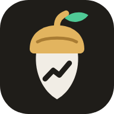

<!doctype html>
<html lang="es">
<head>
<meta charset="utf-8">
<meta name="viewport" content="width=device-width, initial-scale=1, viewport-fit=cover">
<title>Inversiones</title>
<meta name="description" content="Mi cartera de inversión en directo">
<meta name="robots" content="noindex, nofollow">
<link rel="manifest" href="manifest.webmanifest">
<link rel="icon" href="favicon.svg" type="image/svg+xml">
<link rel="apple-touch-icon" href="apple-touch-icon.png">
<meta name="theme-color" content="#12110F">
<meta name="apple-mobile-web-app-capable" content="yes">
<meta name="mobile-web-app-capable" content="yes">
<meta name="apple-mobile-web-app-status-bar-style" content="black-translucent">
<meta name="apple-mobile-web-app-title" content="Inversiones">
<link rel="preconnect" href="https://fonts.googleapis.com">
<link rel="preconnect" href="https://fonts.gstatic.com" crossorigin>
<link href="https://fonts.googleapis.com/css2?family=Manrope:wght@200..800&display=swap" rel="stylesheet">
<style>
/* Base oscura, azul para lo neutro y dos colores que solo significan "sube" y "baja".
   Los cinco colores de categoría (reparto) están validados para daltonismo sobre este fondo. */
:root {
  color-scheme: dark;
  /* Grafito cálido y latón: el dorado marca "tu dinero" (tu cartera, lo probable, la sección activa);
     verde y coral solo significan sube y baja. Las cinco categorías del reparto están validadas para daltonismo. */
  --bg: #12110F;
  --plane: #1A1916;
  --plane-2: #23211D;
  --plane-3: #2C2A25;
  --line: #2A2723;
  --line-2: #3A362F;
  --text: #F1EDE5;
  --text-2: #BDB6A8;
  --muted: #8E877A;
  --accent: #E2B45F;
  --on-accent: #1A1408;
  --up: #4FC995;
  --down: #EF7461;
  --warn: #F2925A;
  --up-bg: rgba(79, 201, 149, 0.13);
  --down-bg: rgba(239, 116, 97, 0.13);
  --warn-bg: rgba(242, 146, 90, 0.13);
  --accent-bg: rgba(226, 180, 95, 0.14);
  --c1: #3987e5; --c2: #d95926; --c3: #199e70; --c4: #c98500; --c5: #d55181; --c0: #4F4A41;
  --f: 'Manrope', system-ui, -apple-system, 'Segoe UI', sans-serif;
  --fc: var(--f);
  --gutter: clamp(16px, 3vw, 40px);
  --nav-h: 0px;
}
* { box-sizing: border-box; }
html { background: var(--bg); -webkit-text-size-adjust: 100%; }
body { margin: 0; min-height: 100vh; background: var(--bg); color: var(--text); font: 15px/1.55 var(--f); font-feature-settings: 'tnum' 0; padding: 0 env(safe-area-inset-right) calc(var(--nav-h) + env(safe-area-inset-bottom)) env(safe-area-inset-left); overflow-x: hidden; }
button, input, select, textarea { font: inherit; color: inherit; }
button { cursor: pointer; }
a { color: var(--accent); text-decoration: none; }
a:hover { text-decoration: underline; }
[hidden] { display: none !important; }
:focus-visible { outline: 2px solid var(--accent); outline-offset: 2px; border-radius: 4px; }
.num, .r { font-variant-numeric: tabular-nums; }
.wrap { max-width: 1680px; margin: 0 auto; padding: 0 var(--gutter); }
.up { color: var(--up); }
.down { color: var(--down); }
.flat { color: var(--text-2); }
.k { color: var(--muted); }
.sr { position: absolute; width: 1px; height: 1px; overflow: hidden; clip: rect(0 0 0 0); white-space: nowrap; }

/* ---------- cabecera ---------- */
.top { position: sticky; top: 0; z-index: 30; background: rgba(18, 17, 15, 0.9); backdrop-filter: blur(16px); -webkit-backdrop-filter: blur(16px); padding-top: env(safe-area-inset-top); }
.fila-top { display: flex; align-items: center; gap: 18px; height: 58px; }
.marca { display: flex; align-items: center; gap: 10px; font-weight: 700; font-size: 16px; letter-spacing: -0.02em; flex: none; }
.marca img { width: 28px; height: 28px; border-radius: 8px; }
.nav { display: flex; gap: 2px; margin-left: 10px; }
.nav a { color: var(--text-2); padding: 7px 12px; border-radius: 9px; font-size: 14.5px; text-decoration: none; }
.nav a:hover { color: var(--text); background: var(--plane); }
.nav a[aria-current="page"] { color: var(--accent); background: var(--accent-bg); }
.estado { display: inline-flex; align-items: center; gap: 8px; color: var(--text-2); font-size: 13px; white-space: nowrap; overflow: hidden; text-overflow: ellipsis; min-width: 0; margin-left: auto; }
.estado::before { content: ''; width: 7px; height: 7px; border-radius: 50%; background: var(--muted); flex: none; }
.estado.on::before { background: var(--up); box-shadow: 0 0 0 3px rgba(79, 201, 149, 0.18); animation: latido 2.4s ease-in-out infinite; }
@keyframes latido { 50% { box-shadow: 0 0 0 6px rgba(79, 201, 149, 0); } }
.acciones { display: flex; gap: 2px; flex: none; }
.ib { width: 38px; height: 38px; display: grid; place-items: center; border-radius: 10px; border: 0; background: transparent; color: var(--text-2); }
.ib:hover { background: var(--plane-2); color: var(--text); }
.ib svg { width: 19px; height: 19px; }

/* barra de navegación inferior en el móvil */
.navbar { display: none; }
@media (max-width: 860px) {
  :root { --nav-h: 62px; }
  .nav { display: none; }
  .navbar { display: grid; grid-template-columns: repeat(6, 1fr); position: fixed; left: 0; right: 0; bottom: 0; z-index: 40; height: calc(var(--nav-h) + env(safe-area-inset-bottom)); padding-bottom: env(safe-area-inset-bottom); background: rgba(26, 25, 22, 0.95); backdrop-filter: blur(16px); -webkit-backdrop-filter: blur(16px); border-top: 1px solid var(--line); }
  .navbar a { display: grid; justify-items: center; align-content: center; gap: 3px; color: var(--muted); font-size: 11px; text-decoration: none; }
  .navbar a svg { width: 22px; height: 22px; }
  .navbar a[aria-current="page"] { color: var(--text); }
  .navbar a[aria-current="page"] svg { color: var(--accent); }
  .fila-top { height: 52px; gap: 10px; }
  .estado { font-size: 12.5px; }
}
@media (max-width: 420px) { .marca span { display: none; } }

/* ---------- cinta de cotizaciones: da la vuelta sola, se para al pasar el ratón ---------- */
.ticker { border-top: 1px solid var(--line); border-bottom: 1px solid var(--line); overflow: hidden; position: relative; font-family: var(--fc); font-size: 14px; }
.ticker::before, .ticker::after { content: ''; position: absolute; top: 0; bottom: 0; width: 48px; z-index: 1; pointer-events: none; }
.ticker::before { left: 0; background: linear-gradient(90deg, var(--bg), transparent); }
.ticker::after { right: 0; background: linear-gradient(-90deg, var(--bg), transparent); }
.ticker-pista { display: flex; width: max-content; animation: cinta var(--dur, 90s) linear infinite; }
.ticker:hover .ticker-pista, .ticker:focus-within .ticker-pista, .ticker.pausa .ticker-pista { animation-play-state: paused; }
.ticker-grupo { display: flex; flex: none; }
@keyframes cinta { to { transform: translateX(-50%); } }
.tk { display: flex; gap: 8px; align-items: baseline; white-space: nowrap; padding: 9px 16px; border-right: 1px solid var(--line); }
.tk.sep { color: var(--muted); font-size: 12.5px; border-right: 0; padding-left: 26px; }
.tk-n { color: var(--muted); }
.tk-p { color: var(--text); font-variant-numeric: tabular-nums; font-weight: 600; }
.tk-v { font-variant-numeric: tabular-nums; font-size: 13px; }
@media (prefers-reduced-motion: reduce) {
  .ticker { overflow-x: auto; scrollbar-width: none; }
  .ticker-pista { animation: none; }
  .ticker-grupo[aria-hidden] { display: none; }
}

/* destello cuando cambia un precio */
.sube, .baja { border-radius: 4px; animation: 1.1s ease-out 1 both; }
.sube { animation-name: flashSube; }
.baja { animation-name: flashBaja; }
@keyframes flashSube { from { background: rgba(79, 201, 149, 0.32); } to { background: transparent; } }
@keyframes flashBaja { from { background: rgba(239, 116, 97, 0.32); } to { background: transparent; } }

/* ---------- estructura de las vistas ---------- */
#vista { padding-top: clamp(36px, 5vw, 64px); padding-bottom: 64px; }
.vista-cab { display: flex; align-items: baseline; gap: 14px; flex-wrap: wrap; margin-bottom: 24px; }
.vista-cab h1 { margin: 0; font-size: 30px; font-weight: 300; letter-spacing: -0.03em; }
.vista-cab p { margin: 0; color: var(--muted); font-size: 14px; }
.bloque-sec { min-width: 0; }
.sec-cab { display: flex; align-items: baseline; gap: 12px; margin-bottom: 14px; flex-wrap: wrap; }
.sec-cab h2 { margin: 0; font-size: 17px; font-weight: 650; letter-spacing: -0.015em; }
.sec-cab .k { font-size: 13px; }
.sec-cab .der { margin-left: auto; display: flex; gap: 8px; align-items: center; flex-wrap: wrap; }
.pila { display: grid; gap: 48px; align-content: start; min-width: 0; grid-template-columns: minmax(0, 1fr); }
.dos { display: grid; gap: 48px; grid-template-columns: minmax(0, 1fr); }
@media (min-width: 1180px) { .dos { grid-template-columns: minmax(0, 1fr) 400px; gap: 56px; } }
@media (min-width: 1500px) { .dos { grid-template-columns: minmax(0, 1fr) 440px; gap: 64px; } }

/* ---------- cartera: patrimonio y evolución ---------- */
.cabecera { display: grid; gap: 32px; margin-bottom: 52px; grid-template-columns: minmax(0, 1fr); }
@media (min-width: 1180px) { .cabecera { grid-template-columns: minmax(360px, 440px) minmax(0, 1fr); gap: 56px; align-items: start; } }
.hero-lbl { color: var(--text-2); font-size: 14px; }
.hero-num { font-weight: 200; font-size: clamp(46px, 9vw, 84px); line-height: 1; letter-spacing: -0.045em; margin: 8px 0 16px; white-space: nowrap; font-variant-numeric: tabular-nums; }
.hero-num span.dec { font-size: 0.48em; letter-spacing: -0.02em; color: var(--text-2); font-weight: 300; padding: 0 2px; margin: 0; }
.hero-num span { padding: 0 4px; margin: 0 -4px; }
.hero-sub { display: grid; gap: 4px; font-size: 16px; }
.hero-sub .k { margin-left: 6px; }
.kpis { display: grid; grid-template-columns: repeat(2, minmax(0, 1fr)); gap: 16px 24px; margin-top: 24px; padding-top: 20px; border-top: 1px solid var(--line); }
.kpi { display: grid; gap: 2px; min-width: 0; }
.kpi .k { font-size: 13px; }
.kpi .v { font-size: 18px; font-variant-numeric: tabular-nums; white-space: nowrap; }
.kpi .v small { font-size: 13px; color: var(--muted); margin-left: 6px; }
.evo-cab { display: flex; align-items: baseline; gap: 10px 16px; flex-wrap: wrap; margin-bottom: 10px; }
.evo-cab .datos { display: flex; gap: 12px; align-items: baseline; flex-wrap: wrap; font-variant-numeric: tabular-nums; }
.evo-cab .tabs { margin-left: auto; }
.leyenda-graf { display: flex; gap: 16px; flex-wrap: wrap; font-size: 12.5px; color: var(--text-2); margin-top: 6px; }
.leyenda-graf i { display: inline-block; width: 14px; height: 0; border-top: 2px solid; vertical-align: middle; margin-right: 6px; }
.leyenda-graf i.disc { border-top-style: dashed; }
.check-mini { display: inline-flex; gap: 6px; align-items: center; font-size: 12.5px; color: var(--text-2); cursor: pointer; }
.check-mini input { accent-color: var(--accent); }

/* ---------- pestañas ---------- */
.tabs { display: inline-flex; gap: 2px; overflow-x: auto; scrollbar-width: none; max-width: 100%; }
.tabs::-webkit-scrollbar { display: none; }
.tabs button { border: 0; background: transparent; color: var(--muted); padding: 5px 9px; border-radius: 7px; font-size: 13px; white-space: nowrap; flex: none; }
.tabs button:hover { color: var(--text); }
.tabs button[aria-pressed="true"] { color: var(--text); background: var(--plane-3); }
.tabs-fila { display: flex; gap: 6px 14px; flex-wrap: wrap; align-items: center; margin-bottom: 16px; }

/* ---------- gráficos ---------- */
.chart { position: relative; touch-action: pan-y; }
.chart svg { display: block; width: 100%; overflow: visible; }
.tt { position: absolute; pointer-events: none; background: var(--plane-2); border: 1px solid var(--line-2); border-radius: 8px; padding: 6px 9px; font-size: 12.5px; white-space: nowrap; transform: translate(-50%, -100%); box-shadow: 0 10px 28px rgba(0, 0, 0, 0.4); z-index: 3; }
.tt b { display: block; font-weight: 500; font-size: 14px; font-variant-numeric: tabular-nums; }
.tt span { color: var(--text-2); display: block; }
.nota { color: var(--muted); font-size: 12.5px; margin: 10px 0 0; line-height: 1.55; max-width: 90ch; }

/* ---------- posiciones ---------- */
.tabla-pos { border-top: 1px solid var(--line); }
.fila { display: grid; grid-template-columns: minmax(0, 2.2fr) 0.95fr 0.75fr 1.15fr 0.6fr 1fr 0.7fr 1.15fr; gap: 12px; align-items: center; padding: 12px 6px; width: 100%; background: none; border: 0; border-bottom: 1px solid var(--line); text-align: left; color: var(--text); }
.fila.cab { color: var(--muted); font-size: 12.5px; padding-top: 10px; padding-bottom: 10px; }
button.fila:hover { background: var(--plane); }
.fila .r { text-align: right; white-space: nowrap; }
.fila .r span { padding: 1px 3px; margin: -1px -3px; }
.activo { display: grid; gap: 1px; min-width: 0; }
.activo b { font-weight: 600; white-space: nowrap; overflow: hidden; text-overflow: ellipsis; }
.activo small { color: var(--muted); font-size: 12.5px; display: flex; gap: 6px 8px; align-items: center; flex-wrap: wrap; }
.nombre-real { display: block; color: var(--text-2); font-size: 12.5px; font-weight: 400; white-space: nowrap; overflow: hidden; text-overflow: ellipsis; min-width: 0; }
.valor { font-weight: 600; }
.fila.efectivo { color: var(--text-2); }
.fila .c-senal { text-align: right; }
@media (max-width: 1360px) and (min-width: 681px) {
  .fila { grid-template-columns: minmax(0, 2.2fr) 0.9fr 0.75fr 1.1fr 0.9fr 1.1fr; }
  .fila .c-peso, .fila .c-gan { display: none; }
}
@media (max-width: 680px) {
  .fila { grid-template-columns: minmax(0, 1fr) auto; grid-template-areas: "act val" "act hoy"; gap: 0 14px; padding: 12px 2px; }
  .fila .activo-l { grid-area: act; }
  .fila .c-val { grid-area: val; }
  .fila .c-hoy { grid-area: hoy; font-size: 13.5px; }
  .fila .c-precio, .fila .c-peso, .fila .c-gan, .fila .c-pct, .fila .c-senal { display: none; }
  .fila.cab { display: none; }
}
.chip { font-size: 11.5px; color: var(--text-2); border: 1px solid var(--line-2); border-radius: 999px; padding: 0 7px; line-height: 18px; white-space: nowrap; }
.chip.warn { color: var(--warn); border-color: rgba(242, 146, 90, 0.4); }
.chip.bad { color: var(--down); border-color: rgba(239, 116, 97, 0.45); }
.chip.good { color: var(--up); border-color: rgba(79, 201, 149, 0.45); }
.chip.info { color: var(--accent); border-color: rgba(226, 180, 95, 0.45); }

/* señal: etiqueta rellena para que se lea de un vistazo */
.senal { display: inline-block; font-size: 12.5px; font-weight: 500; padding: 2px 9px; border-radius: 7px; white-space: nowrap; }
.senal.comprar { color: var(--up); background: var(--up-bg); }
.senal.vender { color: var(--down); background: var(--down-bg); }
.senal.vigilar, .senal.reducir { color: var(--warn); background: var(--warn-bg); }
.senal.recoger { color: var(--accent); background: var(--accent-bg); }
.senal.mantener, .senal.aportar { color: var(--text-2); background: var(--plane-2); }

/* ---------- reparto ---------- */
.apilada { display: flex; gap: 2px; height: 12px; border-radius: 4px; overflow: hidden; margin: 4px 0 18px; }
.apilada i { display: block; min-width: 3px; }
.leyenda { list-style: none; margin: 0; padding: 0; }
.leyenda li { display: grid; grid-template-columns: 10px minmax(0, 1fr) auto 80px; gap: 10px; align-items: center; padding: 8px 0; border-bottom: 1px solid var(--line); font-size: 14px; }
.leyenda li:last-child { border-bottom: 0; }
.leyenda i { width: 10px; height: 10px; border-radius: 3px; }
.leyenda .n { white-space: nowrap; overflow: hidden; text-overflow: ellipsis; }
.leyenda .p { font-variant-numeric: tabular-nums; text-align: right; }
.leyenda .e { font-variant-numeric: tabular-nums; text-align: right; color: var(--muted); font-size: 13px; }
.lateral .tabs button { padding: 5px 7px; }

/* ---------- listas (avisos, agenda, plan) ---------- */
.lista { list-style: none; margin: 0; padding: 0; border-top: 1px solid var(--line); }
.lista li { display: grid; grid-template-columns: 18px minmax(0, 1fr); gap: 12px; padding: 12px 0; border-bottom: 1px solid var(--line); font-size: 14px; }
.lista li > svg { width: 18px; height: 18px; margin-top: 2px; }
.lista b { font-weight: 500; display: block; }
.lista span { color: var(--text-2); font-size: 13.5px; }
.lista .bad > svg { color: var(--down); }
.lista .warn > svg { color: var(--warn); }
.lista .good > svg { color: var(--up); }
.lista .info > svg { color: var(--accent); }
.agenda li { grid-template-columns: 54px minmax(0, 1fr) auto; align-items: center; }
.agenda .dia { font-family: var(--fc); text-align: center; line-height: 1.1; color: var(--text-2); }
.agenda .dia b { font-size: 20px; font-weight: 500; color: var(--text); }
.agenda .r { font-variant-numeric: tabular-nums; }

/* ---------- tablas ---------- */
.tabla-w { overflow-x: auto; -webkit-overflow-scrolling: touch; }
table { width: 100%; border-collapse: collapse; font-size: 14px; }
th { text-align: left; color: var(--muted); font-weight: 400; font-size: 12.5px; padding: 8px 10px; border-bottom: 1px solid var(--line); white-space: nowrap; }
th button { border: 0; background: none; padding: 0; color: inherit; font-size: inherit; }
th button[aria-pressed="true"] { color: var(--text); }
td { padding: 11px 10px; border-bottom: 1px solid var(--line); vertical-align: top; }
td small { display: block; color: var(--muted); font-size: 12px; }
td:first-child { white-space: nowrap; }
td.r, th.r { text-align: right; }
td.r { white-space: nowrap; }
/* en el móvil, las tablas largas pasan a filas apiladas con la etiqueta delante de cada dato */
@media (max-width: 680px) {
  table.resp thead { display: none; }
  table.resp, table.resp tbody { display: block; }
  table.resp tr { display: flex; flex-wrap: wrap; align-items: baseline; gap: 4px 16px; padding: 12px 0; border-bottom: 1px solid var(--line); }
  table.resp td { display: block; border: 0; padding: 0; text-align: left; white-space: nowrap; }
  table.resp td:first-child { flex: 1 0 100%; white-space: normal; }
  table.resp td[data-l]::before { content: attr(data-l) ' '; color: var(--muted); font-size: 12.5px; margin-right: 2px; }
  table.resp td:empty { display: none; }
  table.resp td small { display: inline; margin-left: 6px; }
  table.resp td:last-child:has(.btn) { margin-left: auto; }
  table.resp td:last-child:has(.btn)::before { content: none; }
  .tabla-w > table:not(.resp) th:first-child, .tabla-w > table:not(.resp) td:first-child { position: sticky; left: 0; background: var(--bg); z-index: 1; }
}
tr.tuya td:first-child b::after { content: 'la tienes'; font-weight: 400; font-size: 11px; color: var(--accent); border: 1px solid rgba(226, 180, 95, 0.45); border-radius: 999px; padding: 0 6px; margin-left: 8px; }
.resumen-fila { display: flex; flex-wrap: wrap; gap: 14px 40px; margin-bottom: 20px; }
.resumen-fila > div { display: grid; gap: 2px; }
.resumen-fila .v { font-size: 22px; font-weight: 300; letter-spacing: -0.02em; font-variant-numeric: tabular-nums; }

/* ---------- expertos ---------- */
.votos { display: flex; height: 8px; border-radius: 3px; overflow: hidden; gap: 2px; background: var(--line); }
.votos i { display: block; }
.votos .sb, .votos-ley .sb { background: #2E9E6F; } .votos .b, .votos-ley .b { background: var(--up); } .votos .h, .votos-ley .h { background: #77705F; } .votos .s, .votos-ley .s { background: #E38C7C; } .votos .ss, .votos-ley .ss { background: #C0503F; }
.enlace { border: 0; background: none; padding: 0; color: inherit; font: inherit; cursor: pointer; text-align: left; }
.enlace:hover { color: var(--accent); }
.votos-ley { display: flex; gap: 12px; flex-wrap: wrap; font-size: 12px; color: var(--text-2); margin-top: 6px; }
.votos-ley i { display: inline-block; width: 8px; height: 8px; border-radius: 2px; margin-right: 5px; }
.objetivo { position: relative; height: 34px; margin: 6px 0 2px; }
.objetivo .pista { position: absolute; left: 0; right: 0; top: 14px; height: 4px; border-radius: 2px; background: var(--line-2); }
.objetivo .rango { position: absolute; top: 14px; height: 4px; border-radius: 2px; background: rgba(226, 180, 95, 0.45); }
.objetivo .marca { position: absolute; top: 8px; width: 2px; height: 16px; background: var(--accent); transform: translateX(-1px); }
.objetivo .hoy { position: absolute; top: 10px; width: 12px; height: 12px; border-radius: 50%; background: var(--text); border: 2px solid var(--bg); transform: translateX(-6px); }
.objetivo-ley { display: flex; justify-content: space-between; flex-wrap: wrap; gap: 2px 12px; font-size: 12px; color: var(--muted); font-variant-numeric: tabular-nums; }
.objetivo-ley span { white-space: nowrap; }
.tarjetas { display: grid; gap: 16px; grid-template-columns: repeat(auto-fill, minmax(min(100%, 340px), 1fr)); align-items: start; }
.tarjeta { background: var(--plane); border: 1px solid var(--line); border-radius: 14px; padding: 18px; display: grid; gap: 14px; align-content: start; min-width: 0; }
.tarjeta h3 { margin: 0; font-size: 16px; font-weight: 500; display: flex; gap: 10px; align-items: baseline; flex-wrap: wrap; }
.tarjeta h3 .k { font-size: 13px; font-weight: 400; }
.motivos { margin: 0; padding: 0; list-style: none; display: grid; gap: 4px; font-size: 13.5px; color: var(--text-2); }
.motivos li { padding-left: 14px; position: relative; }
.motivos li::before { content: ''; position: absolute; left: 2px; top: 0.65em; width: 4px; height: 4px; border-radius: 50%; background: var(--muted); }
.noticias { list-style: none; margin: 0; padding: 0; border-top: 1px solid var(--line); }
.noticias li { padding: 11px 0; border-bottom: 1px solid var(--line); display: grid; gap: 3px; }
.noticias a { color: var(--text); font-size: 14.5px; line-height: 1.4; }
.noticias a:hover { color: var(--accent); text-decoration: none; }
.noticias small { color: var(--muted); font-size: 12.5px; }
.noticias mark { background: none; color: var(--accent); }
.estrellas { color: var(--warn); letter-spacing: 1px; }
.estrellas .k { letter-spacing: 0; }

/* ---------- mercados ---------- */
.mercados { display: grid; gap: 1px; border: 1px solid var(--line); border-radius: 14px; overflow: hidden; grid-template-columns: repeat(auto-fill, minmax(min(100%, 280px), 1fr)); }
.merc { background: var(--bg); padding: 16px 18px; display: grid; gap: 6px; min-width: 0; box-shadow: 0 0 0 1px var(--line); }
.merc-cab { display: flex; justify-content: space-between; gap: 10px; align-items: baseline; }
.merc-n { color: var(--text-2); font-size: 14px; }
.merc-p { font-size: 26px; font-weight: 250; font-variant-numeric: tabular-nums; letter-spacing: -0.01em; }
.merc-r { display: flex; flex-wrap: wrap; gap: 2px 14px; font-size: 12.5px; color: var(--muted); font-variant-numeric: tabular-nums; }
.merc-r span { white-space: nowrap; }
@media (min-width: 1100px) { .noticias.dos-col { display: grid; grid-template-columns: 1fr 1fr; column-gap: 48px; } }
.solo-movil { display: none; }
@media (max-width: 680px) { .solo-movil { display: inline-block; font-size: 11.5px; padding: 0 7px; line-height: 18px; } }
.merc-r span b { font-weight: 400; }

/* ---------- análisis IA ---------- */
.ia-cab { display: grid; gap: 14px; max-width: 920px; }
.ia-firma { display: flex; gap: 10px; align-items: flex-start; color: var(--muted); font-size: 13px; }
.ia-firma svg { width: 18px; height: 18px; color: var(--accent); flex: none; margin-top: 1px; }
.ia-titular { margin: 4px 0 2px; font-size: clamp(22px, 2.6vw, 28px); font-weight: 300; line-height: 1.3; letter-spacing: -0.02em; }
.ia-p { margin: 0; color: var(--text-2); font-size: 15.5px; line-height: 1.65; max-width: 80ch; }
.dato { color: var(--text); font-weight: 650; }
.lista .dato, .tarjeta .dato { display: inline; }
.ia-titular .dato { font-weight: 500; }
.ia-notas { display: grid; gap: 1px; grid-template-columns: repeat(auto-fit, minmax(min(100%, 210px), 1fr)); border: 1px solid var(--line); border-radius: 14px; overflow: hidden; margin-top: 32px; }
.ia-notas > div { background: var(--bg); padding: 16px 18px; display: grid; gap: 6px; align-content: start; box-shadow: 0 0 0 1px var(--line); font-size: 13.5px; color: var(--text-2); }
.ia-nota-cab { display: flex; justify-content: space-between; gap: 10px; align-items: center; }
.ia-nota-cab b { color: var(--text); font-weight: 650; font-size: 14.5px; }
.ia-puntos { display: inline-flex; gap: 3px; }
.ia-puntos i { width: 14px; height: 6px; border-radius: 2px; background: var(--line-2); }
.ia-puntos i.on { background: var(--accent); }
.ia-mejorar { margin: 0; padding: 0; list-style: none; counter-reset: m; display: grid; gap: 0; border-top: 1px solid var(--line); }
.ia-mejorar li { counter-increment: m; display: grid; grid-template-columns: 34px minmax(0, 1fr); column-gap: 14px; padding: 18px 0; border-bottom: 1px solid var(--line); }
.ia-mejorar li::before { content: counter(m); grid-row: span 3; width: 28px; height: 28px; border-radius: 50%; background: var(--accent-bg); color: var(--accent); font-weight: 700; font-size: 14px; display: grid; place-items: center; }
.ia-mejorar h3 { margin: 2px 0 6px; font-size: 16px; font-weight: 650; letter-spacing: -0.01em; }
.ia-mejorar p { margin: 0 0 10px; color: var(--text-2); font-size: 14.5px; line-height: 1.6; }
.ia-meta { display: flex; flex-wrap: wrap; gap: 6px 20px; font-size: 13px; color: var(--muted); }
.ia-meta b { color: var(--text-2); font-weight: 600; }
.tarjeta h3 .logo-a { margin-right: 2px; }

/* ---------- logos, banderas y orden ---------- */
.logo-a { position: relative; flex: none; width: 34px; height: 34px; border-radius: 9px; background: #F1EDE5; display: grid; place-items: center; overflow: hidden; }
.logo-a > span { font-size: 12px; font-weight: 700; color: #3A362F; letter-spacing: -0.02em; }
.logo-a img { position: absolute; inset: 5px; width: calc(100% - 10px); height: calc(100% - 10px); object-fit: contain; background: #F1EDE5; }
.logo-a.peq { width: 24px; height: 24px; border-radius: 6px; }
.logo-a.peq > span { font-size: 9.5px; }
.logo-a.peq img { inset: 3px; width: calc(100% - 6px); height: calc(100% - 6px); }
.activo-l { display: flex; gap: 12px; align-items: center; min-width: 0; }
.bandera { width: 18px; height: 13px; border-radius: 2px; object-fit: cover; box-shadow: 0 0 0 1px rgba(255, 255, 255, 0.08); flex: none; }
.bandera.global { display: inline-block; background: radial-gradient(circle at 50% 50%, var(--muted) 0 3px, transparent 3.5px), var(--plane-3); }
.origen { display: inline-flex; gap: 6px; align-items: center; white-space: nowrap; }
.th { border: 0; background: none; padding: 0; color: inherit; font: inherit; cursor: pointer; display: inline-flex; gap: 4px; align-items: center; }
.th:hover, .th[aria-pressed="true"] { color: var(--text); }
.th .fl { color: var(--accent); }
.ordenar-m { display: none; }
@media (max-width: 680px) { .ordenar-m { display: flex; gap: 8px; align-items: center; color: var(--muted); font-size: 13px; width: 100%; } .ordenar-m select { flex: 1; background: var(--plane); border: 1px solid var(--line-2); border-radius: 8px; padding: 7px 9px; color: var(--text); } }

/* ---------- plan de venta ---------- */
.plan-venta { background: var(--plane); border: 1px solid var(--line); border-left: 3px solid var(--accent); border-radius: 14px; padding: 20px; display: grid; gap: 18px; }
.plan-venta > header { display: flex; gap: 12px; align-items: center; flex-wrap: wrap; }
.plan-venta > header h3 { margin: 0; font-size: 17px; font-weight: 650; }
.plan-venta > header .senal { margin-left: auto; }
.pv-grid { display: grid; gap: 18px 36px; }
@media (min-width: 900px) { .pv-grid { grid-template-columns: minmax(0, 1.1fr) minmax(0, 1fr); } }
.plan-venta.compacto .pv-grid { grid-template-columns: minmax(0, 1fr); }
.pv-col { display: grid; gap: 16px; align-content: start; }
.pv-paso { display: grid; grid-template-columns: 76px minmax(0, 1fr); gap: 12px; font-size: 14px; }
.pv-paso b { display: block; font-weight: 650; }
.pv-paso > div > span { color: var(--text-2); font-size: 13.5px; }
.pv-n { color: var(--accent); font-size: 13px; font-weight: 600; padding-top: 1px; }
.pv-destinos { display: grid; gap: 12px; }
.pv-dest { display: grid; grid-template-columns: 34px minmax(0, 1fr); gap: 12px; align-items: start; }
.pv-dest b { font-size: 15px; }
.pv-dest span { color: var(--text-2); font-size: 13.5px; display: block; }
.ideas-top { margin: 0; padding-left: 20px; display: grid; gap: 10px; font-size: 13.5px; color: var(--text-2); }
.ideas-top b { color: var(--text); font-weight: 600; }
.idea-cab { display: flex; gap: 8px; align-items: center; flex-wrap: wrap; margin-bottom: 2px; }
@media (max-width: 560px) { .pv-paso { grid-template-columns: minmax(0, 1fr); gap: 4px; } .plan-venta { padding: 16px; } }

/* ---------- futuro ---------- */
.proy-controles { display: grid; gap: 16px 20px; grid-template-columns: repeat(auto-fit, minmax(min(100%, 150px), 1fr)); align-items: start; padding: 18px 20px; background: var(--plane); border: 1px solid var(--line); border-radius: 14px; margin-bottom: 36px; }
.proy-controles select, .proy-controles input { width: 100%; background: var(--bg); border: 1px solid var(--line-2); border-radius: 9px; padding: 9px 11px; color: var(--text); font-size: 16px; }
.con-ud { display: flex; align-items: center; gap: 8px; }
.con-ud span { color: var(--muted); }
.proy-real { align-self: center; flex-wrap: wrap; }
.proy-real small { flex-basis: 100%; padding-left: 27px; font-size: 12px; }
.proy-cab { display: grid; gap: 18px; margin-bottom: 18px; }
.proy-num { font-weight: 200; font-size: clamp(42px, 7vw, 68px); line-height: 1; letter-spacing: -0.04em; color: var(--accent); margin: 8px 0 18px; font-variant-numeric: tabular-nums; }
.proy-esc { display: grid; gap: 14px 28px; grid-template-columns: repeat(auto-fit, minmax(150px, 1fr)); }
@media (max-width: 560px) { .proy-esc { grid-template-columns: repeat(2, minmax(0, 1fr)); gap: 14px 16px; } .proy-esc b { font-size: 18px; } .proy-controles { padding: 16px; } }
.proy-esc > div { display: grid; gap: 1px; padding-left: 12px; border-left: 2px solid var(--line-2); }
.proy-esc b { font-size: 20px; font-weight: 500; letter-spacing: -0.01em; font-variant-numeric: tabular-nums; }
.proy-esc small { color: var(--muted); font-size: 12.5px; }
.acento { color: var(--accent); }
.leyenda-graf i.banda { width: 14px; height: 10px; border: 0; background: rgba(226, 180, 95, 0.32); border-radius: 2px; vertical-align: -1px; }
.leyenda-graf i.banda.clara { background: rgba(226, 180, 95, 0.14); }
tr.activa td { background: var(--accent-bg); }
.hitos li { grid-template-columns: 120px minmax(0, 1fr); align-items: baseline; }
.hitos .meta { font-weight: 600; font-variant-numeric: tabular-nums; }
a.kpi { color: inherit; text-decoration: none; border-radius: 8px; }
a.kpi:hover .v { color: var(--accent); }

/* ---------- análisis por dentro ---------- */
.barras { list-style: none; margin: 0; padding: 0; display: grid; gap: 10px; }
.barras li { display: grid; grid-template-columns: minmax(0, 220px) minmax(0, 1fr) 90px; gap: 14px; align-items: center; font-size: 14px; }
.barras .n { white-space: nowrap; overflow: hidden; text-overflow: ellipsis; }
.barras .b { height: 8px; border-radius: 3px; background: var(--line); overflow: hidden; }
.barras .b i { display: block; height: 100%; background: var(--c1); border-radius: 3px; }
.barras .b i.dir { background: var(--c4); }
.barras .r { text-align: right; font-variant-numeric: tabular-nums; }
@media (max-width: 560px) { .barras li { grid-template-columns: minmax(0, 1fr) 80px; } .barras .b { grid-column: 1 / -1; grid-row: 2; } }

/* ---------- ficha de una posición (panel lateral en el PC, hoja completa en el móvil) ---------- */
.ficha-fondo { position: fixed; inset: 0; z-index: 60; background: rgba(5, 7, 10, 0.55); display: flex; justify-content: flex-end; }
.ficha { width: min(720px, 100%); height: 100%; background: var(--bg); border-left: 1px solid var(--line-2); overflow-y: auto; overscroll-behavior: contain; padding: 0 0 calc(32px + env(safe-area-inset-bottom)); animation: entra 0.22s ease-out; }
@keyframes entra { from { transform: translateX(24px); opacity: 0; } }
@media (max-width: 760px) { .ficha { border-left: 0; animation-name: subeFicha; } }
@keyframes subeFicha { from { transform: translateY(24px); opacity: 0; } }
@media (prefers-reduced-motion: reduce) { .ficha { animation: none; } }
.ficha-cab { position: sticky; top: 0; z-index: 2; background: rgba(18, 17, 15, 0.95); backdrop-filter: blur(14px); -webkit-backdrop-filter: blur(14px); padding: calc(14px + env(safe-area-inset-top)) 24px 0; border-bottom: 1px solid var(--line); }
.ficha-tit { display: flex; gap: 12px; align-items: flex-start; }
.ficha-tit h2 { margin: 0; font-size: 24px; font-weight: 650; letter-spacing: -0.02em; }
.ficha-tit small { display: block; color: var(--muted); font-size: 13px; margin-top: 2px; }
.ficha-tit .ib { margin-left: auto; margin-top: -4px; flex: none; }
.ficha-precio { display: flex; gap: 8px 18px; align-items: baseline; flex-wrap: wrap; margin: 12px 0 10px; }
.ficha-precio .p { font-size: 34px; font-weight: 200; letter-spacing: -0.02em; font-variant-numeric: tabular-nums; }
.ficha-botones { display: flex; gap: 8px; flex-wrap: wrap; margin-bottom: 12px; }
.ficha-cab .tabs { margin-bottom: -1px; }
.ficha-cab .tabs button { border-radius: 0; padding: 9px 12px; border-bottom: 2px solid transparent; background: none; font-size: 14px; }
.ficha-cab .tabs button[aria-pressed="true"] { border-bottom-color: var(--accent); background: none; }
.ficha-cuerpo { padding: 22px 24px 0; display: grid; gap: 28px; }
@media (max-width: 560px) { .ficha-cab { padding-left: 16px; padding-right: 16px; } .ficha-cuerpo { padding-left: 16px; padding-right: 16px; } }
.kv { display: grid; grid-template-columns: auto 1fr; gap: 7px 16px; font-size: 14px; margin: 0; }
.kv dt { color: var(--muted); }
.kv dd { margin: 0; text-align: right; font-variant-numeric: tabular-nums; }
.kv-2 { display: grid; gap: 22px 36px; }
@media (min-width: 560px) { .kv-2 { grid-template-columns: 1fr 1fr; } }
.bloque h3 { margin: 0 0 10px; font-size: 14px; font-weight: 500; color: var(--text-2); }
.rango52 .pista { height: 4px; background: var(--line-2); border-radius: 2px; position: relative; margin: 10px 0 6px; }
.rango52 .punto { position: absolute; top: -4px; width: 12px; height: 12px; border-radius: 50%; background: var(--accent); border: 2px solid var(--bg); transform: translateX(-50%); }
.rango52 .ext { display: flex; justify-content: space-between; color: var(--muted); font-size: 12px; font-variant-numeric: tabular-nums; }
.medidor { display: flex; gap: 3px; }
.medidor i { flex: 1; height: 6px; border-radius: 2px; background: var(--line-2); }
.medidor i.on { background: var(--accent); }
.notas { white-space: pre-wrap; font-size: 14px; color: var(--text-2); margin: 0; line-height: 1.55; }
.anios { display: grid; grid-template-columns: repeat(auto-fill, minmax(72px, 1fr)); gap: 1px; border: 1px solid var(--line); border-radius: 10px; overflow: hidden; }
.anios div { background: var(--bg); padding: 8px 10px; display: grid; gap: 1px; font-variant-numeric: tabular-nums; box-shadow: 0 0 0 1px var(--line); }
.anios .k { font-size: 12px; }

/* ---------- botones, formularios y hojas ---------- */
.btn { border: 1px solid var(--line-2); background: var(--plane-2); color: var(--text); border-radius: 10px; padding: 9px 15px; font-weight: 500; font-size: 14px; display: inline-flex; gap: 7px; align-items: center; white-space: nowrap; }
.btn svg { width: 16px; height: 16px; }
.btn:hover { border-color: var(--accent); }
.btn.pri { background: var(--accent); color: var(--on-accent); border-color: var(--accent); }
.btn.compra { color: var(--up); }
.btn.venta { color: var(--down); }
.btn.peligro { color: var(--down); }
.btn.peq { padding: 6px 11px; font-size: 13px; border-radius: 8px; }
.btn:disabled { opacity: 0.55; cursor: default; }
.campo { display: grid; gap: 6px; font-size: 13.5px; color: var(--text-2); min-width: 0; align-content: start; }
.campo input, .campo select, .campo textarea { width: 100%; background: var(--bg); border: 1px solid var(--line-2); border-radius: 9px; padding: 10px 11px; color: var(--text); font-size: 16px; }
.campo input:focus, .campo select:focus, .campo textarea:focus { outline: 2px solid var(--accent); outline-offset: 0; border-color: transparent; }
.campo small { color: var(--muted); font-size: 12px; }
.check { display: flex; gap: 9px; align-items: center; font-size: 14px; color: var(--text-2); }
.check input { width: 18px; height: 18px; accent-color: var(--accent); flex: none; }
.form-grid { display: grid; gap: 14px 12px; grid-template-columns: repeat(auto-fit, minmax(170px, 1fr)); align-items: start; }
.calculo { background: var(--plane-2); border-radius: 10px; padding: 12px 14px; font-size: 14px; display: grid; gap: 4px; font-variant-numeric: tabular-nums; }
.calculo div { display: flex; justify-content: space-between; gap: 12px; }
.calculo b { font-weight: 500; }
.pantalla { min-height: 100vh; display: grid; place-items: center; padding: 24px 16px; }
.caja { width: min(420px, 100%); display: grid; gap: 16px; }
.caja .logo { width: 56px; height: 56px; border-radius: 15px; }
.caja h1 { margin: 0; font-weight: 300; font-size: 34px; letter-spacing: -0.02em; }
.caja p { margin: 0; color: var(--text-2); font-size: 14.5px; }
.error { color: var(--down); font-size: 13.5px; min-height: 1em; }
.hoja-fondo { position: fixed; inset: 0; z-index: 70; background: rgba(5, 7, 10, 0.7); display: flex; justify-content: center; align-items: flex-end; }
@media (min-width: 720px) { .hoja-fondo { align-items: center; } }
.hoja { width: min(640px, 100%); max-height: min(92vh, 980px); overflow: auto; overscroll-behavior: contain; background: var(--plane); border: 1px solid var(--line-2); border-radius: 18px 18px 0 0; padding: 18px 20px calc(20px + env(safe-area-inset-bottom)); }
.hoja.ancha { width: min(820px, 100%); }
@media (min-width: 720px) { .hoja { border-radius: 18px; } }
.hoja-cab { display: flex; align-items: center; gap: 10px; position: sticky; top: -18px; background: var(--plane); padding: 6px 0 12px; margin-top: -6px; z-index: 2; }
.hoja-cab h2 { margin: 0; font-size: 18px; font-weight: 500; flex: 1; }
.hoja form { display: grid; gap: 14px; }
.seccion-ed { border-top: 1px solid var(--line); padding-top: 16px; margin-top: 18px; display: grid; gap: 12px; }
.seccion-ed > h3 { margin: 0; font-size: 15px; font-weight: 500; }
details.mas > summary { cursor: pointer; color: var(--accent); font-size: 13.5px; }
details.mas[open] > summary { margin-bottom: 12px; }
.fila-btns { display: flex; flex-wrap: wrap; gap: 8px; justify-content: flex-end; align-items: center; }
.fila-btns .izq { margin-right: auto; }
.qr { background: #fff; border-radius: 12px; padding: 10px; width: fit-content; margin: 6px auto; }
.qr svg { display: block; width: 220px; height: 220px; }
.toast { position: fixed; left: 50%; bottom: calc(20px + var(--nav-h) + env(safe-area-inset-bottom)); transform: translateX(-50%); z-index: 90; background: var(--plane-3); border: 1px solid var(--line-2); color: var(--text); padding: 10px 16px; border-radius: 10px; box-shadow: 0 12px 30px rgba(0, 0, 0, 0.45); font-size: 14px; max-width: calc(100% - 32px); }
.vacio { color: var(--muted); font-size: 14px; padding: 10px 0; }
.pie { color: var(--muted); font-size: 12.5px; margin: 56px 0 0; line-height: 1.6; max-width: 90ch; }
.mas-filas { border: 0; background: none; color: var(--accent); padding: 12px 0 0; font-size: 14px; }
@media (prefers-reduced-motion: reduce) { .sube, .baja, .estado.on::before { animation: none; } }

/* ---------- botón del asesor en la cabecera ---------- */
.as-boton { display: inline-flex; align-items: center; gap: 7px; height: 36px; padding: 0 14px 0 11px; margin-right: 6px; border-radius: 999px; border: 1px solid rgba(226, 180, 95, 0.4); background: var(--accent-bg); color: var(--accent); font-weight: 600; font-size: 13.5px; white-space: nowrap; }
.as-boton svg { width: 17px; height: 17px; }
.as-boton:hover { background: rgba(226, 180, 95, 0.22); }
@media (max-width: 860px) { .as-boton { width: 38px; height: 38px; padding: 0; justify-content: center; margin-right: 0; } .as-boton span { display: none; } }
.vista-cta { margin-left: auto; align-self: center; }
.vista-cta svg, .btn svg.ch { color: var(--accent); }

/* ---------- panel del asesor ---------- */
.asesor-fondo { position: fixed; inset: 0; z-index: 64; background: rgba(5, 7, 10, 0.5); display: flex; justify-content: flex-end; }
.asesor { width: min(540px, 100%); height: 100vh; height: 100dvh; background: var(--bg); border-left: 1px solid var(--line-2); display: grid; grid-template-rows: auto minmax(0, 1fr) auto; grid-template-columns: minmax(0, 1fr); animation: entra 0.22s ease-out; }
@media (max-width: 760px) { .asesor { border-left: 0; animation-name: subeFicha; } }
@media (prefers-reduced-motion: reduce) { .asesor { animation: none; } }
.as-cab { display: flex; align-items: center; gap: 2px; padding: calc(12px + env(safe-area-inset-top)) 12px 12px 20px; border-bottom: 1px solid var(--line); }
.as-tit { display: flex; gap: 12px; align-items: center; margin-right: auto; min-width: 0; }
.as-tit > div { min-width: 0; }
.as-ico { width: 34px; height: 34px; border-radius: 10px; background: var(--accent-bg); color: var(--accent); display: grid; place-items: center; flex: none; }
.as-ico svg { width: 19px; height: 19px; }
.as-tit h2 { margin: 0; font-size: 17px; font-weight: 650; letter-spacing: -0.01em; }
.as-tit small { display: block; color: var(--muted); font-size: 12.5px; white-space: nowrap; overflow: hidden; text-overflow: ellipsis; }
.as-cuerpo { overflow-y: auto; overscroll-behavior: contain; padding: 22px 20px 12px; display: flex; flex-direction: column; gap: 20px; }
.as-yo { align-self: flex-end; max-width: 86%; background: var(--plane-2); border: 1px solid var(--line-2); border-radius: 16px 16px 4px 16px; padding: 9px 14px; font-size: 14.5px; white-space: pre-wrap; overflow-wrap: anywhere; }
.as-ia { font-size: 14.5px; line-height: 1.62; color: var(--text); min-width: 0; overflow-wrap: anywhere; }
.as-md p { margin: 0 0 10px; }
.as-md ul, .as-md ol { margin: 0 0 10px; padding-left: 20px; display: grid; gap: 4px; }
.as-md h4 { margin: 14px 0 6px; font-size: 15px; font-weight: 650; }
.as-md b { font-weight: 650; color: var(--text); }
.as-md code { background: var(--plane-2); border-radius: 5px; padding: 1px 5px; font-size: 13px; }
.as-md hr { border: 0; border-top: 1px solid var(--line); margin: 14px 0; }
.as-md a { overflow-wrap: anywhere; }
.as-tabla { overflow-x: auto; margin: 0 0 12px; }
.as-tabla table { font-size: 13px; }
.as-tabla th, .as-tabla td { padding: 6px 8px; white-space: nowrap; }
.as-paso { display: flex; gap: 8px; align-items: flex-start; color: var(--muted); font-size: 12.5px; margin: 0 0 8px; line-height: 1.4; }
.as-paso svg { width: 14px; height: 14px; color: var(--accent); flex: none; margin-top: 1px; }
.as-pensando { display: inline-flex; gap: 5px; padding: 6px 2px; }
.as-pensando i { width: 6px; height: 6px; border-radius: 50%; background: var(--accent); opacity: 0.35; animation: pensando 1.2s ease-in-out infinite; }
.as-pensando i:nth-child(2) { animation-delay: 0.15s; } .as-pensando i:nth-child(3) { animation-delay: 0.3s; }
@keyframes pensando { 40% { opacity: 1; transform: translateY(-2px); } }
@media (prefers-reduced-motion: reduce) { .as-pensando i { animation: none; opacity: 0.8; } }
.as-error { color: var(--down); font-size: 13.5px; }
.as-error .enlace { color: var(--accent); margin-left: 6px; }
.as-fuentes { display: flex; flex-wrap: wrap; gap: 6px; align-items: center; margin-top: 6px; }
.as-fuentes .k { font-size: 12px; margin-right: 2px; }
.as-fuentes a { font-size: 12px; color: var(--text-2); border: 1px solid var(--line-2); border-radius: 999px; padding: 1px 9px; max-width: 200px; overflow: hidden; text-overflow: ellipsis; white-space: nowrap; }
.as-fuentes a:hover { color: var(--accent); border-color: var(--accent); text-decoration: none; }
.as-pie { border-top: 1px solid var(--line); padding: 12px 14px calc(12px + env(safe-area-inset-bottom)); display: grid; gap: 7px; background: var(--bg); }
.as-form { display: flex; gap: 8px; align-items: flex-end; background: var(--plane); border: 1px solid var(--line-2); border-radius: 14px; padding: 6px 6px 6px 14px; }
.as-form:focus-within { border-color: var(--accent); }
.as-form textarea { flex: 1; min-width: 0; border: 0; background: none; resize: none; font-size: 15px; line-height: 1.45; max-height: 160px; padding: 7px 0; color: var(--text); }
.as-form textarea:focus, .as-form textarea:focus-visible { outline: none; }
@media (max-width: 760px) { .as-form textarea { font-size: 16px; } }
.as-enviar { width: 38px; height: 38px; border-radius: 10px; border: 0; background: var(--accent); color: var(--on-accent); display: grid; place-items: center; flex: none; }
.as-enviar svg { width: 18px; height: 18px; }
.as-enviar.parar { background: var(--plane-3); color: var(--text); }
.as-pie small { color: var(--muted); font-size: 11.5px; padding: 0 6px; }
.as-vacio { display: grid; gap: 12px; margin-top: auto; }
.as-vacio h3 { margin: 0; font-size: 24px; font-weight: 300; letter-spacing: -0.02em; }
.as-vacio p { margin: 0; color: var(--text-2); font-size: 14px; line-height: 1.6; }
.as-sug { display: grid; gap: 8px; margin-top: 6px; }
.as-sug button { text-align: left; border: 1px solid var(--line-2); background: var(--plane); border-radius: 12px; padding: 10px 14px; font-size: 14px; color: var(--text); line-height: 1.4; }
.as-sug button:hover { border-color: var(--accent); }
.as-config { display: grid; gap: 14px; align-content: start; }
.as-config h3 { margin: 0; font-size: 20px; font-weight: 400; letter-spacing: -0.01em; }
.as-config > p { margin: 0; color: var(--text-2); font-size: 14px; line-height: 1.6; }
.as-pasos-clave { margin: 0; padding-left: 20px; display: grid; gap: 6px; color: var(--text-2); font-size: 14px; line-height: 1.5; }
.as-sin-clave { border-top: 1px solid var(--line); padding-top: 16px; margin-top: 4px; display: grid; gap: 8px; justify-items: start; }
.as-sin-clave p { margin: 0; color: var(--text-2); font-size: 13.5px; }
.as-modelos { border: 0; padding: 0; margin: 0; display: grid; gap: 8px; }
.as-modelos legend { color: var(--text-2); font-size: 13.5px; margin-bottom: 6px; }
.as-modelo { display: flex; gap: 10px; align-items: flex-start; border: 1px solid var(--line-2); border-radius: 12px; padding: 10px 12px; cursor: pointer; }
.as-modelo:has(input:checked) { border-color: var(--accent); background: var(--accent-bg); }
.as-modelo input { accent-color: var(--accent); margin-top: 4px; }
.as-modelo b { display: block; font-weight: 600; font-size: 14px; }
.as-modelo small { color: var(--muted); font-size: 12.5px; }

/* ---------- frescura de los datos ---------- */
.frescura { display: flex; flex-wrap: wrap; gap: 6px 22px; font-size: 12.5px; color: var(--muted); margin: -8px 0 32px; }
.frescura .vivo-dot { display: inline-flex; align-items: center; gap: 8px; }
.frescura .vivo-dot::before { content: ''; width: 7px; height: 7px; border-radius: 50%; background: var(--up); box-shadow: 0 0 0 3px rgba(79, 201, 149, 0.18); }
.frescura [data-b="recalc"] { color: var(--text-2); font-variant-numeric: tabular-nums; }
.enlace.acento { color: var(--accent); }

/* ---------- expertos: una fila por posición ---------- */
.fx-lista { border-top: 1px solid var(--line); }
.fx { display: grid; grid-template-columns: minmax(160px, 0.8fr) minmax(0, 1.7fr) minmax(0, 1.5fr) minmax(220px, 1fr); grid-template-areas: "act web claude datos"; gap: 26px; padding: 18px 4px; border-bottom: 1px solid var(--line); align-items: start; }
.fx-act { grid-area: act; } .fx-web { grid-area: web; } .fx-claude { grid-area: claude; } .fx-datos { grid-area: datos; }
@media (max-width: 1179px) and (min-width: 861px) { .fx { grid-template-columns: minmax(150px, 0.8fr) minmax(0, 2fr) minmax(200px, 1fr); grid-template-areas: "act web datos" "act claude datos"; row-gap: 12px; } .fx-claude { padding-top: 12px; border-top: 1px dashed var(--line-2); } }
.fx-act { display: flex; gap: 12px; align-items: center; min-width: 0; }
.fx-act > div { min-width: 0; }
.fx-act .enlace { font-weight: 650; font-size: 15.5px; letter-spacing: -0.01em; }
.fx-act small { display: block; color: var(--muted); font-size: 12.5px; }
.fx-op { min-width: 0; }
.fx-op p.fx-vig { color: var(--muted); font-size: 13.5px; } .fx-op p.fx-vig b { color: var(--text-2); font-weight: 600; }
.fx-op p { margin: 6px 0 0; color: var(--text-2); font-size: 14px; line-height: 1.5; }
.fx-op details.mas { margin-top: 6px; }
.fx-op details.mas > summary { font-size: 13px; }
.fx-op details.mas[open] > summary { margin-bottom: 6px; }
.fx-quien { display: flex; gap: 8px; align-items: center; flex-wrap: wrap; }
.fx-de { font-size: 12px; color: var(--muted); min-width: 44px; }
.fx-quien .k { font-size: 12px; }
.fx-datos { display: grid; gap: 8px; font-size: 13px; min-width: 0; }
.fx-an { display: grid; gap: 7px; }
.fx-an .k b { color: var(--text); font-weight: 500; }
.fx-kv { display: grid; gap: 5px; color: var(--text-2); }
.fx-kv b { color: var(--text); font-weight: 500; }
@media (max-width: 860px) {
  .fx { grid-template-columns: minmax(0, 1fr); grid-template-areas: "act" "web" "claude" "datos"; gap: 12px; padding: 16px 0; }
  .fx-claude { padding-top: 12px; border-top: 1px dashed var(--line-2); }
  .fx-datos { padding-left: 46px; }
}

/* ---------- ideas: las tres mejores, las de la IA y la tabla ---------- */
.ideas-top3 { display: grid; gap: 14px; grid-template-columns: minmax(0, 1fr); margin-bottom: 10px; }
@media (min-width: 900px) { .ideas-top3 { grid-template-columns: repeat(3, minmax(0, 1fr)); } }
.idea { background: var(--plane); border: 1px solid var(--line); border-radius: 14px; padding: 16px; display: flex; flex-direction: column; gap: 12px; min-width: 0; }
.idea > header { display: flex; gap: 11px; align-items: center; }
.idea > header > div { min-width: 0; flex: 1; }
.idea > header b { display: block; font-weight: 650; font-size: 15px; white-space: nowrap; overflow: hidden; text-overflow: ellipsis; }
.idea > header small { color: var(--muted); font-size: 12.5px; display: flex; gap: 6px; align-items: center; }
.idea-n { color: var(--accent); font-weight: 700; font-size: 13px; width: 24px; height: 24px; border-radius: 50%; background: var(--accent-bg); display: grid; place-items: center; flex: none; }
.idea-cifras { display: grid; grid-template-columns: repeat(3, auto); justify-content: space-between; gap: 10px; font-variant-numeric: tabular-nums; }
.idea-cifras > div { display: grid; gap: 2px; font-size: 16px; font-weight: 500; }
.idea-cifras .k { font-size: 12px; font-weight: 400; }
.idea-pega { margin: 0; color: var(--text-2); font-size: 13px; line-height: 1.5; }
.idea-pega b { color: var(--warn); font-weight: 600; }
.idea > .btn { margin-top: auto; align-self: flex-start; }
.idea.ia p { margin: 0; color: var(--text-2); font-size: 13.5px; line-height: 1.55; }
.idea.ia p b { color: var(--text); font-weight: 600; }
.ia-ideas { margin: 18px 0 30px; }
.ia-ideas .sec-cab h3 { margin: 0; font-size: 15px; font-weight: 650; }
.ia-ideas-g { display: grid; gap: 14px; grid-template-columns: minmax(0, 1fr); }
@media (min-width: 900px) { .ia-ideas-g { grid-template-columns: repeat(3, minmax(0, 1fr)); } }
.ctr { display: inline-flex; gap: 2px; align-items: center; vertical-align: middle; }
.ctr i { width: 5px; height: 14px; border-radius: 2px; background: var(--line-2); }
.ctr i.si { background: var(--up); }
.ctr i.no { background: var(--down); }
.ctr b { margin-left: 7px; font-weight: 600; font-size: 13px; color: var(--text); }
.ctr-lista { list-style: none; margin: 0; padding: 0; display: grid; gap: 4px; font-size: 12.5px; }
.ctr-lista li { display: grid; grid-template-columns: 8px 76px minmax(0, 1fr); gap: 8px; align-items: baseline; color: var(--muted); }
.ctr-lista li::before { content: ''; width: 7px; height: 7px; border-radius: 2px; background: var(--line-2); transform: translateY(-1px); }
.ctr-lista li.si::before { background: var(--up); }
.ctr-lista li.no::before { background: var(--down); }
.ctr-lista b { color: var(--text-2); font-weight: 500; }
.ctr-lista li.si span { color: var(--text-2); }
table.ideas .sub { display: block; font-size: 12px; }
@media (max-width: 680px) { table.ideas .sub { display: inline; margin-left: 6px; } }

/* ---------- análisis de la IA ---------- */
.ia-firma { flex-wrap: wrap; }
.ia-firma .btn { margin-left: auto; }
/* ---------- paso a paso ---------- */
.informe { border: 1px solid var(--line-2); border-left: 3px solid var(--accent); border-radius: 14px; padding: 16px 20px; background: var(--plane); }
.informe .sec-cab { margin-bottom: 8px; }
.informe-res { margin: 0; font-size: 15.5px; line-height: 1.6; color: var(--text); max-width: 100ch; }
.informe .lista { border-top: 0; margin-top: 8px; }
.informe .lista li:last-child { border-bottom: 0; padding-bottom: 0; }
.informe-merc { list-style: none; margin: 0 0 8px; padding: 0; display: grid; gap: 10px; }
.informe-merc li { font-size: 14px; color: var(--text-2); line-height: 1.55; }
.informe-merc b { color: var(--text); font-weight: 600; }
.imp { display: inline-block; font-size: 11px; font-weight: 600; padding: 0 7px; line-height: 18px; border-radius: 999px; margin-right: 6px; vertical-align: 1px; white-space: nowrap; }
.imp.up { color: var(--up); background: var(--up-bg); } .imp.down { color: var(--down); background: var(--down-bg); } .imp.warn { color: var(--warn); background: var(--warn-bg); } .imp.flat { color: var(--text-2); background: var(--plane-3); }
.prensa-ia { margin-top: 10px; padding-top: 10px; border-top: 1px dashed var(--line-2); font-size: 13.5px; color: var(--text-2); line-height: 1.55; }
.prensa-ia .fx-de { margin-right: 6px; }
.prensa-ia .as-fuentes { margin-top: 6px; }
.idea-prensa { margin: 0; font-size: 13px; line-height: 1.5; color: var(--text-2); }
.idea-prensa a { color: var(--text); }
.idea-prensa small { color: var(--muted); }
.ruta-cab { display: grid; gap: 6px; margin-bottom: 26px; max-width: 900px; }
.ruta-cab p { margin: 0; color: var(--text-2); font-size: 15px; line-height: 1.6; }
.ruta-cab .ruta-ya { font-size: clamp(19px, 2vw, 23px); font-weight: 300; color: var(--text); letter-spacing: -0.01em; line-height: 1.35; }
.ruta { display: grid; gap: 28px 28px; grid-template-columns: minmax(0, 1fr); }
@media (min-width: 900px) { .ruta { grid-template-columns: repeat(2, minmax(0, 1fr)); } }
@media (min-width: 1500px) { .ruta { grid-template-columns: repeat(4, minmax(0, 1fr)); } }
.ruta-col > header { display: flex; align-items: baseline; gap: 10px; padding-bottom: 10px; border-bottom: 2px solid var(--line-2); margin-bottom: 4px; }
.ruta-col:first-child > header { border-bottom-color: var(--accent); }
.ruta-col h3 { margin: 0; font-size: 17px; font-weight: 650; letter-spacing: -0.01em; }
.ruta-col header .k { font-size: 12.5px; }
.ruta-pasos { list-style: none; margin: 0; padding: 0; counter-reset: paso; }
.ruta-pasos li { counter-increment: paso; display: grid; grid-template-columns: 30px minmax(0, 1fr); gap: 10px; padding: 14px 0; border-bottom: 1px solid var(--line); }
.ruta-pasos li:last-child { border-bottom: 0; }
.ruta-check { width: 26px; height: 26px; border-radius: 50%; border: 1.5px solid var(--line-2); background: none; color: var(--muted); font-size: 12.5px; font-weight: 700; display: grid; place-items: center; padding: 0; margin-top: 1px; }
.ruta-check::before { content: counter(paso); }
.ruta-check:hover { border-color: var(--accent); color: var(--accent); }
.ruta-pasos li.urgente .ruta-check { border-color: var(--accent); color: var(--accent); background: var(--accent-bg); }
.ruta-pasos li.hecho .ruta-check { background: var(--up-bg); border-color: rgba(79, 201, 149, 0.5); color: var(--up); }
.ruta-pasos li.hecho .ruta-check::before { content: '✓'; }
.ruta-pasos li.hecho b, .ruta-pasos li.hecho p { color: var(--muted); }
.ruta-pasos li.hecho b { text-decoration: line-through; text-decoration-color: var(--line-2); }
.ruta-pasos b { display: block; font-weight: 600; font-size: 14.5px; line-height: 1.4; }
.ruta-pasos p { margin: 3px 0 0; color: var(--text-2); font-size: 13.5px; line-height: 1.55; }
.ruta-meta { display: flex; flex-wrap: wrap; gap: 4px 10px; align-items: center; margin-bottom: 3px; font-size: 12px; color: var(--muted); }
.ruta-meta .fecha { color: var(--accent); font-weight: 600; }
.ruta-meta .chip { font-size: 11px; line-height: 16px; }
.ruta-acc { margin-top: 6px; font-size: 13px; }
.ruta-acc .enlace { color: var(--accent); }
.ruta-vacio { color: var(--muted); font-size: 13.5px; padding: 14px 0; }
.ia-progreso { display: grid; grid-template-columns: auto minmax(0, 1fr) auto; gap: 14px; align-items: start; padding: 14px 16px; border-radius: 12px; background: var(--plane); border: 1px solid var(--line-2); margin-bottom: 28px; }
.ia-progreso b { display: block; font-weight: 600; font-size: 14.5px; }
.ia-progreso span { color: var(--text-2); font-size: 13.5px; }
.ia-progreso ul { margin: 8px 0 0; padding: 0; list-style: none; display: grid; gap: 3px; color: var(--muted); font-size: 12.5px; }
.ia-progreso.error > svg { width: 18px; height: 18px; color: var(--down); }
#iaProgreso:empty { display: none; }
.iap-lista { border-top: 1px solid var(--line); }
.iap { display: grid; grid-template-columns: minmax(170px, 0.8fr) minmax(0, 2fr) minmax(0, 1.1fr); gap: 22px; padding: 16px 4px; border-bottom: 1px solid var(--line); align-items: start; }
.iap-act { display: flex; gap: 12px; align-items: flex-start; }
.iap-act > div { display: grid; gap: 6px; justify-items: start; }
.iap-act .enlace { font-weight: 650; font-size: 15px; }
.iap p { margin: 0; color: var(--text-2); font-size: 14px; line-height: 1.55; }
.iap .iap-vig { font-size: 13px; color: var(--muted); }
.iap .iap-vig b { color: var(--text-2); font-weight: 600; }
@media (max-width: 860px) { .iap { grid-template-columns: minmax(0, 1fr); gap: 8px; padding: 16px 0; } }
.ia-fuentes { margin-top: 28px; }
.ia-fuentes .as-fuentes a { max-width: 260px; }

/* ---------- mercados: filas completas, sin huecos ---------- */
.mercados { grid-template-columns: repeat(2, minmax(0, 1fr)); }
@media (min-width: 900px) { .mercados { grid-template-columns: repeat(3, minmax(0, 1fr)); } }
@media (min-width: 1150px) { .mercados { grid-template-columns: repeat(4, minmax(0, 1fr)); } }
@media (min-width: 1500px) { .mercados { grid-template-columns: repeat(6, minmax(0, 1fr)); } .merc-p { font-size: 24px; } }

/* ---------- cartera: lo que mueve el día ---------- */
.movers { font-size: 13.5px; color: var(--muted); margin-top: 2px; }
.movers span { color: var(--text-2); }

/* ---------- subpestañas (Expertos) y plazos (Paso a paso) ---------- */
.subvistas, .plazos { display: flex; gap: 4px; padding: 4px; background: var(--plane); border: 1px solid var(--line); border-radius: 12px; width: fit-content; max-width: 100%; }
.subvistas { margin: 0 0 32px; }
.subvistas button, .plazos button { border: 0; background: none; color: var(--text-2); font-size: 14.5px; font-weight: 500; padding: 8px 16px; border-radius: 9px; display: inline-flex; align-items: center; justify-content: center; gap: 7px; min-height: 40px; line-height: 1.2; }
.subvistas button:hover, .plazos button:hover { color: var(--text); }
.subvistas button[aria-pressed="true"], .plazos button[aria-pressed="true"] { background: var(--plane-3); color: var(--text); }
.cuenta { font-size: 11.5px; font-weight: 700; min-width: 19px; height: 19px; padding: 0 5px; border-radius: 999px; background: var(--accent-bg); color: var(--accent); display: inline-grid; place-items: center; font-variant-numeric: tabular-nums; }
.plazos { display: none; }
@media (max-width: 899px) {
  .plazos { display: grid; grid-template-columns: repeat(4, minmax(0, 1fr)); width: 100%; margin-bottom: 18px; }
  .plazos button { padding: 8px 4px; font-size: 13px; flex-wrap: wrap; gap: 4px; text-align: center; }
  .ruta[data-sel="mes"] > .ruta-col:not([data-p="mes"]), .ruta[data-sel="seis"] > .ruta-col:not([data-p="seis"]), .ruta[data-sel="anio"] > .ruta-col:not([data-p="anio"]), .ruta[data-sel="largo"] > .ruta-col:not([data-p="largo"]) { display: none; }
}
@media (max-width: 860px) {
  .subvistas, .plazos { position: sticky; top: calc(56px + env(safe-area-inset-top)); z-index: 20; box-shadow: 0 0 0 5px var(--bg), 0 10px 18px -4px rgba(0, 0, 0, 0.6); }
}
@media (max-width: 680px) {
  .subvistas { width: 100%; display: grid; grid-template-columns: repeat(3, minmax(0, 1fr)); margin-bottom: 24px; }
  .subvistas button { padding: 8px 4px; font-size: 13.5px; text-align: center; flex-wrap: wrap; gap: 4px; }
}

/* ---------- frescura plegada en una línea ---------- */
.frescura { align-items: baseline; font-size: 13px; margin: -8px 0 22px; }
.frescura details > summary { list-style: none; cursor: pointer; display: flex; flex-wrap: wrap; gap: 4px 14px; align-items: center; }
.frescura details > summary::-webkit-details-marker { display: none; }
.frescura .fr-mas { color: var(--text-2); text-decoration: underline; text-decoration-color: var(--line-2); text-underline-offset: 3px; }
.frescura details[open] .fr-mas { color: var(--muted); }
.frescura ul { margin: 8px 0 0; padding: 0 0 0 16px; display: grid; gap: 3px; }

/* ---------- tus posiciones de un vistazo ---------- */
.vistazo { list-style: none; margin: 0; padding: 0; border-top: 1px solid var(--line); }
.vistazo li { border-bottom: 1px solid var(--line); }
.vistazo-f { width: 100%; display: grid; grid-template-columns: 34px minmax(0, 1fr) auto; gap: 12px; align-items: center; padding: 11px 2px; background: none; border: 0; text-align: left; color: var(--text); }
.vistazo-f:hover { background: var(--plane); }
.vistazo-t { display: grid; gap: 1px; min-width: 0; }
.vistazo-t b { font-weight: 600; font-size: 15px; }
.vistazo-t small { color: var(--muted); font-size: 13px; line-height: 1.4; display: -webkit-box; -webkit-line-clamp: 2; -webkit-box-orient: vertical; overflow: hidden; }
.vistazo-t .vistazo-ia { color: var(--warn); -webkit-line-clamp: 1; }
.ver-mas { margin-top: 14px; font-size: 14px; }
@media (max-width: 440px) { .vistazo-f { grid-template-columns: 34px minmax(0, 1fr); row-gap: 6px; } .vistazo-f .senal { grid-column: 2; justify-self: start; } }

/* ---------- ideas juntas ---------- */
.idea-quien { display: flex; flex-wrap: wrap; gap: 6px; }
.quien { font-size: 12.5px; color: var(--text-2); background: var(--plane-2); border-radius: 7px; padding: 2px 8px; }
.idea.coinciden { border-color: rgba(79, 201, 149, 0.4); }
.idea-tesis { margin: 0; color: var(--text); font-size: 14.5px; line-height: 1.55; }
.idea-linea { margin: 0; color: var(--text-2); font-size: 13.5px; line-height: 1.55; }
.idea-linea b { color: var(--text); font-weight: 600; }
.idea details.mas > summary { font-size: 13.5px; }
.idea details.mas[open] > summary { margin-bottom: 8px; }
.idea .prensa-ia { margin-top: 0; }
.idea-panorama { margin: -4px 0 18px; color: var(--text-2); font-size: 14.5px; line-height: 1.6; max-width: 100ch; }
.idea-panorama b { color: var(--accent); font-weight: 600; }
.evitar { margin-top: 28px; }
.evitar .sec-cab h3 { margin: 0; font-size: 15px; font-weight: 650; }

/* ---------- cartera: lo que toca ahora ---------- */
.toca { margin-top: 24px; padding: 12px 16px 6px; border: 1px solid var(--line-2); border-left: 3px solid var(--accent); border-radius: 12px; background: var(--plane); }
.toca-cab { display: flex; justify-content: space-between; align-items: baseline; gap: 6px 12px; flex-wrap: wrap; margin-bottom: 4px; }
.toca h2 { margin: 0; font-size: 15px; font-weight: 650; }
.toca-cab .enlace { font-size: 13.5px; }
.toca ul { list-style: none; margin: 0; padding: 0; }
.toca li { padding: 9px 0; border-top: 1px solid var(--line); display: grid; gap: 1px; }
.toca li:first-child { border-top: 0; }
.toca-c { font-size: 12.5px; color: var(--muted); }
.toca-c:empty { display: none; }
.toca li.urgente .toca-c { color: var(--accent); font-weight: 600; }
.toca b { font-weight: 550; font-size: 14.5px; line-height: 1.4; }

/* ---------- secciones plegables ---------- */
details.plegable { border-top: 1px solid var(--line); margin-top: 28px; }
details.plegable + details.plegable { margin-top: 0; }
details.plegable > summary { list-style: none; cursor: pointer; display: flex; align-items: baseline; gap: 6px 12px; flex-wrap: wrap; padding: 16px 30px 16px 0; position: relative; }
details.plegable > summary::-webkit-details-marker { display: none; }
details.plegable > summary h2 { margin: 0; font-size: 17px; font-weight: 650; letter-spacing: -0.015em; }
details.plegable > summary::after { content: '+'; position: absolute; right: 4px; top: 12px; color: var(--accent); font-size: 22px; line-height: 1; }
details.plegable[open] > summary::after { content: '\2212'; }
details.plegable[open] { padding-bottom: 16px; }

/* ---------- móvil: letra algo mayor, toques cómodos y menos aire vacío ---------- */
@media (max-width: 680px) {
  body { font-size: 15.5px; }
  .vista-cab { margin-bottom: 18px; }
  .vista-cab h1 { font-size: 28px; }
  .vista-cab p { font-size: 14.5px; }
  .pila { gap: 40px; }
  .sec-cab h2 { font-size: 18px; }
  .sec-cab .k { font-size: 13.5px; }
  .nota { font-size: 13.5px; }
  .chip { font-size: 12px; line-height: 20px; }
  .imp { font-size: 12px; line-height: 20px; }
  .senal { font-size: 13px; padding: 3px 9px; }
  .fx-de, .fx-quien .k { font-size: 13px; }
  .fx-op p { font-size: 14.5px; }
  .fx-datos { font-size: 13.5px; }
  .fx-op details.mas > summary { font-size: 14px; }
  .prensa-ia { font-size: 14px; }
  .ctr-lista { font-size: 13.5px; }
  .ctr-lista li { grid-template-columns: 8px 84px minmax(0, 1fr); }
  .idea-cifras .k { font-size: 12.5px; }
  .idea-pega, .idea-prensa { font-size: 14px; }
  .noticias a { font-size: 15px; }
  .noticias small, .objetivo-ley, .votos-ley { font-size: 13px; }
  .lista li { font-size: 15px; }
  .lista span { font-size: 14px; }
  .pv-paso { font-size: 14.5px; }
  .pv-paso > div > span { font-size: 14px; }
  .motivos { font-size: 14px; }
  .ruta-pasos b { font-size: 15px; }
  .ruta-pasos p { font-size: 14px; }
  .ruta-meta { font-size: 12.5px; }
  .ruta-acc { font-size: 14px; }
  .btn.peq { min-height: 38px; padding: 8px 13px; font-size: 14px; }
  .tabs button { padding: 7px 11px; font-size: 13.5px; min-height: 36px; }
  .tabs.envuelve { flex-wrap: wrap; overflow: visible; gap: 6px; }
  .tabs.envuelve button { border: 1px solid var(--line-2); }
  .tabs.envuelve button[aria-pressed="true"] { border-color: var(--plane-3); }
  details.mas > summary { padding: 6px 0; font-size: 14px; }
  .check-mini { font-size: 13.5px; min-height: 32px; }
  .agenda li { grid-template-columns: 46px minmax(0, 1fr) auto; }
  .ia-p { font-size: 15.5px; }
  .ia-notas > div { font-size: 14px; }
  table.resp td[data-l]::before { font-size: 13px; }
  td small { font-size: 12.5px; }
}
/* mercados en el móvil: dos por fila y más bajas */
@media (max-width: 559px) {
  .merc { padding: 12px; gap: 4px; }
  .merc-cab { flex-wrap: wrap; gap: 0 8px; }
  .merc-n { font-size: 13px; }
  .merc-p { font-size: 20px; }
  .merc-r { font-size: 12px; gap: 0 10px; }
  .merc:last-child:nth-child(odd) { grid-column: 1 / -1; }
}

.txt-m { display: none; }
@media (max-width: 680px) {
  .txt-pc { display: none; } .txt-m { display: inline; }
  .subvistas button, .plazos button { flex-direction: column; gap: 3px; }
  .subvistas .cuenta, .plazos .cuenta { height: 17px; min-width: 17px; font-size: 11px; }
}
@media (max-width: 899px) and (min-width: 681px) { .plazos button { flex-direction: column; gap: 3px; } }

/* "lo que toca": bajo las cifras en el móvil, bajo el gráfico en pantallas anchas */
.toca.en-evo { display: none; }
@media (min-width: 1180px) { .toca.en-hero { display: none; } .toca.en-evo { display: block; margin-top: 28px; } }

/* ---------- recorte de pantalla ---------- */
.recorte { position: fixed; inset: 0; z-index: 90; cursor: crosshair; touch-action: none; background: rgba(0, 0, 0, 0.28); user-select: none; -webkit-user-select: none; }
.rc-aviso { position: absolute; left: 50%; top: calc(12px + env(safe-area-inset-top)); transform: translateX(-50%); display: flex; gap: 8px; align-items: center; flex-wrap: wrap; justify-content: center; background: var(--plane-2); border: 1px solid var(--line-2); border-radius: 12px; padding: 8px 10px 8px 14px; box-shadow: 0 12px 32px rgba(0, 0, 0, 0.5); font-size: 14px; width: max-content; max-width: calc(100% - 24px); cursor: default; }
.rc-caja { position: absolute; border: 2px solid var(--accent); border-radius: 6px; background: rgba(226, 180, 95, 0.08); box-shadow: 0 0 0 9999px rgba(0, 0, 0, 0.35); pointer-events: none; }
.as-form { padding-left: 6px; }
.as-adj { width: 38px; height: 38px; border-radius: 10px; border: 0; background: none; color: var(--text-2); display: grid; place-items: center; flex: none; }
.as-adj:hover { background: var(--plane-3); color: var(--text); }
.as-adj svg { width: 19px; height: 19px; }
.as-adjunto { display: grid; grid-template-columns: 64px minmax(0, 1fr) auto; gap: 12px; align-items: start; background: var(--plane); border: 1px solid var(--line-2); border-radius: 12px; padding: 8px; }
.as-adjunto > img { width: 64px; height: 64px; object-fit: cover; object-position: top left; border-radius: 8px; border: 1px solid var(--line-2); }
.as-adj-txt { width: 64px; height: 64px; border-radius: 8px; background: var(--plane-2); display: grid; place-items: center; color: var(--accent); }
.as-adjunto b { display: block; font-weight: 600; font-size: 13.5px; }
.as-adjunto small { color: var(--muted); font-size: 12px; padding: 0; }
.as-adj-sug { display: flex; flex-wrap: wrap; gap: 6px; margin-top: 6px; }
.as-adj-sug button { border: 1px solid var(--line-2); background: var(--bg); color: var(--text); border-radius: 999px; padding: 4px 10px; font-size: 12.5px; }
.as-adj-sug button:hover { border-color: var(--accent); }
.as-yo-rec { display: grid; gap: 4px; margin-bottom: 6px; }
.as-yo-rec img { max-width: 220px; max-height: 160px; border-radius: 8px; border: 1px solid var(--line-2); object-fit: cover; object-position: top left; }
.as-yo-rec small { color: var(--muted); font-size: 12px; }
@media (max-width: 420px) { #bRecorte { width: 34px; } .acciones .ib { width: 34px; } }

/* ideas: quién la propone, lo que daría al año y la ficha con lo que llevas ganado al año */
p.idea-quien { display: block; margin: 0; font-size: 13.5px; line-height: 1.5; color: var(--text-2); }
.idea-neto { margin: 0; font-size: 14px; line-height: 1.55; color: var(--text-2); padding: 9px 12px; border-radius: 10px; background: var(--plane-2); }
.idea-neto b { font-weight: 650; }
.ficha-anual { font-size: 13.5px; margin-top: -4px; }
.ficha-anual b { font-weight: 600; }

/* paso a paso: por qué, cómo e impuestos de cada paso */
.ruta-dl { display: grid; grid-template-columns: 74px minmax(0, 1fr); gap: 5px 10px; margin: 8px 0 0; font-size: 13.5px; line-height: 1.5; }
.ruta-dl dt { color: var(--muted); font-weight: 500; }
.ruta-dl dd { margin: 0; color: var(--text-2); }
.ruta-pasos li.hecho .ruta-dl { display: none; }
.ruta-guia { margin: 2px 0 4px; padding-left: 20px; display: grid; gap: 3px; color: var(--text-2); font-size: 14.5px; line-height: 1.5; }
.ruta-cab p.k { font-size: 13.5px; color: var(--muted); }
@media (max-width: 680px) { .ruta-dl { grid-template-columns: minmax(0, 1fr); gap: 0; font-size: 14px; } .ruta-dl dt { margin-top: 6px; font-size: 12.5px; } }

table td.txt { white-space: normal; min-width: 260px; }
@media (max-width: 680px) { table.resp td.txt { white-space: normal; flex: 1 0 100%; min-width: 0; } table.resp td.txt small { display: block; margin: 2px 0 0; } }

/* ideas: cuatro cifras (precio, subida, plazo y al año neto) y el resto plegado */
.idea > header .ctr { margin-left: auto; flex: none; }
.idea-cifras4 { display: grid; grid-template-columns: repeat(4, minmax(0, 1fr)); gap: 10px 14px; padding: 10px 12px; border-radius: 10px; background: var(--plane-2); }
.idea-cifras4 > div { display: grid; gap: 1px; align-content: start; min-width: 0; }
.idea-cifras4 .k { font-size: 12px; }
.idea-cifras4 b { font-size: 16px; font-weight: 600; font-variant-numeric: tabular-nums; }
.idea-cifras4 b span { font-weight: inherit; }
.idea-cifras4 small { font-size: 11.5px; color: var(--muted); line-height: 1.35; }
.idea-tesis { margin: 0; font-size: 14.5px; line-height: 1.55; color: var(--text); }
.idea-mas { display: grid; gap: 10px; }
.ideas-top3 .idea-cifras4 { grid-template-columns: repeat(2, minmax(0, 1fr)); }
@media (max-width: 680px) { .idea-cifras4 { grid-template-columns: repeat(2, minmax(0, 1fr)); } .idea-cifras4 .k { font-size: 12.5px; } .idea-cifras4 small { font-size: 12px; } }

/* plan de venta plegado: el porqué, los pasos en una lista y el detalle debajo */
.pv-porque { margin: -6px 0 0; color: var(--text-2); font-size: 14.5px; line-height: 1.55; }
.pv-resumen { margin: 0; padding-left: 22px; display: grid; gap: 8px; font-size: 15px; line-height: 1.45; }
.pv-resumen li::marker { color: var(--accent); font-weight: 700; }
.pv-resumen b { font-weight: 650; }
.pv-resumen small { display: block; color: var(--text-2); font-size: 13.5px; line-height: 1.5; margin-top: 1px; }
.pv-mas[open] > .pv-grid { margin-top: 4px; }

/* expertos, tus posiciones: tarjetas cortas con el detalle plegado */
.fx-lista.cortas { border-top: 0; display: grid; gap: 12px; grid-template-columns: repeat(auto-fill, minmax(min(100%, 440px), 1fr)); align-items: start; }
.fx2 { background: var(--plane); border: 1px solid var(--line); border-radius: 14px; padding: 14px 16px; display: grid; gap: 8px; min-width: 0; }
.fx2-cab { display: flex; gap: 12px; align-items: center; }
.fx2-cab > div { min-width: 0; flex: 1; }
.fx2-cab .enlace { font-weight: 650; font-size: 15.5px; display: block; }
.fx2-cab small { display: block; color: var(--muted); font-size: 12.5px; }
.fx2-m { margin: 0; font-size: 14.5px; line-height: 1.5; color: var(--text); }
.fx2-ia { margin: 0; display: flex; gap: 8px; align-items: center; flex-wrap: wrap; font-size: 13px; }
.fx2-det { display: grid; gap: 12px; }
.fx2-det p { margin: 4px 0 0; color: var(--text-2); font-size: 14px; line-height: 1.5; }
.fx2-det .fx-vig { color: var(--muted); font-size: 13.5px; }
.fx2-det .fx-vig b { color: var(--text-2); font-weight: 600; }
.fx2-det .prensa-ia { margin-top: 0; }
.fx2-det .fx-datos { padding-left: 0; }
@media (max-width: 440px) { .fx2-cab { flex-wrap: wrap; row-gap: 6px; } .fx2-cab > div { flex: 1 1 calc(100% - 50px); } .fx2-cab .senal { margin-left: 46px; } }

.subvistas.cuatro { margin-bottom: 26px; }
@media (max-width: 680px) { .subvistas.cuatro { grid-template-columns: repeat(4, minmax(0, 1fr)); } .subvistas.cuatro button { font-size: 13px; padding: 8px 2px; } }

.ctr-q { white-space: nowrap; color: var(--muted); font-size: 12.5px; margin-left: 4px; }
.ctr-q .ctr b { font-size: 12.5px; }

.fx2 > *, .fx2-det, .fx2-det > * { min-width: 0; }
.fx2-det .fx-an .k { overflow-wrap: anywhere; }

.fr-aviso { display: inline-flex; gap: 6px; align-items: flex-start; color: var(--warn); flex-basis: 100%; }
.fr-aviso svg { width: 15px; height: 15px; flex: none; margin-top: 2px; }
</style>
</head>
<body>
<div id="app"></div>
<div id="toast" class="toast" role="status" aria-live="polite" hidden></div>
<script>
'use strict';
/* =====================================================================
   Inversiones — web estática (GitHub Pages).
   - instrumentos.json (público): qué instrumentos hay, sin cantidades.
   - rama "datos" / precios.json (público): precios que baja la GitHub Action.
   - cartera.enc.json (público pero cifrado): cantidades, costes y notas, con
     AES-GCM y una clave que sale de tu contraseña (PBKDF2, 600.000 vueltas).
     La contraseña nunca sale del navegador ni se guarda.
   ===================================================================== */

const $ = (s, el = document) => el.querySelector(s);
const $$ = (s, el = document) => Array.from(el.querySelectorAll(s));
const esc = (s) => String(s ?? '').replace(/[&<>"']/g, (c) => ({ '&': '&amp;', '<': '&lt;', '>': '&gt;', '"': '&quot;', "'": '&#39;' }[c]));
const sum = (a, f = (x) => x) => a.reduce((s, x) => s + (+f(x) || 0), 0);

/* ---------- almacenamiento local (siempre con try/catch) ---------- */
const LS = {
  get(k, d = null) { try { const v = localStorage.getItem(k); return v == null ? d : JSON.parse(v); } catch (e) { return d; } },
  set(k, v) { try { localStorage.setItem(k, JSON.stringify(v)); } catch (e) {} },
  del(k) { try { localStorage.removeItem(k); } catch (e) {} },
};

/* ---------- configuración: usuario y repo salen de la propia dirección ---------- */
const CFG = (() => {
  const q = new URLSearchParams(location.search);
  let owner = 'charly10sf', repo = 'inversiones';
  if (location.hostname.endsWith('.github.io')) {
    owner = location.hostname.split('.')[0];
    repo = location.pathname.split('/').filter(Boolean)[0] || `${owner}.github.io`;
  } else {
    const c = LS.get('inv-repo');
    if (c && c.owner && c.repo) { owner = c.owner; repo = c.repo; }
  }
  return { dev: q.has('dev'), owner, repo, pages: `https://${owner}.github.io/${repo}/` };
})();

/* el token puede llegar desde otro dispositivo en el enlace (#t=...): se guarda y se borra de la dirección */
function tokenDesdeEnlace() {
  const m = /[#&]t=([^&]+)/.exec(location.hash);
  if (!m) return false;
  const t = decodeURIComponent(m[1]).trim();
  if (t.length > 20) LS.set('inv-token', t);
  try { history.replaceState(null, '', location.pathname + location.search + (typeof S !== 'undefined' && S.vista ? '#' + S.vista : '')); } catch (e) {}
  return t.length > 20;
}
tokenDesdeEnlace();
/* también si llega con la web ya abierta (la app, cuando Chrome le pasa el token) */
window.addEventListener('hashchange', () => { if (tokenDesdeEnlace()) setTimeout(() => toast('Token de GitHub guardado: ya puedes guardar cambios desde aquí', 5000), 50); });

/* ---------- estado ---------- */
const S = {
  inst: {}, instOrden: [], ref: null, instCambiados: false, instSha: null,
  precios: null, cartera: null, enc: null, key: null, salt: null, iter: 600000,
  oculto: LS.get('inv-oculto', false), dim: LS.get('inv-dim', 'clase'), base: LS.get('inv-base', 'todo'),
  rango: LS.get('inv-rango', '1A'), califTab: LS.get('inv-calif3', 'ruta'), expTab: LS.get('inv-exp', 'resumen'), rutaPlazo: LS.get('inv-ruta-plazo', 'mes'), fichaRango: LS.get('inv-frango', '1A'),
  comparar: LS.get('inv-comparar', false), radarZona: LS.get('inv-zona', 'Todas'), radarOrden: LS.get('inv-orden2', 'ctr'),
  radarMin: LS.get('inv-radar-min', true), radarTodo: false, vista: 'cartera', ficha: null,
  ordenPos: LS.get('inv-orden-pos', { k: 'valor', dir: 'desc' }), proy: LS.get('inv-proy', {}), horizonte: LS.get('inv-horizonte', 20), proyCache: null,
  hist: null, histId: null, live: {}, liveM: {}, fxVivo: {}, binds: {}, M: null, ultimaCarga: 0,
  radar: null, radarId: null, radarVer: 0, liveR: {}, liveRVer: 0, radarVisibles: [], ideasTop: [], radarSolidas: LS.get('inv-radar-solidas', false),
  ia: null, iaPropio: null, iaRemoto: null, firmaPintada: null, radarSubs: '',
};

/* ---------- formato de números (siempre con punto de miles, como en tus apps) ---------- */
function fmtNum(n, d = 2) {
  if (n == null || !isFinite(n)) return '—';
  const neg = n < 0 && Math.abs(n).toFixed(d) !== (0).toFixed(d);
  let [i, f] = Math.abs(n).toFixed(d).split('.');
  i = i.replace(/\B(?=(\d{3})+(?!\d))/g, '.');
  return (neg ? '−' : '') + i + (d ? ',' + f : '');
}
const oc = (s) => (S.oculto ? '••••' : s);
const eur = (n, d = 2) => oc(fmtNum(n, d)) + ' €';
const eurS = (n, d = 2) => (S.oculto ? '••••' : (n > 0 ? '+' : '') + fmtNum(n, d)) + ' €';
const pct = (n, d = 2) => (n == null || !isFinite(n) ? '—' : fmtNum(n, d) + ' %');
const pctS = (n, d = 2) => (n == null || !isFinite(n) ? '—' : (n > 0 ? '+' : '') + fmtNum(n, d) + ' %');
const cls = (n) => (n > 0.00001 ? 'up' : n < -0.00001 ? 'down' : 'flat');
const flecha = (n) => (n > 0.00001 ? '▲ ' : n < -0.00001 ? '▼ ' : '');
const precioFmt = (p) => (p == null ? '—' : fmtNum(p, p >= 1000 ? 0 : p >= 100 ? 2 : p >= 1 ? 3 : 4) + ' €');
function compacto(n) {
  const a = Math.abs(n);
  if (a >= 1e6) return fmtNum(n / 1e6, a >= 1e7 ? 0 : 1) + ' M';
  if (a >= 1e3) return fmtNum(n / 1e3, a >= 1e5 ? 0 : a >= 1e4 ? 0 : 1) + 'k';
  return fmtNum(n, 0);
}

/* ---------- fechas ---------- */
const MESES = ['ene', 'feb', 'mar', 'abr', 'may', 'jun', 'jul', 'ago', 'sept', 'oct', 'nov', 'dic'];
const iso = (d) => `${d.getFullYear()}-${String(d.getMonth() + 1).padStart(2, '0')}-${String(d.getDate()).padStart(2, '0')}`;
const hoyIso = () => iso(new Date());
const deIso = (s) => { const [y, m, d] = s.split('-').map(Number); return new Date(y, m - 1, d); };
const fechaCorta = (s) => { if (!s) return '—'; const d = deIso(s); return `${d.getDate()} ${MESES[d.getMonth()]}`; };
const fechaLarga = (s) => { if (!s) return '—'; const d = deIso(s); return `${d.getDate()} ${MESES[d.getMonth()]} ${d.getFullYear()}`; };
function haceCuanto(t) {
  const min = Math.round((Date.now() - new Date(t).getTime()) / 60000);
  if (!isFinite(min)) return '—';
  if (min < 1) return 'ahora mismo';
  if (min < 60) return `hace ${min} min`;
  const h = Math.round(min / 60);
  if (h < 48) return `hace ${h} h`;
  return `hace ${Math.round(h / 24)} días`;
}
const diasEntre = (a, b) => Math.round((deIso(b) - deIso(a)) / 86400000);

/* ---------- base64 y cifrado ---------- */
const TE = new TextEncoder(), TD = new TextDecoder();
const b64 = {
  enc(u8) { let s = ''; for (let i = 0; i < u8.length; i += 0x8000) s += String.fromCharCode.apply(null, u8.subarray(i, i + 0x8000)); return btoa(s); },
  dec(s) { const b = atob(s); const u = new Uint8Array(b.length); for (let i = 0; i < b.length; i++) u[i] = b.charCodeAt(i); return u; },
  encTxt(t) { return this.enc(TE.encode(t)); },
  decTxt(s) { return TD.decode(this.dec(s.replace(/\s/g, ''))); },
};
async function derivarClave(pass, salt, iter) {
  const base = await crypto.subtle.importKey('raw', TE.encode(pass), 'PBKDF2', false, ['deriveKey']);
  return crypto.subtle.deriveKey({ name: 'PBKDF2', salt, iterations: iter, hash: 'SHA-256' }, base, { name: 'AES-GCM', length: 256 }, false, ['encrypt', 'decrypt']);
}
async function cifrar(obj) {
  const iv = crypto.getRandomValues(new Uint8Array(12));
  const ct = new Uint8Array(await crypto.subtle.encrypt({ name: 'AES-GCM', iv }, S.key, TE.encode(JSON.stringify(obj))));
  return JSON.stringify({ v: 1, kdf: 'PBKDF2-SHA256', iter: S.iter, salt: b64.enc(S.salt), iv: b64.enc(iv), ct: b64.enc(ct) }, null, 1) + '\n';
}
async function descifrar(texto, key) {
  const f = JSON.parse(texto);
  const pt = await crypto.subtle.decrypt({ name: 'AES-GCM', iv: b64.dec(f.iv) }, key, b64.dec(f.ct));
  return JSON.parse(TD.decode(pt));
}

/* la clave (no la contraseña) se puede recordar en este dispositivo: IndexedDB guarda la CryptoKey no exportable */
const IDB = {
  abrir() { return new Promise((res, rej) => { const r = indexedDB.open('inversiones', 1); r.onupgradeneeded = () => r.result.createObjectStore('kv'); r.onsuccess = () => res(r.result); r.onerror = () => rej(r.error); }); },
  async op(modo, fn) { const db = await this.abrir(); return new Promise((res, rej) => { const t = db.transaction('kv', modo); const r = fn(t.objectStore('kv')); t.oncomplete = () => res(r && r.result); t.onerror = () => rej(t.error); }); },
  get(k) { return this.op('readonly', (s) => s.get(k)).catch(() => null); },
  set(k, v) { return this.op('readwrite', (s) => s.put(v, k)).catch(() => null); },
  del(k) { return this.op('readwrite', (s) => s.delete(k)).catch(() => null); },
};

/* ---------- GitHub ---------- */
const GH = {
  token() { return LS.get('inv-token'); },
  cab(raw) {
    const h = { Accept: raw ? 'application/vnd.github.raw+json' : 'application/vnd.github+json', 'X-GitHub-Api-Version': '2022-11-28' };
    const t = this.token(); if (t) h.Authorization = 'Bearer ' + t;
    return h;
  },
  url(ruta, ref) { return `https://api.github.com/repos/${CFG.owner}/${CFG.repo}/contents/${ruta}${ref ? '?ref=' + ref : ''}`; },
  raw(ruta, ref) { return `https://raw.githubusercontent.com/${CFG.owner}/${CFG.repo}/${ref}/${ruta}`; },
  async leer(ruta, ref = 'main', cache = 'no-store') {
    // devuelve {texto, sha} o null si no existe; lanza error si no hay forma de saberlo
    try {
      const r = await fetch(this.url(ruta, ref), { headers: this.cab(false), cache });
      if (r.status === 404) return null;
      if (r.ok) { const j = await r.json(); return { texto: j.content ? b64.decTxt(j.content) : await this.leerRaw(ruta, ref), sha: j.sha }; }
    } catch (e) { console.warn(e); }
    const r2 = await fetch(this.raw(ruta, ref) + '?v=' + Date.now(), { cache: 'no-store' });
    if (r2.status === 404) return null;
    if (!r2.ok) throw new Error('No se pudo leer ' + ruta);
    return { texto: await r2.text(), sha: null };
  },
  async leerRaw(ruta, ref) {
    const r = await fetch(this.url(ruta, ref), { headers: this.cab(true), cache: 'no-store' });
    if (!r.ok) throw new Error('GitHub ' + r.status);
    return r.text();
  },
  async escribir(ruta, texto, mensaje) {
    if (!this.token()) throw new Error('sin-token');
    let sha;
    const r0 = await fetch(this.url(ruta, 'main'), { headers: this.cab(false), cache: 'no-store' });
    if (r0.ok) sha = (await r0.json()).sha;
    else if (r0.status !== 404) throw new Error('GitHub ' + r0.status + ' al leer ' + ruta);
    const r = await fetch(this.url(ruta), {
      method: 'PUT', headers: { ...this.cab(false), 'Content-Type': 'application/json' },
      body: JSON.stringify({ message: mensaje, content: b64.encTxt(texto), branch: 'main', ...(sha ? { sha } : {}) }),
    });
    if (!r.ok) { let d = ''; try { d = (await r.json()).message; } catch (e) {} throw new Error(`GitHub ${r.status}${d ? ': ' + d : ''}`); }
    return (await r.json()).content.sha;
  },
  async probar() {
    const r = await fetch(`https://api.github.com/repos/${CFG.owner}/${CFG.repo}`, { headers: this.cab(false), cache: 'no-store' });
    if (!r.ok) throw new Error('GitHub ' + r.status);
    const j = await r.json();
    if (!j.permissions || !j.permissions.push) throw new Error('El token no tiene permiso de escritura en ' + j.full_name);
    return j.full_name;
  },
};

/* ---------- carga de datos ---------- */
async function cargarInstrumentos() {
  let txt = null;
  try {
    if (CFG.dev) { const r = await fetch('instrumentos.json', { cache: 'no-store' }); txt = await r.text(); }
    else if (GH.token()) { const f = await GH.leer('instrumentos.json'); if (f) { txt = f.texto; S.instSha = f.sha; } }
    if (!txt) { const r = await fetch('instrumentos.json?v=' + Date.now(), { cache: 'no-store' }); if (r.ok) txt = await r.text(); }
  } catch (e) { console.warn(e); }
  if (txt) LS.set('inv-cache-inst', txt); else txt = LS.get('inv-cache-inst');
  if (!txt) throw new Error('No encuentro instrumentos.json');
  const j = JSON.parse(txt);
  S.inst = {}; S.instOrden = [];
  for (const i of j.instrumentos) { S.inst[i.id] = i; S.instOrden.push(i.id); }
  S.ref = j.referencia || S.instOrden[0];
  S.instJson = j;
}

async function cargarPrecios() {
  let txt = null;
  try {
    if (CFG.dev) { const r = await fetch('dev/precios.json', { cache: 'no-store' }); if (r.ok) txt = await r.text(); }
    else { const f = await GH.leer('precios.json', 'datos', 'no-cache'); if (f) txt = f.texto; }
  } catch (e) { console.warn(e); }
  if (txt) { try { localStorage.setItem('inv-cache-precios', txt); } catch (e) {} }
  else { try { txt = localStorage.getItem('inv-cache-precios'); } catch (e) {} }
  S.precios = txt ? JSON.parse(txt) : { instrumentos: {}, sectores_etf: {}, generado: null };
  S.ultimaCarga = Date.now();
}

async function cargarCifrada() {
  if (CFG.dev) {
    const local = LS.get('inv-dev-enc');
    if (local) return { texto: local, sha: null };
    const r = await fetch('dev/cartera.enc.json', { cache: 'no-store' });
    return r.ok ? { texto: await r.text(), sha: null } : null;
  }
  try {
    const f = await GH.leer('cartera.enc.json');
    if (f) LS.set('inv-cache-enc', f.texto); else LS.del('inv-cache-enc');
    return f;
  } catch (e) {
    console.warn(e);
    const c = LS.get('inv-cache-enc');
    return c ? { texto: c, sha: null } : null;
  }
}

/* El histórico (10 años de cierres) pesa unos 300 KB: se baja al abrir y cuando cambia de día */
async function cargarHistorico() {
  const id = S.precios && S.precios.historico_id;
  if (S.hist && id && S.histId === id) return;
  let txt = null;
  try {
    if (CFG.dev) { const r = await fetch('dev/historico.json', { cache: 'no-store' }); if (r.ok) txt = await r.text(); }
    else {
      const r = await fetch(GH.raw('historico.json', 'datos') + '?v=' + encodeURIComponent(id || Date.now()), { cache: 'no-cache' }).catch(() => null);
      if (r && r.ok) txt = await r.text();
      else { const f = await GH.leer('historico.json', 'datos'); if (f) txt = f.texto; }
    }
  } catch (e) { console.warn(e); }
  if (txt) { try { localStorage.setItem('inv-cache-hist', txt); } catch (e) { try { localStorage.removeItem('inv-cache-hist'); } catch (e2) {} } }
  else { try { txt = localStorage.getItem('inv-cache-hist'); } catch (e) {} }
  try { S.hist = txt ? JSON.parse(txt) : null; } catch (e) { S.hist = null; }
  S.histId = id;
}

/* =====================================================================
   Precios en directo
   - Yahoo Finance (streaming): acciones, oro, índices, materias primas y divisas. Madrid va 15 min
     por detrás y Londres 20; las divisas y los futuros, casi al instante.
   - Bitvavo (WebSocket público): Bitcoin al instante.
   Los fondos no cotizan durante el día: su valor llega una vez al día con la Action.
   ===================================================================== */
const TD8 = new TextDecoder();
function decodificarPrecio(b64txt) {
  // Mensaje protobuf "PricingData" de Yahoo: solo leemos los campos que usamos
  const buf = b64.dec(b64txt);
  const dv = new DataView(buf.buffer, buf.byteOffset, buf.byteLength);
  const o = {};
  let i = 0;
  const varint = () => { let r = 0n, sh = 0n, b; do { b = buf[i++]; r |= BigInt(b & 0x7f) << sh; sh += 7n; } while (b & 0x80 && i < buf.length); return r; };
  while (i < buf.length) {
    const clave = Number(varint()); const campo = clave >> 3, tipo = clave & 7;
    if (tipo === 0) o[campo] = varint();
    else if (tipo === 1) { o[campo] = dv.getFloat64(i, true); i += 8; }
    else if (tipo === 2) { const n = Number(varint()); o[campo] = TD8.decode(buf.subarray(i, i + n)); i += n; }
    else if (tipo === 5) { o[campo] = dv.getFloat32(i, true); i += 4; }
    else break;
  }
  const zz = (v) => (typeof v === 'bigint' ? Number((v >> 1n) ^ -(v & 1n)) : null);
  return { id: o[1], price: o[2], time: zz(o[3]), currency: o[4], changePercent: o[8] };
}

function aEuros(p, moneda) {
  const fx = (S.precios && S.precios.fx) || {};
  const usd = S.fxVivo.USD || fx.USD, gbp = S.fxVivo.GBP || fx.GBP;
  if (!moneda || moneda === 'EUR') return p;
  if (moneda === 'USD') return usd ? p * usd : null;
  if (moneda === 'GBP') return gbp ? p * gbp : null;
  if (moneda === 'GBp' || moneda === 'GBX') return gbp ? (p / 100) * gbp : null;
  return null;
}

const LIVE = {
  yahoo: 'off', bitvavo: 'off', wsY: null, wsB: null, mapaY: {}, mapaB: {}, mercY: new Set(), mercB: new Set(), radarY: new Set(), latido: null, esperaY: 1000, esperaB: 1000,
  mapas() {
    this.mapaY = {}; this.mapaB = {}; this.mercY = new Set(); this.mercB = new Set();
    const usados = new Set((S.cartera.posiciones || []).map((p) => p.instrumento));
    for (const i of Object.values(S.inst)) {
      if (!usados.has(i.id) || /^Fondo/.test(i.tipo || '')) continue;
      const sym = (S.precios && S.precios.instrumentos && S.precios.instrumentos[i.id] && S.precios.instrumentos[i.id].simbolo) || i.yahoo;
      if (i.clase === 'Cripto') { const m = i.bitvavo || (sym && /-EUR$/.test(sym) ? sym : null); if (m) this.mapaB[m] = i.id; continue; }
      if (sym) this.mapaY[sym] = i.id;
    }
    for (const sym of Object.keys((S.precios && S.precios.mercados) || {})) {
      if (/-EUR$/.test(sym)) this.mercB.add(sym); else this.mercY.add(sym);
    }
    this.radarY = new Set(simsRadarVivos());
  },
  iniciar() {
    this.mapas();
    if (CFG.dev) {
      // en pruebas no hay red: se simulan los precios desde la consola
      this.yahoo = 'ok';
      window.__tick = (sym, precio, variacion, moneda = 'EUR') => this.alPrecioYahoo({ id: sym, price: precio, changePercent: variacion, currency: moneda, time: Date.now() });
      return;
    }
    this.conectarYahoo();
    this.conectarBitvavo();
  },
  subs() { return [...new Set([...Object.keys(this.mapaY), ...this.mercY, ...this.radarY, 'EURUSD=X', 'EURGBP=X'])]; },
  conectarYahoo() {
    if (typeof WebSocket === 'undefined') return;
    const viejo = this.wsY; this.wsY = null; try { viejo && viejo.close(); } catch (e) {}
    let ws;
    try { ws = new WebSocket('wss://streamer.finance.yahoo.com/?version=2'); } catch (e) { return; }
    this.wsY = ws;
    ws.onopen = () => {
      this.yahoo = 'ok'; this.esperaY = 1000;
      const s = () => { try { ws.send(JSON.stringify({ subscribe: this.subs() })); } catch (e) {} };
      s(); clearInterval(this.latido); this.latido = setInterval(s, 15000);
      programarParche();
    };
    ws.onmessage = (e) => {
      let j; try { j = JSON.parse(e.data); } catch (err) { return; }
      if (!j || !j.message) return;
      let d; try { d = decodificarPrecio(j.message); } catch (err) { return; }
      this.alPrecioYahoo(d);
    };
    ws.onclose = () => {
      if (this.wsY !== ws) return;
      this.yahoo = 'off'; clearInterval(this.latido); programarParche();
      setTimeout(() => { if (this.wsY === ws) this.conectarYahoo(); }, this.esperaY);
      this.esperaY = Math.min(this.esperaY * 2, 60000);
    };
  },
  alPrecioYahoo(d) {
    if (!d || !d.id || !(d.price > 0)) return;
    const t = d.time || Date.now();
    if (this.mercY.has(d.id)) S.liveM[d.id] = { precio: d.price, var: d.changePercent != null ? d.changePercent : null, t };
    if (d.id === 'EURUSD=X') S.fxVivo.USD = 1 / d.price;
    if (d.id === 'EURGBP=X') S.fxVivo.GBP = 1 / d.price;
    if (this.radarY.has(d.id)) { S.liveR[d.id] = { p: d.price, v: d.changePercent != null ? d.changePercent : null, t }; S.liveRVer++; }
    const id = this.mapaY[d.id];
    if (id) {
      const precio = aEuros(d.price, d.currency);
      if (precio != null) S.live[id] = { precio, var: d.changePercent != null ? d.changePercent : null, t, fuente: 'Yahoo Finance' };
    }
    programarParche();
  },
  conectarBitvavo() {
    const mercados = [...new Set([...Object.keys(this.mapaB), ...this.mercB])];
    if (!mercados.length || typeof WebSocket === 'undefined') return;
    const viejo = this.wsB; this.wsB = null; try { viejo && viejo.close(); } catch (e) {}
    let ws;
    try { ws = new WebSocket('wss://ws.bitvavo.com/v2/'); } catch (e) { return; }
    this.wsB = ws;
    ws.onopen = () => { this.bitvavo = 'ok'; this.esperaB = 1000; ws.send(JSON.stringify({ action: 'subscribe', channels: [{ name: 'ticker24h', markets: mercados }] })); programarParche(); };
    ws.onmessage = (e) => {
      let j; try { j = JSON.parse(e.data); } catch (err) { return; }
      if (!j || j.event !== 'ticker24h' || !Array.isArray(j.data)) return;
      for (const d of j.data) {
        const last = +d.last, open = +d.open;
        if (!(last > 0)) continue;
        const v = { precio: last, var: open > 0 ? (last / open - 1) * 100 : null, t: d.timestamp || Date.now(), fuente: 'Bitvavo' };
        const id = this.mapaB[d.market];
        if (id) S.live[id] = v;
        if (this.mercB.has(d.market)) S.liveM[d.market] = v;
      }
      programarParche();
    };
    ws.onclose = () => {
      if (this.wsB !== ws) return;
      this.bitvavo = 'off'; programarParche();
      setTimeout(() => { if (this.wsB === ws) this.conectarBitvavo(); }, this.esperaB);
      this.esperaB = Math.min(this.esperaB * 2, 60000);
    };
  },
  asegurar() {
    if (CFG.dev) return;
    if (!this.wsY || this.wsY.readyState > 1) this.conectarYahoo();
    if ((Object.keys(this.mapaB).length || this.mercB.size) && (!this.wsB || this.wsB.readyState > 1)) this.conectarBitvavo();
  },
  resuscribir() {
    this.mapas();
    if (CFG.dev) return;
    if (this.wsY && this.wsY.readyState === 1) { try { this.wsY.send(JSON.stringify({ subscribe: this.subs() })); } catch (e) {} }
    if (!this.wsB || this.wsB.readyState > 1) this.conectarBitvavo();
  },
};

/* horario de las bolsas para saber si lo que llega se mueve de verdad */
const BOLSAS = [
  { nombre: 'Madrid', tz: 'Europe/Madrid', abre: 540, cierra: 1050 },
  { nombre: 'Londres', tz: 'Europe/London', abre: 480, cierra: 990 },
  { nombre: 'Nueva York', tz: 'America/New_York', abre: 570, cierra: 960 },
];
function bolsaAbierta(b) {
  try {
    const p = new Intl.DateTimeFormat('en-GB', { timeZone: b.tz, weekday: 'short', hour: '2-digit', minute: '2-digit', hourCycle: 'h23' }).formatToParts(new Date());
    const g = (t) => (p.find((x) => x.type === t) || {}).value;
    if (g('weekday') === 'Sat' || g('weekday') === 'Sun') return false;
    const m = +g('hour') * 60 + +g('minute');
    return m >= b.abre && m < b.cierra;
  } catch (e) { return false; }
}
function estadoDirecto() {
  const conectado = LIVE.yahoo === 'ok' || LIVE.bitvavo === 'ok';
  if (!conectado) return { txt: S.precios && S.precios.generado ? 'Precios de ' + haceCuanto(S.precios.generado) : 'Sin conexión', cls: 'off' };
  const abiertas = BOLSAS.filter(bolsaAbierta).map((b) => b.nombre);
  if (abiertas.length) return { txt: `En directo, ${abiertas.length > 1 ? 'bolsas de ' : 'bolsa de '}${abiertas.join(' y ')} ${abiertas.length > 1 ? 'abiertas' : 'abierta'}`, cls: 'on' };
  return { txt: LIVE.bitvavo === 'ok' ? 'Bolsas cerradas, Bitcoin en directo' : 'En directo, bolsas cerradas', cls: 'on' };
}
/* =====================================================================
   Cálculos
   ===================================================================== */
const histDe = (id) => (S.hist && S.hist.instrumentos && S.hist.instrumentos[id]) || (S.precios && S.precios.instrumentos && S.precios.instrumentos[id] && S.precios.instrumentos[id].historico) || null;
const histMercado = (sym) => (S.hist && S.hist.mercados && S.hist.mercados[sym]) || null;

function precioEn(hist, fecha, modo) {
  // modo 'antes': último cierre con fecha <= fecha; 'despues': primer cierre con fecha > fecha
  if (!hist || !hist.length) return null;
  if (modo === 'antes') {
    let r = null;
    for (const [d, p] of hist) { if (d <= fecha) r = p; else break; }
    return r;
  }
  for (const [d, p] of hist) if (d > fecha) return p;
  return null;
}

function fechasAportacion(a, despuesDe, hasta) {
  const out = [];
  const desde = a.desde && a.desde > despuesDe ? a.desde : despuesDe;
  if (!desde) return out;
  let d = deIso(desde); d = new Date(d.getFullYear(), d.getMonth(), 1);
  const fin = deIso(hasta);
  while (d <= fin) {
    const ult = new Date(d.getFullYear(), d.getMonth() + 1, 0).getDate();
    const f = iso(new Date(d.getFullYear(), d.getMonth(), Math.min(+a.dia || 1, ult)));
    if (f > despuesDe && (!a.desde || f >= a.desde) && (!a.hasta || f <= a.hasta) && f <= hasta) out.push(f);
    d = new Date(d.getFullYear(), d.getMonth() + 1, 1);
  }
  return out;
}

function instDe(id) {
  return S.inst[id] || { id, nombre: id, corto: id, clase: 'Otros', tipo: 'Otros', region: { Global: 100 } };
}

/* Una posición: unidades (exactas o estimadas), aportaciones automáticas sumadas, valor y ganancia */
function calcularPos(pos, hoy) {
  const P = (S.precios && S.precios.instrumentos) || {};
  const inst = instDe(pos.instrumento);
  const p = P[pos.instrumento] || null;
  const hist = histDe(pos.instrumento);
  let precio = p ? p.precio : null;
  let prev = p ? p.cierre_anterior : null;
  let varDia = p ? p.variacion_dia : null;
  const vivo = S.live[pos.instrumento];
  if (vivo) { precio = vivo.precio; varDia = vivo.var; prev = varDia != null ? precio / (1 + varDia / 100) : prev; }

  let uds = pos.cantidad === '' || pos.cantidad == null ? null : +pos.cantidad;
  let estimada = !!pos.estimada;
  if (uds == null && pos.valor_ref && hist) {
    const pr = precioEn(hist, pos.fecha || hoy, 'antes');
    if (pr) { uds = pos.valor_ref / pr; estimada = true; }
  }
  let coste = +pos.coste || 0, pendiente = 0;
  const aportes = [];
  for (const a of S.cartera.aportaciones || []) {
    if (a.instrumento !== pos.instrumento || (a.plataforma && a.plataforma !== pos.plataforma) || !(+a.importe)) continue;
    for (const f of fechasAportacion(a, pos.fecha || hoy, hoy)) {
      const pr = hist ? precioEn(hist, f, 'despues') : null;
      if (pr && uds != null) { uds += a.importe / pr; aportes.push({ f, importe: +a.importe, precio: pr }); }
      else { pendiente += +a.importe; aportes.push({ f, importe: +a.importe, precio: null }); }
      coste += +a.importe;
    }
  }
  const valorPos = uds != null && precio != null ? uds * precio : (+pos.valor_ref || 0);
  const valor = valorPos + pendiente;
  const dia = uds != null && precio != null && prev ? uds * (precio - prev) : 0;
  return { pos, inst, p, hist, uds, estimada, precio, varDia, valor, dia, coste, pl: valor - coste, plPct: coste ? (valor / coste - 1) * 100 : null, aportes, pendiente, vivo: !!vivo };
}

function calcular() {
  const hoy = hoyIso();
  const filas = (S.cartera.posiciones || []).map((pos) => calcularPos(pos, hoy));
  const efectivo = (S.cartera.efectivo || []).filter((e) => +e.importe).map((e) => ({ plataforma: e.plataforma, importe: +e.importe }));
  const totalPos = sum(filas, (f) => f.valor);
  const liquidez = sum(efectivo, (e) => e.importe);
  const total = totalPos + liquidez;
  const invertido = sum(filas, (f) => f.coste);
  const dia = sum(filas, (f) => f.dia);
  for (const f of filas) f.peso = total ? (f.valor / total) * 100 : 0;
  filas.sort((a, b) => b.valor - a.valor);
  const M = { filas, efectivo, liquidez, total, totalPos, invertido, dia, diaPct: total - dia ? (dia / (total - dia)) * 100 : 0, pl: totalPos - invertido, plPct: invertido ? (totalPos / invertido - 1) * 100 : 0 };
  M.dividendos = sum(filas, (f) => (f.p && f.p.dividendo_pct ? (f.valor * f.p.dividendo_pct) / 100 : 0));
  M.realizado = fiscalAnio(new Date().getFullYear()).gp;
  for (const f of filas) f.senal = senal(f, M);
  return M;
}

/* Resultado de las ventas registradas (lo que va a la declaración de la renta) */
function realizadoAnio(anio) {
  return sum((S.cartera.movimientos || []).filter((m) => m.tipo === 'venta' && String(m.fecha).startsWith(String(anio))), (m) => m.resultado || 0);
}
function irpfAhorro(base) {
  // Escala del ahorro (estatal + autonómica): 19 % hasta 6.000 €, 21 % hasta 50.000, 23 % hasta 200.000, 27 % hasta 300.000 y 30 % el resto
  if (!(base > 0)) return 0;
  const tramos = [[6000, 0.19], [50000, 0.21], [200000, 0.23], [300000, 0.27], [Infinity, 0.30]];
  let resto = base, previo = 0, cuota = 0;
  for (const [hasta, tipo] of tramos) { const t = Math.min(resto, hasta - previo); if (t <= 0) break; cuota += t * tipo; resto -= t; previo = hasta; }
  return cuota;
}

function pesosSector(f) {
  const i = f.inst;
  if (i.sector_fijo) return { [i.sector_fijo]: 100 };
  if (i.sector_etf) {
    const out = {}; let ok = 0;
    for (const [etf, w] of Object.entries(i.sector_etf)) {
      const s = S.precios && S.precios.sectores_etf && S.precios.sectores_etf[etf];
      if (!s) continue;
      const tot = sum(Object.values(s)) || 100;
      for (const [k, v] of Object.entries(s)) out[k] = (out[k] || 0) + (v / tot) * 100 * w;
      ok += w;
    }
    if (ok) { for (const k in out) out[k] /= ok; return out; }
    return { 'Sin datos': 100 };
  }
  if (f.p && f.p.sector) return { [f.p.sector]: 100 };
  return { 'Sin datos': 100 };
}

const RIESGO_TXT = ['', 'Muy bajo', 'Bajo', 'Bajo-medio', 'Medio', 'Medio-alto', 'Alto', 'Muy alto'];

function reparto(M, dim, base) {
  const acc = new Map();
  const add = (k, v) => acc.set(k, (acc.get(k) || 0) + v);
  const soloRV = base === 'rv' && dim !== 'clase';
  for (const f of M.filas) {
    if (soloRV && f.inst.clase !== 'Renta variable') continue;
    const v = f.valor;
    if (dim === 'clase') add(f.inst.clase || 'Otros', v);
    else if (dim === 'producto') add(f.inst.tipo || 'Otros', v);
    else if (dim === 'plataforma') add(f.pos.plataforma || 'Sin plataforma', v);
    else if (dim === 'riesgo') add(f.p && f.p.riesgo ? f.p.riesgo : 0, v);
    else if (dim === 'region' || dim === 'sector') {
      const w = dim === 'region' ? (f.inst.region || { Global: 100 }) : pesosSector(f);
      const t = sum(Object.values(w)) || 100;
      for (const [k, x] of Object.entries(w)) add(k, (v * x) / t);
    }
  }
  if (!soloRV) for (const e of M.efectivo) add(dim === 'plataforma' ? e.plataforma : dim === 'riesgo' ? 1 : 'Efectivo', e.importe);
  const tot = sum([...acc.values()]);
  let out = [...acc.entries()].map(([k, v]) => ({ k, v, pct: tot ? (v / tot) * 100 : 0 }));
  if (dim === 'riesgo') out = out.sort((a, b) => a.k - b.k).map((x) => ({ ...x, k: x.k ? `${x.k}, ${RIESGO_TXT[x.k].toLowerCase()}` : 'Sin datos' }));
  else out.sort((a, b) => b.v - a.v);
  return { filas: out, total: tot };
}

/* Valor de tus posiciones de hoy con los precios de cada día (no cuenta compras ni ventas pasadas).
   El último punto es el valor de ahora mismo, con los precios en directo. */
function serieCartera(M, dias) {
  const desde = iso(new Date(Date.now() - dias * 86400000));
  const items = M.filas.filter((f) => f.uds != null && f.hist && f.hist.length);
  const fechas = new Set();
  for (const f of items) for (const [d] of f.hist) if (d >= desde) fechas.add(d);
  const orden = [...fechas].sort();
  if (orden.length < 2) return [];
  const idx = items.map(() => 0), ult = items.map((f) => precioEn(f.hist, desde, 'antes'));
  const out = [];
  for (const d of orden) {
    let v = 0, completo = true;
    items.forEach((f, k) => {
      const h = f.hist;
      while (idx[k] < h.length && h[idx[k]][0] <= d) { ult[k] = h[idx[k]][1]; idx[k]++; }
      if (ult[k] == null) completo = false; else v += f.uds * ult[k];
    });
    if (completo) out.push({ d, v });
  }
  if (out.length && items.every((f) => f.precio != null)) {
    const hoy = hoyIso(), ahora = sum(items, (f) => f.uds * f.precio);
    if (out[out.length - 1].d === hoy) out[out.length - 1].v = ahora; else if (out[out.length - 1].d < hoy) out.push({ d: hoy, v: ahora });
  }
  return out;
}

/* Serie de un instrumento escalada para empezar en el mismo valor que otra (para comparar) */
function serieComparada(base, id) {
  const h = histDe(id);
  if (!h || base.length < 2) return [];
  const p0 = precioEn(h, base[0].d, 'antes');
  if (!p0) return [];
  const viva = S.live[id] && S.live[id].precio;
  return base.map((x, i) => {
    const p = i === base.length - 1 && viva ? viva : precioEn(h, x.d, 'antes');
    return { d: x.d, v: p ? (base[0].v * p) / p0 : null };
  }).filter((x) => x.v != null);
}

function volatilidadSerie(serie) {
  if (serie.length < 30) return null;
  const r = [];
  for (let i = 1; i < serie.length; i++) if (serie[i - 1].v > 0) r.push(Math.log(serie[i].v / serie[i - 1].v));
  const m = sum(r) / r.length;
  const sd = Math.sqrt(sum(r, (x) => (x - m) ** 2) / (r.length - 1));
  const diasN = diasEntre(serie[0].d, serie[serie.length - 1].d) || 365;
  return sd * Math.sqrt((r.length * 365) / diasN) * 100;
}
const claseRiesgo = (vol) => (vol == null ? null : 1 + [0.5, 2, 5, 10, 15, 25].filter((b) => vol >= b).length);
function caidaMaxima(serie) {
  let max = -Infinity, peor = 0;
  for (const x of serie) { max = Math.max(max, x.v); peor = Math.min(peor, x.v / max - 1); }
  return peor * 100;
}

/* ---------- señales: qué hacer con cada posición ----------
   Resumen automático con reglas a la vista: consenso de analistas, potencial hasta su precio objetivo,
   tendencia (precio frente a su media de 200 sesiones), tus reglas de salida y el peso en la cartera. */
const SENALES = {
  comprar: 'Comprar más', aportar: 'Seguir aportando', mantener: 'Mantener', vigilar: 'Vigilar',
  recoger: 'Recoger beneficios', reducir: 'Reducir peso', vender: 'Vender',
};
function votosResumen(v) {
  if (!v) return null;
  const n = v.strongBuy + v.buy + v.hold + v.sell + v.strongSell;
  return n ? { n, compra: v.strongBuy + v.buy, mantener: v.hold, venta: v.sell + v.strongSell } : null;
}
function senal(f, M) {
  const p = f.p || {}, i = f.inst, motivos = [];
  const pr = f.precio;
  const stop = +f.pos.stop, obj = +f.pos.objetivo;
  const fin = (nivel) => ({ nivel, txt: SENALES[nivel], motivos });
  if (stop && pr && pr <= stop) { motivos.push(`Ha bajado de tu precio de salida (${precioFmt(stop)}). Es lo que te dijiste que harías.`); return fin('vender'); }
  if (obj && pr && pr >= obj) { motivos.push(`Ha llegado a tu objetivo de ${precioFmt(obj)}: decide si vendes todo, una parte o subes el objetivo.`); return fin('recoger'); }

  if (i.tipo === 'Acción') {
    let score = 0;
    const a = p.analistas || {};
    const v = votosResumen(a.votos && a.votos.ahora);
    if (v) {
      if (v.compra / v.n >= 0.7) { score += 1; motivos.push(`${v.compra} de ${v.n} analistas recomiendan comprar.`); }
      else if (v.venta / v.n >= 0.25) { score -= 1; motivos.push(`${v.venta} de ${v.n} analistas recomiendan vender.`); }
      else motivos.push(`Analistas divididos: ${v.compra} comprar, ${v.mantener} mantener y ${v.venta} vender.`);
      const antes = votosResumen(a.votos.hace3m);
      if (antes) {
        const dif = v.compra / v.n - antes.compra / antes.n;
        if (dif >= 0.08) motivos.push('Hay más analistas a favor que hace 3 meses.');
        if (dif <= -0.08) motivos.push('Hay menos analistas a favor que hace 3 meses.');
      }
    }
    const pot = a.objetivo && pr ? (a.objetivo / pr - 1) * 100 : null;
    if (pot != null) {
      if (pot >= 15) { score += 1; motivos.push(`Su precio objetivo medio (${precioFmt(a.objetivo)}) está un ${fmtNum(pot, 1)} % por encima.`); }
      else if (pot < 0) { score -= 1; motivos.push(`Ya cotiza por encima del precio objetivo medio (${precioFmt(a.objetivo)}).`); }
      else if (pot < 5) { score -= 1; motivos.push(`Le queda poco hasta el precio objetivo medio: un ${fmtNum(pot, 1)} %.`); }
      else motivos.push(`Potencial del ${fmtNum(pot, 1)} % hasta el precio objetivo medio.`);
    }
    const t = p.tecnico || {};
    if (t.tendencia === 'alcista') motivos.push(`Tendencia alcista: cotiza un ${fmtNum(t.vs_media200, 1)} % por encima de su media de 200 sesiones.`);
    if (t.tendencia === 'bajista') { score -= 1; motivos.push(`Tendencia bajista: cotiza un ${fmtNum(Math.abs(t.vs_media200), 1)} % por debajo de su media de 200 sesiones.`); }
    if (t.rsi >= 72) motivos.push(`Ha subido rápido en las últimas semanas (RSI ${fmtNum(t.rsi, 0)}): puede corregir a corto plazo.`);
    if (t.rsi && t.rsi <= 30) motivos.push(`Ha caído rápido en las últimas semanas (RSI ${fmtNum(t.rsi, 0)}): suele rebotar a corto plazo.`);
    if (stop && pr) motivos.push(`Tu salida está a ${precioFmt(stop)}, un ${fmtNum((1 - stop / pr) * 100, 1)} % por debajo.`);
    const tp0 = tiempoPos(f);
    if (tp0 && !(f.plPct > 60 && pot != null && pot < 8)) motivos.push(`La tienes desde hace ${duracion(tp0.dias)}: ${pctS(f.plPct, 0)} en total, un ${pctS(tp0.anual, 1)} al año (la bolsa suele dar un ${fmtNum(bolsaAnual(), 0)} %).`);
    if (f.plPct > 60 && pot != null && pot < 8) {
      const ya = (S.cartera.movimientos || []).filter((m) => m.tipo === 'venta' && m.instrumento === i.id && (m.resultado || 0) > 0 && diasEntre(m.fecha, hoyIso()) <= 90);
      if (!ya.length) {
        const tp = tiempoPos(f), b = bolsaAnual();
        motivos.unshift(tp
          ? `Ganas un ${fmtNum(f.plPct, 0)} % en ${duracion(tp.dias)}: un ${fmtNum(tp.anual, 0)} % al año${tp.anual > 2 * b ? `, ${tp.anual > 10 * b ? 'más de diez veces' : `unas ${fmtNum(tp.anual / b, 0)} veces`} lo que suele dar la bolsa` : ''}. Los analistas ven poco recorrido: plantéate vender una parte y asegurar.`
          : `Ganas un ${fmtNum(f.plPct, 0)} % y los analistas ven poco recorrido: plantéate vender una parte y asegurar.`);
        return fin('recoger');
      }
      motivos.unshift(`Ya recogiste beneficios el ${fechaLarga(ya[ya.length - 1].fecha)}: lo que queda es ganancia. Protégela con una orden stop en su media de 50 sesiones.`);
    }
    if (f.peso > 10) { motivos.unshift(`Pesa un ${fmtNum(f.peso, 1)} % de tu cartera: más del 10 % en una sola empresa.`); return fin('reducir'); }
    if (score >= 2) {
      // tu regla: las acciones sueltas no pasan del límite; si ya estás cerca, no se añade
      const sueltas = M.total ? (sum(M.filas.filter((x) => x.inst.tipo === 'Acción'), (x) => x.valor) / M.total) * 100 : 0;
      const lim = +(S.cartera.limite_acciones || 20);
      if (sueltas >= lim - 3) {
        const plan = (S.cartera.aportaciones || []).some((x) => x.instrumento === i.id && +x.importe && (!x.hasta || x.hasta >= hoyIso()));
        motivos.unshift(`Los analistas la ven para comprar, pero tus acciones sueltas ya pesan un ${fmtNum(sueltas, 1)} % y tu límite es el ${fmtNum(lim, 0)} %: ${plan ? 'deja que la compre tu plan mensual y no metas extra' : 'no añadas hasta que vendas parte de otra'}.`);
        return fin(plan ? 'aportar' : 'mantener');
      }
      return fin('comprar');
    }
    if (score <= -2) return fin('vender');
    if (score === -1) return fin('vigilar');
    return fin('mantener');
  }
  const aporta = (S.cartera.aportaciones || []).filter((x) => x.instrumento === i.id && +x.importe && (!x.hasta || x.hasta >= hoyIso()));
  if (i.clase === 'Renta variable' && /^Fondo/.test(i.tipo || '')) {
    if (i.ter != null) motivos.push(`Indexado con gastos del ${fmtNum(i.ter, 2)} % al año.`);
    const est = p.fondo && p.fondo.morningstar;
    if (est) motivos.push(`Morningstar le da ${est} de 5 estrellas.`);
    if (p.rent && p.rent['5a_anual'] != null) motivos.push(`Ha dado un ${fmtNum(p.rent['5a_anual'], 1)} % al año en los últimos 5 años.`);
    if (aporta.length) { motivos.unshift(`Le metes ${eur(sum(aporta, (x) => x.importe), 0)} al mes: es el motor de tu cartera.`); return fin('aportar'); }
    return fin('mantener');
  }
  if (i.clase === 'Renta fija') {
    motivos.push('Es tu colchón: poca volatilidad y liquidez rápida.');
    if (p.rent && p.rent['1a'] != null) motivos.push(`Ha dado un ${fmtNum(p.rent['1a'], 1)} % en el último año.`);
    return fin('mantener');
  }
  if (i.clase === 'Oro') {
    if (f.peso > 10) { motivos.push(`Pesa un ${fmtNum(f.peso, 1)} %: por encima del 5-10 % habitual para cubrirse.`); return fin('reducir'); }
    motivos.push('Diversifica: suele aguantar cuando caen las bolsas.');
    if (p.rent && p.rent['1a'] != null) motivos.push(`${pctS(p.rent['1a'], 1)} en el último año.`);
    return fin('mantener');
  }
  if (i.clase === 'Cripto') {
    if (p.volatilidad) motivos.push(`Volatilidad del ${fmtNum(p.volatilidad, 0)} % al año: puede caer a la mitad en meses.`);
    if (f.peso > 10) { motivos.unshift(`Pesa un ${fmtNum(f.peso, 1)} % de tu cartera: con esa volatilidad es mucho.`); return fin('reducir'); }
    if (p.tecnico && p.tecnico.dist_max52 != null) motivos.push(`Está un ${fmtNum(Math.abs(p.tecnico.dist_max52), 0)} % por debajo de su máximo del último año.`);
    return fin('mantener');
  }
  return fin('mantener');
}

/* ---------- qué empresas hay de verdad dentro de tus fondos ---------- */
function empresasPorDentro(M) {
  const acc = new Map();
  const add = (n, v, directa) => { const k = n.replace(/\s+(Class [A-C]|Ordinary Shares.*|Participating Preferred|Registered Shares|Ordinary Shares new)$/i, '').replace(/\s+(Inc|Corp|PLC|NV|SA|AG|Ltd|Co Ltd|Holding.*)\.?$/i, '').trim(); const o = acc.get(k) || { n: k, v: 0, directa: false }; o.v += v; o.directa = o.directa || directa; acc.set(k, o); };
  const part = (S.precios && S.precios.participaciones_etf) || {};
  let cubierto = 0;
  for (const f of M.filas) {
    if (f.inst.tipo === 'Acción') { add(f.inst.nombre || f.inst.corto, f.valor, true); cubierto += f.valor; continue; }
    if (!f.inst.sector_etf) continue;
    for (const [etf, w] of Object.entries(f.inst.sector_etf)) {
      for (const h of part[etf] || []) { const v = (f.valor * w * h.w) / 100; add(h.n, v, false); cubierto += v; }
    }
  }
  return { filas: [...acc.values()].sort((a, b) => b.v - a.v), cubierto };
}
/* =====================================================================
   Pintado
   Todo número que cambia en directo va en un <span data-b="clave">: al llegar un precio
   se recalcula la cartera y solo se tocan esos textos (y destellan si suben o bajan).
   ===================================================================== */
const SVG = (d, w = 1.7) => `<svg viewBox="0 0 24 24" fill="none" stroke="currentColor" stroke-width="${w}" stroke-linecap="round" stroke-linejoin="round" aria-hidden="true">${d}</svg>`;
const ICONOS = {
  ojo: SVG('<path d="M2 12s3.6-7 10-7 10 7 10 7-3.6 7-10 7S2 12 2 12z"/><circle cx="12" cy="12" r="3"/>'),
  ojoNo: SVG('<path d="M3 3l18 18"/><path d="M10.6 5.1A10.8 10.8 0 0 1 12 5c6.4 0 10 7 10 7a17.6 17.6 0 0 1-3.2 4.2M6.6 6.6C3.9 8.4 2 12 2 12s3.6 7 10 7c1.9 0 3.6-.6 5-1.5"/><path d="M9.9 9.9a3 3 0 0 0 4.2 4.2"/>'),
  lapiz: SVG('<path d="M4 20h4L19 9a2.8 2.8 0 0 0-4-4L4 16v4z"/><path d="M13.5 6.5l4 4"/>'),
  ajustes: SVG('<path d="M4 7h10M18 7h2M4 17h4M12 17h8"/><circle cx="16" cy="7" r="2"/><circle cx="10" cy="17" r="2"/>'),
  cerrar: SVG('<path d="M6 6l12 12M18 6L6 18"/>', 2),
  alerta: SVG('<path d="M12 3l9.5 17h-19L12 3z"/><path d="M12 10v4M12 17.5v.01"/>', 2),
  ok: SVG('<circle cx="12" cy="12" r="9"/><path d="M8 12.5l2.7 2.7L16 9.5"/>', 2),
  info: SVG('<circle cx="12" cy="12" r="9"/><path d="M12 11v6M12 7.5v.01"/>', 2),
  stop: SVG('<path d="M8.5 3h7L21 8.5v7L15.5 21h-7L3 15.5v-7z"/><path d="M12 8v5M12 16.5v.01"/>', 2),
  candado: SVG('<rect x="4.5" y="10.5" width="15" height="10" rx="2.5"/><path d="M8 10.5V7.5a4 4 0 0 1 8 0v3"/>', 1.8),
  mas: SVG('<path d="M12 5v14M5 12h14"/>', 2),
  compra: SVG('<path d="M12 19V5M6 11l6-6 6 6"/>', 2),
  venta: SVG('<path d="M12 5v14M6 13l6 6 6-6"/>', 2),
  chispa: SVG('<path d="M12 3l1.9 5.6L19.5 10.5l-5.6 1.9L12 18l-1.9-5.6L4.5 10.5l5.6-1.9z"/><path d="M19 3v4M17 5h4"/>'),
  papelera: SVG('<path d="M4 7h16M10 11v6M14 11v6M6 7l1 13h10l1-13M9 7V4h6v3"/>'),
  cartera: SVG('<rect x="3" y="6" width="18" height="14" rx="2.5"/><path d="M16 13h2M3 10h18M8 6V4h8v2"/>'),
  expertos: SVG('<path d="M4 19V5M4 19h16"/><path d="M7 15l4-4 3 3 5-6"/><circle cx="19" cy="8" r="1.2" fill="currentColor"/>'),
  mercados: SVG('<circle cx="12" cy="12" r="9"/><path d="M3 12h18M12 3c2.5 2.7 3.8 5.7 3.8 9s-1.3 6.3-3.8 9c-2.5-2.7-3.8-5.7-3.8-9S9.5 5.7 12 3z"/>'),
  analisis: SVG('<path d="M12 3v9l7.8 4.5"/><circle cx="12" cy="12" r="9"/>'),
  futuro: SVG('<path d="M3 19c3-1 5-4 7-7"/><path d="M10 12c2.5-2 5-4 11-7" stroke-dasharray="2.2 2.6"/><path d="M15 5h6v6"/>'),
  plan: SVG('<rect x="3.5" y="5" width="17" height="15" rx="2.5"/><path d="M3.5 10h17M8 3v4M16 3v4M8 14h3M8 17h6"/>'),
  calc: SVG('<rect x="5" y="3" width="14" height="18" rx="2.5"/><path d="M8.5 7.5h7M8.5 12h.01M12 12h.01M15.5 12h.01M8.5 15.5h.01M12 15.5h.01M15.5 15.5h.01"/>', 1.8),
  nueva: SVG('<path d="M20 12a8 8 0 1 1-2.3-5.7"/><path d="M20 4v5h-5"/>', 1.8),
  recorte: SVG('<path d="M6 2v14a2 2 0 0 0 2 2h14"/><path d="M18 22V8a2 2 0 0 0-2-2H2"/>', 1.8),
  enviar: SVG('<path d="M12 19V5M6 11l6-6 6 6"/>', 2.2),
  parar: SVG('<rect x="7" y="7" width="10" height="10" rx="1.5" fill="currentColor"/>', 1.5),
  copiar: SVG('<rect x="8" y="8" width="12" height="12" rx="2.5"/><path d="M16 8V6a2 2 0 0 0-2-2H6a2 2 0 0 0-2 2v8a2 2 0 0 0 2 2h2"/>', 1.8),
};

const VISTAS = [
  ['cartera', 'Cartera'], ['expertos', 'Expertos'], ['analisis', 'Análisis'], ['futuro', 'Futuro'], ['plan', 'Plan'], ['mercados', 'Mercados'],
];

let toastT;
function toast(msg, ms = 3200) {
  const t = $('#toast'); t.textContent = msg; t.hidden = false;
  clearTimeout(toastT); toastT = setTimeout(() => { t.hidden = true; }, ms);
}

/* ---------- formatos de mercados (índices en puntos, divisas con 4 decimales...) ---------- */
function fmtMerc(sym, v) {
  if (v == null || !isFinite(v)) return '—';
  if (sym === '^TNX') return fmtNum(v, 2) + ' %';
  if (sym === 'EURUSD=X') return fmtNum(v, 4) + ' $';
  if (sym === '^VIX') return fmtNum(v, 2);
  const m = S.precios && S.precios.mercados && S.precios.mercados[sym] && S.precios.mercados[sym].moneda;
  if (sym.startsWith('^')) return fmtNum(v, v >= 1000 ? 0 : 2);
  const simb = m === 'USD' ? ' $' : m === 'EUR' ? ' €' : m === 'JPY' ? ' ¥' : '';
  return fmtNum(v, v >= 1000 ? 0 : 2) + simb;
}
function datoMerc(sym) {
  const m = (S.precios && S.precios.mercados && S.precios.mercados[sym]) || {};
  const v = S.liveM[sym];
  return { precio: v ? v.precio : m.precio, var: v && v.var != null ? v.var : m.variacion_dia };
}

function porPlataforma(M) {
  const m = new Map();
  const add = (k, v, dia) => { const o = m.get(k) || { v: 0, dia: 0 }; o.v += v; o.dia += dia; m.set(k, o); };
  for (const f of M.filas) add(f.pos.plataforma || 'Otra', f.valor, f.dia);
  for (const e of M.efectivo) add(e.plataforma, e.importe, 0);
  return [...m.entries()].sort((a, b) => b[1].v - a[1].v);
}

function binds(M) {
  const b = {};
  b.total = { txt: eur(M.total), n: M.total };
  b.totalE = { txt: S.oculto ? '••••' : fmtNum(Math.trunc(M.total), 0), n: M.total };
  b.totalD = { txt: S.oculto ? ' €' : ',' + fmtNum(M.total, 2).split(',')[1] + ' €', n: Math.round((M.total % 1) * 100) };
  b.dia = { txt: `${eurS(M.dia)} (${pctS(M.diaPct)})`, n: M.dia, cls: cls(M.dia) };
  b.pl = { txt: `${eurS(M.pl)} (${pctS(M.plPct)})`, n: M.pl, cls: cls(M.pl) };
  b.estado = estadoDirecto();
  for (const [k, o] of porPlataforma(M)) b['plat:' + k] = { txt: eur(o.v, 0), n: o.v };
  const vistos = new Set();
  for (const f of M.filas) {
    const id = f.pos.id;
    b['pv:' + id] = { txt: eur(f.valor), n: f.valor };
    b['pp:' + id] = { txt: precioFmt(f.precio), n: f.precio };
    b['pd:' + id] = { txt: pctS(f.varDia), n: f.varDia, cls: cls(f.varDia) };
    b['pw:' + id] = { txt: pct(f.peso, 1), n: f.peso };
    b['pt:' + id] = { txt: pctS(f.plPct, 1), n: f.plPct, cls: cls(f.pl) };
    b['pg:' + id] = { txt: eurS(f.pl, 0), n: f.pl, cls: cls(f.pl) };
    if (!vistos.has(f.inst.id)) {
      vistos.add(f.inst.id);
      b['tp:' + f.inst.id] = { txt: precioFmt(f.precio), n: f.precio };
      b['tv:' + f.inst.id] = { txt: pctS(f.varDia), n: f.varDia, cls: cls(f.varDia) };
    }
  }
  b.recalc = { txt: new Date().toLocaleTimeString('es-ES', { hour: '2-digit', minute: '2-digit', second: '2-digit' }) };
  const mueven = [...M.filas].filter((f) => Math.abs(f.dia) >= 1).sort((a, z) => Math.abs(z.dia) - Math.abs(a.dia)).slice(0, 3);
  b.movers = { txt: mueven.length ? 'Lo que más mueve hoy: ' + mueven.map((f) => `${f.inst.corto} ${eurS(f.dia, 0)}`).join(', ') : '' };
  const vis = new Set([...(S.radarVisibles || []), ...(S.ideasTop || [])]);
  if (vis.size) for (const x of radarVals()) {
    if (!vis.has(x.s)) continue;
    b['rp:' + x.s] = { txt: `${fmtNum(x.p, x.p >= 1000 ? 0 : 2)} ${monedaR(x.m)}`, n: x.p };
    b['rv:' + x.s] = { txt: pctS(x.v), n: x.v, cls: cls(x.v) };
    b['ro:' + x.s] = { txt: pctS(x.pot, 1), n: x.pot, cls: cls(x.pot) };
  }
  for (const sym of Object.keys((S.precios && S.precios.mercados) || {})) {
    const d = datoMerc(sym);
    b['mp:' + sym] = { txt: fmtMerc(sym, d.precio), n: d.precio };
    b['mv:' + sym] = { txt: pctS(d.var), n: d.var, cls: cls(d.var) };
  }
  return b;
}
function B(k, extra = '') {
  const b = (S.binds && S.binds[k]) || { txt: '—' };
  return `<span data-b="${esc(k)}" data-n="${b.n == null ? '' : b.n}" class="${[b.cls, extra].filter(Boolean).join(' ')}">${esc(b.txt)}</span>`;
}

/* pone el texto de los datos en directo que aún no se habían calculado al pintar (los del radar) */
function rellenarBinds(raiz) {
  for (const el of $$('[data-b]', raiz)) {
    const b = S.binds[el.dataset.b]; if (!b) continue;
    el.textContent = b.txt; el.dataset.n = b.n == null ? '' : b.n;
    for (const c of ['up', 'down', 'flat']) el.classList.toggle(c, b.cls === c);
  }
}
let parcheT = null;
function programarParche() { if (parcheT) return; parcheT = setTimeout(() => { parcheT = null; parchear(); }, 250); }
const DESTELLA = /^(totalE|pv:|pp:|tp:|mp:|plat:|rp:)/;
function parchear() {
  if (!S.cartera || !document.querySelector('[data-b]')) return;
  const M = calcular(); S.M = M;
  const nb = binds(M); S.binds = nb;
  for (const el of $$('[data-b]')) {
    const b = nb[el.dataset.b]; if (!b) continue;
    if (el.textContent !== b.txt) {
      const viejo = parseFloat(el.dataset.n);
      el.textContent = b.txt;
      if (!S.oculto && DESTELLA.test(el.dataset.b) && isFinite(viejo) && isFinite(b.n) && Math.abs(b.n - viejo) > 1e-9) {
        el.classList.remove('sube', 'baja'); void el.offsetWidth; el.classList.add(b.n > viejo ? 'sube' : 'baja');
      }
    }
    el.dataset.n = b.n == null ? '' : b.n;
    for (const c of ['up', 'down', 'flat', 'on', 'off']) el.classList.toggle(c, b.cls === c);
  }
  vigilarRecomendaciones(M);
  enviarWidget();
}

/* ---------- estructura fija: cabecera, cinta, contenido y barra inferior ---------- */
function montar() {
  $('#app').innerHTML = `
  <header class="top"><div class="wrap fila-top">
    <div class="marca"><span>Inversiones</span></div>
    <nav class="nav" aria-label="Secciones">${VISTAS.map(([k, t]) => `<a href="#${k}" data-ir="${k}">${t}</a>`).join('')}</nav>
    <span id="estado"></span>
    <div class="acciones">
      <button class="as-boton" id="bAsesor" data-accion="asesor" title="Pregúntale a la IA por tu cartera">${ICONOS.chispa}<span>Asesor</span></button>
      <button class="ib" id="bRecorte" data-accion="recorte" title="Recorta un trozo de la pantalla y pregúntale a la IA" aria-label="Recortar la pantalla para preguntar a la IA">${ICONOS.recorte}</button>
      <button class="ib" id="bOcultar" data-accion="ocultar"></button>
      <button class="ib" id="bAjustes" data-accion="ajustes" aria-label="Ajustes" title="Ajustes">${ICONOS.ajustes}</button>
    </div>
  </div></header>
  <div class="ticker" id="ticker" role="region" aria-label="Cotizaciones"></div>
  <main class="wrap" id="vista"></main>
  <nav class="navbar" aria-label="Secciones">${VISTAS.map(([k, t]) => `<a href="#${k}" data-ir="${k}">${ICONOS[k]}<span>${t}</span></a>`).join('')}</nav>`;
  S.tickerFirma = null;
}

/* =====================================================================
   App de Android: la web corre dentro de la app y le manda al widget una foto de la cartera
   (total, hoy, cantidad y valor de cada posición, lo que toca). El widget la recalcula sola con los
   precios de widget.json, que publica la Action. Nunca sale de aquí la contraseña.
   ===================================================================== */
let widgetT = 0, widgetFirma = '';
function enviarWidget(forzar) {
  const app = window.InversionesApp;
  if (!app || !S.cartera || !S.M) return;
  if (!forzar && Date.now() - widgetT < 60000) return;
  const M = S.M;
  let toca = '', cuando = '';
  try {
    const P = pasosRuta(M), pend = [...P.mes, ...P.seis].filter((x) => !x.hecho && !x.auto);
    const x = pend.find((y) => y.urgente) || pend[0];
    if (x) { const d = document.createElement('div'); d.innerHTML = x.t; toca = d.textContent.replace(/\s+/g, ' ').trim(); cuando = x.cuando || ''; }
  } catch (e) {}
  const pos = M.filas.filter((f) => f.valor).map((f) => ({ id: f.inst.id, n: f.inst.corto || f.inst.nombre, uds: f.uds || undefined, valor: Math.round(f.valor * 100) / 100, dia: Math.round((f.dia || 0) * 100) / 100 }));
  // la gráfica del widget: el último mes, día a día, con el efectivo sumado para que acabe en el total de hoy
  let serie = [];
  try {
    const se = serieCartera(M, 31);
    if (se.length > 1) {
      const extra = M.total - se[se.length - 1].v;
      const paso = Math.max(1, Math.ceil(se.length / 60));
      serie = se.filter((x, k) => k % paso === 0 || k === se.length - 1).map((x) => Math.round(x.v + extra));
    }
  } catch (e) {}
  const foto = { v: 2, total: M.total, dia: M.dia, invertido: M.invertido, fijo: M.total - sum(pos, (x) => x.valor), oculto: !!S.oculto, toca, cuando, pos, serie, rango: '1 mes' };
  const firma = JSON.stringify({ ...foto, total: Math.round(foto.total), dia: Math.round(foto.dia) });
  if (!forzar && firma === widgetFirma) return;
  widgetT = Date.now(); widgetFirma = firma;
  try { app.guardarWidget(JSON.stringify(foto)); } catch (e) { console.warn('widget', e); }
}
document.addEventListener('visibilitychange', () => { if (document.hidden) enviarWidget(true); });

function pintar() {
  if (!S.cartera) return;
  if (!$('#vista')) montar();
  const M = calcular(); S.M = M; S.binds = binds(M);
  for (const a of $$('[data-ir]')) a.setAttribute('aria-current', a.dataset.ir === S.vista ? 'page' : 'false');
  $('#estado').outerHTML = B('estado', 'estado').replace('<span ', '<span id="estado" ');
  const bo = $('#bOcultar'); bo.innerHTML = S.oculto ? ICONOS.ojoNo : ICONOS.ojo; bo.title = S.oculto ? 'Mostrar importes' : 'Ocultar importes'; bo.setAttribute('aria-label', bo.title);
  pintarTicker(M);
  const scroll = window.scrollY;
  const html = { cartera: vistaCartera, expertos: vistaExpertos, mercados: vistaMercados, analisis: vistaAnalisis, futuro: vistaFuturo, plan: vistaPlan }[S.vista] || vistaCartera;
  $('#vista').innerHTML = html(M) + `<p class="pie">Precios en directo de Yahoo Finance (la bolsa de Madrid llega con 15 minutos de retraso y la de Londres con 20; divisas y futuros, al instante) y de Bitvavo para Bitcoin. Los fondos publican un valor liquidativo al día. Analistas, histórico e ideas: Yahoo Finance, a través de una GitHub Action. Noticias: Google Noticias. Tus cantidades van cifradas en <code>cartera.enc.json</code>.</p>`;
  if (S.scrollTop) { window.scrollTo(0, 0); S.scrollTop = false; } else window.scrollTo(0, scroll);
  if ((S.radarVisibles || []).length) { S.binds = binds(M); rellenarBinds($('#vista')); }
  dibujar(M);
  if (S.ficha) refrescarFicha();
  S.firmaPintada = firmaRecom(M);
  enviarWidget();
  const sv = simsRadarVivos().join();
  if (sv !== S.radarSubs) { S.radarSubs = sv; LIVE.resuscribir(); }
}

function pintarTicker(M) {
  const merc = Object.keys((S.precios && S.precios.mercados) || {});
  const vistos = new Set();
  const pos = M.filas.filter((f) => !vistos.has(f.inst.id) && vistos.add(f.inst.id));
  const firma = merc.join() + '|' + pos.map((f) => f.inst.id).join() + '|' + S.oculto;
  if (firma === S.tickerFirma) return;
  S.tickerFirma = firma;
  const items = merc.map((sym) => `<div class="tk"><span class="tk-n">${esc(S.precios.mercados[sym].nombre)}</span>${B('mp:' + sym, 'tk-p')}${B('mv:' + sym, 'tk-v')}</div>`).join('')
    + `<div class="tk sep">Tu cartera</div>`
    + pos.map((f) => `<div class="tk"><span class="tk-n">${esc(f.inst.corto || f.inst.nombre)}</span>${B('tp:' + f.inst.id, 'tk-p')}${B('tv:' + f.inst.id, 'tk-v')}</div>`).join('');
  const t = $('#ticker');
  t.innerHTML = `<div class="ticker-pista"><div class="ticker-grupo">${items}</div><div class="ticker-grupo" aria-hidden="true">${items}</div></div>`;
  requestAnimationFrame(() => { const g = t.querySelector('.ticker-grupo'); if (g) t.style.setProperty('--dur', Math.max(30, g.scrollWidth / 42) + 's'); });
}

/* =========================== Cartera =========================== */
const RANGOS = { '1M': 31, '3M': 92, '6M': 183, '1A': 366, '3A': 1097, '5A': 1827, 'Máx': 3660 };

function vistaCartera(M) {
  const plats = porPlataforma(M).map(([k]) => `<div class="kpi"><span class="k">${esc(k)}</span><span class="v">${B('plat:' + k)}</span></div>`).join('');
  const anio = new Date().getFullYear();
  const tocaHtml = htmlToca(M);
  const toca = (donde) => tocaHtml.replace('class="toca"', `class="toca en-${donde}"`).replace(/hToca/g, 'hToca-' + donde);
  return `
  <div class="cabecera">
    <section aria-label="Patrimonio">
      <div class="hero-lbl">Patrimonio</div>
      <div class="hero-num" aria-label="Patrimonio">${B('totalE')}${B('totalD', 'dec')}</div>
      <div class="hero-sub"><div>${B('dia')}<span class="k">hoy</span></div><div>${B('pl')}<span class="k">de ganancia en lo que tienes</span></div><div class="movers">${B('movers')}</div></div>
      <div class="kpis">
        ${plats}
        <div class="kpi"><span class="k">Invertido</span><span class="v">${eur(M.invertido, 0)}</span></div>
        <div class="kpi"><span class="k">Dividendos al año</span><span class="v">${eur(M.dividendos, 0)}<small>brutos</small></span></div>
        ${(() => { try { const pr = proyeccion(M); return `<a class="kpi" href="#futuro"><span class="k">En 10 años, lo probable</span><span class="v acento">${euCorto(pr.p50[120])}</span></a>`; } catch (e) { return ''; } })()}
        ${M.realizado ? `<div class="kpi"><span class="k">Ventas de ${anio}</span><span class="v ${cls(M.realizado)}">${eurS(M.realizado, 0)}</span></div>` : ''}
      </div>
      ${toca('hero')}
    </section>
    <section aria-label="Evolución">
      <div class="evo-cab"><div class="datos" id="evoCab"></div>
        <div class="tabs" role="group" aria-label="Periodo">${Object.keys(RANGOS).map((r) => `<button data-rango="${r}" aria-pressed="${S.rango === r}">${r}</button>`).join('')}</div></div>
      <div class="chart" id="grafEvo"></div>
      <div class="leyenda-graf"><span><i style="border-color:var(--accent)"></i>Tu cartera</span>${S.comparar ? `<span><i class="disc" style="border-color:var(--text-2)"></i>El mismo dinero en el S&P 500</span>` : ''}
        <label class="check-mini"><input type="checkbox" data-comparar ${S.comparar ? 'checked' : ''}> Comparar con el S&P 500</label></div>
      <p class="nota">Tus posiciones de hoy con el precio de cada día: enseña cómo se habría movido esta cartera, no lo que has ganado tú (no cuenta cuándo compraste). Antes de que existieran algunos fondos se usa un ETF del mismo índice.</p>
      ${toca('evo')}
    </section>
  </div>
  <div class="dos">
    <div class="pila">${htmlPosiciones(M)}${htmlAvisos(M)}</div>
    <aside class="pila lateral">${htmlReparto(M)}${htmlAgenda(M)}</aside>
  </div>`;
}

/* lo que toca hacer este mes, sacado del paso a paso: lo urgente primero */
function htmlToca(M) {
  let P; try { P = pasosRuta(M); } catch (e) { return ''; }
  const pend = [...P.mes, ...P.seis].filter((x) => !x.hecho && !x.auto);
  const v = [...pend.filter((x) => x.urgente), ...pend.filter((x) => !x.urgente)].slice(0, 3);
  if (!v.length) return '';
  return `<section class="toca" aria-labelledby="hToca"><div class="toca-cab"><h2 id="hToca">Lo que toca ahora</h2><button class="enlace acento" data-calif="ruta">Ver el paso a paso</button></div>
    <ul>${v.map((x) => `<li class="${x.urgente ? 'urgente' : ''}"><span class="toca-c">${esc(x.cuando || (x.fuente === 'ia' ? 'según la IA' : ''))}</span><b>${x.t.replace(/ €/g, '\u00a0€')}</b></li>`).join('')}</ul></section>`;
}
/* el nombre completo del fondo o la empresa, cuando dice algo más que el corto ("S&P 500" → "iShares US Index Fund (IE) S Acc EUR") */
function nombreReal(i) {
  const n = String((i && i.nombre) || '').trim(), c = String((i && i.corto) || '').trim();
  if (!n || !c) return '';
  const a = normTxt(n), b = normTxt(c);
  return !b || a.startsWith(b) ? '' : n;
}
function chipsPos(f) {
  const c = [];
  if (f.estimada) c.push('<span class="chip warn">estimado</span>');
  if (f.p && f.p.estado === 'antiguo') c.push('<span class="chip warn">precio antiguo</span>');
  return c.join('');
}

function htmlPosiciones(M) {
  const filas = ordenarPos(M.filas).map((f) => {
    const id = f.pos.id;
    return `<button class="fila" data-pos="${esc(id)}" aria-label="Abrir la ficha de ${esc(f.inst.corto || f.inst.nombre)}">
        <span class="activo-l">${logo(f.inst.dominio, f.inst.corto || f.inst.nombre)}<span class="activo"><b>${esc(f.inst.corto || f.inst.nombre)}</b>${nombreReal(f.inst) ? `<span class="nombre-real" title="${esc(nombreReal(f.inst))}">${esc(nombreReal(f.inst))}</span>` : ''}<small>${origen(f.inst)}<span>${esc(f.pos.plataforma || '')}</span>${chipsPos(f)}${['mantener', 'aportar'].includes(f.senal.nivel) ? '' : `<span class="senal ${f.senal.nivel} solo-movil">${f.senal.txt}</span>`}</small></span></span>
        <span class="r c-precio">${B('pp:' + id)}</span>
        <span class="r c-hoy">${B('pd:' + id)}</span>
        <span class="r valor c-val">${B('pv:' + id)}</span>
        <span class="r c-peso k">${B('pw:' + id)}</span>
        <span class="r c-gan">${B('pg:' + id)}</span>
        <span class="r c-pct">${B('pt:' + id)}</span>
        <span class="c-senal"><span class="senal ${f.senal.nivel}">${f.senal.txt}</span></span>
      </button>`;
  }).join('');
  const ef = M.efectivo.map((e) => `<div class="fila efectivo"><span class="activo-l">${logo(null, '€')}<span class="activo"><b>Efectivo</b><small>${esc(e.plataforma)}</small></span></span><span class="c-precio"></span><span class="c-hoy"></span><span class="r valor num c-val">${eur(e.importe)}</span><span class="r c-peso k num">${pct(M.total ? (e.importe / M.total) * 100 : 0, 1)}</span><span class="c-gan"></span><span class="c-pct"></span><span class="c-senal"></span></div>`).join('');
  return `<section aria-labelledby="hPos">
    <div class="sec-cab"><h2 id="hPos">Posiciones</h2><span class="k">${M.filas.length} activos</span>
      <div class="der"><button class="btn peq" data-accion="operacion">${ICONOS.compra}<span class="txt-pc">Registrar compra o venta</span><span class="txt-m">Compra o venta</span></button><button class="btn peq" data-accion="nueva-pos">${ICONOS.mas}Añadir posición</button></div>
      <label class="ordenar-m">Ordenar por<select data-orden-pos-sel>${COLS_POS.map(([k, t]) => [[k, 'desc'], [k, 'asc']].map(([kk, d]) => `<option value="${kk}|${d}"${S.ordenPos.k === kk && S.ordenPos.dir === d ? ' selected' : ''}>${t === '%' ? 'Ganancia en %' : t} ${kk === 'activo' ? (d === 'asc' ? 'A-Z' : 'Z-A') : kk === 'senal' ? (d === 'asc' ? 'más urgente' : 'menos urgente') : d === 'desc' ? 'mayor a menor' : 'menor a mayor'}</option>`).join('')).join('')}</select></label></div>
    <div class="tabla-pos">
      <div class="fila cab">${COLS_POS.map(([k, t, c]) => { const on = S.ordenPos && S.ordenPos.k === k; return `<span class="${c}"><button class="th" data-orden-pos="${k}" aria-pressed="${on}" title="Ordenar por ${t.toLowerCase()}">${t}${on ? `<span class="fl">${S.ordenPos.dir === 'asc' ? '↑' : '↓'}</span>` : ''}</button></span>`; }).join('')}</div>
      ${filas || '<div class="vacio">Todavía no hay posiciones. Pulsa "Añadir posición".</div>'}${ef}
    </div>
    <p class="nota">Pulsa una posición para ver su ficha: gráfico, analistas, noticias y botones para comprar, vender o editarla.</p>
  </section>`;
}

const DIMS = [['clase', 'Tipo'], ['region', 'Región'], ['sector', 'Sector'], ['plataforma', 'Plataforma'], ['producto', 'Producto'], ['riesgo', 'Riesgo']];
const GRIS = new Set(['Efectivo', 'Sin datos', 'Otros']);
function htmlReparto(M) {
  const r = reparto(M, S.dim, S.base);
  const conBase = S.dim === 'region' || S.dim === 'sector';
  let slot = 0;
  const color = (x) => {
    if (S.dim === 'riesgo') { const n = parseInt(x.k, 10); return n ? `rgba(226,180,95,${(0.22 + (n / 7) * 0.78).toFixed(2)})` : 'var(--c0)'; }
    if (GRIS.has(x.k) || slot >= 5) return 'var(--c0)';
    slot += 1; return `var(--c${slot})`;
  };
  const filas = r.filas.map((x) => ({ ...x, col: color(x) }));
  const notas = {
    sector: 'En los fondos, el reparto es el de un ETF que sigue el mismo índice: IVV para el S&P 500, IEUR para Europa, EEM para emergentes, y VB y SCZ para las small caps.',
    region: 'Las small caps globales se reparten según la ficha de Vanguard.',
    riesgo: 'Escala oficial de 1 a 7 según la volatilidad del último año. El efectivo cuenta como 1.',
  };
  return `<section aria-labelledby="hRep">
    <div class="sec-cab"><h2 id="hRep">Reparto</h2><span class="k">${conBase && S.base === 'rv' ? 'solo renta variable' : 'todo el patrimonio'}</span></div>
    <div class="tabs-fila"><div class="tabs" role="group" aria-label="Clasificar por">${DIMS.map(([k, t]) => `<button data-dim="${k}" aria-pressed="${S.dim === k}">${t}</button>`).join('')}</div>
    ${conBase ? `<div class="tabs" role="group" aria-label="Sobre qué"><button data-base="todo" aria-pressed="${S.base !== 'rv'}">Todo</button><button data-base="rv" aria-pressed="${S.base === 'rv'}">Renta variable</button></div>` : ''}</div>
    <div class="apilada" role="img" aria-label="${esc(filas.map((x) => `${x.k} ${fmtNum(x.pct, 1)} %`).join(', '))}">${filas.filter((x) => x.pct >= 0.4).map((x) => `<i style="flex:${x.pct.toFixed(3)};background:${x.col}" title="${esc(x.k)} ${fmtNum(x.pct, 1)} %"></i>`).join('')}</div>
    <ul class="leyenda">${filas.map((x) => `<li><i style="background:${x.col}"></i><span class="n">${esc(x.k)}</span><span class="p">${pct(x.pct, 1)}</span><span class="e">${eur(x.v, 0)}</span></li>`).join('') || '<li class="vacio">Sin datos</li>'}</ul>
    ${notas[S.dim] ? `<p class="nota">${notas[S.dim]}</p>` : ''}
  </section>`;
}

/* Agenda: resultados, dividendos y aportaciones de las próximas semanas */
function eventos(M, dias = 45) {
  const hoy = hoyIso(), hasta = iso(new Date(Date.now() + dias * 86400000));
  const ev = [];
  const vistos = new Set();
  for (const f of M.filas) {
    if (vistos.has(f.inst.id)) continue; vistos.add(f.inst.id);
    const p = f.p || {};
    if (p.proximos_resultados && p.proximos_resultados >= hoy && p.proximos_resultados <= hasta) ev.push({ d: p.proximos_resultados, t: `Resultados de ${f.inst.corto}`, s: 'Suele moverse mucho ese día', tipo: 'resultados' });
    if (p.ex_dividendo && p.ex_dividendo >= hoy && p.ex_dividendo <= hasta) ev.push({ d: p.ex_dividendo, t: `${f.inst.corto} paga dividendo`, s: 'Último día para cobrarlo: el anterior', tipo: 'dividendo' });
  }
  for (const a of S.cartera.aportaciones || []) {
    if (!(+a.importe)) continue;
    for (const d of fechasAportacion({ ...a, desde: a.desde > hoy ? a.desde : hoy }, iso(new Date(Date.now() - 86400000)), hasta)) {
      ev.push({ d, t: `Aportación a ${(S.inst[a.instrumento] && S.inst[a.instrumento].corto) || a.instrumento}`, s: a.plataforma || '', importe: +a.importe, tipo: 'aportacion' });
    }
  }
  return ev.sort((a, b) => (a.d < b.d ? -1 : a.d > b.d ? 1 : 0));
}
function htmlAgenda(M) {
  const ev0 = eventos(M), ia = iaActual(), hoy = hoyIso();
  for (const e of (ia && ia.calendario) || []) {
    if (!e || !e.t || !(e.d >= hoy) || diasEntre(hoy, e.d) > 75 || /aportaci/i.test(e.t)) continue;
    const mismo = ev0.find((x) => x.d === e.d && x.tipo !== 'aportacion' && normTxt(e.t).includes(normTxt(x.t)));
    if (mismo) { mismo.t = e.t; mismo.ia = true; } else if (!ev0.some((x) => x.d === e.d && normTxt(x.t) === normTxt(e.t))) ev0.push({ d: e.d, t: e.t, s: 'según la IA', ia: true });
  }
  const ev = ev0.sort((a, b) => (a.d < b.d ? -1 : a.d > b.d ? 1 : 0)).slice(0, 9);
  if (!ev.length) return '';
  return `<section aria-labelledby="hAg">
    <div class="sec-cab"><h2 id="hAg">Próximas fechas</h2></div>
    <ul class="lista agenda">${ev.map((e) => { const d = deIso(e.d); return `<li><div class="dia"><b>${d.getDate()}</b><span class="k">${MESES[d.getMonth()]}</span></div><div><b>${e.ia ? rellenarIA(e.t, {}) : esc(e.t)}</b><span>${esc(e.s)}</span></div><span class="r">${e.importe ? eur(e.importe, 0) : ''}</span></li>`; }).join('')}</ul>
  </section>`;
}

function avisos(M) {
  const av = [];
  for (const f of M.filas) {
    const s = f.senal;
    if (s.nivel === 'vender' && (+f.pos.stop && f.precio <= +f.pos.stop)) av.push({ n: 'bad', i: ICONOS.stop, t: `${f.inst.corto}: precio de salida alcanzado`, d: s.motivos[0] });
    else if (+f.pos.stop && f.precio && (f.precio / +f.pos.stop - 1) * 100 < 5) av.push({ n: 'warn', i: ICONOS.alerta, t: `${f.inst.corto} se acerca a tu salida`, d: `Está a un ${fmtNum((f.precio / f.pos.stop - 1) * 100, 1)} % de ${precioFmt(+f.pos.stop)}.` });
  }
  const sueltas = M.filas.filter((f) => f.inst.tipo === 'Acción');
  const pctSueltas = M.total ? (sum(sueltas, (f) => f.valor) / M.total) * 100 : 0;
  const lim = +(S.cartera.limite_acciones || 20);
  if (sueltas.length) av.push({ n: pctSueltas > lim ? 'warn' : 'info', i: pctSueltas > lim ? ICONOS.alerta : ICONOS.info, t: `Acciones sueltas: ${pct(pctSueltas, 1)} de la cartera`, d: `Tu límite es el ${fmtNum(lim, 0)} %. ${pctSueltas > lim ? 'Lo has pasado.' : `Te queda margen de ${eur(((lim - pctSueltas) / 100) * M.total, 0)}.`}` });
  const estimadas = M.filas.filter((f) => f.estimada);
  if (estimadas.length) av.push({ n: 'warn', i: ICONOS.alerta, t: `${estimadas.length === 1 ? 'Una posición' : estimadas.length + ' posiciones'} con la cantidad estimada`, d: `${estimadas.map((f) => f.inst.corto).join(', ')}. Pon las participaciones exactas en la ficha de cada una (botón Editar) para que cuadre al céntimo.` });
  for (const f of M.filas) {
    if (f.p && f.p.estado === 'antiguo') av.push({ n: 'warn', i: ICONOS.alerta, t: `${f.inst.corto}: precio sin actualizar`, d: `Último precio bueno del ${fechaLarga(f.p.fecha)}.` });
    if (!f.p) av.push({ n: 'warn', i: ICONOS.alerta, t: `${f.inst.corto || f.pos.instrumento}: sin precio`, d: 'Si lo acabas de añadir, la Action lo descargará en unos minutos.' });
  }
  if (S.precios && S.precios.generado && (Date.now() - new Date(S.precios.generado)) > 3 * 86400000) av.push({ n: 'warn', i: ICONOS.alerta, t: 'Los datos llevan días sin actualizarse', d: 'Mira la pestaña Actions del repositorio: GitHub pausa las tareas programadas tras 60 días sin actividad.' });
  return av;
}
function htmlAvisos(M) {
  const av = avisos(M);
  return `<section aria-labelledby="hAvi">
    <div class="sec-cab"><h2 id="hAvi">Avisos</h2>${av.length ? '' : '<span class="k">nada que vigilar</span>'}</div>
    ${av.length ? `<ul class="lista">${av.map((a) => `<li class="${a.n}">${a.i}<div><b>${esc(a.t)}</b><span>${esc(a.d)}</span></div></li>`).join('')}</ul>` : ''}
  </section>`;
}

/* =========================== Expertos =========================== */
const CONSENSO = { strong_buy: 'Compra fuerte', buy: 'Comprar', hold: 'Mantener', underperform: 'Infraponderar', sell: 'Vender', strong_sell: 'Venta fuerte' };
function htmlVotos(v, conLeyenda = true) {
  if (!v) return '';
  const n = v.strongBuy + v.buy + v.hold + v.sell + v.strongSell;
  if (!n) return '';
  const partes = [['sb', v.strongBuy, 'Compra fuerte'], ['b', v.buy, 'Comprar'], ['h', v.hold, 'Mantener'], ['s', v.sell, 'Vender'], ['ss', v.strongSell, 'Venta fuerte']];
  return `<div class="votos" role="img" aria-label="${esc(partes.filter((x) => x[1]).map((x) => `${x[2]}: ${x[1]}`).join(', '))}">${partes.filter((x) => x[1]).map(([c, k]) => `<i class="${c}" style="flex:${k}"></i>`).join('')}</div>
    ${conLeyenda ? `<div class="votos-ley">${partes.filter((x) => x[1]).map(([c, k, t]) => `<span><i class="${c}"></i>${t} ${k}</span>`).join('')}</div>` : ''}`;
}
const precioCorto = (p) => (p == null ? '—' : fmtNum(p, p >= 1000 ? 0 : 2) + ' €');
const capital = (n) => (n == null ? '—' : n >= 1e9 ? fmtNum(n / 1e9, n >= 1e11 ? 0 : 1) + ' mil millones €' : fmtNum(n / 1e6, 0) + ' millones €');
function htmlObjetivo(a, precio) {
  if (!a || !a.objetivo || !precio) return '';
  const lo = Math.min(a.objetivo_bajo || a.objetivo, precio), hi = Math.max(a.objetivo_alto || a.objetivo, precio);
  const pad = (hi - lo) * 0.08 || hi * 0.05;
  const x = (v) => (((v - (lo - pad)) / (hi - lo + 2 * pad)) * 100).toFixed(2) + '%';
  const pot = (a.objetivo / precio - 1) * 100;
  return `<div><div class="objetivo" role="img" aria-label="Precio ${precioFmt(precio)}, objetivo medio ${precioFmt(a.objetivo)}, rango ${precioFmt(a.objetivo_bajo)} a ${precioFmt(a.objetivo_alto)}">
      <div class="pista"></div>
      ${a.objetivo_bajo && a.objetivo_alto ? `<div class="rango" style="left:${x(a.objetivo_bajo)};width:calc(${x(a.objetivo_alto)} - ${x(a.objetivo_bajo)})"></div>` : ''}
      <div class="marca" style="left:${x(a.objetivo)}"></div><div class="hoy" style="left:${x(precio)}" title="Precio actual"></div>
    </div>
    <div class="objetivo-ley"><span>Mínimo ${precioCorto(a.objetivo_bajo)}</span><span>Medio <b class="${cls(pot)}">${precioCorto(a.objetivo)} (${pctS(pot, 1)})</b></span><span>Máximo ${precioCorto(a.objetivo_alto)}</span></div></div>`;
}

const RE_ANALISTA = /analista|precio objetivo|recomienda|recomendaci|potencial|eleva|rebaja|sobreponderar|infraponderar|comprar|vender|JP ?Morgan|Goldman|Morgan Stanley|Citi|UBS|Barclays|Jefferies|Bernstein|Deutsche|Bankinter|Renta 4|Santander|BBVA Research|CaixaBank|Kepler|HSBC|RBC|Bank of America|BofA|Berenberg|Alantra|Sabadell/i;
function noticiasCartera(soloAnalistas) {
  const N = (S.precios && S.precios.noticias) || {};
  const out = [];
  const ids = new Set((S.cartera.posiciones || []).map((p) => p.instrumento));
  for (const id of ids) for (const n of N[id] || []) if (!soloAnalistas || RE_ANALISTA.test(n.t)) out.push({ ...n, id });
  const vistos = new Set();
  return out.sort((a, b) => ((b.d || '') > (a.d || '') ? 1 : -1)).filter((n) => { const k = n.t.slice(0, 50); if (vistos.has(k)) return false; vistos.add(k); return true; });
}
function htmlNoticias(lista, conActivo = false, max = 12) {
  if (!lista.length) return '<div class="vacio">No hay noticias recientes.</div>';
  return `<ul class="noticias">${lista.slice(0, max).map((n) => `<li><a href="${esc(n.u)}" target="_blank" rel="noopener noreferrer">${esc(n.t)}</a><small>${conActivo && n.id ? `${esc((S.inst[n.id] && S.inst[n.id].corto) || n.id)}, ` : ''}${esc(n.f || '')}${n.d ? `, ${haceCuanto(n.d)}` : ''}</small></li>`).join('')}</ul>`;
}

const ORDEN_SENAL = ['vender', 'recoger', 'reducir', 'comprar', 'vigilar', 'aportar', 'mantener'];
function resumenSenales(M) {
  const c = {};
  for (const f of M.filas) c[f.senal.nivel] = (c[f.senal.nivel] || 0) + 1;
  return ORDEN_SENAL.filter((k) => c[k]).map((k) => `${c[k]} ${SENALES[k].toLowerCase()}`).join(', ');
}
const ZONAS = ['Todas', 'España', 'Europa', 'EEUU'];
/* ---------- de qué lado cae cada recomendación (para ver si la web y la IA coinciden) ---------- */
const LADO = { comprar: 1, aportar: 0, mantener: 0, vigilar: 0, recoger: -1, reducir: -1, vender: -1 };
const NIVELES = new Set(Object.keys(LADO));

/* qué tan frescos están los datos que hay detrás de cada recomendación */
function htmlFrescura() {
  const ia = iaActual();
  const lento = Object.values((S.precios && S.precios.instrumentos) || {}).map((p) => p.lento).filter(Boolean).sort().pop();
  const rg = S.radar && S.radar.generado, rp = S.radar && S.radar.precios;
  const hora = (t) => { const d = new Date(t); return isNaN(d) ? '—' : d.toLocaleTimeString('es-ES', { hour: '2-digit', minute: '2-digit' }); };
  const cuando = (t) => { const d = new Date(t); if (isNaN(d)) return '—'; const hoy = new Date(); return d.toDateString() === hoy.toDateString() ? `hoy a las ${hora(t)}` : fechaLarga(iso(d)) + ` a las ${hora(t)}`; };
  const datos = [
    lento && `Analistas de tus posiciones: ${haceCuanto(lento)}`,
    rg && `Radar: ${radarVals().length} empresas, fichas ${haceCuanto(rg)}${rp ? `, precios ${haceCuanto(rp)}` : ''}`,
    S.informe && S.informe.generado && `Prensa de tu cartera leída por Gemini: ${haceCuanto(S.informe.generado)}`,
    S.escaneo && S.escaneo.leidas_24h && `Escaneo de prensa: ${S.escaneo.leidas_24h} empresas leídas en 24 h`,
    ia && ia.propio ? `Análisis de ${esc(ia.autor)}: ${cuando(ia.fecha)}` : AS.clave ? `${nombreIA()}: sin análisis propio todavía` : '',
  ].filter(Boolean);
  return `<div class="frescura" aria-label="Frescura de los datos">
    <details><summary><span class="vivo-dot">Recalculado a las ${B('recalc')}</span>${S.informe && S.informe.generado ? `<span>prensa leída ${haceCuanto(S.informe.generado)}</span>` : ''}<span class="fr-mas">de cuándo es cada dato</span></summary>
      <ul>${datos.map((x) => `<li>${x}</li>`).join('')}<li>Señales, planes e ideas: se recalculan con cada precio en directo</li></ul></details>
    ${AS.clave ? '' : '<button class="enlace acento" data-accion="asesor">Conecta la IA (gratis con Gemini) para que la revise cada día</button>'}
    ${(() => { const g = S.escaneo && S.escaneo.gemini; if (!g || g.ok) return ''; const e = (g.errores || []).join(' '); const por = !g.con_clave ? 'falta el secreto GEMINI_API_KEY en GitHub' : /429/.test(e) ? 'se ha acabado el cupo gratuito de Google por hoy; se renueva sobre las 9:00' : /40[13]/.test(e) ? 'Google no acepta la clave del secreto GEMINI_API_KEY' : 'Google no ha respondido bien'; return `<span class="fr-aviso">${ICONOS.alerta}En la última pasada automática Gemini no ha podido leer la prensa: ${esc(por)}. Se queda lo último que leyó.</span>`; })()}
  </div>`;
}

function datosExperto(f) {
  const p = f.p || {}, a = p.analistas;
  if (a && a.num) {
    return `<div class="fx-an"><span class="k">${a.num} analistas${a.recomendacion ? `, consenso <b>${esc(a.recomendacion.toLowerCase())}</b>` : ''}</span>${a.votos && a.votos.ahora ? htmlVotos(a.votos.ahora, false) : ''}</div>${htmlObjetivo(a, f.precio)}`;
  }
  const r = p.rent || {}, d = [];
  if (p.fondo && p.fondo.morningstar) d.push(`<span>Morningstar <span class="estrellas">${'★'.repeat(p.fondo.morningstar)}<span class="k">${'★'.repeat(5 - p.fondo.morningstar)}</span></span></span>`);
  if (f.inst.ter != null) d.push(`<span>Gastos <b>${pct(f.inst.ter, 2)}</b> al año</span>`);
  if (r['5a_anual'] != null) d.push(`<span>5 años <b class="${cls(r['5a_anual'])}">${pctS(r['5a_anual'], 1)}</b> al año</span>`);
  else if (r['1a'] != null) d.push(`<span>1 año <b class="${cls(r['1a'])}">${pctS(r['1a'], 1)}</b></span>`);
  if (p.volatilidad) d.push(`<span>Volatilidad <b>${fmtNum(p.volatilidad, 0)} %</b></span>`);
  return d.length ? `<div class="fx-kv">${d.join('')}</div>` : '';
}
function filaExperto(f, ia, vIA = {}) {
  const i = f.inst, s = f.senal;
  const c = ia && ia.posiciones && ia.posiciones[i.id];
  const nivelC = c && NIVELES.has(c.nivel) ? c.nivel : 'mantener';
  const choca = c && LADO[nivelC] !== LADO[s.nivel];
  const [m0, ...resto] = s.motivos;
  const prensa = htmlPrensaIA(informeDe(i.id));
  const datos = datosExperto(f);
  return `<article class="fx2">
    <div class="fx2-cab">${logo(i.dominio, i.corto || i.nombre)}<div><button class="enlace" data-pos="${esc(f.pos.id)}">${esc(i.corto || i.nombre)}</button><small>${esc(f.pos.plataforma || '')}, ${B('pw:' + f.pos.id)} de tu cartera</small></div><span class="senal ${s.nivel}">${esc(s.txt)}</span></div>
    ${m0 ? `<p class="fx2-m">${esc(m0)}</p>` : ''}
    <p class="fx2-ia"><span class="fx-de">${esc((ia && ia.autor) || 'IA')}</span>${c ? `<span class="senal ${nivelC}">${esc(c.veredicto || SENALES[nivelC])}</span>${choca ? '<span class="chip warn">no coincide con la web</span>' : '<span class="k">coincide con la web</span>'}` : '<span class="k">sin revisar todavía</span>'}</p>
    ${resto.length || c || prensa || datos ? `<details class="mas"><summary>Por qué lo dicen: motivos, IA, prensa y analistas</summary><div class="fx2-det">
      ${resto.length ? `<div><span class="fx-de">La web</span><ul class="motivos">${resto.map((m) => `<li>${esc(m)}</li>`).join('')}</ul></div>` : ''}
      ${c && (c.texto || c.vigilar) ? `<div><span class="fx-de">${esc((ia && ia.autor) || 'IA')}</span>${c.texto ? `<p>${rellenarIA(c.texto, vIA)}</p>` : ''}${c.vigilar ? `<p class="fx-vig"><b>Vigilar.</b> ${rellenarIA(c.vigilar, vIA)}</p>` : ''}</div>` : ''}
      ${prensa}
      ${datos ? `<div class="fx-datos">${datos}</div>` : ''}
    </div></details>` : ''}
  </article>`;
}

function htmlFechasExpertos(M, ia) {
  const hoy = hoyIso();
  const ev = eventos(M, 60).filter((e) => e.tipo !== 'aportacion').map((e) => ({ d: e.d, html: `<b>${esc(e.t)}</b><span>${esc(e.s)}</span>` }));
  for (const e of (ia && ia.calendario) || []) if (e.d >= hoy && diasEntre(hoy, e.d) <= 60 && !ev.some((x) => x.d === e.d)) ev.push({ d: e.d, html: `<b>${rellenarIA(e.t, {})}</b>` });
  if (!ev.length) return '';
  return `<section aria-labelledby="hFechasE"><div class="sec-cab"><h2 id="hFechasE">Lo que viene</h2><span class="k">próximos dos meses</span></div>
    <ul class="lista agenda">${ev.sort((a, b) => (a.d < b.d ? -1 : 1)).slice(0, 7).map((e) => { const d = deIso(e.d); return `<li><div class="dia"><b>${d.getDate()}</b><span class="k">${MESES[d.getMonth()]}</span></div><div>${e.html}</div><span></span></li>`; }).join('')}</ul></section>`;
}
/* Expertos va en tres pestañas: el resumen (qué hacer), el detalle de cada posición y las ideas de compra */
const EXPERTOS = [['resumen', 'Resumen'], ['posiciones', 'Tus posiciones'], ['ideas', 'Ideas de compra']];
const ordenSenales = (M) => [...M.filas].sort((a, b) => ORDEN_SENAL.indexOf(a.senal.nivel) - ORDEN_SENAL.indexOf(b.senal.nivel) || b.valor - a.valor);
function htmlVistazo(M, ia) {
  const vistos = new Set();
  const filas = ordenSenales(M).filter((f) => { if (vistos.has(f.inst.id)) return false; vistos.add(f.inst.id); return true; });
  return `<section aria-labelledby="hVis"><div class="sec-cab"><h2 id="hVis">Tus posiciones de un vistazo</h2><span class="k">${resumenSenales(M)}</span></div>
    <ul class="vistazo">${filas.map((f) => {
      const s = f.senal, c = ia && ia.posiciones && ia.posiciones[f.inst.id];
      const nivelC = c && NIVELES.has(c.nivel) ? c.nivel : null;
      const choca = nivelC && LADO[nivelC] !== LADO[s.nivel];
      return `<li><button class="vistazo-f" data-pos="${esc(f.pos.id)}">${logo(f.inst.dominio, f.inst.corto || f.inst.nombre)}
        <span class="vistazo-t"><b>${esc(f.inst.corto || f.inst.nombre)}</b><small>${esc(s.motivos[0] || '')}</small>${choca ? `<small class="vistazo-ia">La IA dice otra cosa: ${esc((c.veredicto || SENALES[nivelC]).toLowerCase())}</small>` : ''}</span>
        <span class="senal ${s.nivel}">${esc(s.txt)}</span></button></li>`;
    }).join('')}</ul>
    <button class="enlace acento ver-mas" data-exp="posiciones">Ver los motivos, la IA y los analistas de cada una</button>
  </section>`;
}
function vistaExpertos(M) {
  if (!EXPERTOS.some(([k]) => k === S.expTab)) S.expTab = 'resumen';
  const ia = iaActual();
  const planes = M.filas.map((f) => planVenta(f, M)).filter(Boolean);
  S.radarVisibles = [];
  let cuerpo = '';
  if (S.expTab === 'resumen') {
    cuerpo = `${htmlResumenInforme()}
    <section aria-labelledby="hPlanV">
      <div class="sec-cab"><h2 id="hPlanV">Qué haría ahora</h2><span class="k">${planes.length ? `${planes.length === 1 ? 'una posición que conviene' : planes.length + ' posiciones que conviene'} vender o recortar` : 'nada que vender'}</span></div>
      ${planes.length ? `<div class="pila" style="gap:16px">${planes.map((pl) => htmlPlanVenta(pl, 'plegado')).join('')}</div>` : '<div class="vacio">Ninguna posición pide vender ahora mismo. Si cambia, aquí saldrá cuánto vender, cuándo, lo que se lleva Hacienda y adónde mover el dinero.</div>'}
    </section>
    ${htmlVistazo(M, ia)}`;
  } else if (S.expTab === 'posiciones') {
    const prensa = noticiasCartera(true);
    cuerpo = `<section aria-labelledby="hSen" class="bloque-sec">
        <div class="sec-cab"><h2 id="hSen">Posición a posición</h2><span class="k">${resumenSenales(M)}</span></div>
        <div class="fx-lista cortas">${(() => { const vIA = ia ? valoresIA(M) : {}; const vistos = new Set(); return ordenSenales(M).filter((f) => !vistos.has(f.pos.id) && vistos.add(f.pos.id)).map((f) => filaExperto(f, ia, vIA)).join(''); })()}</div>
        <p class="nota">La web mira el consenso de los analistas, lo que queda hasta su precio objetivo, la tendencia, tus reglas de salida y lo que pesa en tu cartera. La IA, además, las noticias${ia && ia.propio ? '' : ' (su última revisión publicada)'}. Si no coinciden, lee los dos motivos antes de decidir.</p>
    </section>
    <section aria-labelledby="hPrensa" class="bloque-sec"><div class="sec-cab"><h2 id="hPrensa">Analistas en prensa</h2><span class="k">tus acciones, últimos 30 días</span></div>
      ${htmlNoticias(prensa.length ? prensa : noticiasCartera(false), true, 10).replace('class="noticias"', 'class="noticias dos-col"')}</section>`;
  } else {
    cuerpo = `<section aria-labelledby="hIdeas" class="bloque-sec">${htmlIdeas(M, ia)}</section>`;
  }
  const marca = { resumen: planes.length };
  return `
  <div class="vista-cab"><h1>Qué dicen los expertos</h1><p>Analistas, prensa e IA. Las señales se recalculan con cada precio.</p><button class="btn peq vista-cta" data-accion="asesor">${ICONOS.chispa}Pregúntale al asesor</button></div>
  ${htmlFrescura()}
  <div class="subvistas" role="group" aria-label="Qué ver">${EXPERTOS.map(([k, t]) => `<button data-exp="${k}" aria-pressed="${S.expTab === k}">${t}${marca[k] ? `<span class="cuenta">${marca[k]}</span>` : ''}</button>`).join('')}</div>
  <div class="pila">${cuerpo}</div>`;
}

/* ---------- ideas para comprar ---------- */
function puntuarIdea(x, ctx) {
  const motivos = [], pegas = [];
  let p = 0;
  // el recorrido cuenta con su plazo: si Gemini ha estimado cuánto y en cuánto tiempo, se promedia con
  // lo de los analistas (a 12 meses) pasado a "al año"
  const g = plazoGemini(x.s);
  const potG = g ? anualizar(g.subida_pct, Math.max(g.meses, 3)) : null;
  const pot = Math.max(-50, Math.min(potG != null ? (x.pot + potG) / 2 : x.pot, 50));
  p += 1.2 * (pot / 50);
  motivos.push(`los analistas le ven un ${fmtNum(x.pot, 0)} % de recorrido${g ? ` y Gemini, un ${fmtNum(g.subida_pct, 0)} % en ${plazoTxt(g.meses)}` : ''}`);
  const rm = x.rm ?? 3;
  p += Math.max(-1, Math.min(1, (2.6 - rm) / 1.6));
  if (rm <= 1.6) motivos.push(`consenso de compra fuerte entre ${x.na} analistas`);
  else motivos.push(`${x.na} analistas, consenso de compra`);
  p += 0.5 * (Math.min(x.na || 0, 30) / 30);
  if (x.perf > 0 && x.perf < 10) { p += 0.4; motivos.push(`barata: PER futuro de ${fmtNum(x.perf, 1)}`); }
  else if (x.perf > 0 && x.perf < 15) { p += 0.3; motivos.push(`PER futuro de ${fmtNum(x.perf, 1)}`); }
  else if (x.perf > 0 && x.perf < 22) p += 0.1;
  else if (x.perf >= 30) { p -= 0.3; pegas.push(`cara: PER futuro de ${fmtNum(x.perf, 0)}`); }
  if (x.c1a != null) {
    if (x.c1a < -15) { p -= 0.3; pegas.push(`ha caído un ${fmtNum(-x.c1a, 0)} % en un año: el mercado duda de algo`); }
    else if (x.c1a > 90) { p -= 0.15; pegas.push(`ya ha subido un ${fmtNum(x.c1a, 0)} % en un año`); }
  }
  if (x.div >= 2) { p += 0.1; motivos.push(`dividendo del ${fmtNum(x.div, 1)} %`); }
  const ctr = contraste(x);
  p += 0.22 * ctr.favor - 0.3 * ctr.contra;
  motivos.push(`contrastada: ${ctr.favor} de ${ctr.total} señales a favor`);
  for (const c of ctr.checks) if (c.ok === -1) pegas.push(`${c.k.toLowerCase()} en contra: ${c.txt}`);
  const pesoSector = x.sector ? ctx.sectores[x.sector] || 0 : 0;
  if (pesoSector > 20) { p -= 0.3; pegas.push(`ya tienes un ${fmtNum(pesoSector, 0)} % en ${x.sector.toLowerCase()} a través de tus fondos`); }
  else if (x.sector) { p += 0.1; motivos.push(`${x.sector.toLowerCase()}: solo un ${fmtNum(pesoSector, 0)} % de tu bolsa`); }
  const dentro = ctx.dentro(x.n);
  if (dentro > 0.01 * ctx.total) { p -= 0.35; pegas.push(`ya tienes ${eur(dentro, 0)} en ella dentro de tus fondos`); }
  if (x.z === 'EEUU') pegas.push('cotiza en dólares: el cambio euro/dólar también cuenta');
  const tc = tasaRadar(x);
  if (tc) pegas.push(`al comprar pagas un ${fmtNum(tc.tipo * 100, 1)} % de ${tc.nombre}`);
  const fis = fiscalidadSede(origenRadar(x).sede);
  if (x.div >= 1.5 && fis.pierde > 0) { p -= 0.05 * (x.div * fis.pierde) / 10; pegas.push(`sus dividendos pierden un ${fmtNum(fis.pierde, 1)} % por la retención de ${PAISES[origenRadar(x).sede]}`); }
  return { ...x, puntos: p, motivos, pegas, ctr };
}
function ctxIdeas(M) {
  const sect = {};
  for (const x of reparto(M, 'sector', 'rv').filas) sect[x.k] = x.pct;
  return { sectores: sect, total: M.total, dentro: dentroDeFondos(M) };
}
function mejoresIdeas(M, excluir = {}) {
  const r = radarVals();
  if (!r.length) return [];
  const tuyas = new Set(M.filas.map((f) => (f.p && f.p.simbolo) || f.inst.yahoo));
  const ctx = ctxIdeas(M);
  const out = r
    .filter((x) => !tuyas.has(x.s) && x.pot != null && x.pot >= 10 && (x.na || 0) >= 8 && (x.rm ?? 9) <= 2.4 && ['buy', 'strong_buy'].includes(x.r) && !(x.c1a < -35) && (!excluir.sector || x.sector !== excluir.sector))
    .map((x) => puntuarIdea(x, ctx))
    .filter((x) => x.ctr.favor >= 3 && x.ctr.contra <= 2)
    .sort((a, b) => b.puntos - a.puntos);
  if (!excluir.sector) S.ideasTop = out.slice(0, 12).map((x) => x.s);
  return out;
}

const ORDEN_RADAR = { pot: ['Potencial', (x) => x.pot ?? -999], neto: ['Neto al año', (x) => x._neto ?? -999], ctr: ['Contraste', (x) => x._ctr.favor - x._ctr.contra * 0.9 + (x.pot || 0) / 1000], rm: ['Consenso', (x) => -(x.rm ?? 9)], div: ['Dividendo', (x) => x.div ?? -1], perf: ['PER', (x) => -(x.perf > 0 ? x.perf : 999)], c1a: ['1 año', (x) => x.c1a ?? -999] };
const monedaR = (m) => (m === 'EUR' ? '€' : m === 'USD' ? '$' : m === 'GBp' ? 'p' : m === 'CHF' ? 'CHF' : m === 'DKK' ? 'DKK' : m === 'SEK' ? 'SEK' : m === 'NOK' ? 'NOK' : esc(m || ''));
/* ---------- informe de prensa de Gemini (informe.json, rama datos) ----------
   Lo escribe la Action cada 2 horas con las noticias de tus posiciones, del mercado y de las mejores
   ideas del radar, aunque la web esté cerrada. Sin cantidades: tus cifras las pone la web. */
async function cargarInforme() {
  const id = S.precios && S.precios.informe_id;
  if (!id && !CFG.dev) { if (!S.informe) { try { const c = localStorage.getItem('inv-cache-informe'); if (c) S.informe = JSON.parse(c); } catch (e) {} } return; }
  if (S.informe && S.informeId === id && !CFG.dev) return;
  let txt = null;
  try {
    if (CFG.dev) { const r = await fetch('dev/informe.json', { cache: 'no-store' }); if (r.ok) txt = await r.text(); }
    else { const r = await fetch(GH.raw('informe.json', 'datos') + '?v=' + encodeURIComponent(id), { cache: 'no-cache' }).catch(() => null); if (r && r.ok) txt = await r.text(); }
  } catch (e) { console.warn(e); }
  if (txt) { try { S.informe = JSON.parse(txt); localStorage.setItem('inv-cache-informe', txt); } catch (e) {} }
  else { try { const c = localStorage.getItem('inv-cache-informe'); if (c && !S.informe) S.informe = JSON.parse(c); } catch (e) {} }
  S.informeId = id;
}
async function cargarEscaneo() {
  const id = S.precios && S.precios.escaneo_id;
  if (!id && !CFG.dev) { if (!S.escaneo) { try { const c = localStorage.getItem('inv-cache-escaneo'); if (c) S.escaneo = JSON.parse(c); } catch (e) {} } return; }
  if (S.escaneo && S.escaneoId === id && !CFG.dev) return;
  let txt = null;
  try {
    if (CFG.dev) { const r = await fetch('dev/escaneo.json', { cache: 'no-store' }); if (r.ok) txt = await r.text(); }
    else { const r = await fetch(GH.raw('escaneo.json', 'datos') + '?v=' + encodeURIComponent(id), { cache: 'no-cache' }).catch(() => null); if (r && r.ok) txt = await r.text(); }
  } catch (e) { console.warn(e); }
  if (txt) { try { S.escaneo = JSON.parse(txt); localStorage.setItem('inv-cache-escaneo', txt); } catch (e) {} }
  else { try { const c = localStorage.getItem('inv-cache-escaneo'); if (c && !S.escaneo) S.escaneo = JSON.parse(c); } catch (e) {} }
  S.escaneoId = id;
}
/* lo que ha leído Gemini de la prensa de una empresa (el escaneo recorre todo el radar) */
const lecturaDe = (sim) => (S.escaneo && S.escaneo.lectura && S.escaneo.lectura[sim]) || null;
const informeDe = (id) => (S.informe && S.informe.posiciones && S.informe.posiciones[id]) || null;
const informeIdea = (sim) => { const v = S.informe && S.informe.ideas && S.informe.ideas[sim]; if (v) return v; const l = lecturaDe(sim); return l && l.txt ? { novedades: l.txt, impacto: l.imp, fuentes: l.fuentes, vigilar: l.cat } : null; };
const IMPACTO = { positivo: ['up', 'Bueno'], negativo: ['down', 'Malo'], mixto: ['warn', 'Mixto'], neutral: ['flat', 'Neutral'] };
const chipImpacto = (i) => { const x = IMPACTO[i] || IMPACTO.neutral; return `<span class="imp ${x[0]}">${x[1]}</span>`; };
function enlacesFuentes(fs, n = 3) {
  const dom = (u) => { try { return new URL(u).hostname.replace(/^www\./, ''); } catch (e) { return ''; } };
  const v = (fs || []).filter((f) => f && /^https?:\/\//.test(f.u || '')).slice(0, n);
  return v.length ? `<div class="as-fuentes">${v.map((f) => `<a href="${esc(f.u)}" target="_blank" rel="noopener noreferrer" title="${esc(f.t || '')}">${esc(f.f || dom(f.u))}</a>`).join('')}</div>` : '';
}
function htmlPrensaIA(x, conEtiqueta = true) {
  if (!x || !x.novedades) return '';
  return `<div class="prensa-ia">${conEtiqueta ? '<span class="fx-de">Prensa</span>' : ''}${chipImpacto(x.impacto)}${escIA(x.novedades)}${x.contraste ? ` <span class="k">${escIA(x.contraste)}</span>` : ''}${x.vigilar ? ` <span class="k">Vigilar: ${escIA(x.vigilar)}</span>` : ''}${x.riesgo ? ` <span class="k">Riesgo: ${escIA(x.riesgo)}</span>` : ''}${enlacesFuentes(x.fuentes)}</div>`;
}
function cabInforme(inf) {
  return `${haceCuanto(inf.generado)}, tras leer ${inf.noticias_leidas || 'las'} noticias${inf.busqueda_google ? ' y buscar en Google' : ''}`;
}
function htmlResumenInforme() {
  const inf = S.informe;
  if (!inf || !inf.resumen) return '';
  return `<section class="informe" aria-labelledby="hInf"><div class="sec-cab"><h2 id="hInf">Lo último, según Gemini</h2><span class="k">${cabInforme(inf)}</span></div>
    <p class="informe-res">${escIA(inf.resumen)}</p>
    ${(inf.alertas || []).length ? `<ul class="lista">${inf.alertas.map((a) => `<li class="${a.urgencia === 'alta' ? 'warn' : 'info'}">${a.urgencia === 'alta' ? ICONOS.alerta : ICONOS.info}<div><b>${escIA(a.t)}</b></div></li>`).join('')}</ul>` : ''}
  </section>`;
}
function htmlMercadoInforme() {
  const inf = S.informe;
  if (!inf || !(inf.mercado || []).length) return '';
  return `<section class="informe" aria-labelledby="hInfM"><div class="sec-cab"><h2 id="hInfM">Qué mueve hoy los mercados, según Gemini</h2><span class="k">${cabInforme(inf)}</span></div>
    ${inf.resumen ? `<p class="informe-res" style="margin-bottom:12px">${escIA(inf.resumen)}</p>` : ''}
    <ul class="informe-merc">${inf.mercado.map((m) => `<li>${chipImpacto(m.impacto)}<b>${escIA(m.t)}.</b> ${escIA(m.detalle)}${enlacesFuentes(m.fuentes, 2)}</li>`).join('')}</ul>
  </section>`;
}
const limpiaIA = (t) => String(t || '').replace(/\s*\[\d+(?:\s*[,–-]\s*\d+)*\]/g, '');
const escIA = (t) => esc(limpiaIA(t));
const noticiasIdea = (sim) => ((S.precios && S.precios.noticias_ideas) || {})[sim] || [];
/* ---------- las mejores ideas: la web, Gemini y tu análisis, juntas ----------
   Cada fuente elige por su lado: la web, las tres mejor contrastadas del radar; Gemini, las que
   elige tras leer la prensa de todo el radar; y el análisis de la IA, las que propone para tu cartera.
   Si dos o tres coinciden en la misma empresa, sale una sola tarjeta y va primero. */
function ideasJuntas(M, ia) {
  const mapa = new Map();
  const add = (q, nombre, o) => {
    const r = q ? buscarRadar(q) : null;
    const k = r ? r.s : String(q || nombre || '').toUpperCase();
    if (!k) return;
    const x = mapa.get(k) || { s: r ? r.s : String(q || ''), r, n: (r && r.n) || nombre || q };
    mapa.set(k, Object.assign(x, o));
  };
  mejoresIdeas(M).slice(0, 3).forEach((x, i) => add(x.s, x.n, { web: { ...x, puesto: i + 1 } }));
  const d = S.escaneo && S.escaneo.decision;
  for (const i of (d && d.ideas) || []) if (i && i.s) add(i.s, i.n, { gem: i });
  for (const x of (ia && Array.isArray(ia.ideas) ? ia.ideas : [])) if (x && x.nombre) add(x.ticker || x.nombre, x.nombre, { tuya: x });
  return [...mapa.values()].map((x) => { const y = { ...x, votos: (x.web ? 1 : 0) + (x.gem ? 1 : 0) + (x.tuya ? 1 : 0) }; y.esp = esperadaIdea(y); return y; })
    .sort((a, b) => b.votos - a.votos || ((b.esp && b.esp.prin.netoAnual) || -999) - ((a.esp && a.esp.prin.netoAnual) || -999));
}
/* lo que puede dar cada idea y en cuánto tiempo: el objetivo de los analistas es a 12 meses; si Gemini
   (o tu análisis) ha estimado su propio plazo por un catalizador, manda el suyo */
/* el plazo de cada idea: el que estima Gemini por su catalizador (en su escaneo o en tu análisis) o, si no hay,
   los 12 meses del objetivo de los analistas */
const plazoGemini = (sim) => { const p = S.escaneo && S.escaneo.decision && S.escaneo.decision.plazos; return (p && p[sim]) || null; };
function esperadaRadar(r, extra) {
  if (!r || r.pot == null) return null;
  const ana = rentaEsperada(r, r.pot, 12, 'analistas');
  const g = extra && extra.subida_pct != null && +extra.plazo_meses > 0 ? { meses: +extra.plazo_meses, subida_pct: +extra.subida_pct, por: extra.catalizador || '', fuente: extra.fuente } : plazoGemini(r.s) ? { ...plazoGemini(r.s), fuente: 'Gemini' } : null;
  const ia = g ? { ...rentaEsperada(r, g.subida_pct, g.meses, g.fuente || 'Gemini'), por: g.por } : null;
  return { ana, ia, prin: ia || ana };
}
function esperadaIdea(x) {
  const g = [x.gem, x.tuya].find((y) => y && y.subida_pct != null && +y.plazo_meses > 0);
  return esperadaRadar(x.r, g ? { ...g, fuente: g === x.gem ? 'Gemini' : 'tu análisis' } : null);
}
function quienIdea(x) {
  const w = x.web ? `la web (${x.web.puesto === 1 ? 'la mejor contrastada del radar' : `la ${x.web.puesto}.ª mejor contrastada`})` : null;
  const g = x.gem ? `Gemini tras leer su prensa (confianza ${esc(x.gem.confianza || 'media')})` : null;
  const t = x.tuya ? `tu análisis de Gemini${x.tuya.importe ? `, con ${eur(+x.tuya.importe, 0)}` : ''}` : null;
  const p = [w, g, t].filter(Boolean);
  return `La propone ${p.length === 1 ? p[0] : `${p.slice(0, -1).join(', ')} y ${p[p.length - 1]}`}.`;
}
/* precio, objetivo, plazo y lo que daría al año neto de impuestos, en cuatro cifras */
/* "Puede subir un 51 % en 12 meses (los analistas): un 43 % al año tras impuestos." */
function planTxt(e) {
  const p = e.prin;
  return `Plazo: puede subir un ${pctS(p.subida, 0)} en ${plazoTxt(p.meses)} (${p === e.ia ? `según ${esc(p.fuente)}${e.ia.por ? `, por ${esc(limpiaIA(e.ia.por).replace(/^./, (c) => c.toLowerCase()))}` : ''}` : 'el objetivo de los analistas'}): un ${pctS(p.netoAnual, 0)} al año tras impuestos.`;
}
function htmlCifrasIdea(r, e) {
  if (!r || !r.p) return '';
  const p = e && e.prin;
  const plazo = p ? `<b>${plazoTxt(p.meses)}</b><small>${p === e.ia ? esc(`según ${p.fuente}${e.ia.por ? `: ${limpiaIA(e.ia.por)}` : ''}`) : 'el de los analistas'}</small>` : '—';
  const neto = p && p.netoAnual != null ? `<b class="${cls(p.netoAnual)}">${pctS(p.netoAnual, 0)}</b><small>${p.meses !== 12 ? `${pctS(p.netoP, 0)} neto en ${plazoTxt(p.meses)}; ` : ''}${p.netoAnual < bolsaAnual() ? 'menos que tu fondo indexado' : `tu fondo indexado: ${fmtNum(bolsaAnual(), 0)} %`}</small>` : '—';
  return `<div class="idea-cifras4">
    <div><span class="k">Precio</span><b>${B('rp:' + r.s)}</b></div>
    <div><span class="k">Puede subir</span><b class="${cls(p ? p.subida : r.pot)}">${pctS(p ? p.subida : r.pot, 0)}</b><small>${p && p === e.ia ? `analistas: ${pctS(r.pot, 0)} a 12 meses` : 'hasta el objetivo medio'}</small></div>
    <div><span class="k">En cuánto tiempo</span>${plazo}</div>
    <div><span class="k">Al año, tras impuestos</span>${neto}</div>
  </div>`;
}
function htmlFiscalIdea(r, e) {
  if (!r) return '';
  const o = origenRadar(r), fis = fiscalidadSede(o.sede), tasa = tasaRadar(r), t = e ? e.prin.t : tramoAhorro();
  const partes = [`al vender pagas el ${fmtNum(t * 100, 0)} % de lo que ganes (tu tramo de este año)`];
  if (r.div > 0.3) partes.push(fis.txt.replace(/^Dividendos: /, `su dividendo del ${fmtNum(r.div, 1)} %: `));
  partes.push(tasa ? `al comprar, ${fmtNum(tasa.tipo * 100, 1)} % de ${tasa.nombre}` : 'sin tasa al comprar');
  return `<p class="idea-linea"><b>Impuestos.</b> ${esc(partes.map((x) => x.replace(/\.\s*$/, '')).join('; ').replace(/^./, (c) => c.toUpperCase()))}.</p>`;
}
function tarjetaIdea(x, ctx) {
  const r = x.r;
  const pu = x.web || (r && r.p != null && r.pot != null ? puntuarIdea(r, ctx) : null);
  const ctr = pu ? pu.ctr : r && r.p ? contraste(r) : null;
  const T = (t) => rellenarIA(t || '', {});
  const de = (k) => (x.gem && x.gem[k] ? escIA(x.gem[k]) : x.tuya && x.tuya[k] ? T(limpiaIA(x.tuya[k])) : '');
  const motivos = pu ? pu.motivos.slice(0, 3).join(', ') : '';
  const tesis = de('tesis') || (motivos ? esc(motivos.charAt(0).toUpperCase() + motivos.slice(1)) + '.' : '');
  const pegas = pu ? pu.pegas.filter((p) => !p.startsWith('al comprar pagas') && !p.startsWith('sus dividendos pierden')).slice(0, 2) : [];
  const contra = [de('riesgo'), ...pegas.map((p) => esc(p.charAt(0).toUpperCase() + p.slice(1)))].filter(Boolean).map((y) => y.replace(/\.\s*$/, '')).join('. ');
  const fuentes = [...((x.gem && x.gem.fuentes) || []), ...((x.tuya && x.tuya.fuentes) || [])];
  const prensa = !x.gem && informeIdea(x.s);
  const mas = [
    de('catalizador') ? `<p class="idea-linea"><b>Qué la puede mover.</b> ${de('catalizador')}</p>` : '',
    contra ? `<p class="idea-linea"><b>En contra.</b> ${contra.replace(/\.?$/, '.')}</p>` : '',
    prensa && prensa.novedades ? `<p class="idea-linea"><b>Prensa.</b> ${chipImpacto(prensa.impacto)}${escIA(prensa.novedades)}</p>` : '',
    htmlFiscalIdea(r, x.esp),
    ctr ? `<div><p class="idea-linea" style="margin-bottom:6px"><b>Las siete señales.</b></p>${htmlContrasteLista(ctr)}</div>` : '',
    enlacesFuentes(fuentes, 4),
  ].filter(Boolean).join('');
  return `<article class="idea${x.votos > 1 ? ' coinciden' : ''}">
    <header>${logo(r && r.w, x.n)}<div><b>${esc(x.n)}</b><small>${r ? lineaOrigen(r) : esc(x.s)}</small></div></header>
    <p class="idea-quien">${quienIdea(x)}${ctr ? ` <span class="ctr-q">${htmlContraste(ctr, true)} señales a favor</span>` : ''}</p>
    ${htmlCifrasIdea(r, x.esp)}
    ${tesis ? `<p class="idea-tesis">${tesis}</p>` : ''}
    ${mas ? `<details class="mas"><summary>Qué la mueve, pegas, impuestos y señales</summary><div class="idea-mas">${mas}</div></details>` : ''}
    <button class="btn peq" data-accion="asesor" data-q="${esc(`¿Compro ${x.n} (${x.s})? Contrástalo con las noticias de esta semana y dime cuánto meter, desde dónde, en qué plazo espero ganarlo, lo que pago de impuestos y con qué regla de salida.`)}">${ICONOS.chispa}¿Cuánto meto?</button>
  </article>`;
}
function htmlEvitar() {
  const d = S.escaneo && S.escaneo.decision;
  if (!d || !(d.evitar || []).length) return '';
  return `<section class="evitar" aria-labelledby="hEvi"><div class="sec-cab"><h3 id="hEvi">Las que Gemini evitaría por lo que dice su prensa</h3></div><ul class="lista">${d.evitar.map((v) => `<li class="warn">${ICONOS.alerta}<div><b>${esc(v.n || v.s)} (${esc(v.s)})</b><span>${escIA(v.motivo)}</span>${enlacesFuentes(v.fuentes, 2)}</div></li>`).join('')}</ul></section>`;
}
function htmlIdeas(M, ia) {
  const todas = radarVals();
  if (!todas.length) return '<div class="sec-cab"><h2 id="hIdeas">Ideas para comprar</h2></div><div class="vacio">La lista de ideas llega con la próxima actualización de datos.</div>';
  const tuyas = new Set(M.filas.map((f) => (f.p && f.p.simbolo) || f.inst.yahoo));
  const juntas = ideasJuntas(M, ia).slice(0, 8);
  const ctx = ctxIdeas(M);
  const d = S.escaneo && S.escaneo.decision;
  let v = todas.filter((x) => (S.radarZona === 'Todas' || x.z === S.radarZona) && (!S.radarMin || (x.na || 0) >= 5) && x.pot != null).map((x) => { const e = esperadaRadar(x); return { ...x, _ctr: contraste(x), _neto: e ? e.prin.netoAnual : null, _meses: e ? e.prin.meses : null }; });
  if (S.radarSolidas) v = v.filter((x) => x._ctr.favor >= 4 && x._ctr.contra <= 1);
  const [, clave] = ORDEN_RADAR[S.radarOrden] || ORDEN_RADAR.pot;
  v = v.sort((a, b) => clave(b) - clave(a));
  const total = v.length;
  if (!S.radarTodo) v = v.slice(0, 20);
  S.radarVisibles = [...new Set([...v.map((x) => x.s), ...juntas.filter((x) => x.r).map((x) => x.r.s)])];
  const th = (k, t, c = 'r') => `<th class="${c}"><button data-orden="${k}" aria-pressed="${S.radarOrden === k}">${t}${S.radarOrden === k ? ' ↓' : ''}</button></th>`;
  const lecturas = Object.keys((S.escaneo && S.escaneo.lectura) || {}).length;
  return `<div class="sec-cab"><h2 id="hIdeas">Las mejores ahora</h2><span class="k">las que eligen la web, Gemini y tu análisis</span></div>
    ${d && d.comentario ? `<p class="idea-panorama"><b>Gemini</b> ${haceCuanto(d.generado)}, tras leer la prensa de ${lecturas} empresas: ${escIA(d.comentario)}</p>` : ''}
    ${juntas.length ? `<div class="ideas-top3">${juntas.map((x) => tarjetaIdea(x, ctx)).join('')}</div>` : '<div class="vacio">Ahora mismo ninguna pasa los filtros: mejor esperar.</div>'}
    <p class="nota">La web elige las tres mejor contrastadas: consenso de compra, recorrido hasta el objetivo, al menos 3 de las 7 señales a favor y que no repitan lo que ya llevan tus fondos. Gemini lee la prensa del radar y elige por su cuenta. Primero van las que eligen dos o más; después, de más a menos de lo que darían al año, netas de impuestos. Las barras de contraste: verde a favor, rojo en contra, gris neutral.</p>
    ${htmlEvitar()}
    <div class="sec-cab" style="margin-top:44px"><h2>Todo el radar</h2><span class="k">${todas.length} empresas de España, Europa y EEUU, cada una con siete señales</span></div>
    <div class="tabs-fila"><div class="tabs" role="group" aria-label="Zona">${ZONAS.map((z) => `<button data-zona="${z}" aria-pressed="${S.radarZona === z}">${z}</button>`).join('')}</div>
      <label class="check-mini"><input type="checkbox" data-radar-min ${S.radarMin ? 'checked' : ''}> Con 5 analistas o más</label>
      <label class="check-mini"><input type="checkbox" data-radar-solidas ${S.radarSolidas ? 'checked' : ''}> Solo bien contrastadas (4 señales a favor o más)</label></div>
    <div class="tabla-w"><table class="ideas resp"><thead><tr><th>Empresa</th><th class="r">Precio</th><th>Consenso</th>${th('pot', 'Potencial 12 m')}${th('neto', 'Neto al año')}${th('ctr', 'Contraste', '')}<th>Prensa</th>${th('perf', 'PER futuro')}${th('div', 'Dividendo')}${th('c1a', '1 año')}</tr></thead><tbody>
    ${v.map((x) => `<tr class="${tuyas.has(x.s) ? 'tuya' : ''}"><td><div class="idea-cab">${logo(x.w, x.n, 'peq')}<b style="font-weight:600">${esc(x.n)}</b></div><small>${lineaOrigen(x)}</small></td>
      <td class="r">${B('rp:' + x.s)}${B('rv:' + x.s, 'sub')}</td>
      <td>${esc(CONSENSO[x.r] || '—')}<small>${x.na ? x.na + ' analistas' : ''}</small></td>
      <td class="r">${B('ro:' + x.s)}</td><td class="r ${cls(x._neto)}" title="Lo que daría al año si se cumple lo esperado (el plazo de Gemini o los 12 meses de los analistas), con su dividendo, menos la tasa de compra, la retención que no se recupera y tu tramo del ahorro">${x._neto == null ? '—' : pctS(x._neto, 0)}${x._meses && x._meses !== 12 ? `<small>en ${plazoTxt(x._meses)}</small>` : ''}</td><td>${htmlContraste(x._ctr, true)}</td><td>${(() => { const l = lecturaDe(x.s); return l && l.txt ? `<span title="${esc(l.txt)}">${chipImpacto(l.imp)}</span>${l.rel >= 2 ? '<small>importante</small>' : ''}` : '<span class="k">—</span>'; })()}</td><td class="r">${x.perf > 0 ? fmtNum(x.perf, 1) : '—'}</td><td class="r">${x.div ? pct(x.div, 1) : '—'}</td><td class="r ${cls(x.c1a)}">${pctS(x.c1a, 0)}</td></tr>`).join('')}
    </tbody></table></div>
    ${total > 20 ? `<button class="mas-filas" data-radar-todo>${S.radarTodo ? 'Ver solo las 20 primeras' : `Ver las ${total}`}</button>` : ''}
    <p class="nota">Potencial: lo que queda hasta el precio objetivo medio de los analistas a 12 meses, con el precio en directo. Prensa: lo que ha leído Gemini en sus noticias. Contraste: analistas, sus revisiones de los últimos 3 meses, el rango de objetivos, el beneficio esperado, la valoración frente a su sector, la tendencia y la solidez del negocio.</p>`;
}

/* ---------- repintar solo cuando cambia una recomendación ---------- */
function firmaRecom(M) {
  const s = M.filas.map((f) => `${f.pos.id}:${f.senal.nivel}`).join('|');
  const pl = M.filas.map((f) => planVenta(f, M)).filter(Boolean).map((p) => `${p.f.pos.id}:${fmtNum(p.uds, 0)}:${p.ideas[0] ? p.ideas[0].s : ''}`).join('|');
  const id = mejoresIdeas(M).slice(0, 3).map((x) => x.s).join(',');
  return `${s}#${pl}#${id}`;
}
let repintadoT = null;
function vigilarRecomendaciones(M) {
  if (!S.firmaPintada) return;
  const f = firmaRecom(M);
  if (f === S.firmaPintada) return;
  const antes = Object.fromEntries(S.firmaPintada.split('#')[0].split('|').map((x) => x.split(':')));
  for (const fila of M.filas) {
    const a = antes[fila.pos.id];
    if (a && a !== fila.senal.nivel) toast(`${fila.inst.corto}: la señal pasa de "${SENALES[a] || a}" a "${fila.senal.txt}"`, 6000);
  }
  S.firmaPintada = f;
  clearTimeout(repintadoT);
  repintadoT = setTimeout(() => {
    const ocupado = $('.hoja-fondo') || $('#asesorFondo') || (document.activeElement && document.activeElement.matches('input, textarea, select'));
    if (ocupado) { S.firmaPintada = 'pendiente'; return; }
    pintar();
  }, 1200);
}

/* =========================== Mercados =========================== */
function vistaMercados() {
  const merc = (S.precios && S.precios.mercados) || {};
  const N = (S.precios && S.precios.noticias && S.precios.noticias.mercado) || [];
  return `
  <div class="vista-cab"><h1>Mercados</h1><p>Índices, materias primas, divisas y tipos. Se mueven solos cuando su mercado está abierto.</p></div>
  <div class="pila">
    <section aria-label="Cotizaciones"><div class="mercados">${Object.entries(merc).map(([sym, m]) => `<div class="merc">
      <div class="merc-cab"><span class="merc-n">${esc(m.nombre)}</span>${B('mv:' + sym)}</div>
      <div class="merc-p">${B('mp:' + sym)}</div>
      <div class="chart" data-spark-m="${esc(sym)}"></div>
      <div class="merc-r"><span>1 mes <b class="${cls(m.rent && m.rent['1m'])}">${pctS(m.rent && m.rent['1m'], 1)}</b></span><span>Año <b class="${cls(m.rent && m.rent.ytd)}">${pctS(m.rent && m.rent.ytd, 1)}</b></span><span>1 año <b class="${cls(m.rent && m.rent['1a'])}">${pctS(m.rent && m.rent['1a'], 1)}</b></span></div>
    </div>`).join('')}</div></section>
    ${htmlMercadoInforme()}
    <section aria-labelledby="hNotM"><div class="sec-cab"><h2 id="hNotM">Noticias de mercado</h2><span class="k">Ibex, Wall Street, BCE y Reserva Federal</span></div>${htmlNoticias(N, false, 16).replace('class="noticias"', 'class="noticias dos-col"')}</section>
  </div>`;
}

/* =========================== Análisis =========================== */
/* cuatro pestañas: qué hacer, lo que opina la IA, tus números (cinco vistas) y la fiscalidad */
const ANALISIS_P = [['ruta', 'Paso a paso'], ['ia', 'La IA opina'], ['numeros', 'Tus números'], ['impuestos', 'Fiscalidad']];
const NUMEROS = ['rent', 'riesgo', 'costes', 'dentro', 'apuestas'];
const ANALISIS = [['ruta', 'Paso a paso'], ['ia', 'La IA opina'], ['rent', 'Rentabilidad'], ['riesgo', 'Riesgo'], ['costes', 'Costes y dividendos'], ['dentro', 'Por dentro'], ['apuestas', 'Apuestas'], ['impuestos', 'Fiscalidad']];
/* =====================================================================
   Paso a paso: qué hacer con la cartera este mes, en 6 meses, en un año y de 1 a 5 años.
   Los pasos de la web salen de sus cálculos (planes de venta, fechas, impuestos, aportaciones y
   proyección) y se recalculan con cada precio; los de la IA salen de su última revisión.
   Lo que marques como hecho se guarda en tu cartera cifrada.
   ===================================================================== */
const PLAZOS = [['mes', 'Este mes'], ['seis', 'Próximos 6 meses'], ['anio', 'Próximo año'], ['largo', 'De 1 a 5 años']];
const PLAZO_CORTO = { mes: 'Este mes', seis: '6 meses', anio: '1 año', largo: '1 a 5 años' };
function plazoDe(d) {
  if (!d) return null;
  const n = diasEntre(hoyIso(), d);
  return n <= 31 ? 'mes' : n <= 183 ? 'seis' : n <= 366 ? 'anio' : 'largo';
}
function pasosRuta(M) {
  const P = { mes: [], seis: [], anio: [], largo: [] };
  const hoy = hoyIso(), anio = new Date().getFullYear();
  const add = (plazo, o) => P[plazo].push({ fuente: 'web', ...o });
  const planes = M.filas.map((f) => planVenta(f, M)).filter(Boolean);
  // 1. ventas que propone la web
  for (const pl of planes) {
    const f = pl.f, p = f.p || {}, res = p.proximos_resultados && p.proximos_resultados >= hoy && diasEntre(hoy, p.proximos_resultados) <= 31 ? p.proximos_resultados : null;
    const destino = [pl.aIdea > 0 && pl.ideas[0] ? `${eur(pl.aIdea, 0)} a ${esc(pl.ideas[0].n)}` : '', pl.aNucleo > 0.5 ? `${eur(pl.aNucleo, 0)} al S&P 500` : ''].filter(Boolean).join(' y ');
    add('mes', { id: `venta:${f.pos.id}:${anio}-${new Date().getMonth()}`, urgente: true, d: res ? iso(new Date(deIso(res).getTime() - 86400000)) : hoy, cuando: res ? `antes del ${fechaCorta(res)}` : 'ya',
      t: `${pl.nivel === 'vender' ? 'Vende' : 'Vende parte de'} ${esc(f.inst.corto)}: ${oc(fmtNum(pl.uds, pl.accion ? 0 : 2))} ${pl.accion ? 'acciones' : 'participaciones'}, unos ${eur(pl.importe, 0)}`,
      pq: esc(f.senal.motivos[0] || ''),
      como: `${esc(pl.cuando[0].replace(/^Ya: /, '').replace(/^./, (c) => c.toUpperCase()))}${destino ? ` Con lo que cobres: ${destino}.` : ''}`,
      imp: `${pl.ganancia > 0 ? `Declaras ${eurS(pl.ganancia, 0)} de ganancia: unos ${eur(pl.impuesto, 0)} en la renta de ${anio}, que se paga entre abril y junio de ${anio + 1}. Déjalos en efectivo hasta entonces.` : `Declaras una pérdida de ${eur(-pl.ganancia, 0)}: resta de tus ganancias del año.`}`,
      acc: `<a class="enlace" href="#expertos" data-exp="resumen">Ver el plan completo</a>` });
    const top = pl.ideas[0], dVenta = res ? iso(new Date(deIso(res).getTime() - 86400000)) : hoy;
    if (pl.aIdea > 0 && top) {
      const e = esperadaRadar(top), tasa = tasaRadar(top), fis = fiscalidadSede(origenRadar(top).sede);
      add('mes', { id: `compra:${top.s}:${anio}-${new Date().getMonth()}`, urgente: true, d: dVenta, cuando: 'después de vender', t: `Compra ${eur(pl.aIdea, 0)} de ${esc(top.n)}`,
        pq: `Es la mejor de las ${radarVals().length} empresas del radar para una apuesta nueva: ${top.ctr.favor} de ${top.ctr.total} señales a favor. ${e ? planTxt(e) : ''}`,
        como: `En ${esc(pl.f.pos.plataforma || 'Trade Republic')}: busca ${esc(top.n)} (${esc(top.s)}), Comprar, orden limitada a ${fmtNum(top.p, top.p >= 1000 ? 0 : 2)} ${monedaR(top.m)} (el precio de ahora) por unos ${eur(pl.aIdea, 0)}. Ponle tu regla de salida en su ficha cuando la tengas.`,
        imp: `${tasa ? `Al comprar, ${fmtNum(tasa.tipo * 100, 1)} % de ${esc(tasa.nombre)} (unos ${eur(pl.aIdea * tasa.tipo, 0)}).` : 'Sin tasa al comprar.'} ${esc(fis.txt)}`,
        acc: `<button class="enlace" data-accion="asesor" data-q="${esc(`Voy a comprar ${eur(pl.aIdea, 0)} de ${top.n} (${top.s}) con lo que saque de ${pl.f.inst.corto}. Contrástalo con las noticias de esta semana: ¿lo hago, a qué precio y con qué regla de salida?`)}">Que la IA la contraste antes</button>` });
    }
    if (pl.aNucleo > 0.5) add('mes', { id: `nucleo:${pl.f.pos.id}:${anio}-${new Date().getMonth()}`, urgente: true, d: dVenta, cuando: 'después de vender', t: `Mete ${eur(pl.aNucleo, 0)} en tu fondo del S&P 500`,
      pq: pl.nivel === 'reducir' ? 'Bajas riesgo sin dejar de estar invertido.' : pl.aIdea > 0 ? 'La otra parte, a lo seguro.' : 'Tus acciones sueltas no tienen más hueco dentro de tu límite.',
      como: 'Transfiere el dinero de Trade Republic a MyInvestor y compra tu fondo del S&P 500.', imp: 'Fondo de acumulación: no paga nada hasta que vendas, y entre fondos ni eso (traspaso).' });
  }
  // 2. tus reglas de salida cerca
  for (const f of M.filas) {
    const stop = +f.pos.stop;
    if (stop && f.precio && f.precio > stop && (f.precio / stop - 1) * 100 < 6) add('mes', { id: `stop:${f.pos.id}:${hoy.slice(0, 7)}`, urgente: true, cuando: 'vigila', t: `${esc(f.inst.corto)} está a un ${fmtNum((f.precio / stop - 1) * 100, 1)} % de tu precio de salida`, pq: `Tu regla de salida: si cierra por debajo de ${precioFmt(stop)}, la tesis se ha roto y se vende.`, como: `En ${esc(f.pos.plataforma || 'tu bróker')}: orden stop de venta a ${precioFmt(stop)} para toda la posición, si no la tienes ya.` });
  }
  // 3. fechas de tus empresas: resultados y dividendos
  const vistos = new Set();
  for (const f of M.filas) {
    if (vistos.has(f.inst.id)) continue; vistos.add(f.inst.id);
    const p = f.p || {};
    if (p.proximos_resultados && p.proximos_resultados >= hoy) {
      const pz = plazoDe(p.proximos_resultados);
      if (pz === 'mes' || pz === 'seis') add(pz, { id: `res:${f.inst.id}:${p.proximos_resultados}`, d: p.proximos_resultados, cuando: fechaCorta(p.proximos_resultados), t: `Resultados de ${esc(f.inst.corto)}`, pq: 'Es el día que más se mueve: se ve si la razón por la que la compraste sigue en pie.', como: `Ese día abre su ficha: mira cómo reacciona el precio, si suben o bajan las previsiones y si los analistas cambian el objetivo. Si rompe tu salida${+f.pos.stop ? ` (${precioFmt(+f.pos.stop)})` : ''}, vende.`, acc: `<button class="enlace" data-pos="${esc(f.pos.id)}">Abrir su ficha</button>` });
    }
    if (p.ex_dividendo && p.ex_dividendo >= hoy && p.dividendo_pct) {
      const pz = plazoDe(p.ex_dividendo);
      if (pz === 'mes' || pz === 'seis') add(pz, { id: `div:${f.inst.id}:${p.ex_dividendo}`, d: p.ex_dividendo, cuando: fechaCorta(p.ex_dividendo), t: `Dividendo de ${esc(f.inst.corto)}`, ...(() => { const bruto = (f.valor * p.dividendo_pct) / 100 / (f.inst.pais === 'GB' || f.inst.pais === 'US' ? 4 : 2), fis = fiscalidadSede(f.inst.pais, f.inst.tipo), neto = bruto * (1 - tramoAhorro() - (fis.pierde || 0) / 100); return { pq: `Unos ${eur(bruto, 0)} brutos, ${eur(neto, 0)} netos tras impuestos.`, como: `Nada: si la tienes al cierre del ${fechaLarga(iso(new Date(deIso(p.ex_dividendo).getTime() - 86400000)))}, cobras. No compres más solo por el dividendo: ese día el precio baja más o menos lo que paga.`, imp: esc(fis.txt.replace(/^Dividendos: /, '')) }; })() });
    }
  }
  // 4. datos que le faltan a la web
  const fa = fiscalAnio(anio);
  if (!fa.otras && !fa.rcm) add('mes', { id: `fiscal:${anio}`, cuando: 'cuando puedas', t: `Apunta tus datos fiscales de ${anio}`, pq: 'Sin ellos, el impuesto de cada consejo de la web sale más alto o más bajo de lo que es.', como: 'Análisis, Fiscalidad, botón "Datos fiscales": las ventas que hiciste fuera de la web (ganancia o pérdida), los dividendos e intereses cobrados y lo que ya te retuvieron. Son dos minutos.', acc: `<button class="enlace" data-accion="fiscal">Apuntarlos</button>` });
  const est = M.filas.filter((f) => f.estimada);
  if (est.length) add('mes', { id: `exactas:${est.map((f) => f.pos.id).join(',')}`, cuando: 'cuando puedas', t: `Pon las participaciones exactas de ${est.length === 1 ? esc(est[0].inst.corto) : `${est.length} posiciones`}`, pq: `${esc(est.map((f) => f.inst.corto).join(', '))} están estimadas: con las exactas cuadran al céntimo el valor, la ganancia y los impuestos.`, como: 'Mira las participaciones en la app de tu bróker y ponlas en Plan, Posiciones, Editar, Cantidad.', acc: `<a class="enlace" href="#plan">Ir a Plan</a>` });
  // 5. aportaciones automáticas
  const act = aportacionesActivas();
  const total = sum(act, ({ a }) => +a.importe || 0);
  if (total > 0) {
    const prox = act.flatMap(({ a }) => fechasAportacion({ ...a, desde: a.desde > hoy ? a.desde : hoy }, iso(new Date(Date.now() - 86400000)), iso(new Date(Date.now() + 31 * 86400000))).map((d) => ({ d, a }))).sort((x, y) => (x.d < y.d ? -1 : 1));
    if (prox.length) add('mes', { id: `aport:${prox[0].d}`, d: prox[0].d, cuando: fechaCorta(prox[0].d), auto: true, t: `Entran ${eur(sum(prox, (x) => +x.a.importe || 0), 0)} de tus aportaciones`, det: `${esc([...new Set(prox.map((x) => `${nombreInst(x.a.instrumento)} el ${fechaCorta(x.d)}`))].join(', '))}.`, como: 'Van solas: solo comprueba el día antes que tienes saldo en la cuenta.' });
    add('seis', { id: `aport6:${hoy.slice(0, 7)}`, cuando: 'cada mes', auto: true, t: `Sigue aportando: ${eur(total * 6, 0)} en 6 meses`, det: `Son ${eur(total, 0)} al mes. No las pares si la bolsa cae: comprar barato en las caídas es lo que más suma a largo plazo.` });
  }
  // 6. fin de año: compensar pérdidas
  const ganPrevista = sum(planes.filter((pl) => pl.ganancia > 0), (pl) => pl.ganancia);
  const perdidas = M.filas.map((f) => ({ f, g: f.valor - f.coste })).filter((x) => x.g < -50);
  if (perdidas.length && new Date().getMonth() >= 6) {
    const base = fa.gp + ganPrevista;
    for (const x of perdidas) {
      const ahorro = fiscalAnio(anio, ganPrevista).cuota - fiscalAnio(anio, ganPrevista + x.g).cuota;
      if (ahorro < 15) continue;
      const cripto = x.f.inst.clase === 'Cripto';
      add('seis', { id: `perdida:${x.f.pos.id}:${anio}`, d: `${anio}-12-15`, cuando: `antes del 31 dic`, t: `Plantéate vender ${esc(x.f.inst.corto)} con pérdidas para pagar menos`, pq: `Pierde ${eur(-x.g, 0)}. Venderlo este año ${base > 0 ? `resta de tus ganancias${ganPrevista ? ' (contando la venta que propone la web)' : ''}` : 'compensa hasta un 25 % de tus dividendos'}.`, como: cripto ? `Véndelo en ${esc(x.f.pos.plataforma || 'tu plataforma')} antes del 31 de diciembre. Si quieres seguir dentro, puedes recomprar enseguida: en cripto no se aplica la regla de los dos meses (hay quien defiende esperar un año).` : 'Véndela antes del 31 de diciembre y no la recompres en dos meses, o la pérdida no cuenta.', imp: `Unos ${eur(ahorro, 0)} menos en la renta de ${anio}.`, acc: `<button class="enlace" data-accion="asesor" data-q="${esc(`¿Me compensa vender ${x.f.inst.corto} con pérdidas antes de fin de año? Calcúlalo con mis ventas de este año.`)}">Pregúntale a la IA</button>` });
    }
  }
  // 7. colchón que rinde poco
  for (const f of M.filas.filter((f) => f.inst.clase === 'Renta fija' && /^Fondo/.test(f.inst.tipo || ''))) {
    const r1 = f.p && f.p.rent && f.p.rent['1a'];
    if (r1 != null && r1 < 2) add('seis', { id: `colchon:${f.pos.id}:${anio}`, cuando: 'sin prisa', t: `Mira si te compensa cambiar ${esc(f.inst.corto)} por un monetario`, pq: `Ha dado un ${fmtNum(r1, 1)} % en un año, menos que un fondo monetario, que va pegado al tipo del BCE.`, como: `En MyInvestor: Traspasar, desde ${esc(f.inst.corto)} a un fondo monetario. Pregúntale a la IA cuál antes.`, imp: 'Entre fondos es un traspaso: no pagas nada.', acc: `<button class="enlace" data-accion="asesor" data-q="${esc(`¿Qué fondo monetario de MyInvestor me conviene para el colchón en vez de ${f.inst.nombre || f.inst.corto}? Compara rentabilidad y gastos.`)}">Pregúntale a la IA</button>` });
  }
  // 8. renta y modelos informativos
  const informe = `${anio + 1}-02-15`, renta = `${anio + 1}-04-08`;
  add(plazoDe(informe) || 'seis', { id: `informe:${anio}`, d: informe, cuando: 'enero-febrero', t: `Descarga el informe fiscal de ${anio} de Trade Republic`, pq: 'Trae tus ventas, dividendos e intereses del año tal y como los ve Hacienda.', como: 'En la app: Perfil, Impuestos. Compáralo con Análisis, Fiscalidad antes de hacer la renta.' });
  add(plazoDe(renta) || 'seis', { id: `renta:${anio}`, d: renta, cuando: 'abril-junio', t: `Haz la renta de ${anio}`, pq: `Con lo que llevas, unos ${eur(fiscalAnio(anio, ganPrevista).cuota, 0)} de cuota en la base del ahorro${ganPrevista ? ' contando la venta que propone la web' : ''}${fa.retenido ? `, menos ${eur(fa.retenido, 0)} ya retenidos` : ''}.`, como: 'En Renta Web, revisa que el borrador tenga tus ventas, dividendos e intereses; si falta algo, añádelo con los informes de tus brókeres. Los dividendos extranjeros llevan la deducción por doble imposición.', acc: `<button class="enlace" data-calif="impuestos">Ver tu fiscalidad</button>` });
  const tr = sum(M.filas.filter((f) => f.pos.plataforma === 'Trade Republic'), (f) => f.valor) + sum(M.efectivo.filter((e) => e.plataforma === 'Trade Republic'), (e) => e.importe);
  if (tr > 40000) add('seis', { id: `m720:${anio}`, d: `${anio + 1}-03-15`, cuando: 'antes del 31 mar', t: tr > 50000 ? 'Presenta el modelo 720' : 'Vigila el modelo 720', det: `Tienes ${eur(tr, 0)} en Trade Republic. Por encima de 50.000 € a 31 de diciembre hay que declararlo entre enero y marzo.` });
  // 9. ideas si hay hueco y no hay ya una venta que lo use
  const sueltas = sum(M.filas.filter((f) => f.inst.tipo === 'Acción'), (f) => f.valor);
  const lim = (+(S.cartera.limite_acciones || 20) / 100) * M.total;
  const top = mejoresIdeas(M).find((x) => x.ctr.favor >= 4);
  if (!planes.length && top && lim - sueltas >= 500) add('mes', { id: `idea:${top.s}:${hoy.slice(0, 7)}`, cuando: 'sin prisa', t: `Si quieres una apuesta nueva: ${esc(top.n)}`, pq: `Es la mejor contrastada del radar (${top.ctr.favor} de ${top.ctr.total} señales a favor)${(() => { const e = rentaEsperada(top, top.pot, 12); return e ? `: si llega al objetivo, un ${pctS(e.netoAnual, 0)} al año neto de impuestos` : ''; })()}. Te caben ${eur(lim - sueltas, 0)} en acciones sueltas.`, como: 'Antes de comprar, que la IA la contraste con las noticias de la semana y te diga cuánto meter.', acc: `<button class="enlace" data-accion="asesor" data-q="${esc(`¿Compro ${top.n} (${top.s})? Contrástalo con las noticias y dime cuánto meter, desde dónde y con qué impuesto.`)}">Pídele a la IA que la contraste</button>` });
  // 10. a un año y más: proyección, hueco que se abre y revisión
  let pr = null; try { pr = proyeccion(M); } catch (e) {}
  if (pr) {
    add('anio', { id: `proy1:${hoy.slice(0, 7)}`, cuando: 'en un año', auto: true, t: `Si sigues así, lo probable es tener ${euCorto(pr.p50[12])}`, det: `Entre ${euCorto(pr.p10[12])} si va mal y ${euCorto(pr.p90[12])} si va bien, habiendo puesto ${euCorto(pr.aportado[12])}.`, acc: '<a class="enlace" href="#futuro">Ver Futuro</a>' });
    const metas = META_HITOS.map((m) => ({ m, i: pr.p50.findIndex((x) => x >= m) })).filter((x) => x.i > 0 && x.i <= 60);
    for (const x of metas) add('largo', { id: `hito:${x.m}`, d: pr.fechas[x.i], cuando: `${MESES[deIso(pr.fechas[x.i]).getMonth()]} ${pr.fechas[x.i].slice(0, 4)}`, auto: true, t: `Llegas a ${euCorto(x.m)}`, det: `Es lo probable con tus aportaciones de hoy. Si va mal, en ${pr.p10.findIndex((v) => v >= x.m) > 0 ? pr.fechas[pr.p10.findIndex((v) => v >= x.m)].slice(0, 4) : 'más tiempo'}.` });
  }
  if (total > 0 && M.total) {
    const pct12 = (sueltas / (M.total + total * 12)) * 100, limP = +(S.cartera.limite_acciones || 20);
    if (sueltas) add('anio', { id: `hueco:${hoy.slice(0, 7)}`, cuando: 'en un año', t: `Tus acciones sueltas bajarán al ${fmtNum(pct12, 1)} % de la cartera`, det: `Porque todo lo que aportas va a fondos. Con tu límite del ${fmtNum(limP, 0)} %, tendrás unos ${eur(Math.max(0, (limP / 100) * (M.total + total * 12) - sueltas), 0)} de hueco para apuestas, sin vender nada.` });
  }
  if (M.filas.some((f) => f.inst.tipo === 'Acción')) add('anio', { id: `revision:${anio}`, cuando: 'una vez al año', t: 'Revisa cada acción frente al S&P 500', det: 'Compara lo que ha hecho cada apuesta con lo que habría hecho el mismo dinero en tu fondo del S&P 500. Quédate solo con las que ganen o tengan aún su motivo para subir.', acc: '<a class="enlace" href="#analisis" data-calif="apuestas">Ver apuestas frente al índice</a>' });
  add('largo', { id: 'nucleo', cuando: 'siempre', auto: true, t: 'Deja trabajar al núcleo indexado', det: `Tus fondos son el ${fmtNum(M.total ? (sum(M.filas.filter((f) => /^Fondo/.test(f.inst.tipo || '') && f.inst.clase === 'Renta variable'), (f) => f.valor) / M.total) * 100 : 0, 0)} % de la cartera. No los vendas en las caídas: si hay que sacar dinero, que salga del colchón o de las acciones sueltas.` });
  if (total > 0) add('largo', { id: 'subir', cuando: 'con cada subida de sueldo', t: 'Sube la aportación cuando suba tu sueldo', det: `Es lo que más mueve el resultado a 10 y 20 años. Pruébalo en Futuro con "Subes la aportación cada año".`, acc: '<a class="enlace" href="#futuro">Probar en Futuro</a>' });
  // los de la IA, de su última revisión
  const ia = iaActual(), hr = ia && ia.hoja_de_ruta;
  if (hr) {
    const v = valoresIA(M), mapa = { mes: 'mes', seis_meses: 'seis', anio: 'anio', largo: 'largo' };
    for (const [k, pz] of Object.entries(mapa)) for (const x of (Array.isArray(hr[k]) ? hr[k] : []).slice(0, 5)) {
      if (!x || !x.t) continue;
      const d = /^\d{4}-\d{2}-\d{2}$/.test(x.d || '') ? x.d : null;
      if (d && d < hoy) continue;
      P[pz].push({ fuente: 'ia', id: 'ia:' + normTxt(x.t).slice(0, 60), d, cuando: d ? fechaCorta(d) : '', t: rellenarIA(x.t, v), pq: x.por_que ? rellenarIA(x.por_que, v) : '', como: x.como ? rellenarIA(x.como, v) : '', det: x.por_que || x.como ? '' : rellenarIA(x.detalle || '', v), autor: ia.autor });
    }
  }
  const hechos = (S.cartera.ruta && S.cartera.ruta.hechos) || {};
  for (const k of Object.keys(P)) {
    for (const x of P[k]) x.hecho = !!hechos[x.id];
    P[k].sort((a, b) => (a.hecho - b.hecho) || ((b.urgente ? 1 : 0) - (a.urgente ? 1 : 0)) || ((a.auto ? 1 : 0) - (b.auto ? 1 : 0)) || String(a.d || '9').localeCompare(String(b.d || '9')));
  }
  return P;
}
function htmlRuta(M) {
  const P = pasosRuta(M);
  const hasta = (dias) => fechaCorta(iso(new Date(Date.now() + dias * 86400000)));
  const sub = { mes: `hasta el ${hasta(31)}`, seis: `hasta ${MESES[new Date(Date.now() + 183 * 86400000).getMonth()]}`, anio: `hasta ${MESES[new Date().getMonth()]} de ${new Date().getFullYear() + 1}`, largo: 'lo que se construye despacio' };
  const primero = P.mes.find((x) => !x.hecho && !x.auto) || P.seis.find((x) => !x.hecho && !x.auto);
  const ia = iaActual();
  const paso = (x) => `<li class="${x.hecho ? 'hecho' : ''}${x.urgente && !x.hecho ? ' urgente' : ''}">
      <button class="ruta-check" data-ruta="${esc(x.id)}" aria-pressed="${x.hecho}" aria-label="${x.hecho ? 'Marcar como pendiente' : 'Marcar como hecho'}" title="${x.hecho ? 'Hecho. Pulsa para desmarcar' : 'Marcar como hecho'}"></button>
      <div>${x.cuando || x.fuente === 'ia' || x.auto ? `<div class="ruta-meta">${x.cuando ? `<span class="fecha">${esc(x.cuando)}</span>` : ''}${x.fuente === 'ia' ? `<span class="chip info">${esc(x.autor || 'IA')}</span>` : ''}${x.auto ? '<span class="chip">va solo</span>' : ''}</div>` : ''}
        <b>${x.t.replace(/ €/g, '\u00a0€')}</b>${x.det ? `<p>${x.det}</p>` : ''}
        ${x.pq || x.como || x.imp ? `<dl class="ruta-dl">${x.pq ? `<dt>Por qué</dt><dd>${x.pq}</dd>` : ''}${x.como ? `<dt>Cómo</dt><dd>${x.como}</dd>` : ''}${x.imp ? `<dt>Impuestos</dt><dd>${x.imp}</dd>` : ''}</dl>` : ''}
        ${x.acc && !x.hecho ? `<div class="ruta-acc">${x.acc}</div>` : ''}</div>
    </li>`;
  return `<div class="ruta-cab">
      ${primero ? `<p class="ruta-ya">Lo primero: ${(() => { const t = primero.t.replace(/<[^>]+>/g, ''); return t.charAt(0).toLowerCase() + t.slice(1); })()}${primero.cuando ? `, ${esc(primero.cuando)}` : ''}.</p>` : '<p class="ruta-ya">Este mes no hay nada urgente: deja que trabajen tus aportaciones.</p>'}
      <ol class="ruta-guia"><li>Ve de arriba abajo: cada plazo empieza por lo urgente.</li><li>Cada paso te dice por qué, cómo hacerlo y lo que paga a Hacienda.</li><li>Cuando lo hagas, toca su círculo: se tacha y se guarda en tu cartera cifrada.</li></ol>
      <p class="k">Los pasos sin etiqueta los calcula la web con tus números y cambian solos con cada precio. Los que llevan ${ia && ia.hoja_de_ruta ? `la etiqueta ${esc(ia.autor || 'IA')} los propone Gemini tras leer las noticias` : 'la etiqueta de la IA los propone Gemini tras leer las noticias, cuando la conectes'}. "Va solo" quiere decir que no tienes que hacer nada.</p>
    </div>
    <div class="plazos" role="group" aria-label="Plazo">${PLAZOS.map(([k, t]) => { const n = P[k].filter((x) => !x.hecho).length; return `<button data-plazo="${k}" aria-pressed="${S.rutaPlazo === k}">${PLAZO_CORTO[k]}${n ? `<span class="cuenta">${n}</span>` : ''}</button>`; }).join('')}</div>
    <div class="ruta" data-sel="${esc(S.rutaPlazo)}">${PLAZOS.map(([k, t]) => `<section class="ruta-col" data-p="${k}" aria-labelledby="hRuta-${k}"><header><h3 id="hRuta-${k}">${t}</h3><span class="k">${sub[k]}${(() => { const n = P[k].filter((x) => !x.auto).length, h = P[k].filter((x) => !x.auto && x.hecho).length; return n ? `, ${h} de ${n} hechos` : ''; })()}</span></header>
      ${P[k].length ? `<ol class="ruta-pasos">${P[k].map(paso).join('')}</ol>` : '<div class="ruta-vacio">Nada que hacer en este plazo.</div>'}</section>`).join('')}</div>`;
}
async function marcarRuta(id) {
  const r = S.cartera.ruta = S.cartera.ruta || {};
  r.hechos = r.hechos || {};
  if (r.hechos[id]) delete r.hechos[id]; else r.hechos[id] = hoyIso();
  // los hechos de hace más de un año ya no hacen falta
  const limite = iso(new Date(Date.now() - 400 * 86400000));
  for (const [k, d] of Object.entries(r.hechos)) if (d < limite) delete r.hechos[k];
  pintar();
  await guardarCarteraCallada('Paso a paso');
}
function vistaAnalisis(M) {
  if (!ANALISIS.some(([k]) => k === S.califTab)) S.califTab = 'ia';
  const nombre = (f) => `<b style="font-weight:500">${esc(f.inst.corto || f.inst.nombre)}</b>`;
  let cuerpo = '';
  if (S.califTab === 'ruta') cuerpo = htmlRuta(M);
  else if (S.califTab === 'ia') cuerpo = htmlAnalisisIA(M);
  else if (S.califTab === 'rent') {
    const anios = [...new Set(M.filas.flatMap((f) => Object.keys((f.p && f.p.anios) || {})))].sort().slice(-8);
    cuerpo = `<div class="tabla-w"><table><thead><tr><th>Posición</th><th class="r">1 mes</th><th class="r">3 meses</th><th class="r">En el año</th><th class="r">1 año</th><th class="r">3 años</th><th class="r">5 años</th><th class="r">10 años</th></tr></thead><tbody>
      ${M.filas.map((f) => { const r = (f.p && f.p.rent) || {}; return `<tr><td>${nombre(f)}</td>${['1m', '3m', 'ytd', '1a'].map((k) => `<td class="r ${cls(r[k])}">${pctS(r[k], 1)}</td>`).join('')}${['3a', '5a', '10a'].map((k) => `<td class="r ${cls(r[k + '_anual'])}">${r[k + '_anual'] == null ? '—' : pctS(r[k + '_anual'], 1)}<small>${r[k] == null ? '' : 'total ' + pctS(r[k], 0)}</small></td>`).join('')}</tr>`; }).join('')}
      </tbody></table></div><p class="nota">Rentabilidad del precio en euros. A 3, 5 y 10 años, arriba lo que da al año y abajo el total. Tu rentabilidad real depende de cuándo compraste y está en cada ficha.</p>
      <div class="sec-cab" style="margin-top:36px"><h2>Año a año</h2></div>
      <div class="tabla-w"><table><thead><tr><th>Posición</th>${anios.map((a) => `<th class="r">${a}</th>`).join('')}</tr></thead><tbody>
      ${M.filas.map((f) => { const a = (f.p && f.p.anios) || {}; return `<tr><td>${nombre(f)}</td>${anios.map((y) => `<td class="r ${cls(a[y])}">${a[y] == null ? '—' : pctS(a[y], 0)}</td>`).join('')}</tr>`; }).join('')}
      </tbody></table></div><p class="nota">El año en curso va hasta hoy.</p>`;
  } else if (S.califTab === 'riesgo') {
    const serie = serieCartera(M, 366);
    const vol = volatilidadSerie(serie);
    const cr = claseRiesgo(vol);
    cuerpo = `${cr ? `<div class="resumen-fila"><div><span class="k">Tu cartera</span><span class="v">${cr} de 7</span></div><div><span class="k">Volatilidad anual</span><span class="v">${pct(vol, 1)}</span></div><div><span class="k">Peor caída del último año</span><span class="v down">${pct(caidaMaxima(serie), 1)}</span></div></div>` : ''}
      <div class="tabla-w"><table class="resp"><thead><tr><th>Posición</th><th>Riesgo</th><th class="r">Volatilidad</th><th class="r">Peor caída 1 año</th><th class="r">Beta</th><th class="r">Peso</th></tr></thead><tbody>
      ${[...M.filas].sort((a, b) => ((b.p && b.p.riesgo) || 0) - ((a.p && a.p.riesgo) || 0)).map((f) => `<tr><td>${nombre(f)}</td><td>${f.p && f.p.riesgo ? `<div class="medidor" style="width:120px;margin-top:6px" role="img" aria-label="${f.p.riesgo} de 7">${[1, 2, 3, 4, 5, 6, 7].map((n) => `<i class="${n <= f.p.riesgo ? 'on' : ''}"></i>`).join('')}</div>` : '—'}</td><td class="r">${f.p ? pct(f.p.volatilidad, 1) : '—'}</td><td class="r down">${f.p && f.p.tecnico ? pct(f.p.tecnico.caida_max_1a, 1) : '—'}</td><td class="r">${f.p && f.p.fundamentales && f.p.fundamentales.beta != null ? fmtNum(f.p.fundamentales.beta, 2) : '—'}</td><td class="r">${pct(f.peso, 1)}</td></tr>`).join('')}
      </tbody></table></div><p class="nota">Riesgo: escala oficial de 1 a 7 según la volatilidad. La beta dice cuánto se mueve una acción cuando se mueve el mercado (1 = igual). La de tu cartera se calcula con tus posiciones de hoy y los precios del último año.</p>`;
  } else if (S.califTab === 'costes') {
    const conTer = M.filas.filter((f) => f.inst.ter != null);
    const costeAnual = sum(conTer, (f) => (f.valor * f.inst.ter) / 100);
    const baseTer = sum(conTer, (f) => f.valor);
    cuerpo = `<div class="resumen-fila"><div><span class="k">Gastos de fondos al año</span><span class="v">${eur(costeAnual, 0)}</span></div><div><span class="k">TER medio</span><span class="v">${pct(baseTer ? (costeAnual / baseTer) * 100 : 0, 2)}</span></div><div><span class="k">Dividendos al año</span><span class="v">${eur(M.dividendos, 0)}</span></div><div><span class="k">Tras impuestos (19 %)</span><span class="v">${eur(M.dividendos * 0.81, 0)}</span></div></div>
      <div class="tabla-w"><table class="resp"><thead><tr><th>Posición</th><th class="r">TER</th><th class="r">Gasto al año</th><th class="r">Dividendo</th><th class="r">Cobro al año</th><th class="r">Próximo</th></tr></thead><tbody>
      ${M.filas.map((f) => `<tr><td>${nombre(f)}</td><td class="r">${f.inst.ter != null ? pct(f.inst.ter, 2) : '—'}</td><td class="r">${f.inst.ter != null ? eur((f.valor * f.inst.ter) / 100, 0) : '—'}</td><td class="r">${f.p && f.p.dividendo_pct ? pct(f.p.dividendo_pct, 1) : '—'}</td><td class="r">${f.p && f.p.dividendo_pct ? eur((f.valor * f.p.dividendo_pct) / 100, 0) : '—'}</td><td class="r">${f.p && f.p.ex_dividendo ? fechaCorta(f.p.ex_dividendo) : '—'}</td></tr>`).join('')}
      </tbody></table></div><p class="nota">Dividendos brutos de los últimos 12 meses sobre el precio de hoy. Los de BAT llevan además la retención de Reino Unido (0 %), los de Repsol e IAG ya vienen con el 19 % retenido.</p>`;
  } else if (S.califTab === 'dentro') {
    const d = empresasPorDentro(M);
    const top = d.filas.slice(0, 20);
    const max = top.length ? top[0].v : 1;
    cuerpo = `<p class="nota" style="margin:0 0 18px">Las empresas en las que tienes más dinero, sumando las que compras directamente y las que hay dentro de tus fondos indexados (las 10 mayores de cada uno).</p>
      <ul class="barras">${top.map((x) => `<li><span class="n">${esc(x.n)}${x.directa ? ' <span class="chip info">directa</span>' : ''}</span><span class="b"><i class="${x.directa ? 'dir' : ''}" style="width:${((x.v / max) * 100).toFixed(1)}%"></i></span><span class="r">${eur(x.v, 0)}<small class="k" style="display:block;font-size:12px">${pct(M.total ? (x.v / M.total) * 100 : 0, 1)}</small></span></li>`).join('')}</ul>
      <p class="nota">Pesos de los ETF de referencia (IVV, IEUR, EEM, VB y SCZ) según Yahoo Finance. Estas 20 suman ${eur(sum(top, (x) => x.v), 0)}, un ${pct(M.total ? (sum(top, (x) => x.v) / M.total) * 100 : 0, 1)} de tu patrimonio.</p>`;
  } else if (S.califTab === 'apuestas') {
    const ref = S.inst[S.ref];
    const pRef = S.precios && S.precios.instrumentos && S.precios.instrumentos[S.ref];
    const precioRef = (S.live[S.ref] && S.live[S.ref].precio) || (pRef && pRef.precio);
    const apu = M.filas.filter((f) => f.pos.entrada && f.pos.entrada.fecha && f.pos.entrada.precio);
    cuerpo = apu.length ? `<div class="tabla-w"><table class="resp"><thead><tr><th>Apuesta</th><th class="r">Tuya</th><th class="r">${esc(ref ? ref.corto : 'Índice')}</th><th class="r">Diferencia</th><th class="r">En euros</th></tr></thead><tbody>
      ${apu.map((f) => {
        const e = f.pos.entrada;
        const mia = f.precio ? (f.precio / e.precio - 1) * 100 : null;
        const b0 = precioEn(histDe(S.ref), e.fecha, 'antes');
        const ind = b0 && precioRef ? (precioRef / b0 - 1) * 100 : null;
        const dif = mia != null && ind != null ? mia - ind : null;
        return `<tr><td>${nombre(f)}<small>desde el ${fechaCorta(e.fecha)} a ${precioFmt(+e.precio)}</small></td><td class="r ${cls(mia)}">${pctS(mia, 1)}</td><td class="r ${cls(ind)}">${pctS(ind, 1)}</td><td class="r ${cls(dif)}">${dif == null ? '—' : (dif > 0 ? '+' : '') + fmtNum(dif, 1) + ' pp'}</td><td class="r ${cls(dif)}">${dif == null ? '—' : eurS((f.coste * dif) / 100, 0)}</td></tr>`;
      }).join('')}</tbody></table></div><p class="nota">Solo el precio, sin dividendos ni comisiones. Para que una posición cuente como apuesta, ponle fecha y precio de entrada en su ficha (Editar).</p>`
      : '<div class="vacio">Ninguna posición tiene fecha y precio de entrada. Añádelos en la ficha de la posición (Editar).</div>';
  } else {
    cuerpo = htmlImpuestos(M);
  }
  return `
  <div class="vista-cab"><h1>Análisis</h1><p>Qué hacer y cuándo, lo que opina la IA, los números de tu cartera y tus impuestos.</p></div>
  ${(() => {
    const enNum = NUMEROS.includes(S.califTab), ult = enNum ? S.califTab : LS.get('inv-num', 'rent');
    return `<div class="subvistas cuatro" role="group" aria-label="Qué ver">${ANALISIS_P.map(([k, t]) => `<button data-calif="${k === 'numeros' ? ult : k}" aria-pressed="${k === 'numeros' ? enNum : S.califTab === k}">${t}</button>`).join('')}</div>
    ${enNum ? `<div class="tabs-fila"><div class="tabs envuelve" role="group" aria-label="Qué números">${ANALISIS.filter(([k]) => NUMEROS.includes(k)).map(([k, t]) => `<button data-calif="${k}" aria-pressed="${S.califTab === k}">${t}</button>`).join('')}</div></div>` : ''}`;
  })()}
  ${cuerpo}`;
}

/* =========================== Plan =========================== */
function vistaPlan(M) {
  const ap = aportacionesActivas();
  const total = sum(ap, ({ a }) => +a.importe || 0);
  const ev = eventos(M, 92).filter((e) => e.tipo === 'aportacion');
  const porMes = new Map();
  for (const e of ev) { const k = e.d.slice(0, 7); porMes.set(k, (porMes.get(k) || 0) + e.importe); }
  const movs = [...(S.cartera.movimientos || [])].sort((a, b) => (b.fecha > a.fecha ? 1 : -1));
  const nombreI = (id) => esc((S.inst[id] && S.inst[id].corto) || id);
  return `
  <div class="vista-cab"><h1>Plan y movimientos</h1><p>Aportaciones automáticas, compras y ventas, efectivo y posiciones. Todo se guarda cifrado en tu repositorio.</p></div>
  <div class="dos">
    <div class="pila">
      <section aria-labelledby="hAp">
        <div class="sec-cab"><h2 id="hAp">Aportaciones periódicas</h2><span class="k">${eur(total, 0)} al mes, ${eur(total * 12, 0)} al año</span><div class="der"><button class="btn peq" data-accion="nueva-ap">${ICONOS.mas}Añadir aportación</button></div></div>
        ${ap.length ? `<div class="tabla-w"><table class="resp"><thead><tr><th>Destino</th><th>Plataforma</th><th class="r">Importe</th><th class="r">Día</th><th class="r">Próxima</th><th></th></tr></thead><tbody>
          ${ap.map(({ a, k }) => { const prox = fechasAportacion({ ...a, desde: a.desde > hoyIso() ? a.desde : hoyIso() }, iso(new Date(Date.now() - 86400000)), iso(new Date(Date.now() + 70 * 86400000)))[0]; return `<tr><td><b style="font-weight:500">${nombreI(a.instrumento)}</b></td><td>${esc(a.plataforma || '')}</td><td class="r">${eur(+a.importe, 0)}</td><td class="r">${esc(a.dia)}</td><td class="r">${prox ? fechaCorta(prox) : '—'}</td><td class="r"><button class="btn peq" data-accion="editar-ap" data-k="${k}">${ICONOS.lapiz}Editar</button></td></tr>`; }).join('')}
        </tbody></table></div>` : '<div class="vacio">No tienes aportaciones automáticas. Añade las que tengas programadas en tu bróker y la web las irá sumando sola.</div>'}
        <p class="nota">Cada aportación se suma sola a su posición con el precio del primer día después de la fecha (el que usa el fondo). Si cambias el importe o el día en tu bróker, cámbialo aquí también.</p>
      </section>
      <section aria-labelledby="hMov">
        <div class="sec-cab"><h2 id="hMov">Compras y ventas</h2><div class="der"><button class="btn peq compra" data-accion="operacion" data-tipo="compra">${ICONOS.compra}Registrar compra</button><button class="btn peq venta" data-accion="operacion" data-tipo="venta">${ICONOS.venta}Registrar venta</button></div></div>
        ${movs.length ? `<div class="tabla-w"><table class="resp"><thead><tr><th>Operación</th><th class="r">Unidades</th><th class="r">Precio</th><th class="r">Importe</th><th class="r">Resultado</th><th></th></tr></thead><tbody>
          ${movs.map((m) => `<tr><td><b style="font-weight:500" class="${m.tipo === 'compra' ? 'up' : 'down'}">${m.tipo === 'compra' ? 'Compra' : 'Venta'}</b> ${nombreI(m.instrumento)}<small>${fechaLarga(m.fecha)}, ${esc(m.plataforma || '')}</small></td><td class="r">${oc(fmtNum(m.uds, 4))}</td><td class="r">${precioFmt(m.precio)}</td><td class="r">${eur(m.importe)}<small>${m.gastos ? 'gastos ' + eur(m.gastos) : ''}</small></td><td class="r ${cls(m.resultado)}">${m.tipo === 'venta' ? eurS(m.resultado || 0, 0) : ''}</td><td class="r"><button class="btn peq peligro" data-accion="borrar-mov" data-id="${esc(m.id)}" aria-label="Borrar del historial">${ICONOS.papelera}</button></td></tr>`).join('')}
        </tbody></table></div><p class="nota">Borrar una operación del historial no deshace su efecto en la posición: para eso, edita la posición.</p>` : '<div class="vacio">Aquí saldrán las compras y ventas que registres. Al registrarlas se actualizan solas la posición, el efectivo y el resultado para la renta.</div>'}
      </section>
      <section aria-labelledby="hPosE">
        <div class="sec-cab"><h2 id="hPosE">Posiciones</h2><div class="der"><button class="btn peq" data-accion="nueva-pos">${ICONOS.mas}Añadir posición</button></div></div>
        <div class="tabla-w"><table class="resp"><thead><tr><th>Activo</th><th class="r">Cantidad</th><th class="r">Invertido</th><th class="r">Valor</th><th></th></tr></thead><tbody>
          ${M.filas.map((f) => `<tr><td><b style="font-weight:500">${esc(f.inst.corto || f.inst.nombre)}</b><small>${nombreReal(f.inst) ? esc(nombreReal(f.inst)) + ', ' : ''}${esc(f.pos.plataforma || '')}</small></td><td class="r">${f.uds != null ? oc(fmtNum(f.uds, 4)) : '—'}${f.estimada ? '<small>estimada</small>' : ''}</td><td class="r">${eur(f.coste, 0)}</td><td class="r">${eur(f.valor, 0)}</td><td class="r"><button class="btn peq" data-accion="editar-pos" data-id="${esc(f.pos.id)}">${ICONOS.lapiz}Editar</button></td></tr>`).join('')}
        </tbody></table></div>
      </section>
    </div>
    <aside class="pila lateral">
      <section aria-labelledby="hCal"><div class="sec-cab"><h2 id="hCal">Próximas aportaciones</h2></div>
        ${porMes.size ? `<ul class="lista agenda">${[...porMes.entries()].map(([k, v]) => { const d = deIso(k + '-01'); return `<li><div class="dia"><b>${MESES[d.getMonth()]}</b><br><span class="k">${d.getFullYear()}</span></div><div><b>${eur(v, 0)}</b><span>${ev.filter((e) => e.d.startsWith(k)).map((e) => `${e.t.replace('Aportación a ', '')} el ${deIso(e.d).getDate()}`).join(', ')}</span></div><span></span></li>`; }).join('')}</ul>` : '<div class="vacio">Sin aportaciones programadas.</div>'}
      </section>
      <section aria-labelledby="hEf"><div class="sec-cab"><h2 id="hEf">Efectivo</h2><span class="k">${eur(M.liquidez, 0)}</span><div class="der"><button class="btn peq" data-accion="efectivo">${ICONOS.lapiz}Cambiar</button></div></div>
        <ul class="leyenda">${(S.cartera.efectivo || []).map((e) => `<li style="grid-template-columns:minmax(0,1fr) auto"><span class="n">${esc(e.plataforma)}</span><span class="p">${eur(+e.importe || 0)}</span></li>`).join('') || '<li class="vacio">Sin efectivo</li>'}</ul>
      </section>
      <section aria-labelledby="hLim"><div class="sec-cab"><h2 id="hLim">Tus límites</h2><div class="der"><button class="btn peq" data-accion="limites">${ICONOS.lapiz}Cambiar</button></div></div>
        <ul class="leyenda"><li style="grid-template-columns:minmax(0,1fr) auto"><span class="n">Máximo en acciones sueltas</span><span class="p">${fmtNum(+(S.cartera.limite_acciones || 20), 0)} %</span></li></ul>
        <p class="nota">Si las acciones sueltas pasan de ese porcentaje, sale un aviso en Cartera.</p>
      </section>
    </aside>
  </div>`;
}

/* ---------- gráficos SVG ---------- */
function niceTicks(min, max, n = 4) {
  const span = max - min || Math.abs(max) || 1;
  const paso0 = span / n, mag = 10 ** Math.floor(Math.log10(paso0));
  const paso = [1, 2, 2.5, 5, 10].map((m) => m * mag).find((p) => p >= paso0) || mag * 10;
  const t = [];
  for (let v = Math.ceil(min / paso) * paso; v <= max + 1e-9; v += paso) t.push(+v.toFixed(10));
  return t;
}

/* series: [{datos:[{d,v}], color, disc, nombre}] — la primera manda en el eje X y en el color de relleno */
function grafLinea(cont, series, opt = {}) {
  cont.innerHTML = '';
  if (Array.isArray(series) && series.length && series[0].d) series = [{ datos: series }];
  const base = series[0] && series[0].datos;
  if (!base || base.length < 2) { cont.innerHTML = '<div class="vacio">Faltan precios para dibujarlo.</div>'; return; }
  const W = Math.max(240, cont.clientWidth || 600), H = opt.alto || 260;
  const ml = 4, mr = opt.sinEjes ? 4 : 54, mt = 10, mb = opt.sinEjes ? 4 : 26;
  const vals = series.flatMap((s) => s.datos.map((x) => x.v));
  if (opt.linea && opt.linea.v) vals.push(opt.linea.v);
  let lo = Math.min(...vals), hi = Math.max(...vals);
  const pad = (hi - lo) * 0.08 || Math.abs(hi) * 0.02 || 1; lo -= pad; hi += pad;
  const n = base.length;
  const idx = new Map(base.map((x, i) => [x.d, i]));
  // eje X por fecha (no por número de punto): lo antiguo viene semanal y lo reciente diario
  const T = base.map((p) => deIso(p.d).getTime()), t0 = T[0], t1 = T[n - 1] > t0 ? T[n - 1] : t0 + 1;
  const xt = (t) => ml + ((t - t0) / (t1 - t0)) * (W - ml - mr);
  const x = (i) => xt(T[i]);
  const cercano = (t) => { let lo2 = 0, hi2 = n - 1; while (hi2 - lo2 > 1) { const m = (lo2 + hi2) >> 1; if (T[m] <= t) lo2 = m; else hi2 = m; } return t - T[lo2] <= T[hi2] - t ? lo2 : hi2; };
  const y = (v) => mt + (1 - (v - lo) / (hi - lo)) * (H - mt - mb);
  const NS = 'http://www.w3.org/2000/svg';
  const svg = document.createElementNS(NS, 'svg');
  svg.setAttribute('viewBox', `0 0 ${W} ${H}`); svg.setAttribute('height', H);
  svg.setAttribute('role', 'img'); svg.setAttribute('aria-label', opt.titulo || 'Gráfico');
  const sube = base[n - 1].v >= base[0].v;
  const color = series[0].color || opt.color || (sube ? 'var(--up)' : 'var(--down)');
  let g = '';
  if (!opt.sinEjes) {
    for (const t of niceTicks(lo, hi, H < 150 ? 3 : 4)) {
      g += `<line x1="${ml}" x2="${W - mr}" y1="${y(t)}" y2="${y(t)}" stroke="var(--line)" stroke-width="1"/>`;
      g += `<text x="${W - mr + 8}" y="${y(t) + 4}" font-size="11" fill="var(--muted)" style="font-variant-numeric:tabular-nums">${opt.oculto ? '' : (opt.ejeFmt ? opt.ejeFmt(t) : compacto(t))}</text>`;
    }
    const dias = diasEntre(base[0].d, base[n - 1].d);
    const pasos = Math.min(6, Math.max(2, Math.floor((W - ml - mr) / 110)));
    if (dias > 900) {
      // un rótulo por año, en el 1 de enero
      const anios = [];
      for (let a = new Date(t0).getFullYear() + 1; a <= new Date(t1).getFullYear(); a++) anios.push(a);
      const salto = Math.ceil(anios.length / Math.max(2, Math.floor((W - ml - mr) / 70)));
      anios.filter((a, k) => k % salto === 0).forEach((a) => { g += `<text x="${xt(new Date(a, 0, 1).getTime())}" y="${H - 6}" text-anchor="middle" font-size="11" fill="var(--muted)">${a}</text>`; });
    } else {
      for (let k = 0; k <= pasos; k++) {
        const d = new Date(t0 + (k / pasos) * (t1 - t0));
        const etq = dias > 100 ? `${MESES[d.getMonth()]}${d.getMonth() === 0 || k === 0 ? ' ' + String(d.getFullYear()).slice(2) : ''}` : `${d.getDate()} ${MESES[d.getMonth()]}`;
        g += `<text x="${xt(d.getTime())}" y="${H - 6}" text-anchor="${k === 0 ? 'start' : k === pasos ? 'end' : 'middle'}" font-size="11" fill="var(--muted)">${etq}</text>`;
      }
    }
  }
  const pts = (datos) => datos.map((s) => { const i = idx.get(s.d); return i == null ? null : `${x(i).toFixed(1)},${y(s.v).toFixed(1)}`; }).filter(Boolean).join(' ');
  const pBase = pts(base);
  if (!opt.sinRef) g += `<line x1="${ml}" x2="${W - mr}" y1="${y(base[0].v)}" y2="${y(base[0].v)}" stroke="var(--line-2)" stroke-width="1" stroke-dasharray="2 3"/>`;
  if (opt.linea && opt.linea.v) g += `<line x1="${ml}" x2="${W - mr}" y1="${y(opt.linea.v)}" y2="${y(opt.linea.v)}" stroke="var(--warn)" stroke-width="1" stroke-dasharray="4 4"/><text x="${ml + 4}" y="${y(opt.linea.v) - 6}" font-size="11" fill="var(--warn)">${esc(opt.linea.etiqueta || '')}</text>`;
  g += `<polygon points="${x(0)},${H - mb} ${pBase} ${x(n - 1)},${H - mb}" fill="${color}" fill-opacity="0.08"/>`;
  for (const s of series.slice(1)) g += `<polyline points="${pts(s.datos)}" fill="none" stroke="${s.color || 'var(--text-2)'}" stroke-width="1.4" stroke-dasharray="${s.disc ? '5 4' : ''}" stroke-linejoin="round"/>`;
  g += `<polyline points="${pBase}" fill="none" stroke="${color}" stroke-width="1.75" stroke-linejoin="round" stroke-linecap="round"/>`;
  g += `<circle cx="${x(n - 1)}" cy="${y(base[n - 1].v)}" r="3.5" fill="${color}" stroke="var(--bg)" stroke-width="2"/>`;
  g += `<g class="cruz" visibility="hidden"><line y1="${mt}" y2="${H - mb}" stroke="var(--line-2)" stroke-width="1"/><circle r="4" fill="${color}" stroke="var(--bg)" stroke-width="2"/></g>`;
  g += `<rect x="${ml}" y="0" width="${W - ml - mr}" height="${H}" fill="transparent" class="zona"/>`;
  svg.innerHTML = g;
  cont.appendChild(svg);
  const tt = document.createElement('div'); tt.className = 'tt'; tt.hidden = true; cont.appendChild(tt);
  const cruz = svg.querySelector('.cruz');
  const mapas2 = series.slice(1).map((s) => new Map(s.datos.map((p) => [p.d, p.v])));
  let actual = n - 1;
  const mostrar = (i) => {
    actual = Math.max(0, Math.min(n - 1, i));
    const s = base[actual];
    cruz.setAttribute('visibility', 'visible');
    cruz.querySelector('line').setAttribute('x1', x(actual)); cruz.querySelector('line').setAttribute('x2', x(actual));
    cruz.querySelector('circle').setAttribute('cx', x(actual)); cruz.querySelector('circle').setAttribute('cy', y(s.v));
    tt.innerHTML = '';
    const b = document.createElement('b'); b.textContent = opt.fmt ? opt.fmt(s.v) : fmtNum(s.v);
    tt.append(b);
    if (opt.cambio) { const c = document.createElement('span'); const p = (s.v / base[0].v - 1) * 100; c.textContent = pctS(p) + ' en el periodo'; c.className = cls(p); tt.append(c); }
    series.slice(1).forEach((se, k) => { const v = mapas2[k].get(s.d); if (v != null) { const c = document.createElement('span'); c.textContent = `${se.nombre}: ${opt.fmt ? opt.fmt(v) : fmtNum(v)}`; tt.append(c); } });
    const sp = document.createElement('span'); sp.textContent = fechaLarga(s.d); tt.append(sp);
    tt.hidden = false;
    const px = (x(actual) / W) * cont.clientWidth;
    tt.style.left = Math.min(Math.max(px, 80), cont.clientWidth - 80) + 'px';
    tt.style.top = ((y(s.v) / H) * svg.getBoundingClientRect().height - 10) + 'px';
  };
  const ocultar = () => { cruz.setAttribute('visibility', 'hidden'); tt.hidden = true; };
  const zona = svg.querySelector('.zona');
  zona.addEventListener('pointermove', (ev) => {
    const r = svg.getBoundingClientRect();
    const sx = ((ev.clientX - r.left) / r.width) * W;
    mostrar(cercano(t0 + ((sx - ml) / (W - ml - mr)) * (t1 - t0)));
  });
  zona.addEventListener('pointerleave', ocultar);
  svg.setAttribute('tabindex', '0');
  svg.addEventListener('keydown', (ev) => {
    if (ev.key === 'ArrowLeft') { mostrar(actual - 1); ev.preventDefault(); }
    else if (ev.key === 'ArrowRight') { mostrar(actual + 1); ev.preventDefault(); }
  });
  svg.addEventListener('focus', () => mostrar(actual));
  svg.addEventListener('blur', ocultar);
}

/* cada celda se lleva el nombre de su columna para la vista apilada del móvil */
function etiquetarTablas(raiz = document) {
  for (const t of $$('table.resp', raiz)) {
    const hs = [...t.querySelectorAll('thead th')].map((th) => th.textContent.replace('↓', '').trim());
    for (const tr of t.querySelectorAll('tbody tr')) [...tr.children].forEach((td, i) => { if (i && hs[i]) td.dataset.l = hs[i]; });
  }
}
function dibujar(M) {
  etiquetarTablas($('#vista'));
  const gp = $('#grafProy'); if (gp) grafAbanico(gp, proyeccion(M), (S.horizonte || 20) * 12);
  const g = $('#grafEvo');
  if (g) {
    const dias = RANGOS[S.rango] || 366;
    const serie = serieCartera(M, dias);
    const cab = $('#evoCab');
    if (cab && serie.length > 1) {
      const d = serie[serie.length - 1].v - serie[0].v, p = (serie[serie.length - 1].v / serie[0].v - 1) * 100;
      cab.innerHTML = `<span class="${cls(d)}">${eurS(d, 0)}</span><span class="${cls(p)}">${pctS(p)}</span><span class="k">desde el ${fechaLarga(serie[0].d)}</span>`;
    }
    const series = [{ datos: serie, color: 'var(--accent)' }];
    if (S.comparar && S.ref) series.push({ datos: serieComparada(serie, S.ref), color: 'var(--text-2)', disc: true, nombre: 'S&P 500' });
    grafLinea(g, series, { titulo: 'Evolución del valor de la cartera', fmt: (v) => eur(v, 0), oculto: S.oculto, cambio: true, alto: 280 });
  }
  for (const el of $$('[data-spark-m]')) {
    const h = histMercado(el.dataset.sparkM) || [];
    grafLinea(el, h.map(([d, v]) => ({ d, v })), { alto: window.innerWidth < 560 ? 44 : 70, sinEjes: true, sinRef: false, titulo: 'Último año', fmt: (v) => fmtMerc(el.dataset.sparkM, v) });
  }
}

let rsT;
window.addEventListener('resize', () => { clearTimeout(rsT); rsT = setTimeout(() => { if (S.M) { dibujar(S.M); if (S.ficha) dibujarFicha(); } }, 150); });
/* =====================================================================
   Logo y país de cada activo
   El logo es el icono de la web de la empresa o la gestora (servicio de iconos de Google);
   si no carga, se ven las iniciales. Las banderas, de flagcdn.com.
   ===================================================================== */
const PAISES = { ES: 'España', GB: 'Reino Unido', IE: 'Irlanda', LU: 'Luxemburgo', JE: 'Jersey', US: 'EEUU', DE: 'Alemania', FR: 'Francia', NL: 'Países Bajos', IT: 'Italia', CH: 'Suiza', DK: 'Dinamarca', BE: 'Bélgica', SE: 'Suecia', FI: 'Finlandia', PT: 'Portugal', JP: 'Japón', CA: 'Canadá', NO: 'Noruega', AT: 'Austria', HK: 'Hong Kong', TW: 'Taiwán', CN: 'China', BR: 'Brasil', KR: 'Corea del Sur', AU: 'Australia', GR: 'Grecia', IL: 'Israel', MX: 'México', IN: 'India', SG: 'Singapur', ZA: 'Sudáfrica', CY: 'Chipre', UY: 'Uruguay', BM: 'Bermudas', KY: 'Islas Caimán', IM: 'Isla de Man', PE: 'Perú', CZ: 'Chequia', NG: 'Nigeria' };
const PAIS_DE_NOMBRE = { Spain: 'ES', 'United Kingdom': 'GB', Ireland: 'IE', Luxembourg: 'LU', Jersey: 'JE', 'United States': 'US', Germany: 'DE', France: 'FR', Netherlands: 'NL', Italy: 'IT', Switzerland: 'CH', Denmark: 'DK', Belgium: 'BE', Sweden: 'SE', Finland: 'FI', Portugal: 'PT', Japan: 'JP', Canada: 'CA', Norway: 'NO', Austria: 'AT', 'Hong Kong': 'HK', Taiwan: 'TW', China: 'CN', Brazil: 'BR', 'South Korea': 'KR', Australia: 'AU', Greece: 'GR', Israel: 'IL', Mexico: 'MX', India: 'IN', Singapore: 'SG', 'South Africa': 'ZA', Cyprus: 'CY', Uruguay: 'UY', Bermuda: 'BM', 'Cayman Islands': 'KY', 'Isle of Man': 'IM', Peru: 'PE', 'Czech Republic': 'CZ', Nigeria: 'NG' };
/* dónde cotiza (por el sufijo del ticker de Yahoo) y dónde tiene la sede (de su ficha): no siempre coinciden */
const BOLSA_SUFIJO = { MC: ['ES', 'Madrid'], AS: ['NL', 'Ámsterdam'], DE: ['DE', 'Fráncfort'], F: ['DE', 'Fráncfort'], PA: ['FR', 'París'], MI: ['IT', 'Milán'], BR: ['BE', 'Bruselas'], HE: ['FI', 'Helsinki'], CO: ['DK', 'Copenhague'], ST: ['SE', 'Estocolmo'], OL: ['NO', 'Oslo'], SW: ['CH', 'Zúrich'], L: ['GB', 'Londres'], LS: ['PT', 'Lisboa'], IR: ['IE', 'Dublín'], VI: ['AT', 'Viena'] };
function origenRadar(x) {
  const suf = String((x && x.s) || '').split('.')[1];
  const [bolsa, ciudad] = suf ? BOLSA_SUFIJO[suf] || [null, null] : ['US', 'Nueva York'];
  const sede = PAIS_DE_NOMBRE[x && x.pais] || null;
  return { bolsa, ciudad, sede, sedeNombre: sede ? PAISES[sede] : (x && x.pais) || null, distinta: !!(sede && bolsa && sede !== bolsa) };
}
const lineaOrigen = (x) => { const o = origenRadar(x); return `${bandera(o.bolsa || o.sede)} ${esc(x.sector || '')}${x.sector ? ', ' : ''}${o.ciudad ? `bolsa de ${esc(o.ciudad)}` : esc(x.z || '')}${o.distinta ? `, sede en ${esc(o.sedeNombre)}` : ''}`; };
const iniciales = (t) => String(t || '?').replace(/\(.*?\)/g, '').trim().split(/\s+/).slice(0, 2).map((w) => w[0]).join('').toUpperCase();
function logo(dominio, nombre, clase = '') {
  const ini = esc(iniciales(nombre));
  if (!dominio) return `<span class="logo-a ${clase}" aria-hidden="true"><span>${ini}</span></span>`;
  return `<span class="logo-a ${clase}" aria-hidden="true"><span>${ini}</span></span>`;
}
function bandera(cod) {
  if (!cod) return '<span class="bandera global" aria-hidden="true"></span>';
  return ``;
}
function origen(inst) {
  const cod = inst.pais || null;
  const nombre = cod ? PAISES[cod] || cod : 'Global';
  return `<span class="origen" title="${esc(donde(inst))}">${bandera(cod)}${esc(nombre)}</span>`;
}
function donde(inst) {
  const pais = inst.pais ? PAISES[inst.pais] || inst.pais : null;
  if (inst.tipo === 'Acción') return `Empresa de ${pais || 'fuera'}${inst.mercado ? `, cotiza en la bolsa de ${inst.mercado}` : ''}`;
  if (/^Fondo/.test(inst.tipo || '')) return `Fondo domiciliado en ${pais || '—'}: no cotiza en bolsa, tiene un valor liquidativo al día`;
  if (inst.tipo === 'ETC') return `Emitido en ${pais || '—'}${inst.mercado ? `, cotiza en la bolsa de ${inst.mercado}` : ''}`;
  if (inst.clase === 'Cripto') return 'Sin país: cotiza las 24 horas en exchanges de todo el mundo';
  return pais || '';
}
const dominioWeb = (u) => { try { return u ? new URL(/^https?:/.test(u) ? u : 'https://' + u).hostname.replace(/^www\./, '') : null; } catch (e) { return null; } };

/* =====================================================================
   Orden de la tabla de posiciones
   ===================================================================== */
const COLS_POS = [['activo', 'Activo', ''], ['precio', 'Precio', 'r c-precio'], ['hoy', 'Hoy', 'r c-hoy'], ['valor', 'Valor', 'r c-val'], ['peso', 'Peso', 'r c-peso'], ['gan', 'Ganancia', 'r c-gan'], ['pct', '%', 'r c-pct'], ['senal', 'Señal', 'r c-senal']];
const CLAVE_POS = {
  activo: (f) => (f.inst.corto || f.inst.nombre || '').toLowerCase(),
  precio: (f) => f.precio ?? -Infinity, hoy: (f) => f.varDia ?? -Infinity, valor: (f) => f.valor, peso: (f) => f.peso,
  gan: (f) => f.pl, pct: (f) => f.plPct ?? -Infinity, senal: (f) => ORDEN_SENAL.indexOf(f.senal.nivel),
};
const DIR_INICIAL = { activo: 'asc', senal: 'asc' };
function ordenarPos(filas) {
  const o = S.ordenPos || { k: 'valor', dir: 'desc' };
  const g = CLAVE_POS[o.k] || CLAVE_POS.valor;
  return [...filas].sort((a, b) => {
    const x = g(a), y = g(b);
    const c = typeof x === 'string' ? x.localeCompare(y, 'es') : x - y;
    return (o.dir === 'asc' ? c : -c) || b.valor - a.valor;
  });
}
function cambiarOrden(k) {
  const o = S.ordenPos || {};
  S.ordenPos = o.k === k ? { k, dir: o.dir === 'asc' ? 'desc' : 'asc' } : { k, dir: DIR_INICIAL[k] || 'desc' };
  LS.set('inv-orden-pos', S.ordenPos);
  pintar();
}

/* =====================================================================
   Impuestos (IRPF de territorio común, residente en España)
   - Ganancias y pérdidas de ventas, dividendos e intereses van a la base del ahorro.
   - Lo vendido se calcula con FIFO (primero salen las acciones más antiguas), como pide Hacienda.
   - Saldos negativos: se compensan entre ganancias y rendimientos hasta el 25 % y el resto en 4 años.
   - Al comprar, algunos países cobran una tasa: España 0,2 % y Francia 0,4 % (empresas de más de
     1.000 M€), Italia 0,1 %, Reino Unido 0,5 %. Los ETF y fondos no la pagan.
   ===================================================================== */
const TRAMOS_AHORRO = [[6000, 0.19], [50000, 0.21], [200000, 0.23], [300000, 0.27], [Infinity, 0.30]];
const tipoMarginal = (base) => (TRAMOS_AHORRO.find(([h]) => base < h) || TRAMOS_AHORRO[TRAMOS_AHORRO.length - 1])[1];
const TASA_COMPRA = { ES: [0.002, 'impuesto sobre transacciones financieras español'], FR: [0.004, 'tasa francesa sobre transacciones financieras'], IT: [0.001, 'tasa italiana sobre transacciones financieras'], GB: [0.005, 'impuesto de timbre británico'] };
const SUFIJO_PAIS = { MC: 'ES', PA: 'FR', MI: 'IT', L: 'GB' };
function tasaRadar(x) {
  const pais = PAIS_DE_NOMBRE[x.pais], suf = String(x.s || '').split('.')[1];
  return SUFIJO_PAIS[suf] && SUFIJO_PAIS[suf] === pais ? tasaCompra(pais, 'Acción', x.cap) : null;
}
function tasaCompra(pais, tipo, capital) {
  if (tipo && tipo !== 'Acción') return null;
  const t = TASA_COMPRA[pais];
  if (!t) return null;
  if (pais !== 'GB' && pais !== 'IT' && capital != null && capital < 1e9) return null;
  return { tipo: t[0], nombre: t[1] };
}

/* Retención de los dividendos en el país de la sede de la empresa (tipo general para un particular
   residente en España, con el formulario que gestiona el bróker cuando hace falta). En la renta se
   recupera con la deducción por doble imposición hasta el tipo del convenio, casi siempre el 15 %:
   lo que pase de ahí se pierde salvo que se reclame a ese país. Orientativo. */
const RET_DIV = { ES: 19, US: 15, GB: 0, JE: 0, IM: 0, BM: 0, KY: 0, HK: 0, SG: 0, NL: 15, LU: 15, FR: 12.8, DE: 26.375, IT: 26, CH: 35, DK: 27, SE: 30, FI: 35, NO: 25, BE: 30, PT: 25, AT: 27.5, IE: 25, CA: 25, JP: 15.315, AU: 30, GR: 5, IL: 25, MX: 10, BR: 0, IN: 20, ZA: 20, CY: 0, TW: 21, KR: 22, CN: 10 };
function fiscalidadSede(cod, tipo = 'Acción') {
  const nombre = (cod && PAISES[cod]) || 'su país';
  if (tipo && tipo !== 'Acción') return { ret: 0, pierde: 0, txt: 'Fondos y ETF de acumulación: no reparten; pagas solo al vender (y entre fondos, ni eso, con un traspaso).' };
  const ret = cod ? RET_DIV[cod] : null;
  if (ret == null) return { ret: null, pierde: 0, txt: `Dividendos: ${nombre} aplica su propia retención; mira el informe de tu bróker.` };
  if (cod === 'ES') return { ret, pierde: 0, txt: 'Dividendos: llegan con el 19 % retenido; en la renta se ajusta a tu tramo.' };
  if (ret === 0) return { ret, pierde: 0, txt: `Dividendos: ${nombre} no retiene nada; tributan en tu renta como los españoles.` };
  const tope = 15, pierde = Math.max(0, ret - tope);
  if (!pierde) return { ret, pierde: 0, txt: `Dividendos: ${nombre} retiene un ${fmtNum(ret, 1)} % y lo recuperas entero en la renta.` };
  return { ret, pierde, txt: `Dividendos: ${nombre} retiene un ${fmtNum(ret, 1)} % y en la renta solo recuperas el ${tope} %: pierdes un ${fmtNum(pierde, 1)} % de cada dividendo (se puede reclamar a ${nombre}, con papeleo).` };
}
const tramoAhorro = () => { try { return fiscalAnio(new Date().getFullYear()).marginal; } catch (e) { return 0.19; } };

/* ---------- plazo: no es lo mismo ganar un 50 % en 3 meses que en 3 años ----------
   Se compara todo en "al año": (1 + lo que ganas)^(12 / meses) - 1. Neto: con la tasa de compra, la
   retención de los dividendos que no se recupera y tu tramo del ahorro al vender. */
const anualizar = (pct, meses) => (meses > 0 && pct > -100 ? (Math.pow(1 + pct / 100, 12 / meses) - 1) * 100 : null);
const bolsaAnual = () => { try { return cfgProy().bolsa; } catch (e) { return 7; } };
function rentaEsperada(x, subida, meses, fuente) {
  if (subida == null || !(meses > 0)) return null;
  const t = tramoAhorro();
  const o = origenRadar(x);
  const fis = fiscalidadSede(o.sede);
  const tasa = tasaRadar(x);
  const divP = ((x.div || 0) * meses) / 12;
  const ganP = subida > 0 ? subida * (1 - t) : subida;
  const netoP = ganP + divP * (1 - t - fis.pierde / 100) - (tasa ? tasa.tipo * 100 : 0);
  // un subidón en un mes no se puede repetir cada mes: para pasarlo a "al año" se cuentan al menos 3 meses
  const mA = Math.max(meses, 3);
  return { subida, meses, fuente, divP, netoP, netoAnual: anualizar(netoP, mA), brutoAnual: anualizar(subida + divP, mA), t, fis, tasa };
}
const plazoTxt = (m) => (m == null ? '' : m < 1.5 ? 'un mes' : m < 12 ? `${Math.round(m)} meses` : m === 12 ? '12 meses' : m % 12 === 0 ? `${m / 12} años` : `${fmtNum(m / 12, 1)} años`);
/* cuánto llevas ganando al año en una posición: con la fecha de cada compra (o "desde cuándo la tienes") */
function tiempoPos(f) {
  const pos = f.pos;
  let lotes; try { lotes = lotesDe(pos); } catch (e) { return null; }
  const ahora = Date.now();
  let c = 0, cd = 0;
  for (const l of lotes) {
    const d = l.mezcla ? pos.desde || (pos.entrada && pos.entrada.fecha && pos.entrada.fecha < (pos.fecha || hoyIso()) ? pos.entrada.fecha : null) : l.f;
    if (!d) return null;
    const dias = Math.max(1, (ahora - deIso(d)) / 864e5);
    c += l.c; cd += l.c * dias;
  }
  if (!c || !(f.coste > 0) || !(f.valor > 0)) return null;
  const dias = cd / c;
  if (dias < 45) return null;
  return { dias, anual: (Math.pow(f.valor / f.coste, 365 / dias) - 1) * 100 };
}
const duracion = (dias) => (dias < 75 ? `${Math.round(dias)} días` : dias < 548 ? `${Math.round(dias / 30.4)} meses` : `${fmtNum(dias / 365, 1)} años`);

function datosFiscales(anio) { return ((S.cartera.fiscal || {})[anio]) || {}; }
function fiscalAnio(anio, extra = 0) {
  const d = datosFiscales(anio);
  const ventas = (S.cartera.movimientos || []).filter((m) => m.tipo === 'venta' && String(m.fecha).startsWith(String(anio)));
  const gpWeb = sum(ventas, (m) => m.resultado || 0);
  const otras = +d.otras || 0;
  const gp = gpWeb + otras + extra;
  const rcm = +d.rcm || 0;
  const pendientes = Math.max(0, +d.pendientes || 0);
  let bGP = gp, bRCM = rcm, cruzado = 0;
  if (bGP < 0 && bRCM > 0) { cruzado = Math.min(-bGP, 0.25 * bRCM); bGP += cruzado; bRCM -= cruzado; }
  else if (bRCM < 0 && bGP > 0) { cruzado = Math.min(-bRCM, 0.25 * bGP); bRCM += cruzado; bGP -= cruzado; }
  let usadas = 0;
  if (pendientes > 0 && bGP > 0) { usadas = Math.min(bGP, pendientes); bGP -= usadas; }
  if (pendientes - usadas > 0 && bRCM > 0) { const u2 = Math.min(0.25 * bRCM, pendientes - usadas); bRCM -= u2; usadas += u2; }
  const base = Math.max(0, bGP) + Math.max(0, bRCM);
  return { anio, ventas, gpWeb, otras, gp, rcm, pendientes, usadas, cruzado, base, cuota: irpfAhorro(base), marginal: tipoMarginal(base), sobra: (bGP < 0 ? -bGP : 0) + (pendientes - usadas), retenido: +d.retenido || 0 };
}
/* lo que añade una venta concreta a la factura de este año (con todo lo demás que ya llevas) */
function impuestoDeVenta(ganancia, anio = new Date().getFullYear()) {
  const a = fiscalAnio(anio), b = fiscalAnio(anio, ganancia);
  return { impuesto: b.cuota - a.cuota, antes: a, despues: b };
}

/* Lotes de compra de una posición: los guardados, o uno de partida con lo que tenías al empezar a
   usar la web, más cada aportación automática ya sumada (fecha, unidades y coste de cada una). */
function lotesDe(pos) {
  const f = calcularPos(pos, hoyIso());
  const apo = f.aportes.filter((a) => a.precio).map((a) => ({ f: a.f, u: a.importe / a.precio, c: a.importe }));
  let base;
  if (pos.lotes && pos.lotes.length) base = pos.lotes.map((l) => ({ ...l }));
  else {
    const u = (f.uds ?? 0) - sum(apo, (a) => a.u);
    base = u > 1e-9 ? [{ f: pos.fecha || hoyIso(), u, c: +pos.coste || 0, mezcla: true }] : [];
  }
  return [...base, ...apo].sort((a, b) => (a.f < b.f ? -1 : a.f > b.f ? 1 : 0));
}
function fifo(lotes, uds) {
  let resto = uds, coste = 0, mezcla = false;
  const usados = [], quedan = [];
  for (const l of lotes) {
    if (resto <= 1e-9) { quedan.push({ ...l }); continue; }
    const u = Math.min(resto, l.u), c = l.c * (u / l.u);
    usados.push({ f: l.f, u, c }); coste += c; resto -= u; mezcla = mezcla || !!l.mezcla;
    if (l.u - u > 1e-9) quedan.push({ ...l, u: l.u - u, c: l.c - c });
  }
  return { coste, usados, quedan, falta: resto > 1e-6 ? resto : 0, mezcla };
}

function editarFiscal(anio = new Date().getFullYear()) {
  const d = datosFiscales(anio);
  const h = hoja(`Datos fiscales de ${anio}`, `<form id="fFis" novalidate>
    <p class="nota" style="margin:0">Lo que la web no puede saber sola. Con esto calcula lo que pagarías en la renta de ${anio}, que se presenta entre abril y junio de ${anio + 1}.</p>
    <div class="form-grid">
      <label class="campo">Ventas hechas fuera de la web (€)<input name="otras" inputmode="decimal" value="${val(d.otras)}" placeholder="0"><small>Ganancia o pérdida neta de lo que vendiste este año antes de registrarlo aquí. Las pérdidas, en negativo.</small></label>
      <label class="campo">Dividendos e intereses cobrados (€)<input name="rcm" inputmode="decimal" value="${val(d.rcm)}" placeholder="0"><small>En bruto, antes de retenciones. Incluye los intereses del efectivo de Trade Republic.</small></label>
      <label class="campo">Retenciones que ya te han hecho (€)<input name="retenido" inputmode="decimal" value="${val(d.retenido)}" placeholder="0"><small>Lo que ya te quitaron al cobrar: se resta de lo que pagas.</small></label>
      <label class="campo">Pérdidas de años anteriores sin compensar (€)<input name="pendientes" inputmode="decimal" value="${val(d.pendientes)}" placeholder="0"><small>Las que te queden de los últimos 4 años (vienen en tu declaración anterior).</small></label>
    </div>
    <div class="error" id="errFis"></div>
    <div class="fila-btns"><button type="button" class="btn" data-cerrar>Cancelar</button><button type="submit" class="btn pri">Guardar</button></div></form>`);
  $('#fFis', h.el).onsubmit = async (ev) => {
    ev.preventDefault();
    const o = {};
    for (const k of ['otras', 'rcm', 'retenido', 'pendientes']) {
      const n = numero(ev.target[k].value);
      if (Number.isNaN(n)) { $('#errFis', h.el).textContent = 'Algún importe no es un número.'; return; }
      if (n != null) o[k] = n;
    }
    S.cartera.fiscal = { ...(S.cartera.fiscal || {}), [anio]: o };
    await guardarYPintar('Datos fiscales', h);
  };
}

/* lo que pagas (o te ahorras) con cada cosa que te recomienda la web, todo junto */
function htmlFiscalRecom(M, fa) {
  const anio = new Date().getFullYear(), filas = [];
  const planes = M.filas.map((f) => planVenta(f, M)).filter(Boolean);
  let gan = 0;
  for (const pl of planes) {
    gan += pl.ganancia;
    const antes = fiscalAnio(anio, gan - pl.ganancia).cuota, despues = fiscalAnio(anio, gan).cuota;
    filas.push({ q: `Vender ${oc(fmtNum(pl.uds, pl.accion ? 0 : 2))} ${esc(pl.f.inst.corto)}`, d: `ganancia de ${eurS(pl.ganancia, 0)} por FIFO`, v: despues - antes, c: `en la renta de ${anio}, entre abril y junio de ${anio + 1}` });
    const top = pl.ideas[0];
    if (pl.aIdea > 0 && top) {
      const tasa = tasaRadar(top), fis = fiscalidadSede(origenRadar(top).sede), e = rentaEsperada(top, top.pot, 12);
      filas.push({ q: `Comprar ${eur(pl.aIdea, 0)} de ${esc(top.n)}`, d: `${tasa ? `${fmtNum(tasa.tipo * 100, 1)} % de ${tasa.nombre}` : 'sin tasa al comprar'}; ${esc(fis.txt.replace(/^Dividendos: /, 'dividendos: '))}${e ? ` Si llega al objetivo, ${pctS(e.netoAnual, 0)} al año neto.` : ''}`, v: tasa ? pl.aIdea * tasa.tipo : 0, c: tasa ? 'al comprar, suma a tu precio de compra' : '' });
    }
    if (pl.aNucleo > 0.5) filas.push({ q: `Meter ${eur(pl.aNucleo, 0)} en el S&P 500`, d: 'fondo de acumulación: no reparte, no paga hasta que vendas, y entre fondos ni eso (traspaso)', v: 0, c: '' });
  }
  const perd = M.filas.map((f) => ({ f, g: f.valor - f.coste })).filter((x) => x.g < -50);
  if (new Date().getMonth() >= 6) for (const x of perd) {
    const ahorro = fiscalAnio(anio, gan).cuota - fiscalAnio(anio, gan + x.g).cuota;
    if (ahorro >= 15) filas.push({ q: `Vender ${esc(x.f.inst.corto)} con pérdidas`, d: `${eurS(x.g, 0)}: resta de tus ganancias del año${x.f.inst.clase === 'Cripto' ? '; puedes recomprar enseguida' : '; no la recompres en dos meses'}`, v: -ahorro, c: `en la renta de ${anio}`, opc: true });
  }
  const ap = sum(aportacionesActivas(), ({ a }) => +a.importe || 0);
  if (ap > 0) filas.push({ q: `Aportar ${eur(ap, 0)} al mes`, d: 'a fondos de acumulación: no reparten dividendos, no tributan hasta que vendas', v: 0, c: '' });
  if (!filas.length) return '';
  const tot = sum(filas.filter((x) => !x.opc), (x) => x.v);
  return `<section style="margin-top:44px" aria-labelledby="hFisR"><div class="sec-cab"><h2 id="hFisR">Lo que cuesta lo que te recomienda la web</h2><span class="k">con lo que ya llevas en ${anio}</span></div>
    <div class="tabla-w"><table class="resp"><thead><tr><th>Recomendación</th><th>Qué pasa con Hacienda</th><th class="r">Pagas</th></tr></thead><tbody>
      ${filas.map((x) => `<tr><td><b style="font-weight:600">${x.q}</b>${x.opc ? '<small>opcional</small>' : ''}</td><td class="txt">${x.d}${x.c ? `<small>${esc(x.c)}</small>` : ''}</td><td class="r ${x.v < 0 ? 'up' : ''}">${x.v ? (x.v < 0 ? `te ahorras ${eur(-x.v, 0)}` : eur(x.v, 0)) : '0 €'}</td></tr>`).join('')}
    </tbody></table></div>
    <p class="nota">Con todo lo que recomienda hacer ya, la renta de ${anio} sube unos ${eur(tot, 0)}${filas.some((x) => x.opc) ? '; con lo opcional, menos' : ''}. Cada cifra sale de tu tramo del ahorro (${fmtNum(fa.marginal * 100, 0)} % ahora) y de lo que ya llevas declarado este año.</p></section>`;
}
/* dividendos: lo que retiene el país de la sede, lo que recuperas en la renta y lo que te queda */
function htmlFiscalDividendos(M) {
  const t = tramoAhorro(), vistos = new Set();
  const filas = M.filas.filter((f) => f.p && f.p.dividendo_pct && f.inst.tipo === 'Acción' && !vistos.has(f.inst.id) && vistos.add(f.inst.id)).map((f) => {
    const bruto = (f.valor * f.p.dividendo_pct) / 100, fis = fiscalidadSede(f.inst.pais, f.inst.tipo);
    const pierde = bruto * (fis.pierde || 0) / 100;
    return { f, bruto, fis, ret: bruto * ((fis.ret || 0) / 100), pierde, neto: bruto * (1 - t) - pierde };
  });
  if (!filas.length) return '';
  return `<section style="margin-top:44px" aria-labelledby="hFisD"><div class="sec-cab"><h2 id="hFisD">Tus dividendos</h2><span class="k">al año, con el precio de hoy</span></div>
    <div class="tabla-w"><table class="resp"><thead><tr><th>Posición</th><th class="r">Bruto</th><th class="r">Retención en origen</th><th class="r">Pierdes</th><th class="r">Te queda</th></tr></thead><tbody>
      ${filas.map((x) => `<tr><td><b style="font-weight:600">${esc(x.f.inst.corto)}</b><small>sede en ${esc(PAISES[x.f.inst.pais] || x.f.inst.pais || '—')}, ${pct(x.f.p.dividendo_pct, 1)} al año</small></td><td class="r" data-l="Bruto">${eur(x.bruto, 0)}</td><td class="r" data-l="Retención en origen">${x.fis.ret == null ? '—' : `${eur(x.ret, 0)}<small>${fmtNum(x.fis.ret, 1)} %</small>`}</td><td class="r ${x.pierde > 0 ? 'down' : ''}" data-l="Pierdes">${x.pierde > 0 ? eur(x.pierde, 0) : '0 €'}</td><td class="r" data-l="Te queda">${eur(x.neto, 0)}</td></tr>`).join('')}
    </tbody></table></div>
    <p class="nota">"Te queda" es lo que cobras después de pagar tu tramo del ahorro (${fmtNum(t * 100, 0)} %). Lo que retiene el país de la sede se descuenta en la renta con la deducción por doble imposición hasta el tipo del convenio (casi siempre el 15 %); "Pierdes" es lo que pasa de ahí, que solo se recupera reclamándolo a ese país. Tus fondos de MyInvestor son de acumulación: no reparten y no pagan hasta que vendas.</p></section>`;
}
function htmlImpuestos(M) {
  const anio = new Date().getFullYear();
  const fa = fiscalAnio(anio);
  const nombreI = (id) => esc((S.inst[id] && S.inst[id].corto) || id);
  // si vendieras cada posición hoy (FIFO sobre todo lo que tienes = valor menos coste total)
  const latentes = M.filas.map((f) => {
    const g = f.valor - f.coste - (f.pos.plataforma === 'Trade Republic' ? 1 : 0);
    return { f, g, imp: g > 0 ? impuestoDeVenta(g, anio).impuesto : 0 };
  }).sort((a, b) => b.g - a.g);
  const totLat = sum(latentes, (x) => x.g);
  const todo = impuestoDeVenta(totLat, anio).impuesto;
  const perdidas = latentes.filter((x) => x.g < 0);
  const fondos = M.filas.filter((f) => /^Fondo/.test(f.inst.tipo || ''));
  const tr = sum(M.filas.filter((f) => f.pos.plataforma === 'Trade Republic'), (f) => f.valor) + sum(M.efectivo.filter((e) => e.plataforma === 'Trade Republic'), (e) => e.importe);
  const cripto = sum(M.filas.filter((f) => f.inst.clase === 'Cripto'), (f) => f.valor);
  const divs = M.filas.filter((f) => f.p && f.p.dividendo_pct);
  return `
    <div class="sec-cab"><h2>Renta de ${anio}</h2><span class="k">se presenta entre abril y junio de ${anio + 1}</span><div class="der"><button class="btn peq" data-accion="fiscal">${ICONOS.lapiz}Datos fiscales de ${anio}</button></div></div>
    <div class="resumen-fila">
      <div><span class="k">Ventas del año</span><span class="v ${cls(fa.gp)}">${eurS(fa.gp, 0)}</span><small class="k">${fa.ventas.length} en la web${fa.otras ? `, ${eurS(fa.otras, 0)} fuera` : ''}</small></div>
      <div><span class="k">Dividendos e intereses</span><span class="v">${eur(fa.rcm, 0)}</span><small class="k">${fa.rcm ? 'los que has apuntado' : 'apúntalos en Datos fiscales'}</small></div>
      <div><span class="k">Base del ahorro</span><span class="v">${eur(fa.base, 0)}</span><small class="k">tramo del ${fmtNum(fa.marginal * 100, 0)} %</small></div>
      <div><span class="k">Cuota estimada</span><span class="v">${eur(fa.cuota, 0)}</span><small class="k">${fa.retenido ? `menos ${eur(fa.retenido, 0)} ya retenidos: ${eurS(fa.cuota - fa.retenido, 0)}` : 'antes de restar retenciones'}</small></div>
      ${fa.sobra > 0 ? `<div><span class="k">Pérdidas para años siguientes</span><span class="v down">${eur(fa.sobra, 0)}</span><small class="k">hasta ${anio + 4}</small></div>` : ''}
    </div>
    ${fa.ventas.length ? `<div class="tabla-w"><table class="resp"><thead><tr><th>Venta</th><th class="r">Unidades</th><th class="r">Valor de venta</th><th class="r">Valor de compra (FIFO)</th><th class="r">Resultado</th></tr></thead><tbody>${fa.ventas.map((m) => `<tr><td><b style="font-weight:600">${nombreI(m.instrumento)}</b><small>${fechaLarga(m.fecha)}, ${esc(m.plataforma || '')}</small></td><td class="r">${oc(fmtNum(m.uds, 4))}</td><td class="r">${eur(m.importe || 0)}<small>gastos restados</small></td><td class="r">${eur(m.coste_vendido || 0)}<small>${m.fifo && m.fifo.length ? `${m.fifo.length} ${m.fifo.length === 1 ? 'lote' : 'lotes'}${m.mezcla ? ', con el de partida' : ''}` : ''}</small></td><td class="r ${cls(m.resultado)}">${eurS(m.resultado || 0)}</td></tr>`).join('')}</tbody></table></div>` : '<div class="vacio">No has registrado ventas este año. Las que registres desde "Registrar compra o venta" salen aquí, con el valor de compra calculado por FIFO.</div>'}

    ${htmlFiscalRecom(M, fa)}
    ${htmlFiscalDividendos(M)}
    <div class="dos" style="margin-top:44px">
      <section>
        <div class="sec-cab"><h2>Si vendieras hoy</h2><span class="k">con lo que ya llevas en ${anio}</span></div>
        <div class="tabla-w"><table class="resp"><thead><tr><th>Posición</th><th class="r">Ganancia o pérdida</th><th class="r">Impuesto si vendes todo</th><th class="r">Tipo</th></tr></thead><tbody>
          ${latentes.map((x) => `<tr><td><b style="font-weight:600">${esc(x.f.inst.corto || x.f.inst.nombre)}</b><small>${esc(x.f.pos.plataforma || '')}${/^Fondo/.test(x.f.inst.tipo || '') ? ', se puede traspasar sin pagar' : ''}</small></td><td class="r ${cls(x.g)}">${eurS(x.g, 0)}</td><td class="r">${x.imp > 0 ? eur(x.imp, 0) : '—'}</td><td class="r">${x.g > 0 ? pct((x.imp / x.g) * 100, 1) : x.g < 0 ? '<span class="k">resta</span>' : '—'}</td></tr>`).join('')}
        </tbody></table></div>
        <p class="nota">Vender todo hoy costaría unos ${eur(todo, 0)} en la renta de ${anio}. Las pérdidas restan de las ganancias del mismo año; por eso el impuesto de cada fila depende de lo que ya llevas. ${perdidas.length ? `Ahora tienes pérdidas sin vender en ${perdidas.map((x) => esc(x.f.inst.corto)).join(', ')}: si algún día las vendes, hazlo el mismo año que una venta con ganancia para compensarla.` : ''}</p>
      </section>
      <aside class="lateral">
        <div class="sec-cab"><h2>Qué declarar</h2></div>
        <ul class="lista">
          <li class="info">${ICONOS.info}<div><b>Cada venta de acciones, ETF, oro o Bitcoin</b><span>Ganancia o pérdida de cada una, con FIFO: primero se venden las que compraste antes. Las comisiones y tasas suben el coste o bajan el precio de venta. Trade Republic te da el informe fiscal en la app (Perfil, Impuestos).</span></div></li>
          <li class="info">${ICONOS.info}<div><b>Traspasos entre fondos: no se declaran</b><span>Pasar dinero de un fondo a otro en MyInvestor no paga hasta que vendas de verdad. ${fondos.length ? `Lo tienes en ${fondos.map((f) => esc(f.inst.corto)).join(', ')}.` : ''} Con un ETF no funciona: cada venta paga.</span></div></li>
          <li class="info">${ICONOS.info}<div><b>Dividendos e intereses</b><span>${divs.length ? `Cobras dividendos de ${divs.map((f) => esc(f.inst.corto)).join(', ')}. ` : ''}Los españoles llegan con el 19 % retenido. Los extranjeros pueden venir sin retención española o con la del país de origen: esa se recupera en la renta con la deducción por doble imposición internacional. Los intereses del efectivo de Trade Republic también se declaran.</span></div></li>
          <li class="${tr > 50000 || cripto > 50000 ? 'warn' : 'info'}">${tr > 50000 || cripto > 50000 ? ICONOS.alerta : ICONOS.info}<div><b>Modelos 720 y 721</b><span>Solo si tus cuentas o valores en el extranjero pasan de 50.000 € (720) o tu cripto fuera de España pasa de 50.000 € (721), entre enero y marzo. Ahora tienes ${eur(tr, 0)} en Trade Republic y ${eur(cripto, 0)} en cripto.</span></div></li>
          <li class="warn">${ICONOS.alerta}<div><b>La regla de los dos meses</b><span>Si vendes con pérdidas y vuelves a comprar lo mismo en los dos meses anteriores o siguientes, esa pérdida no cuenta hasta que vendas lo recomprado. En cripto no se aplica, pero Hacienda podría aplicar la de un año.</span></div></li>
        </ul>
      </aside>
    </div>
    <p class="nota">Escala del ahorro de ${anio}: 19 % hasta 6.000 €, 21 % hasta 50.000 €, 23 % hasta 200.000 €, 27 % hasta 300.000 € y 30 % por encima. Las pérdidas de ventas se compensan con las ganancias del año y, si sobran, con hasta un 25 % de los dividendos e intereses; lo que quede pasa a los 4 años siguientes. Es un cálculo orientativo: la cifra exacta, en el borrador de la renta y en los informes fiscales de tus brókeres.</p>`;
}

/* =====================================================================
   Plan de venta: cuánto vender, cuándo, qué se lleva Hacienda y adónde mover el dinero
   ===================================================================== */

const NUCLEO = { n: 'S&P 500 (núcleo indexado)', d: 'ishares.com', txt: 'Mejor en tu fondo del S&P 500 de MyInvestor (transfiere el dinero desde Trade Republic): entre fondos podrás cambiar más adelante sin pagar impuestos con un traspaso. Si prefieres no moverlo de Trade Republic, el ETF iShares Core S&P 500 (ISIN IE00B5BMR087) sigue el mismo índice, pero cada venta futura pagará.' };

function planVenta(f, M) {
  const nivel = f.senal.nivel;
  if (!['vender', 'recoger', 'reducir'].includes(nivel) || !f.uds || !f.precio) return null;
  const p = f.p || {}, a = p.analistas || {}, t = p.tecnico || {};
  const pr = f.precio, medio = f.coste / f.uds;
  const accion = f.inst.tipo === 'Acción';
  const redondea = (u) => (accion ? Math.min(f.uds, Math.ceil(u - 1e-9)) : u);
  let uds, cuanto;
  if (nivel === 'vender') { uds = f.uds; cuanto = 'Toda la posición.'; }
  else if (nivel === 'recoger') {
    uds = redondea(f.coste / pr);
    cuanto = `Lo que pusiste (${eur(f.coste, 0)}): recuperas tu dinero y lo que te quedas es ganancia que sigue trabajando.`;
  } else {
    uds = redondea(Math.max(0, f.valor - 0.08 * M.total) / pr);
    cuanto = `Lo que pasa del 8 % de tu cartera, para que una sola empresa no mande en tus resultados.`;
  }
  if (!(uds > 0)) return null;
  const queda = f.uds - uds;
  const gastos = f.pos.plataforma === 'Trade Republic' ? 1 : 0;
  const importe = uds * pr, neto = importe - gastos;
  let r;
  try { r = fifo(lotesDe(f.pos), uds); } catch (e) { r = { coste: medio * uds, mezcla: true, usados: [] }; }
  const ganancia = neto - r.coste;
  const anio = new Date().getFullYear();
  const iv = impuestoDeVenta(ganancia, anio);
  const impuesto = Math.max(0, iv.impuesto);
  const mover = Math.max(0, neto - impuesto);
  const fiscal = { coste: r.coste, mezcla: r.mezcla, lotes: r.usados.length, antes: iv.antes, despues: iv.despues, anio, finDeAnio: new Date().getMonth() >= 10 };

  // cuándo
  const cuando = [];
  const hoy = hoyIso();
  const res = p.proximos_resultados && p.proximos_resultados >= hoy ? p.proximos_resultados : null;
  const diasRes = res ? diasEntre(hoy, res) : null;
  const pot = a.objetivo ? (a.objetivo / pr - 1) * 100 : null;
  if (nivel === 'vender' && +f.pos.stop && pr <= +f.pos.stop) cuando.push(`Ya: ha roto tu precio de salida (${precioFmt(+f.pos.stop)}). Cada día que esperas te expones a que siga cayendo.`);
  else if (pot != null && pot < 3) cuando.push(`Ya: cotiza en el precio objetivo medio de los analistas (${precioFmt(a.objetivo)}). En Trade Republic, orden limitada de venta a ${precioCorto(pr)} o un céntimo por debajo.`);
  else if (pot != null && nivel !== 'vender') cuando.push(`Con una orden limitada a ${precioCorto(a.objetivo)}, el precio objetivo medio: es donde los analistas ven su techo a 12 meses. Si no llega en unas semanas, vende igualmente.`);
  else cuando.push('En los próximos días, sin esperar a un rebote.');
  if (diasRes != null && diasRes <= 21) cuando.push(`Mejor antes de sus resultados del ${fechaLarga(res)} (en ${diasRes} días): con lo que lleva subido, lo bueno ya está en el precio y un mal dato puede tumbarla en una sesión.`);
  if (p.ex_dividendo && p.ex_dividendo >= hoy && diasEntre(hoy, p.ex_dividendo) <= 30 && p.dividendo_pct) cuando.push(`Si quieres cobrar el próximo dividendo, tienes que tenerla al cierre del día anterior al ${fechaLarga(p.ex_dividendo)}: ese día el precio baja más o menos lo que paga, así que no compensa esperar solo por eso.`);
  const ref = [+f.pos.stop || 0, t.media50 || 0].filter((x) => x > 0 && x < pr);
  const salidaResto = ref.length ? Math.max(...ref) : null;
  if (queda > 0 && salidaResto) cuando.push(`Para las ${fmtNum(queda, accion ? 0 : 2)} que te quedas: orden stop a ${precioCorto(salidaResto)}${salidaResto === t.media50 ? ' (su media de 50 sesiones)' : ' (tu precio de salida)'}. Si cierra por debajo, la subida se ha acabado y vendes el resto.`);

  // adónde
  const sueltas = sum(M.filas.filter((x) => x.inst.tipo === 'Acción'), (x) => x.valor);
  const lim = (+(S.cartera.limite_acciones || 20) / 100) * M.total;
  const hueco = Math.max(0, lim - (sueltas - (accion ? importe : 0)));
  const ideas = mejoresIdeas(M, { sector: p.sector });
  let aIdea = 0;
  if (nivel === 'recoger') aIdea = Math.min(mover, hueco);
  else if (nivel === 'vender') aIdea = Math.min(mover * 0.5, hueco);
  if (!ideas.length) aIdea = 0;
  const aNucleo = mover - aIdea;
  return { f, nivel, uds, queda, cuanto, importe, neto, ganancia, impuesto, mover, cuando, ideas: ideas.slice(0, 3), aIdea, aNucleo, salidaResto, accion, fiscal };
}

/* qué declaras con esta venta y cuánto pagas, con todo lo que ya llevas en el año */
function htmlFiscalVenta(pl) {
  const fs = pl.fiscal, a = fs.antes;
  const lineas = [];
  lineas.push(`Vendes por ${eur(pl.neto)} (comisión restada) lo que te costó ${eur(fs.coste)}${fs.lotes > 1 ? `, sacando primero las ${fs.lotes} compras más antiguas (FIFO)` : ''}.`);
  if (fs.mezcla) lineas.push('Lo que tenías antes de usar la web cuenta como una sola compra a tu precio medio. Si lo compraste en varias veces, Hacienda usa primero las más antiguas: el informe fiscal del bróker te da la cifra exacta.');
  const yaLlevas = [];
  if (a.gp) yaLlevas.push(`${eurS(a.gp, 0)} en otras ventas`);
  if (a.rcm) yaLlevas.push(`${eur(a.rcm, 0)} en dividendos e intereses`);
  if (a.pendientes) yaLlevas.push(`${eur(a.pendientes, 0)} de pérdidas de años anteriores`);
  if (pl.ganancia > 0) {
    lineas.push(yaLlevas.length ? `Este año ya llevas ${yaLlevas.join(', ')}: con esta venta tu base del ahorro queda en ${eur(fs.despues.base, 0)} y tu tramo en el ${fmtNum(fs.despues.marginal * 100, 0)} %.` : `Es lo único que declaras este año por ahora. Si tienes pérdidas de otras ventas o dividendos, apúntalos en Análisis, Fiscalidad, Datos fiscales, y este cálculo se ajusta.`);
    lineas.push(`Coste fiscal de mover el dinero: ${eur(pl.impuesto, 0)}. La inversión nueva tiene que ganar al menos eso más que ${esc(pl.f.inst.corto)} para que el cambio compense.`);
    if (fs.finDeAnio) lineas.push(`Si esperas a enero, el impuesto se paga un año más tarde (en la renta de ${fs.anio + 1}).`);
  } else {
    lineas.push(`Esa pérdida resta de tus ganancias de ${fs.anio}; si sobra, de hasta un 25 % de tus dividendos e intereses y el resto en los 4 años siguientes. No vuelvas a comprar ${esc(pl.f.inst.corto)} en dos meses o la pérdida no cuenta hasta que la vendas.`);
  }
  return `<b>${pl.ganancia > 0 ? `Declaras una ganancia de ${eur(pl.ganancia, 0)}: unos ${eur(pl.impuesto, 0)} de impuesto` : `Declaras una pérdida de ${eur(-pl.ganancia, 0)}: no pagas y te ahorra impuestos`}</b><details class="mas"><summary>Cómo se calcula</summary><ul class="motivos">${lineas.map((l) => `<li>${l}</li>`).join('')}</ul></details>`;
}
function htmlPlanVenta(pl, compacto) {
  if (!pl) return '';
  const f = pl.f, i = f.inst;
  const nombre = esc(i.corto || i.nombre);
  const top = pl.ideas[0];
  const idea = (x, k) => `<li><div class="idea-cab">${logo(x.w, x.n, 'peq')}<b>${esc(x.n)}</b><span class="k">${esc(x.sector || '')}${x.sector ? ', ' : ''}${esc(x.z)}</span></div>
    <span>${esc(x.motivos.slice(0, 4).join(', '))}.${x.pegas.length ? ` Pega: ${esc(x.pegas.join('; '))}.` : ''}</span></li>`;
  const destino = [];
  const tasaTop = top ? tasaRadar(top) : null;
  const pegaTop = top && top.pegas.find((x) => !x.startsWith('al comprar pagas'));
  if (pl.aIdea > 0 && top) destino.push(`<div class="pv-dest">${logo(top.w, top.n)}<div><b>${eur(pl.aIdea, 0)} a ${esc(top.n)}</b><span>La mejor de las ${radarVals().length} empresas que sigue la web para una apuesta nueva, contrastada con ${top.ctr.favor} de ${top.ctr.total} señales a favor: ${esc(top.motivos.slice(0, 3).join(', '))}.${pegaTop ? ` Pega: ${esc(pegaTop)}.` : ''}${tasaTop ? ` Al comprar pagas el ${fmtNum(tasaTop.tipo * 100, 1)} % de ${esc(tasaTop.nombre)}: unos ${eur(pl.aIdea * tasaTop.tipo, 0)}, que suman a tu precio de compra.` : ''} ${(() => { const e = esperadaRadar(top), an = f.p && f.p.analistas, queda = an && an.objetivo ? (an.objetivo / f.precio - 1) * 100 : null; return e ? ` ${planTxt(e)}${queda != null ? ` A ${esc(i.corto)} le quedan un ${pctS(queda, 1)} hasta su objetivo.` : ''}` : ''; })()} ${esc(fiscalidadSede(origenRadar(top).sede).txt)}</span></div></div>`);
  if (pl.aNucleo > 0.5) destino.push(`<div class="pv-dest">${logo(NUCLEO.d, 'S P')}<div><b>${eur(pl.aNucleo, 0)} al S&P 500</b><span>${pl.nivel === 'reducir' ? 'Para bajar riesgo sin dejar de estar invertido. ' : pl.aIdea > 0 ? 'La otra mitad, a lo seguro. ' : 'Tus acciones sueltas no tienen más hueco dentro de tu límite. '}${esc(NUCLEO.txt)}</span></div></div>`);
  if (pl.impuesto > 0) destino.push(`<div class="pv-dest">${logo(null, '€')}<div><b>${eur(pl.impuesto, 0)} aparte para Hacienda</b><span>Se paga en la renta de ${pl.fiscal.anio}, entre abril y junio de ${pl.fiscal.anio + 1}. Déjalo en efectivo o en tu colchón hasta entonces: no lo inviertas en bolsa.</span></div></div>`);
  const plegado = compacto === 'plegado';
  if (plegado) compacto = false;
  const resP = f.p && f.p.proximos_resultados && f.p.proximos_resultados >= hoyIso() && diasEntre(hoyIso(), f.p.proximos_resultados) <= 21 ? f.p.proximos_resultados : null;
  const pasos = [
    `<b>Vende ${oc(fmtNum(pl.uds, pl.accion ? 0 : 2))} ${pl.accion ? 'acciones' : 'participaciones'}, unos ${eur(pl.importe, 0)}</b>${resP ? `, antes del ${fechaCorta(resP)}` : ''}`,
    pl.aIdea > 0 && top ? `<b>Compra ${eur(pl.aIdea, 0)} de ${esc(top.n)}</b>${(() => { const e = esperadaRadar(top); return e ? `<small>${esc(planTxt(e).replace(/^Plazo: /, ''))}</small>` : ''; })()}` : '',
    pl.aNucleo > 0.5 ? `<b>Mete ${eur(pl.aNucleo, 0)} en tu fondo del S&P 500</b>` : '',
    pl.impuesto > 0 ? `<b>Aparta ${eur(pl.impuesto, 0)} para Hacienda</b><small>la renta de ${pl.fiscal.anio}, entre abril y junio de ${pl.fiscal.anio + 1}</small>` : '',
  ].filter(Boolean);
  return `<article class="plan-venta${compacto ? ' compacto' : ''}">
    <header>${logo(i.dominio, i.corto)}<div><h3>${nombre}</h3><span class="k">${esc(f.pos.plataforma || '')}, ahora ${precioFmt(f.precio)}</span></div><span class="senal ${f.senal.nivel}">${esc(f.senal.txt)}</span>${compacto ? '' : `<button class="btn peq" data-accion="asesor" data-q="${esc(`Explícame el plan de venta de ${i.corto}: ¿por qué ahora, por qué ese destino y qué alternativas bien contrastadas hay? Mira las noticias de esta semana.`)}">${ICONOS.chispa}Pregúntale</button>`}</header>
    ${plegado ? `<p class="pv-porque">${esc(f.senal.motivos[0] || '')}</p><ol class="pv-resumen">${pasos.map((x) => `<li>${x}</li>`).join('')}</ol><details class="mas pv-mas"><summary>El plan completo: cuándo, a qué precio, Hacienda y por qué esa empresa</summary>` : ''}
    <div class="pv-grid">
      <div class="pv-col">
        <div class="pv-paso"><span class="pv-n">Cuánto</span><div><b>Vende ${oc(fmtNum(pl.uds, pl.accion ? 0 : 4))} ${pl.accion ? 'acciones' : 'participaciones'}, unos ${eur(pl.importe, 0)}</b><span>${pl.cuanto}${pl.queda > 0 ? ` Te quedas ${oc(fmtNum(pl.queda, pl.accion ? 0 : 2))}, unos ${eur(pl.queda * f.precio, 0)}.` : ''}</span></div></div>
        <div class="pv-paso"><span class="pv-n">Cuándo</span><div><ul class="motivos">${pl.cuando.map((x) => `<li>${esc(x)}</li>`).join('')}</ul></div></div>
        <div class="pv-paso"><span class="pv-n">Hacienda</span><div>${htmlFiscalVenta(pl)}</div></div>
      </div>
      <div class="pv-col">
        <div class="pv-paso"><span class="pv-n">Adónde</span><div class="pv-destinos">${destino.join('') || '<span class="k">Déjalo en efectivo hasta tener una idea clara.</span>'}</div></div>
        ${!compacto && pl.ideas.length > 1 ? `<details class="mas"><summary>Por qué esa y no otra: las ${pl.ideas.length} mejores</summary><ol class="ideas-top">${pl.ideas.map(idea).join('')}</ol>
          <p class="nota">Puntuación con el recorrido hasta el precio objetivo, el consenso y cuántos analistas lo respaldan, lo barata que está (PER futuro), la tendencia del último año, el dividendo y si te diversifica. Quedan fuera las que ya tienes, las del mismo sector que vendes, las de menos de 8 analistas y las que han caído más de un 35 % en un año.</p></details>` : ''}
      </div>
    </div>${plegado ? '</details>' : ''}
  </article>`;
}

/* =====================================================================
   Análisis IA: el de partida está en analisis-ia.json (público, sin cantidades); el de Gemini, cifrado.
   Los datos personales van como {marcas} y se rellenan aquí con tu cartera descifrada.
   ===================================================================== */
async function cargarIA() {
  try {
    const r = await fetch('analisis-ia.json?v=' + Date.now(), { cache: 'no-store' });
    if (r.ok) { const t = await r.text(); S.ia = JSON.parse(t); LS.set('inv-cache-ia', t); S.iaCargado = true; return; }
    if (r.status === 404) { S.ia = null; LS.del('inv-cache-ia'); S.iaCargado = true; return; }
  } catch (e) { console.warn(e); }
  try { const c = LS.get('inv-cache-ia'); if (c) S.ia = JSON.parse(c); } catch (e) {}
  S.iaCargado = true;
}
function valoresIA(M) {
  const v = {};
  const conTer = M.filas.filter((f) => f.inst.ter != null);
  const costeAnual = sum(conTer, (f) => (f.valor * f.inst.ter) / 100), base = sum(conTer, (f) => f.valor);
  const clase = (c) => (M.total ? (sum(M.filas.filter((f) => f.inst.clase === c), (f) => f.valor) / M.total) * 100 : 0);
  let pr = null; try { pr = proyeccion(M); } catch (e) {}
  v.total = eur(M.total, 0);
  v.rv_pct = pct(clase('Renta variable'), 0);
  v.aport_mes = eur(aportacionActual(), 0);
  v.ter_medio = pct(base ? (costeAnual / base) * 100 : 0, 2);
  v.coste_anual = eur(costeAnual, 0);
  v.p50_10 = pr ? euCorto(pr.p50[120]) : '—';
  v.p50_20 = pr ? euCorto(pr.p50[240]) : '—';
  v.sueltas_pct = pct(M.total ? (sum(M.filas.filter((f) => f.inst.tipo === 'Acción'), (f) => f.valor) / M.total) * 100 : 0, 1);
  for (const k of ['valor', 'peso', 'pl', 'plpct', 'coste', 'rent1a', 'rentytd', 'obj']) v[k] = {};
  const agrupado = new Map();
  for (const f of M.filas) { const g = agrupado.get(f.inst.id) || { valor: 0, coste: 0, peso: 0, f }; g.valor += f.valor; g.coste += f.coste; g.peso += f.peso; agrupado.set(f.inst.id, g); }
  for (const [id, g] of agrupado) {
    const p = g.f.p || {}, r = p.rent || {};
    v.valor[id] = eur(g.valor, 0); v.peso[id] = pct(g.peso, 1); v.coste[id] = eur(g.coste, 0);
    v.pl[id] = eurS(g.valor - g.coste, 0); v.plpct[id] = g.coste ? pctS((g.valor / g.coste - 1) * 100, Math.abs(g.valor / g.coste - 1) < 0.1 ? 1 : 0) : '—';
    v.rent1a[id] = pctS(r['1a'], 1); v.rentytd[id] = pctS(r.ytd, 1);
    v.obj[id] = p.analistas && p.analistas.objetivo ? precioCorto(p.analistas.objetivo) : '—';
  }
  for (const k of ['plan_ganancia', 'plan_impuesto', 'plan_importe']) v[k] = {};
  for (const f of M.filas) {
    const pl = planVenta(f, M); if (!pl) continue;
    v.plan_ganancia[f.inst.id] = eurS(pl.ganancia, 0); v.plan_impuesto[f.inst.id] = eur(pl.impuesto, 0); v.plan_importe[f.inst.id] = eur(pl.importe, 0);
  }
  const nb = agrupado.get('nb-short');
  v.mejora_colchon = nb && nb.f.p && nb.f.p.rent ? eur((nb.valor * Math.max(0, 2.5 - (nb.f.p.rent['1a'] || 0))) / 100, 0) : '—';
  return v;
}
function rellenarIA(txt, v) {
  return esc(limpiaIA(txt))
    .replace(/\{([a-z0-9_]+)(?::([a-z0-9-]+))?\}/g, (m, k, id) => {
      const val = id ? v[k] && v[k][id] : v[k];
      return val != null && typeof val !== 'object' ? `<b class="dato">${esc(val)}</b>` : '—';
    })
    .replace(/\*\*([^*]+)\*\*/g, (m, x) => `<b class="dato">${S.oculto && /€/.test(x) ? '••••' : x}</b>`);
}
function htmlAnalisisIA(M) {
  const ia = iaActual();
  const prog = `<div id="iaProgreso">${htmlProgresoIA()}</div>`;
  if (!ia) return prog + (!S.iaCargado ? '<div class="vacio">Cargando el análisis…</div>'
    : `<div class="vacio">Todavía no hay un análisis de tu cartera. ${AS.clave ? `<button class="btn peq" data-accion="ia-actualizar"${IA.generando ? ' disabled' : ''}>${ICONOS.nueva}${IA.generando ? 'Escribiéndolo…' : 'Que Gemini lo escriba ahora'}</button>` : `<button class="btn peq" data-accion="asesor">${ICONOS.chispa}Conecta Gemini (gratis) y lo escribe con tus datos</button>`}</div>`);
  const v = valoresIA(M);
  const R = (t) => rellenarIA(t || '', v);
  const f = String(ia.fecha || '');
  const d = new Date(f.length > 10 ? f : f + 'T12:00:00');
  const hora = d.toLocaleTimeString('es-ES', { hour: '2-digit', minute: '2-digit' });
  const dias = diasEntre(iso(d), hoyIso());
  const cuando = f.length > 10 ? (dias === 0 ? `hoy a las ${hora}` : dias === 1 ? `ayer a las ${hora}` : `el ${fechaLarga(iso(d))}`) : `el ${fechaLarga(f)}${dias > 0 ? `, hace ${dias} ${dias === 1 ? 'día' : 'días'}` : ''}`;
  const firma = ia.propio
    ? `Escrito por ${esc(ia.autor)} ${cuando}${ia.busquedas ? `, con ${ia.busquedas} ${ia.busquedas === 1 ? 'búsqueda' : 'búsquedas'} en internet` : ''} y tus cifras de ese momento${ia.modelo && MODELOS[ia.modelo] ? ` (${MODELOS[ia.modelo].n})` : ''}.`
    : `Análisis de partida ${cuando}, sin tus cifras al céntimo. ${AS.clave ? 'Gemini escribe el suyo con tus datos: si no aparece en un par de minutos, pulsa Actualizar ahora.' : 'Conecta Gemini (gratis) para que lo rehaga con tus datos cada día.'}`;
  const boton = AS.clave
    ? `<button class="btn peq" data-accion="ia-actualizar"${IA.generando ? ' disabled' : ''}>${ICONOS.nueva}${IA.generando ? 'Actualizando…' : 'Actualizar ahora'}</button>`
    : `<button class="btn peq" data-accion="asesor">${ICONOS.chispa}Que se actualice solo cada día</button>`;
  const ids = [...new Set(M.filas.map((x) => x.inst.id))];
  const puntos = (n) => `<span class="ia-puntos" role="img" aria-label="${n} de 5">${[1, 2, 3, 4, 5].map((k) => `<i class="${k <= n ? 'on' : ''}"></i>`).join('')}</span>`;
  const reglas = (S.ia && S.ia.reglas) || [];
  const dom = (u) => { try { return new URL(u).hostname.replace(/^www\./, ''); } catch (e) { return ''; } };
  const fuentes = (ia.fuentes || []).filter((x) => x && /^https?:\/\//.test(x.u || ''));
  return `<div class="ia">${prog}
    <div class="ia-cab">
      <div class="ia-firma">${ICONOS.chispa}<span>${esc(firma)}</span>${boton}</div>
      ${!ia.propio && dias > 14 ? `<div class="chip warn" style="justify-self:start">Tiene más de dos semanas: conecta el asesor para que se renueve solo</div>` : ''}
      <p class="ia-titular">${R(ia.titular)}</p>
      ${(ia.resumen || []).map((p) => `<p class="ia-p">${R(p)}</p>`).join('')}
    </div>
    ${ia.puntuaciones ? `<div class="ia-notas">${ia.puntuaciones.map((x) => `<div><div class="ia-nota-cab"><b>${esc(x.k)}</b>${puntos(+x.nota || 0)}</div><span>${R(x.txt)}</span></div>`).join('')}</div>` : ''}
    <div class="dos" style="margin-top:44px">
      <section aria-labelledby="hMej"><div class="sec-cab"><h2 id="hMej">Qué mejoraría</h2><span class="k">por orden de importancia</span></div>
        ${(() => { const li = (x) => `<li><h3>${R(x.titulo)}</h3><p>${R(x.texto)}</p><div class="ia-meta">${x.impacto ? `<span><b>Qué ganas.</b> ${R(x.impacto)}</span>` : ''}${x.cuando ? `<span><b>Cuándo.</b> ${R(x.cuando)}</span>` : ''}</div></li>`; const m = ia.mejorar || []; return `<ol class="ia-mejorar">${m.slice(0, 3).map(li).join('')}</ol>${m.length > 3 ? `<details class="mas"><summary>${m.length - 3 === 1 ? 'Una cosa más' : `${m.length - 3} cosas más`}, menos urgentes</summary><ol class="ia-mejorar" style="counter-reset: m 3">${m.slice(3).map(li).join('')}</ol></details>` : ''}`; })()}
      </section>
      <aside class="pila lateral" style="gap:40px">
        ${(ia.mantener || []).length ? `<details class="plegable" style="margin-top:0"><summary><h2>Qué mantendría</h2><span class="k">${ia.mantener.length} cosas que van bien</span></summary>
          <ul class="lista">${ia.mantener.map((x) => `<li class="good">${ICONOS.ok}<div><b>${R(x.titulo)}</b><span>${R(x.texto)}</span></div></li>`).join('')}</ul></details>` : ''}
        ${ia.riesgos && ia.riesgos.length ? `<section aria-labelledby="hRie"><div class="sec-cab"><h2 id="hRie">Riesgos a vigilar</h2></div>
          <ul class="lista">${ia.riesgos.map((x) => `<li class="warn">${ICONOS.alerta}<div><b>${R(x.titulo)}</b><span>${R(x.texto)}</span></div></li>`).join('')}</ul></section>` : ''}
        ${reglas.length ? `<details class="plegable" style="margin-top:0"><summary><h2>Tus reglas</h2><span class="k">${reglas.length} que acordaste</span></summary>
          <ul class="lista">${reglas.map((r) => `<li class="info">${ICONOS.info}<div><span>${esc(r)}</span></div></li>`).join('')}</ul></details>` : ''}
      </aside>
    </div>
    <p class="nota" style="margin-top:28px">Lo que opina de cada posición está en Expertos, Tus posiciones; sus fechas, en Cartera, Próximas fechas; y sus pasos, en el Paso a paso.</p>
    ${fuentes.length ? `<details class="plegable"><summary><h2>Fuentes</h2><span class="k">${fuentes.length} noticias que ha leído para contrastar</span></summary><div class="as-fuentes">${fuentes.map((x) => `<a href="${esc(x.u)}" target="_blank" rel="noopener noreferrer" title="${esc(x.t || '')}">${esc(x.t ? x.t.slice(0, 60) : dom(x.u))}</a>`).join('')}</div></details>` : ''}
    <p class="nota" style="margin-top:28px">${ia.propio ? `Lo escribe ${esc(ia.autor)} desde tu navegador con tu clave: lee tu cartera cifrada, usa las cuentas de la web y contrasta con las noticias. Se guarda cifrado con tu contraseña.` : 'Es el análisis de partida, sin cantidades: las cifras resaltadas salen de tu cartera y se recalculan solas con cada precio. Gemini lo sustituye por el suyo en cuanto hace su primera revisión.'}</p>
  </div>`;
}

/* =====================================================================
   Futuro: cuánto podrías tener si sigues aportando
   Se simulan 2.000 caminos de mercado mes a mes. Cada tipo de activo tiene una rentabilidad
   esperada y una volatilidad a largo plazo; con tu mezcla (y cómo cambia al ir aportando) sale la
   rentabilidad y el riesgo de la cartera cada mes. De los 2.000 resultados se sacan los escenarios:
   "si va mal" es el percentil 10 (1 de cada 10 caminos sale peor), "lo probable" la mediana y
   "si va bien" el percentil 90.
   ===================================================================== */
const SUPUESTOS = {
  rv: { n: 'Fondos de bolsa', mu: 7, sd: 16 },
  acc: { n: 'Acciones sueltas', mu: 7, sd: 25 },
  rf: { n: 'Renta fija', mu: 2.5, sd: 2.5 },
  oro: { n: 'Oro', mu: 4, sd: 15 },
  cripto: { n: 'Bitcoin', mu: 8, sd: 50 },
  ef: { n: 'Efectivo', mu: 1.5, sd: 0 },
};
// correlaciones a largo plazo entre tipos de activo (las que no están, 0)
const CORREL = { 'rv|acc': 0.75, 'rv|rf': 0.2, 'rv|oro': 0.1, 'rv|cripto': 0.35, 'acc|rf': 0.15, 'acc|oro': 0.1, 'acc|cripto': 0.3, 'rf|oro': 0.25, 'rf|cripto': 0.05, 'oro|cripto': 0.15 };
const corr = (a, b) => (a === b ? 1 : CORREL[a + '|' + b] ?? CORREL[b + '|' + a] ?? 0);
const INFLACION = 2;
const HORIZONTES = [5, 10, 15, 20, 25, 30];
const META_HITOS = [100000, 250000, 500000, 1000000];

function claseProy(inst) {
  if (!inst) return 'rv';
  if (inst.tipo === 'Acción') return 'acc';
  if (inst.clase === 'Renta fija' || inst.clase === 'Monetario') return 'rf';
  if (inst.clase === 'Oro') return 'oro';
  if (inst.clase === 'Cripto') return 'cripto';
  return 'rv';
}
function aportacionActual() { return sum(aportacionesActivas(), ({ a }) => +a.importe || 0); }
function cfgProy() {
  const c = S.proy || {};
  return { aport: c.aport != null ? c.aport : Math.round(aportacionActual()), subida: c.subida ?? 0, bolsa: c.bolsa ?? 7, real: c.real ?? false };
}

/* generador aleatorio con semilla: los escenarios no bailan cada vez que se pinta la página */
function azar(semilla) {
  let a = semilla >>> 0;
  const u = () => { a = (a + 0x6D2B79F5) >>> 0; let t = a; t = Math.imul(t ^ (t >>> 15), t | 1); t ^= t + Math.imul(t ^ (t >>> 7), t | 61); return ((t ^ (t >>> 14)) >>> 0) / 4294967296; };
  let resto = null;
  return () => { // normal estándar (Box-Muller)
    if (resto != null) { const r = resto; resto = null; return r; }
    let x = 0, y = 0; while (x === 0) x = u(); y = u();
    const m = Math.sqrt(-2 * Math.log(x));
    resto = m * Math.sin(2 * Math.PI * y);
    return m * Math.cos(2 * Math.PI * y);
  };
}

function proyeccion(M) {
  const cfg = cfgProy();
  const clave = JSON.stringify([Math.round(M.total / 50), cfg, aportacionesActivas().map(({ a }) => [a.instrumento, a.importe])]);
  if (S.proyCache && S.proyCache.clave === clave) return S.proyCache.r;
  const MESES_N = 30 * 12, N = 2000;
  const sup = JSON.parse(JSON.stringify(SUPUESTOS));
  sup.rv.mu = cfg.bolsa; sup.acc.mu = cfg.bolsa;
  const claves = Object.keys(sup);
  // dónde está el dinero hoy y adónde van las aportaciones
  const ahora = Object.fromEntries(claves.map((k) => [k, 0]));
  for (const f of M.filas) ahora[claseProy(f.inst)] += f.valor;
  ahora.ef += M.liquidez;
  const destino = Object.fromEntries(claves.map((k) => [k, 0]));
  const act = aportacionesActivas();
  const totAp = sum(act, ({ a }) => +a.importe || 0);
  if (totAp > 0) for (const { a } of act) destino[claseProy(S.inst[a.instrumento])] += (+a.importe || 0) / totAp; else destino.rv = 1;
  // camino esperado de la mezcla: con él se saca la rentabilidad y el riesgo de cada mes
  const v = { ...ahora };
  const mu = new Float64Array(MESES_N), sd = new Float64Array(MESES_N), aporte = new Float64Array(MESES_N);
  for (let t = 0; t < MESES_N; t++) {
    const A = cfg.aport * Math.pow(1 + cfg.subida / 100, Math.floor(t / 12));
    aporte[t] = A;
    const tot = sum(claves.map((k) => v[k])) || 1;
    const w = Object.fromEntries(claves.map((k) => [k, v[k] / tot]));
    let m = 0, var2 = 0;
    for (const i of claves) { m += w[i] * sup[i].mu / 100; for (const j of claves) var2 += w[i] * w[j] * corr(i, j) * (sup[i].sd / 100) * (sup[j].sd / 100); }
    mu[t] = m; sd[t] = Math.sqrt(Math.max(var2, 0));
    for (const k of claves) v[k] = v[k] * Math.pow(1 + sup[k].mu / 100, 1 / 12) + A * destino[k];
  }
  // 2.000 caminos
  const rnd = azar(20261017);
  const vals = Array.from({ length: MESES_N }, () => new Float64Array(N));
  for (let n = 0; n < N; n++) {
    let V = M.total;
    for (let t = 0; t < MESES_N; t++) {
      const deriva = (Math.log(1 + mu[t]) - (sd[t] * sd[t]) / 2) / 12, vol = sd[t] / Math.sqrt(12);
      V = V * Math.exp(deriva + vol * rnd()) + aporte[t];
      vals[t][n] = V;
    }
  }
  const pct = (arr, q) => arr[Math.min(arr.length - 1, Math.max(0, Math.round(q * (arr.length - 1))))];
  const out = { p10: [], p25: [], p50: [], p75: [], p90: [], aportado: [], fechas: [], mu: mu[0] * 100, sd: sd[0] * 100, mu10: mu[119] * 100, sd10: sd[119] * 100, ahora, destino, sup, cfg };
  let puesto = M.total;
  const hoy = new Date();
  out.fechas.push(iso(hoy)); out.aportado.push(M.total);
  for (const q of ['p10', 'p25', 'p50', 'p75', 'p90']) out[q].push(M.total);
  for (let t = 0; t < MESES_N; t++) {
    const orden = Float64Array.from(vals[t]).sort();
    const def = cfg.real ? Math.pow(1 + INFLACION / 100, (t + 1) / 12) : 1;
    puesto += aporte[t];
    out.p10.push(pct(orden, 0.1) / def); out.p25.push(pct(orden, 0.25) / def); out.p50.push(pct(orden, 0.5) / def); out.p75.push(pct(orden, 0.75) / def); out.p90.push(pct(orden, 0.9) / def);
    out.aportado.push(puesto / def);
    out.fechas.push(iso(new Date(hoy.getFullYear(), hoy.getMonth() + t + 1, Math.min(hoy.getDate(), 28))));
  }
  S.proyCache = { clave, r: out };
  return out;
}

const cuando = (meses) => { const a = Math.floor(meses / 12), m = meses % 12; return a ? `${a} ${a === 1 ? 'año' : 'años'}${m ? ` y ${m} ${m === 1 ? 'mes' : 'meses'}` : ''}` : `${m} ${m === 1 ? 'mes' : 'meses'}`; };
const anioDe = (iso8) => iso8.slice(0, 4);
function hito(pr, serie, meta) { const i = serie.findIndex((x) => x >= meta); return i < 0 ? null : i; }
function euCorto(n) {
  if (S.oculto) return '•••• €';
  if (n >= 1e6) { const t = fmtNum(n / 1e6, n >= 1e7 ? 1 : 2).replace(/,0+$/, '').replace(/(,\d)0$/, '$1'); return t + (t === '1' ? ' millón €' : ' millones €'); }
  return fmtNum(Math.round(n / 1000) * 1000, 0) + ' €';
}

function vistaFuturo(M) {
  const pr = proyeccion(M);
  const c = pr.cfg;
  const H = S.horizonte || 20;
  const i = H * 12;
  const fin = pr.fechas[i];
  const puesto = pr.aportado[i], probable = pr.p50[i];
  const sel = (nombre, valores, actual, fmt) => `<select data-proy="${nombre}">${valores.map((x) => `<option value="${x}"${+actual === x ? ' selected' : ''}>${fmt(x)}</option>`).join('')}</select>`;
  const pesos = Object.entries(pr.ahora).filter(([, x]) => x > 0);
  const totAhora = sum(pesos.map(([, x]) => x)) || 1;
  return `
  <div class="vista-cab"><h1>Tu futuro</h1><p>Lo que podrías tener si sigues invirtiendo como ahora, con 2.000 escenarios de mercado simulados.</p></div>
  <div class="proy-controles">
    <label class="campo">Aportas al mes<span class="con-ud"><input data-proy="aport" inputmode="numeric" value="${val(c.aport)}"><span>€</span></span><small>${c.aport === Math.round(aportacionActual()) ? `Es lo de tu plan de ahora` : `Tu plan: ${eur(aportacionActual(), 0)}. <button type="button" class="enlace acento" data-proy-reset>Volver a tu plan</button>`}</small></label>
    <label class="campo">Subes la aportación cada año${sel('subida', [0, 2, 3, 5, 10], c.subida, (x) => (x ? `un ${x} %` : 'No'))}<small>Por ejemplo, con las subidas de sueldo</small></label>
    <label class="campo">La bolsa da a largo plazo${sel('bolsa', [4, 5, 6, 7, 8, 9], c.bolsa, (x) => `${x} % al año`)}<small>La media histórica mundial ronda el 7 %</small></label>
    <label class="check proy-real"><input type="checkbox" data-proy="real" ${c.real ? 'checked' : ''}> En euros de hoy<small class="k">descontando un ${INFLACION} % de inflación al año</small></label>
  </div>
  <section class="proy-cab">
    <div class="tabs" role="group" aria-label="Horizonte">${HORIZONTES.map((h) => `<button data-horizonte="${h}" aria-pressed="${H === h}">${h} años</button>`).join('')}</div>
    <div class="proy-titular">
      <div class="hero-lbl">En ${H} años, en ${anioDe(fin)}, tendrías${c.real ? ' (en euros de hoy)' : ''}</div>
      <div class="proy-num">${euCorto(probable)}</div>
      <div class="proy-esc">
        <div><span class="k">Si va mal</span><b class="down">${euCorto(pr.p10[i])}</b><small>1 de cada 10 escenarios sale peor</small></div>
        <div><span class="k">Lo probable</span><b class="acento">${euCorto(probable)}</b><small>la mitad sale mejor y la mitad peor</small></div>
        <div><span class="k">Si va bien</span><b class="up">${euCorto(pr.p90[i])}</b><small>1 de cada 10 sale mejor</small></div>
        <div><span class="k">Habrás puesto tú</span><b>${euCorto(puesto)}</b><small>lo demás lo ponen los mercados</small></div>
      </div>
    </div>
  </section>
  <div class="chart" id="grafProy"></div>
  <div class="leyenda-graf"><span><i style="border-color:var(--accent);border-top-width:3px"></i>Lo probable</span><span><i class="banda"></i>La mitad de los escenarios</span><span><i class="banda clara"></i>8 de cada 10</span><span><i class="disc" style="border-color:var(--text-2)"></i>Lo que habrás puesto</span></div>
  <div class="dos" style="margin-top:48px">
    <section aria-labelledby="hHor">
      <div class="sec-cab"><h2 id="hHor">Por horizonte</h2><span class="k">${c.real ? 'en euros de hoy' : 'en euros de cada año'}</span></div>
      <div class="tabla-w"><table class="resp"><thead><tr><th>Dentro de</th><th class="r">Habrás puesto</th><th class="r">Si va mal</th><th class="r">Lo probable</th><th class="r">Si va bien</th></tr></thead><tbody>
        ${HORIZONTES.map((h) => { const k = h * 12; return `<tr class="${h === H ? 'activa' : ''}"><td><b style="font-weight:600">${h} años</b><small>${anioDe(pr.fechas[k])}</small></td><td class="r">${euCorto(pr.aportado[k])}</td><td class="r down">${euCorto(pr.p10[k])}</td><td class="r acento">${euCorto(pr.p50[k])}</td><td class="r up">${euCorto(pr.p90[k])}</td></tr>`; }).join('')}
      </tbody></table></div>
    </section>
    <aside class="lateral" aria-labelledby="hHit">
      <div class="sec-cab"><h2 id="hHit">Cuándo llegarías a</h2></div>
      <ul class="lista hitos">${META_HITOS.map((m) => { const a = hito(pr, pr.p50, m), r = hito(pr, pr.p90, m), l = hito(pr, pr.p10, m); return `<li><span class="meta">${euCorto(m)}</span><div>${a == null ? '<b>Más de 30 años</b><span>con esta aportación</span>' : `<b>${a === 0 ? 'Ya lo tienes' : `En ${cuando(a)}, en ${anioDe(pr.fechas[a])}`}</b><span>${a === 0 ? '' : `Si va bien, en ${anioDe(pr.fechas[r])}. Si va mal, ${l == null ? 'después de 30 años' : `en ${anioDe(pr.fechas[l])}`}.`}</span>`}</div></li>`; }).join('')}</ul>
    </aside>
  </div>
  <section style="margin-top:48px" aria-labelledby="hSup">
    <div class="sec-cab"><h2 id="hSup">Con qué se calcula</h2><span class="k">tu cartera hoy: ${fmtNum(pr.mu, 1)} % al año esperado, volatilidad del ${fmtNum(pr.sd, 0)} %</span></div>
    <div class="tabla-w"><table class="resp"><thead><tr><th>Tipo de activo</th><th class="r">Tienes</th><th class="r">Va de tus aportaciones</th><th class="r">Rentabilidad esperada</th><th class="r">Volatilidad</th></tr></thead><tbody>
      ${Object.entries(pr.sup).filter(([k]) => pr.ahora[k] > 0 || pr.destino[k] > 0).map(([k, s]) => `<tr><td><b style="font-weight:600">${esc(s.n)}</b></td><td class="r">${pct((pr.ahora[k] / totAhora) * 100, 1)}</td><td class="r">${pct(pr.destino[k] * 100, 0)}</td><td class="r">${pct(s.mu, 1)}</td><td class="r">${pct(s.sd, 0)}</td></tr>`).join('')}
    </tbody></table></div>
    <p class="nota">Rentabilidades y volatilidades a largo plazo en euros, antes de impuestos y después de los gastos de los fondos. Son supuestos razonables, no promesas: la bolsa mundial ha dado de media en torno a un 7 % al año durante décadas, pero con años de −30 %. Como lo que aportas va casi todo a fondos de bolsa, dentro de 10 años la cartera esperaría un ${fmtNum(pr.mu10, 1)} % al año con una volatilidad del ${fmtNum(pr.sd10, 0)} %. Las acciones sueltas y Bitcoin tienen la misma rentabilidad esperada que la bolsa o poco más, pero mucho más riesgo: por eso ensanchan el abanico. Cada escenario sigue un camino mes a mes con caídas y subidas al azar, siempre con la misma semilla para que los números no cambien al recargar.</p>
  </section>`;
}

/* abanico: banda del 10-90 %, banda del 25-75 %, mediana y lo aportado */
function grafAbanico(cont, pr, meses, opt = {}) {
  cont.innerHTML = '';
  const n = meses + 1;
  const W = Math.max(260, cont.clientWidth || 600), H = opt.alto || 320;
  const ml = 4, mr = 62, mt = 12, mb = 26;
  const hi = Math.max(...pr.p90.slice(0, n)) * 1.04, lo = 0;
  const x = (i) => ml + (i / (n - 1)) * (W - ml - mr);
  const y = (v) => mt + (1 - (v - lo) / (hi - lo)) * (H - mt - mb);
  const lin = (arr) => arr.slice(0, n).map((v, i) => `${x(i).toFixed(1)},${y(v).toFixed(1)}`).join(' ');
  const banda = (a, b) => `${lin(a)} ${b.slice(0, n).map((v, i) => [i, v]).reverse().map(([i, v]) => `${x(i).toFixed(1)},${y(v).toFixed(1)}`).join(' ')}`;
  let g = '';
  for (const t of niceTicks(lo, hi, 4)) {
    g += `<line x1="${ml}" x2="${W - mr}" y1="${y(t)}" y2="${y(t)}" stroke="var(--line)" stroke-width="1"/>`;
    g += `<text x="${W - mr + 8}" y="${y(t) + 4}" font-size="11" fill="var(--muted)" style="font-variant-numeric:tabular-nums">${S.oculto ? '' : compacto(t)}</text>`;
  }
  const anios = meses / 12, caben = Math.max(2, Math.floor((W - ml - mr) / 46));
  const paso = [1, 2, 5, 10].find((p) => anios / p + 1 <= caben) || 10;
  for (let a = 0; a <= anios; a += paso) g += `<text x="${x(a * 12)}" y="${H - 6}" text-anchor="${a === 0 ? 'start' : a >= anios ? 'end' : 'middle'}" font-size="11" fill="var(--muted)">${anioDe(pr.fechas[a * 12])}</text>`;
  g += `<polygon points="${banda(pr.p90, pr.p10)}" fill="var(--accent)" fill-opacity="0.10"/>`;
  g += `<polygon points="${banda(pr.p75, pr.p25)}" fill="var(--accent)" fill-opacity="0.20"/>`;
  g += `<polyline points="${lin(pr.aportado)}" fill="none" stroke="var(--text-2)" stroke-width="1.4" stroke-dasharray="5 4"/>`;
  g += `<polyline points="${lin(pr.p50)}" fill="none" stroke="var(--accent)" stroke-width="2.4" stroke-linejoin="round"/>`;
  g += `<circle cx="${x(n - 1)}" cy="${y(pr.p50[n - 1])}" r="4" fill="var(--accent)" stroke="var(--bg)" stroke-width="2"/>`;
  g += `<g class="cruz" visibility="hidden"><line y1="${mt}" y2="${H - mb}" stroke="var(--line-2)" stroke-width="1"/><circle r="4.5" fill="var(--accent)" stroke="var(--bg)" stroke-width="2"/></g>`;
  g += `<rect x="${ml}" y="0" width="${W - ml - mr}" height="${H}" fill="transparent" class="zona"/>`;
  const NS = 'http://www.w3.org/2000/svg';
  const svg = document.createElementNS(NS, 'svg');
  svg.setAttribute('viewBox', `0 0 ${W} ${H}`); svg.setAttribute('height', H);
  svg.setAttribute('role', 'img'); svg.setAttribute('aria-label', `Proyección a ${anios} años: lo probable ${euCorto(pr.p50[n - 1])}, entre ${euCorto(pr.p10[n - 1])} y ${euCorto(pr.p90[n - 1])}`);
  svg.innerHTML = g; cont.appendChild(svg);
  const tt = document.createElement('div'); tt.className = 'tt'; tt.hidden = true; cont.appendChild(tt);
  const cruz = svg.querySelector('.cruz');
  let actual = n - 1;
  const mostrar = (i) => {
    actual = Math.max(0, Math.min(n - 1, i));
    cruz.setAttribute('visibility', 'visible');
    cruz.querySelector('line').setAttribute('x1', x(actual)); cruz.querySelector('line').setAttribute('x2', x(actual));
    cruz.querySelector('circle').setAttribute('cx', x(actual)); cruz.querySelector('circle').setAttribute('cy', y(pr.p50[actual]));
    const d = deIso(pr.fechas[actual]);
    tt.innerHTML = `<b>${euCorto(pr.p50[actual])}</b><span>entre ${euCorto(pr.p10[actual])} y ${euCorto(pr.p90[actual])}</span><span>habrás puesto ${euCorto(pr.aportado[actual])}</span><span>${MESES[d.getMonth()]} ${d.getFullYear()}</span>`;
    tt.hidden = false;
    const px = (x(actual) / W) * cont.clientWidth;
    tt.style.left = Math.min(Math.max(px, 90), cont.clientWidth - 90) + 'px';
    tt.style.top = ((y(pr.p50[actual]) / H) * svg.getBoundingClientRect().height - 12) + 'px';
  };
  const zona = svg.querySelector('.zona');
  zona.addEventListener('pointermove', (ev) => { const r = svg.getBoundingClientRect(); const sx = ((ev.clientX - r.left) / r.width) * W; mostrar(Math.round(((sx - ml) / (W - ml - mr)) * (n - 1))); });
  zona.addEventListener('pointerleave', () => { cruz.setAttribute('visibility', 'hidden'); tt.hidden = true; });
  svg.setAttribute('tabindex', '0');
  svg.addEventListener('keydown', (ev) => { if (ev.key === 'ArrowLeft') { mostrar(actual - 12); ev.preventDefault(); } else if (ev.key === 'ArrowRight') { mostrar(actual + 12); ev.preventDefault(); } });
  svg.addEventListener('focus', () => mostrar(actual));
  svg.addEventListener('blur', () => { cruz.setAttribute('visibility', 'hidden'); tt.hidden = true; });
}

/* =====================================================================
   Ficha de una posición (panel lateral en el PC, pantalla completa en el móvil)
   ===================================================================== */
const FTABS = [['resumen', 'Resumen'], ['expertos', 'Expertos'], ['noticias', 'Noticias'], ['datos', 'Datos']];

function abrirFicha(posId, tab) {
  if (S.ficha) cerrarFicha(true);
  S.ficha = { id: posId, tab: tab || 'resumen' };
  const f = document.createElement('div');
  f.className = 'ficha-fondo'; f.id = 'fichaFondo';
  f.innerHTML = '<div class="ficha" role="dialog" aria-modal="true" aria-labelledby="fichaTit"></div>';
  f.addEventListener('click', (e) => { if (e.target === f) cerrarFicha(); });
  document.body.appendChild(f);
  document.body.style.overflow = 'hidden';
  try { history.pushState({ ficha: posId }, ''); S.fichaHist = true; } catch (e) { S.fichaHist = false; }
  refrescarFicha();
  const b = $('#fichaFondo [data-accion="cerrar-ficha"]'); if (b) b.focus();
}
function cerrarFicha(desdeHistorial) {
  const f = $('#fichaFondo'); if (f) f.remove();
  document.body.style.overflow = '';
  const id = S.ficha && S.ficha.id;
  S.ficha = null;
  if (!desdeHistorial && S.fichaHist) { S.fichaHist = false; try { history.back(); } catch (e) {} }
  const vuelta = id && $(`[data-pos="${CSS.escape(id)}"]`); if (vuelta) vuelta.focus({ preventScroll: true });
}
window.addEventListener('popstate', () => { if (S.ficha) { S.fichaHist = false; cerrarFicha(true); } });

function filaFicha() { return S.ficha && S.M && S.M.filas.find((x) => x.pos.id === S.ficha.id); }
function refrescarFicha() {
  const cont = $('#fichaFondo .ficha'); if (!cont) return;
  const f = filaFicha();
  if (!f) { cerrarFicha(); return; }
  const top = cont.scrollTop;
  cont.innerHTML = htmlFicha(f);
  cont.scrollTop = top;
  dibujarFicha();
}

function htmlFicha(f) {
  const id = f.pos.id, i = f.inst, p = f.p || {};
  const tipo = { 'Acción': 'Acción', 'Fondo indexado': 'Fondo indexado', 'Fondo de renta fija': 'Fondo de renta fija', ETC: 'ETC de oro físico', Cripto: 'Criptomoneda' }[i.tipo] || i.tipo || '';
  let cuerpo = '';
  if (S.ficha.tab === 'resumen') cuerpo = fichaResumen(f);
  else if (S.ficha.tab === 'expertos') cuerpo = fichaExpertos(f);
  else if (S.ficha.tab === 'noticias') cuerpo = `${informeDe(i.id) && informeDe(i.id).novedades ? `<section class="informe"><div class="sec-cab"><h3 style="margin:0;font-size:15px">Lo que dice la prensa, según Gemini</h3><span class="k">${cabInforme(S.informe)}</span></div>${htmlPrensaIA(informeDe(i.id), false).replace('class="prensa-ia"', 'class="prensa-ia" style="border:0;margin:0;padding:0"')}</section>` : ''}<section>${htmlNoticias(((S.precios && S.precios.noticias) || {})[i.id] || [], false, 20)}<p class="nota">Titulares de Google Noticias de los últimos 30 días.</p></section>`;
  else cuerpo = fichaDatos(f);
  return `<div class="ficha-cab">
    <div class="ficha-tit">${logo(i.dominio, i.corto || i.nombre)}<div><h2 id="fichaTit">${esc(i.corto || i.nombre)}</h2><small>${origen(i)} ${esc(tipo)} en ${esc(f.pos.plataforma || '')}${i.nombre && i.nombre !== i.corto ? `, ${esc(i.nombre)}` : ''}</small><small>${esc(donde(i))}</small></div>
      <button class="ib" data-accion="cerrar-ficha" aria-label="Cerrar">${ICONOS.cerrar}</button></div>
    <div class="ficha-precio"><span class="p">${B('pp:' + id)}</span>${B('pd:' + id)}<span class="k">hoy${f.vivo && S.live[i.id] ? `, ${esc(S.live[i.id].fuente)}` : p.fecha ? `, cierre del ${fechaCorta(p.fecha)}` : ''}</span></div>
    <div class="ficha-precio" style="margin-top:-6px;font-size:15px"><span class="k">Tienes</span>${B('pv:' + id, 'valor')}${B('pg:' + id)}${B('pt:' + id)}</div>
    ${(() => { if (i.clase === 'Efectivo') return ''; const tp = tiempoPos(f); return tp ? `<div class="ficha-anual k">Desde hace ${duracion(tp.dias)}: <b class="${cls(tp.anual)}">${pctS(tp.anual, 1)} al año</b> (la bolsa suele dar un ${fmtNum(bolsaAnual(), 0)} %)</div>` : `<div class="ficha-anual k">¿Cuánto ganas al año? <button class="enlace acento" data-accion="editar-pos" data-id="${esc(id)}">Pon desde cuándo la tienes</button></div>`; })()}
    <div class="ficha-botones">
      <button class="btn compra" data-accion="operacion" data-tipo="compra" data-id="${esc(id)}">${ICONOS.compra}Comprar</button>
      <button class="btn venta" data-accion="operacion" data-tipo="venta" data-id="${esc(id)}">${ICONOS.venta}Vender</button>
      <button class="btn" data-accion="editar-pos" data-id="${esc(id)}">${ICONOS.lapiz}Editar</button>
      <button class="btn" data-accion="asesor" data-q="${esc(`¿Qué hago con ${i.corto || i.nombre}? Contrasta su situación con las noticias de esta semana y dime cuánto y cuándo.`)}">${ICONOS.chispa}Preguntar</button>
    </div>
    <div class="tabs" role="group" aria-label="Apartados">${FTABS.map(([k, t]) => `<button data-ftab="${k}" aria-pressed="${S.ficha.tab === k}">${t}</button>`).join('')}</div>
  </div>
  <div class="ficha-cuerpo">${cuerpo}</div>`;
}

function fichaResumen(f) {
  const p = f.p || {}, i = f.inst, r = p.rent || {};
  const medio = f.uds && f.coste ? f.coste / f.uds : null;
  const kv = (filas) => `<dl class="kv">${filas.filter(Boolean).map(([k, v]) => `<dt>${k}</dt><dd>${v}</dd>`).join('')}</dl>`;
  const rg = p.max52 && p.min52 && f.precio ? Math.max(0, Math.min(100, ((f.precio - p.min52) / (p.max52 - p.min52 || 1)) * 100)) : null;
  return `
  <section>
    <div class="evo-cab"><div class="datos" id="fichaCab"></div><div class="tabs" role="group" aria-label="Periodo">${Object.keys(RANGOS).map((k) => `<button data-frango="${k}" aria-pressed="${S.fichaRango === k}">${k}</button>`).join('')}</div></div>
    <div class="chart" id="fichaGraf"></div>
    ${medio ? `<div class="leyenda-graf"><span><i class="disc" style="border-color:var(--warn)"></i>Tu precio medio, ${precioFmt(medio)}</span></div>` : ''}
    ${p.proxy ? `<p class="nota">Hasta el ${fechaLarga(p.proxy_hasta)} es el precio de ${esc(p.proxy)}, un ETF del mismo índice, porque el fondo no existía.</p>` : ''}
  </section>
  <section class="tarjeta" style="background:var(--plane)">
    <h3>Señal <span class="senal ${f.senal.nivel}" style="margin-left:auto">${f.senal.txt}</span></h3>
    <ul class="motivos">${f.senal.motivos.map((m) => `<li>${esc(m)}</li>`).join('')}</ul>
  </section>
  ${htmlPlanVenta(planVenta(f, S.M), true)}
  <div class="kv-2">
    <div class="bloque"><h3>Tu posición</h3>${kv([
      [i.tipo === 'Acción' || i.tipo === 'Cripto' || i.tipo === 'ETC' ? 'Unidades' : 'Participaciones', f.uds != null ? oc(fmtNum(f.uds, 6)) + (f.estimada ? ' <span class="chip warn">estimado</span>' : '') : '—'],
      medio && ['Precio medio', precioFmt(medio)],
      ['Invertido', eur(f.coste)],
      ['Ganancia', `<span class="${cls(f.pl)}">${eurS(f.pl)}</span>`],
      ['Peso en tu cartera', pct(f.peso, 1)],
      f.aportes.length && ['Aportaciones sumadas', `${f.aportes.filter((a) => a.precio).length} de ${eur(f.aportes[0].importe, 0)}`],
      f.pendiente && ['Aportación en camino', eur(f.pendiente)],
      f.pos.stop && ['Tu salida', precioFmt(+f.pos.stop)],
      f.pos.objetivo && ['Tu objetivo', precioFmt(+f.pos.objetivo)],
    ])}</div>
    <div class="bloque"><h3>Rentabilidad del precio</h3>${kv([
      ['1 mes', `<span class="${cls(r['1m'])}">${pctS(r['1m'])}</span>`],
      ['3 meses', `<span class="${cls(r['3m'])}">${pctS(r['3m'])}</span>`],
      ['En el año', `<span class="${cls(r.ytd)}">${pctS(r.ytd)}</span>`],
      ['1 año', `<span class="${cls(r['1a'])}">${pctS(r['1a'])}</span>`],
      r['3a_anual'] != null && ['3 años, al año', `<span class="${cls(r['3a_anual'])}">${pctS(r['3a_anual'])}</span>`],
      r['5a_anual'] != null && ['5 años, al año', `<span class="${cls(r['5a_anual'])}">${pctS(r['5a_anual'])}</span>`],
      r['10a_anual'] != null && ['10 años, al año', `<span class="${cls(r['10a_anual'])}">${pctS(r['10a_anual'])}</span>`],
    ])}</div>
  </div>
  ${rg != null ? `<div class="bloque rango52"><h3>Rango de las últimas 52 semanas</h3><div class="pista"><div class="punto" style="left:${rg.toFixed(1)}%"></div></div><div class="ext"><span>${precioFmt(p.min52)}</span><span>${precioFmt(p.max52)}</span></div></div>` : ''}
  ${f.pos.notas ? `<div class="bloque"><h3>Tus notas</h3><p class="notas">${esc(f.pos.notas)}</p></div>` : ''}`;
}

function fichaExpertos(f) {
  const p = f.p || {}, i = f.inst, a = p.analistas, fu = p.fundamentales || {};
  const kv = (filas) => `<dl class="kv">${filas.filter(Boolean).map(([k, v]) => `<dt>${k}</dt><dd>${v}</dd>`).join('')}</dl>`;
  const prensa = ((S.precios && S.precios.noticias) || {})[i.id] || [];
  const prensaA = prensa.filter((n) => RE_ANALISTA.test(n.t));
  if (i.tipo === 'Acción') {
    const v3 = a && a.votos && a.votos.hace3m;
    const est = p.estimaciones || {};
    return `
    ${a ? `<section class="bloque"><h3>${a.num || ''} analistas, consenso ${esc((a.recomendacion || '—').toLowerCase())}</h3>${htmlVotos(a.votos && a.votos.ahora)}
      ${v3 ? `<div style="margin-top:14px"><div class="k" style="font-size:13px;margin-bottom:6px">Hace 3 meses</div>${htmlVotos(v3, false)}</div>` : ''}</section>
    <section class="bloque"><h3>Precio objetivo a 12 meses</h3>${htmlObjetivo(a, f.precio) || '<div class="vacio">Sin precio objetivo.</div>'}</section>` : '<div class="vacio">Yahoo Finance no tiene analistas para esta acción.</div>'}
    <div class="kv-2">
      <div class="bloque"><h3>Valoración</h3>${kv([
        fu.capitalizacion && ['Capitalización', capital(fu.capitalizacion)],
        ['PER', fu.per ? fmtNum(fu.per, 1) : '—'],
        ['PER con beneficios futuros', fu.per_futuro ? fmtNum(fu.per_futuro, 1) : '—'],
        fu.peg && ['PEG', fmtNum(fu.peg, 2)],
        fu.pvc && ['Precio / valor contable', fmtNum(fu.pvc, 2)],
        fu.ev_ebitda && ['EV / EBITDA', fmtNum(fu.ev_ebitda, 1)],
        ['Dividendo', p.dividendo_pct ? pct(p.dividendo_pct, 2) : '—'],
        fu.payout != null && ['Reparte de su beneficio', pct(fu.payout, 0)],
      ])}</div>
      <div class="bloque"><h3>Negocio</h3>${kv([
        fu.crec_ingresos != null && ['Ventas, último año', `<span class="${cls(fu.crec_ingresos)}">${pctS(fu.crec_ingresos, 1)}</span>`],
        fu.crec_beneficio != null && ['Beneficio, último año', `<span class="${cls(fu.crec_beneficio)}">${pctS(fu.crec_beneficio, 1)}</span>`],
        est.este_anio && ['Beneficio esperado este año', `<span class="${cls(est.este_anio.crec)}">${pctS(est.este_anio.crec, 1)}</span>`],
        est.siguiente && ['Beneficio esperado el que viene', `<span class="${cls(est.siguiente.crec)}">${pctS(est.siguiente.crec, 1)}</span>`],
        fu.margen != null && ['Margen neto', pct(fu.margen, 1)],
        fu.roe != null && ['Rentabilidad sobre fondos propios', pct(fu.roe, 1)],
        fu.deuda_capital != null && ['Deuda / fondos propios', pct(fu.deuda_capital, 0)],
        fu.beta != null && ['Beta', fmtNum(fu.beta, 2)],
      ])}</div>
    </div>
    ${a && a.cambios && a.cambios.length ? `<section class="bloque"><h3>Cambios de recomendación</h3><ul class="noticias">${a.cambios.map((c) => `<li><span>${esc(c.firma)}: ${esc(c.accion || '')} ${c.de ? `de ${esc(c.de)} ` : ''}${c.a ? `a ${esc(c.a)}` : ''}${c.objetivo ? `, objetivo ${precioFmt(c.objetivo)}` : ''}</span><small>${fechaLarga(c.fecha)}</small></li>`).join('')}</ul></section>` : ''}
    <section class="bloque"><h3>Analistas en prensa</h3>${htmlNoticias(prensaA.length ? prensaA : prensa, false, 8)}</section>
    <p class="nota">Datos de Yahoo Finance${p.lento ? `, consultados ${haceCuanto(p.lento)}` : ''}.</p>`;
  }
  if (/^Fondo/.test(i.tipo || '')) {
    const fo = p.fondo || {};
    const etfs = Object.entries(i.sector_etf || {});
    const part = (S.precios && S.precios.participaciones_etf) || {};
    const sect = Object.entries(pesosSector(f)).sort((x, y) => y[1] - x[1]).slice(0, 8);
    return `
    <div class="kv-2">
      <div class="bloque"><h3>El fondo</h3>${kv([
        ['Morningstar', fo.morningstar ? `<span class="estrellas">${'★'.repeat(fo.morningstar)}<span class="k">${'★'.repeat(5 - fo.morningstar)}</span></span>` : '<span class="k">sin calificar</span>'],
        i.ter != null && ['Gastos al año (TER)', `${pct(i.ter, 2)}, ${eur((f.valor * i.ter) / 100, 0)}`],
        fo.per_cartera && ['PER de lo que tiene', fmtNum(fo.per_cartera, 1)],
        ['Gestora', esc(p.nombre_largo || i.nombre)],
      ])}</div>
      ${sect.length && sect[0][0] !== 'Sin datos' ? `<div class="bloque"><h3>Sectores</h3>${kv(sect.map(([k, v]) => [esc(k), pct(v, 1)]))}</div>` : ''}
    </div>
    ${etfs.length ? `<section class="bloque"><h3>Las mayores empresas que lleva</h3>${etfs.map(([etf, w]) => (part[etf] || []).length ? `<ul class="barras">${part[etf].map((h) => `<li><span class="n">${esc(h.n)}</span><span class="b"><i style="width:${Math.min(100, (h.w / part[etf][0].w) * 100).toFixed(1)}%"></i></span><span class="r">${pct(h.w, 1)}<small class="k" style="display:block;font-size:12px">${eur((f.valor * w * h.w) / 100, 0)}</small></span></li>`).join('')}</ul><p class="nota">Según ${esc(etf)}, un ETF del mismo índice${etfs.length > 1 ? ` (pesa un ${fmtNum(w * 100, 0)} % en este fondo)` : ''}. Debajo de cada porcentaje, cuánto de tu dinero va a esa empresa.</p>` : '').join('')}</section>` : ''}
    <p class="nota">En un fondo indexado no hay analistas que opinen: lo que importa son los gastos y que siga bien al índice.</p>`;
  }
  const t = p.tecnico || {};
  return `<div class="vacio">No hay analistas para ${esc(i.corto)}: no es una empresa. Lo que más pesa es la tendencia y la volatilidad.</div>
    <div class="bloque"><h3>Tendencia</h3>${kv([
      t.tendencia && ['Tendencia', esc(t.tendencia)],
      t.vs_media200 != null && ['Frente a su media de 200 sesiones', `<span class="${cls(t.vs_media200)}">${pctS(t.vs_media200, 1)}</span>`],
      t.dist_max52 != null && ['Desde su máximo del año', `<span class="${cls(t.dist_max52)}">${pctS(t.dist_max52, 1)}</span>`],
      p.volatilidad && ['Volatilidad', pct(p.volatilidad, 1)],
    ])}</div>
    <section class="bloque"><h3>En prensa</h3>${htmlNoticias(prensa, false, 8)}</section>`;
}

function fichaDatos(f) {
  const p = f.p || {}, i = f.inst, t = p.tecnico || {};
  const kv = (filas) => `<dl class="kv">${filas.filter(Boolean).map(([k, v]) => `<dt>${k}</dt><dd>${v}</dd>`).join('')}</dl>`;
  const anios = Object.entries(p.anios || {});
  return `
  <div class="kv-2">
    <div class="bloque"><h3>Técnico</h3>${kv([
      ['Tendencia', t.tendencia ? esc(t.tendencia) : '—'],
      t.media50 && ['Media de 50 sesiones', precioFmt(t.media50)],
      t.media200 && ['Media de 200 sesiones', precioFmt(t.media200)],
      t.vs_media200 != null && ['Precio frente a la de 200', `<span class="${cls(t.vs_media200)}">${pctS(t.vs_media200, 1)}</span>`],
      t.rsi != null && ['RSI (14 sesiones)', fmtNum(t.rsi, 0) + (t.rsi >= 70 ? ' <span class="chip warn">sobrecompra</span>' : t.rsi <= 30 ? ' <span class="chip info">sobreventa</span>' : '')],
      t.dist_max52 != null && ['Desde su máximo del año', `<span class="${cls(t.dist_max52)}">${pctS(t.dist_max52, 1)}</span>`],
      t.caida_max_1a != null && ['Peor caída del año', `<span class="down">${pct(t.caida_max_1a, 1)}</span>`],
      p.volatilidad && ['Volatilidad anual', pct(p.volatilidad, 1)],
      p.riesgo && ['Riesgo', `${p.riesgo} de 7, ${RIESGO_TXT[p.riesgo].toLowerCase()}`],
    ])}</div>
    <div class="bloque"><h3>Identificación</h3>${kv([
      i.isin && ['ISIN', esc(i.isin)],
      ['Símbolo en Yahoo', esc(p.simbolo || i.yahoo || '—')],
      p.moneda && ['Cotiza en', esc(p.moneda === 'GBp' ? 'peniques' : p.moneda)],
      p.moneda && p.moneda !== 'EUR' && ['Precio en su moneda', fmtNum(p.precio_local, 2)],
      p.historico_desde && ['Histórico desde', fechaLarga(p.historico_desde)],
      p.sector && ['Sector', esc(p.sector)],
      p.industria && ['Industria', esc(p.industria)],
      f.pos.entrada && f.pos.entrada.fecha && ['Entrada de la apuesta', `${fechaCorta(f.pos.entrada.fecha)} a ${precioFmt(+f.pos.entrada.precio)}`],
    ])}</div>
  </div>
  ${anios.length ? `<section class="bloque"><h3>Año a año</h3><div class="anios">${anios.map(([y, v]) => `<div><span class="k">${y}</span><span class="${cls(v)}">${pctS(v, 1)}</span></div>`).join('')}</div><p class="nota">Rentabilidad del precio en euros de cada año natural. El último va hasta hoy.</p></section>` : ''}`;
}

function dibujarFicha() {
  const g = $('#fichaGraf'); if (!g) return;
  const f = filaFicha(); if (!f) return;
  const dias = RANGOS[S.fichaRango] || 366;
  const desde = iso(new Date(Date.now() - dias * 86400000));
  const h = (f.hist || []).filter(([d]) => d >= desde).map(([d, v]) => ({ d, v }));
  if (h.length && f.precio) { const hoy = hoyIso(); if (h[h.length - 1].d === hoy) h[h.length - 1].v = f.precio; else h.push({ d: hoy, v: f.precio }); }
  const cab = $('#fichaCab');
  if (cab && h.length > 1) { const p = (h[h.length - 1].v / h[0].v - 1) * 100; cab.innerHTML = `<span class="${cls(p)}">${pctS(p)}</span><span class="k">desde el ${fechaLarga(h[0].d)}</span>`; }
  const medio = f.uds && f.coste ? f.coste / f.uds : null;
  grafLinea(g, [{ datos: h }], { titulo: 'Precio', fmt: (v) => precioFmt(v), ejeFmt: (v) => fmtNum(v, Number.isInteger(v) || v >= 100 ? 0 : 2), cambio: true, alto: 240, linea: medio ? { v: medio, etiqueta: '' } : null });
}

/* =====================================================================
   Hojas: formularios para cambiar la cartera
   ===================================================================== */
function hoja(titulo, html, alCerrar, ancha) {
  const f = document.createElement('div');
  f.className = 'hoja-fondo';
  f.innerHTML = `<div class="hoja${ancha ? ' ancha' : ''}" role="dialog" aria-modal="true" aria-label="${esc(titulo)}"><div class="hoja-cab"><h2>${esc(titulo)}</h2><button class="ib" data-cerrar aria-label="Cerrar">${ICONOS.cerrar}</button></div>${html}</div>`;
  const cerrar = () => { f.remove(); document.removeEventListener('keydown', tecla, true); if (alCerrar) alCerrar(); };
  const tecla = (e) => { if (e.key === 'Escape') { e.stopPropagation(); cerrar(); } };
  f.addEventListener('click', (e) => { if (e.target === f || e.target.closest('[data-cerrar]')) cerrar(); });
  document.addEventListener('keydown', tecla, true);
  document.body.appendChild(f);
  const primero = f.querySelector('input:not([type=hidden]):not([type=checkbox]), select'); if (primero && window.innerWidth > 720) primero.focus();
  return { el: f, cerrar };
}

const PLATAFORMAS = ['MyInvestor', 'Trade Republic', 'Bitvavo'];
const opcionesInst = (sel, conNuevo = true) => S.instOrden.map((id) => `<option value="${esc(id)}"${id === sel ? ' selected' : ''}>${esc(S.inst[id].corto || S.inst[id].nombre)}</option>`).join('') + (conNuevo ? '<option value="__nuevo">+ Nuevo instrumento…</option>' : '');
const opcionesPlat = (sel) => [...new Set([...PLATAFORMAS, sel].filter(Boolean))].map((p) => `<option${p === sel ? ' selected' : ''}>${esc(p)}</option>`).join('');
const val = (v) => (v == null ? '' : typeof v === 'number' ? String(+v.toFixed(8)).replace('.', ',') : esc(v));
const numero = (s) => { if (s == null) return null; const t = String(s).trim().replace(/\s/g, '').replace('€', ''); if (!t) return null; const n = Number(t.includes(',') ? t.replace(/\./g, '').replace(',', '.') : t); return isFinite(n) ? n : NaN; };
const nuevoId = (pre) => pre + Math.random().toString(36).slice(2, 8);

/* botón de borrar en dos pasos: el primer toque pide confirmación en el propio botón */
function dosPasos(boton, texto, accion) {
  boton.onclick = () => {
    if (boton.dataset.listo) return accion();
    boton.dataset.listo = '1'; const antes = boton.innerHTML; boton.textContent = texto;
    setTimeout(() => { delete boton.dataset.listo; boton.innerHTML = antes; }, 3500);
  };
}

async function guardarYPintar(mensaje, h) {
  const b = h && h.el.querySelector('button[type=submit]'); if (b) { b.disabled = true; b.textContent = 'Guardando…'; }
  await guardarCartera(mensaje);
  if (h) h.cerrar();
  LIVE.resuscribir();
  pintar();
}

/* ---------- editar o añadir una posición ---------- */
function editarPosicion(id) {
  const orig = id ? S.cartera.posiciones.find((p) => p.id === id) : null;
  const p = orig ? JSON.parse(JSON.stringify(orig)) : { instrumento: S.instOrden[0], plataforma: 'MyInvestor', cantidad: null, fecha: hoyIso(), coste: null };
  const f = orig && S.M ? S.M.filas.find((x) => x.pos.id === id) : null;
  const h = hoja(orig ? `Editar ${(S.inst[p.instrumento] && S.inst[p.instrumento].corto) || ''}` : 'Añadir posición', `
    <form id="fPos" novalidate>
      <div class="form-grid">
        <label class="campo">Instrumento<select name="instrumento">${opcionesInst(p.instrumento)}</select></label>
        <label class="campo">Plataforma<select name="plataforma">${opcionesPlat(p.plataforma)}</select></label>
        <label class="campo">Cantidad<input name="cantidad" inputmode="decimal" value="${val(p.cantidad)}" placeholder="${f && f.uds != null ? 'ahora ' + fmtNum(f.uds, 4) + ' (estimado)' : 'participaciones o acciones'}"><small>Lo que pone tu bróker. Admite coma decimal.</small></label>
        <label class="campo">A fecha de<input name="fecha" type="date" value="${val(p.fecha || hoyIso())}"><small>Las aportaciones automáticas se suman después de esta fecha.</small></label>
        <label class="campo">Invertido (€)<input name="coste" inputmode="decimal" value="${val(p.coste)}"><small>Lo que has puesto en total, con comisiones.</small></label>
        <label class="campo">Desde cuándo la tienes<input name="desde" type="date" value="${val(p.desde)}"><small>Más o menos, la fecha de tu primera compra. Con ella la web calcula cuánto ganas al año.</small></label>
      </div>
      <details class="mas"${p.valor_ref || p.stop || p.objetivo || p.entrada || p.notas ? ' open' : ''}><summary>Reglas, apuesta y notas</summary>
        <div class="form-grid">
          <label class="campo">Valor en esa fecha (€)<input name="valor_ref" inputmode="decimal" value="${val(p.valor_ref)}"><small>Solo si no sabes la cantidad: la web la calcula.</small></label>
          <label class="campo">Salida si baja de (€)<input name="stop" inputmode="decimal" value="${val(p.stop)}"></label>
          <label class="campo">Revisar si llega a (€)<input name="objetivo" inputmode="decimal" value="${val(p.objetivo)}"></label>
          <label class="campo">Fecha de entrada<input name="entrada_fecha" type="date" value="${val(p.entrada && p.entrada.fecha)}"><small>Para compararla con el S&P 500.</small></label>
          <label class="campo">Precio de entrada (€)<input name="entrada_precio" inputmode="decimal" value="${val(p.entrada && p.entrada.precio)}"></label>
        </div>
        <label class="campo" style="margin-top:12px">Notas<textarea name="notas" rows="3">${esc(p.notas || '')}</textarea></label>
      </details>
      <div class="error" id="errPos"></div>
      <div class="fila-btns">${orig ? `<button type="button" class="btn peligro izq" id="bQuitar">${ICONOS.papelera}Quitar posición</button>` : ''}<button type="button" class="btn" data-cerrar>Cancelar</button><button type="submit" class="btn pri">Guardar</button></div>
    </form>`);
  const fm = $('#fPos', h.el);
  const g = (n) => fm.querySelector(`[name="${n}"]`).value;
  fm.querySelector('[name=instrumento]').onchange = (e) => { if (e.target.value === '__nuevo') nuevoInstrumento((nid) => { e.target.innerHTML = opcionesInst(nid || p.instrumento); }); };
  if (orig) dosPasos($('#bQuitar', h.el), 'Pulsa otra vez para quitarla', async () => {
    S.cartera.posiciones = S.cartera.posiciones.filter((x) => x.id !== id);
    if (S.ficha && S.ficha.id === id) cerrarFicha();
    await guardarYPintar('Quitar posición', h);
  });
  fm.onsubmit = async (ev) => {
    ev.preventDefault();
    const err = (t) => { $('#errPos', h.el).textContent = t; };
    const o = { ...p, id: p.id || nuevoId('p-'), instrumento: g('instrumento'), plataforma: g('plataforma'), fecha: g('fecha') || hoyIso() };
    if (o.instrumento === '__nuevo') return err('Elige un instrumento.');
    for (const k of ['cantidad', 'coste', 'valor_ref', 'stop', 'objetivo']) {
      const n = numero(g(k));
      if (Number.isNaN(n)) return err(`"${fm.querySelector(`[name="${k}"]`).closest('label').firstChild.textContent.trim()}" no es un número.`);
      if (n == null) delete o[k]; else o[k] = n;
    }
    if (o.cantidad == null && o.valor_ref == null) return err('Pon la cantidad (o el valor en esa fecha si no la sabes).');
    if (o.cantidad != null) { delete o.valor_ref; if (!orig || orig.cantidad == null || orig.cantidad !== o.cantidad) delete o.estimada; } else o.cantidad = null;
    if (orig && (orig.cantidad !== o.cantidad || +orig.coste !== +o.coste || orig.fecha !== o.fecha)) delete o.lotes;
    if (o.coste == null) o.coste = 0;
    const ef = g('entrada_fecha'), ep = numero(g('entrada_precio'));
    if (ef && ep) o.entrada = { fecha: ef, precio: ep }; else delete o.entrada;
    const de = g('desde'); if (de && de <= hoyIso()) o.desde = de; else delete o.desde;
    const nt = g('notas').trim(); if (nt) o.notas = nt; else delete o.notas;
    if (orig) Object.keys(orig).forEach((k) => delete orig[k]), Object.assign(orig, o);
    else S.cartera.posiciones.push(o);
    await guardarYPintar(orig ? 'Editar posición' : 'Añadir posición', h);
  };
}

/* ---------- registrar una compra o una venta ---------- */
/* Fija en la posición las unidades y el coste de hoy (estimados o con aportaciones ya sumadas)
   para poder sumar o restar la operación encima. */
function fijarPosicion(pos) {
  const f = calcularPos(pos, hoyIso());
  if (f.uds == null) throw new Error('No sé cuántas unidades tienes de esta posición: ponlas en Editar.');
  const sumadas = f.aportes.filter((a) => a.precio);
  const lotes = lotesDe(pos);
  pos.lotes = lotes.map((l) => ({ ...l, u: +l.u.toFixed(8), c: +l.c.toFixed(2) }));
  pos.cantidad = +sum(lotes, (l) => l.u).toFixed(8);
  pos.coste = +sum(lotes, (l) => l.c).toFixed(2);
  if (sumadas.length) pos.fecha = sumadas[sumadas.length - 1].f;
  if (f.estimada) pos.estimada = true;
  delete pos.valor_ref;
}

function operacion(tipo, id) {
  const pos0 = id ? S.cartera.posiciones.find((p) => p.id === id) : null;
  const precioDe = (instId) => { const v = S.live[instId]; const p = S.precios && S.precios.instrumentos && S.precios.instrumentos[instId]; return v ? v.precio : p ? p.precio : null; };
  const h = hoja('Registrar operación', `
    <form id="fOp" novalidate>
      <div class="tabs" role="group" aria-label="Tipo"><button type="button" data-t="compra" aria-pressed="${tipo !== 'venta'}">Compra</button><button type="button" data-t="venta" aria-pressed="${tipo === 'venta'}">Venta</button></div>
      <div class="form-grid">
        <label class="campo" id="cPos">Posición<select name="pos">${S.cartera.posiciones.map((p) => `<option value="${esc(p.id)}"${pos0 && p.id === pos0.id ? ' selected' : ''}>${esc((S.inst[p.instrumento] && S.inst[p.instrumento].corto) || p.instrumento)}, ${esc(p.plataforma)}</option>`).join('')}<option value="__nueva">Otra (nueva posición)…</option></select></label>
        <label class="campo" id="cInst" hidden>Instrumento<select name="instrumento">${opcionesInst(pos0 ? pos0.instrumento : S.instOrden[0])}</select></label>
        <label class="campo" id="cPlat" hidden>Plataforma<select name="plataforma">${opcionesPlat(pos0 ? pos0.plataforma : 'Trade Republic')}</select></label>
        <label class="campo">Fecha<input name="fecha" type="date" value="${hoyIso()}"></label>
        <label class="campo">Unidades<input name="uds" inputmode="decimal" placeholder="acciones o participaciones"></label>
        <label class="campo">Precio por unidad (€)<input name="precio" inputmode="decimal"></label>
        <label class="campo">o el importe (€)<input name="importe" inputmode="decimal" placeholder="sin gastos"><small>Si lo pones, calculo las unidades.</small></label>
        <label class="campo">Comisión (€)<input name="gastos" inputmode="decimal" placeholder="0"><small>En Trade Republic, 1 € por operación. Las tasas de compra de cada país las calculo yo.</small></label>
      </div>
      <label class="check"><input type="checkbox" name="efectivo" checked><span id="tEf"></span></label>
      <div class="calculo" id="calc"></div>
      <div class="error" id="errOp"></div>
      <div class="fila-btns"><button type="button" class="btn" data-cerrar>Cancelar</button><button type="submit" class="btn pri">Registrar</button></div>
    </form>`);
  const fm = $('#fOp', h.el);
  const q = (n) => fm.querySelector(`[name="${n}"]`);
  let t = tipo === 'venta' ? 'venta' : 'compra';
  const posSel = () => (q('pos').value === '__nueva' ? null : S.cartera.posiciones.find((p) => p.id === q('pos').value));
  const instSel = () => { const p = posSel(); return p ? p.instrumento : q('instrumento').value; };
  const platSel = () => { const p = posSel(); return p ? p.plataforma : q('plataforma').value; };
  const ponerPrecio = () => { const pr = precioDe(instSel()); if (pr) q('precio').value = String(+pr.toFixed(pr >= 100 ? 2 : 4)).replace('.', ','); };
  const sincronizar = () => {
    const nueva = q('pos').value === '__nueva';
    $('#cInst', h.el).hidden = !nueva; $('#cPlat', h.el).hidden = !nueva;
    for (const b of $$('[data-t]', fm)) b.setAttribute('aria-pressed', b.dataset.t === t);
    if (t === 'venta' && nueva) q('pos').value = (S.cartera.posiciones[0] || {}).id || '__nueva';
    $('#tEf', h.el).textContent = t === 'compra' ? `Pagar con el efectivo de ${platSel()}` : `Sumar lo cobrado al efectivo de ${platSel()}`;
    if (!q('gastos').dataset.tocado) q('gastos').value = platSel() === 'Trade Republic' ? '1' : '';
    recalcular();
  };
  const tasaDe = (instId) => { const i = S.inst[instId] || {}; const pp = S.precios && S.precios.instrumentos && S.precios.instrumentos[instId]; return tasaCompra(i.pais, i.tipo, pp && pp.fundamentales && pp.fundamentales.capitalizacion); };
  const recalcular = () => {
    const uds = numero(q('uds').value), pr = numero(q('precio').value), gastos = numero(q('gastos').value) || 0;
    const c = $('#calc', h.el);
    if (!(uds > 0) || !(pr > 0)) { c.innerHTML = '<div><span class="k">Pon las unidades y el precio (o el importe).</span></div>'; return; }
    const bruto = uds * pr;
    if (t === 'compra') {
      const ta = tasaDe(instSel()); const tasa = ta ? bruto * ta.tipo : 0;
      c.innerHTML = `<div><span>Importe</span><span>${eur(bruto)}</span></div><div><span>Comisión</span><span>${eur(gastos)}</span></div>${ta ? `<div><span>Tasa de compra (${fmtNum(ta.tipo * 100, 1)} %, ${esc(ta.nombre)})</span><span>${eur(tasa)}</span></div>` : ''}<div><b>Total pagado</b><b>${eur(bruto + gastos + tasa)}</b></div><div><span class="k">Para Hacienda, tu precio de compra incluye la comisión y la tasa.</span></div>`;
      return;
    }
    const p = posSel(); let extra = '';
    if (p) {
      try {
        const copia = JSON.parse(JSON.stringify(p)); fijarPosicion(copia);
        const r = fifo(copia.lotes, Math.min(uds, copia.cantidad));
        const res = bruto - gastos - r.coste;
        const imp = res > 0 ? impuestoDeVenta(res).impuesto : 0;
        extra = `<div><span>Valor de compra (FIFO)</span><span>${eur(r.coste)}</span></div><div><b>Resultado para Hacienda</b><b class="${cls(res)}">${eurS(res)}</b></div>${res > 0 ? `<div><span>Impuesto estimado, con lo que ya llevas este año</span><span>${eur(imp)}</span></div>` : res < 0 ? '<div><span class="k">Esa pérdida resta de tus ganancias del año (y si sobra, de los 4 siguientes).</span></div>' : ''}${r.mezcla ? '<div><span class="k">Lo que tenías antes de usar la web cuenta como un solo lote con tu precio medio; el informe fiscal del bróker lo afina compra a compra.</span></div>' : ''}${uds > copia.cantidad + 1e-6 ? '<div><span class="down">Vendes más de lo que tienes.</span></div>' : ''}`;
      } catch (e) { extra = `<div><span class="down">${esc(e.message)}</span></div>`; }
    }
    c.innerHTML = `<div><span>Importe</span><span>${eur(bruto)}</span></div><div><span>Comisión</span><span>${eur(gastos)}</span></div><div><b>Cobrado</b><b>${eur(bruto - gastos)}</b></div>${extra}`;
  };
  for (const b of $$('[data-t]', fm)) b.onclick = () => { t = b.dataset.t; sincronizar(); };
  q('pos').onchange = () => { ponerPrecio(); sincronizar(); };
  q('instrumento').onchange = (e) => { if (e.target.value === '__nuevo') nuevoInstrumento((nid) => { e.target.innerHTML = opcionesInst(nid || S.instOrden[0]); ponerPrecio(); }); else ponerPrecio(); sincronizar(); };
  q('plataforma').onchange = sincronizar;
  q('importe').oninput = () => { const imp = numero(q('importe').value), pr = numero(q('precio').value); if (imp > 0 && pr > 0) q('uds').value = String(+(imp / pr).toFixed(6)).replace('.', ','); recalcular(); };
  for (const n of ['uds', 'precio', 'gastos']) q(n).oninput = () => { if (n !== 'gastos') q('importe').value = ''; else q('gastos').dataset.tocado = '1'; recalcular(); };
  if (!pos0 && t === 'compra') q('pos').value = S.cartera.posiciones.length ? q('pos').value : '__nueva';
  ponerPrecio(); sincronizar();
  fm.onsubmit = async (ev) => {
    ev.preventDefault();
    const err = (x) => { $('#errOp', h.el).textContent = x; };
    const uds = numero(q('uds').value), pr = numero(q('precio').value), gastos = numero(q('gastos').value) || 0;
    if (!(uds > 0)) return err('Pon cuántas unidades.');
    if (!(pr > 0)) return err('Pon el precio por unidad.');
    if (Number.isNaN(gastos) || gastos < 0) return err('Los gastos no son un número.');
    const fecha = q('fecha').value || hoyIso();
    const inst = instSel(), plat = platSel();
    if (inst === '__nuevo') return err('Elige un instrumento.');
    let pos = posSel() || S.cartera.posiciones.find((p) => p.instrumento === inst && p.plataforma === plat);
    const mov = { id: nuevoId('m-'), fecha, tipo: t, instrumento: inst, plataforma: plat, uds, precio: pr, gastos };
    try {
      if (t === 'compra') {
        const ta = tasaDe(inst);
        mov.tasa = ta ? +(uds * pr * ta.tipo).toFixed(2) : 0;
        mov.importe = +(uds * pr + gastos + mov.tasa).toFixed(2);
        const lote = { f: fecha, u: uds, c: mov.importe };
        if (pos) { fijarPosicion(pos); pos.lotes = [...(pos.lotes || []), lote]; pos.cantidad = +(pos.cantidad + uds).toFixed(8); pos.coste = +(pos.coste + mov.importe).toFixed(2); }
        else { pos = { id: nuevoId('p-'), instrumento: inst, plataforma: plat, cantidad: uds, fecha, coste: mov.importe, lotes: [lote] }; S.cartera.posiciones.push(pos); }
      } else {
        if (!pos) return err('Elige la posición que vendes.');
        fijarPosicion(pos);
        if (uds > pos.cantidad + 1e-6) return err(`Solo tienes ${fmtNum(pos.cantidad, 4)}.`);
        const r = fifo(pos.lotes, uds);
        mov.importe = +(uds * pr - gastos).toFixed(2);
        mov.coste_vendido = +r.coste.toFixed(2);
        mov.resultado = +(mov.importe - mov.coste_vendido).toFixed(2);
        mov.fifo = r.usados.map((l) => ({ f: l.f, u: +l.u.toFixed(8), c: +l.c.toFixed(2) }));
        if (r.mezcla) mov.mezcla = true;
        pos.lotes = r.quedan.map((l) => ({ ...l, u: +l.u.toFixed(8), c: +l.c.toFixed(2) }));
        pos.cantidad = +sum(pos.lotes, (l) => l.u).toFixed(8);
        pos.coste = +sum(pos.lotes, (l) => l.c).toFixed(2);
        if (pos.cantidad <= 1e-8) { S.cartera.posiciones = S.cartera.posiciones.filter((x) => x !== pos); if (S.ficha && S.ficha.id === pos.id) cerrarFicha(); }
      }
    } catch (e) { return err(e.message); }
    mov.posicion = pos.id;
    if (q('efectivo').checked) {
      S.cartera.efectivo = S.cartera.efectivo || [];
      let e = S.cartera.efectivo.find((x) => x.plataforma === plat);
      if (!e) { e = { plataforma: plat, importe: 0 }; S.cartera.efectivo.push(e); }
      e.importe = Math.max(0, +((+e.importe || 0) + (t === 'compra' ? -mov.importe : mov.importe)).toFixed(2));
    }
    (S.cartera.movimientos = S.cartera.movimientos || []).push(mov);
    const nombre = (S.inst[inst] && S.inst[inst].corto) || inst;
    await guardarYPintar(`${t === 'compra' ? 'Compra' : 'Venta'} de ${nombre}`, h);
    toast(t === 'compra' ? `Compra de ${nombre} registrada` : `Venta de ${nombre} registrada: ${eurS(mov.resultado)} de resultado`, 4500);
  };
}

/* ---------- aportaciones periódicas ---------- */
function aportacionesActivas() { const hoy = hoyIso(); return (S.cartera.aportaciones || []).map((a, k) => ({ a, k })).filter(({ a }) => !a.hasta || a.hasta >= hoy); }
function yaHaAportado(a) {
  // ¿ha generado ya alguna aportación que esté sumada en una posición?
  return (S.cartera.posiciones || []).some((p) => p.instrumento === a.instrumento && (!a.plataforma || a.plataforma === p.plataforma) && fechasAportacion(a, p.fecha || hoyIso(), hoyIso()).length > 0);
}
function editarAportacion(k) {
  const orig = k != null ? S.cartera.aportaciones[k] : null;
  const a = orig ? { ...orig } : { instrumento: S.instOrden[0], plataforma: 'MyInvestor', importe: null, dia: 1, desde: hoyIso() };
  const h = hoja(orig ? 'Editar aportación' : 'Añadir aportación', `
    <form id="fAp" novalidate>
      <div class="form-grid">
        <label class="campo">Destino<select name="instrumento">${opcionesInst(a.instrumento, false)}</select></label>
        <label class="campo">Plataforma<select name="plataforma">${opcionesPlat(a.plataforma)}</select></label>
        <label class="campo">Importe al mes (€)<input name="importe" inputmode="decimal" value="${val(a.importe)}"></label>
        <label class="campo">Día del mes<input name="dia" type="number" min="1" max="31" value="${val(a.dia)}"></label>
        <label class="campo">Desde<input name="desde" type="date" value="${val(orig ? hoyIso() : a.desde)}"><small>${orig ? 'Las aportaciones anteriores se quedan como estaban.' : 'La primera se suma en la primera fecha que caiga a partir de aquí.'}</small></label>
      </div>
      <div class="error" id="errAp"></div>
      <div class="fila-btns">${orig ? `<button type="button" class="btn peligro izq" id="bQuitarAp">${ICONOS.papelera}Dejar de aportar</button>` : ''}<button type="button" class="btn" data-cerrar>Cancelar</button><button type="submit" class="btn pri">Guardar</button></div>
    </form>`);
  const fm = $('#fAp', h.el), g = (n) => fm.querySelector(`[name="${n}"]`).value;
  const ayer = iso(new Date(Date.now() - 86400000));
  if (orig) dosPasos($('#bQuitarAp', h.el), 'Pulsa otra vez para dejar de aportar', async () => {
    if (yaHaAportado(orig)) orig.hasta = ayer; else S.cartera.aportaciones.splice(k, 1);
    await guardarYPintar('Quitar aportación', h);
  });
  fm.onsubmit = async (ev) => {
    ev.preventDefault();
    const importe = numero(g('importe')), dia = Math.round(+g('dia'));
    if (!(importe > 0)) { $('#errAp', h.el).textContent = 'Pon un importe.'; return; }
    if (!(dia >= 1 && dia <= 31)) { $('#errAp', h.el).textContent = 'El día va del 1 al 31.'; return; }
    const nueva = { instrumento: g('instrumento'), plataforma: g('plataforma'), importe, dia, desde: g('desde') || hoyIso() };
    if (orig && yaHaAportado(orig)) {
      // la anterior termina ayer y la nueva empieza hoy: así no se recalculan las aportaciones pasadas
      orig.hasta = nueva.desde > ayer ? iso(new Date(deIso(nueva.desde).getTime() - 86400000)) : ayer;
      S.cartera.aportaciones.push(nueva);
    } else if (orig) Object.assign(orig, nueva);
    else (S.cartera.aportaciones = S.cartera.aportaciones || []).push(nueva);
    await guardarYPintar(orig ? 'Cambiar aportación' : 'Añadir aportación', h);
  };
}

function editarEfectivo() {
  const ef = JSON.parse(JSON.stringify(S.cartera.efectivo || []));
  for (const p of PLATAFORMAS) if (!ef.find((e) => e.plataforma === p)) ef.push({ plataforma: p, importe: 0 });
  const h = hoja('Efectivo', `<form id="fEf" novalidate><div class="form-grid">${ef.map((e, k) => `<label class="campo">${esc(e.plataforma)}<input data-ef="${k}" inputmode="decimal" value="${val(+e.importe || 0)}"></label>`).join('')}</div>
    <p class="nota" style="margin:0">El dinero sin invertir de cada plataforma. Cuenta en el patrimonio y en el reparto.</p>
    <div class="error" id="errEf"></div><div class="fila-btns"><button type="button" class="btn" data-cerrar>Cancelar</button><button type="submit" class="btn pri">Guardar</button></div></form>`);
  $('#fEf', h.el).onsubmit = async (ev) => {
    ev.preventDefault();
    const nuevos = ef.map((e, k) => ({ plataforma: e.plataforma, importe: numero($(`[data-ef="${k}"]`, h.el).value) || 0 }));
    if (nuevos.some((e) => Number.isNaN(e.importe))) { $('#errEf', h.el).textContent = 'Algún importe no es un número.'; return; }
    S.cartera.efectivo = nuevos;
    await guardarYPintar('Cambiar efectivo', h);
  };
}

function editarLimites() {
  const h = hoja('Tus límites', `<form id="fLim" novalidate><label class="campo">Máximo en acciones sueltas (% de la cartera)<input name="lim" inputmode="decimal" value="${val(+(S.cartera.limite_acciones || 20))}"></label>
    <div class="fila-btns"><button type="button" class="btn" data-cerrar>Cancelar</button><button type="submit" class="btn pri">Guardar</button></div></form>`);
  $('#fLim', h.el).onsubmit = async (ev) => {
    ev.preventDefault();
    const n = numero(ev.target.lim.value);
    if (!(n > 0 && n <= 100)) return;
    S.cartera.limite_acciones = n;
    await guardarYPintar('Cambiar límite', h);
  };
}

async function borrarMovimiento(id, boton) {
  if (!boton.dataset.listo) { boton.dataset.listo = '1'; boton.textContent = '¿Borrar?'; setTimeout(() => { if (boton.isConnected) { delete boton.dataset.listo; boton.innerHTML = ICONOS.papelera; } }, 3500); return; }
  S.cartera.movimientos = (S.cartera.movimientos || []).filter((m) => m.id !== id);
  await guardarYPintar('Borrar operación del historial');
}
/* =====================================================================
   Pantallas de entrada: desbloquear y crear
   ===================================================================== */
function pantallaDesbloqueo(errorTxt = '') {
  $('#app').innerHTML = `<div class="pantalla"><form class="caja" id="fDesb" autocomplete="on">
    
    <h1>Inversiones</h1>
    <p>Tu cartera está cifrada. Escribe tu contraseña para verla.</p>
    <input type="text" name="username" value="${esc(CFG.owner)}" autocomplete="username" hidden>
    <label class="campo">Contraseña<input type="password" id="pass" autocomplete="current-password" required autofocus></label>
    <label class="check"><input type="checkbox" id="recordar" checked> Recordar en este dispositivo</label>
    <div class="error" id="err">${esc(errorTxt)}</div>
    <button class="btn pri" type="submit" id="bEntrar">Entrar</button>
  </form></div>`;
  $('#fDesb').onsubmit = async (ev) => {
    ev.preventDefault();
    const b = $('#bEntrar'); b.disabled = true; b.textContent = 'Descifrando…'; $('#err').textContent = '';
    try {
      const f = JSON.parse(S.enc.texto);
      S.salt = b64.dec(f.salt); S.iter = f.iter || 600000;
      const key = await derivarClave($('#pass').value, S.salt, S.iter);
      S.cartera = await descifrar(S.enc.texto, key);
      S.key = key;
      if ($('#recordar').checked) await IDB.set('clave', { salt: f.salt, key });
      else await IDB.del('clave');
      arrancar();
    } catch (e) {
      console.warn(e);
      b.disabled = false; b.textContent = 'Entrar';
      $('#err').textContent = 'Contraseña incorrecta.';
      $('#pass').select();
    }
  };
}

function pantallaCrear() {
  $('#app').innerHTML = `<div class="pantalla"><form class="caja" id="fCrear">
    
    <h1>Crear tu cartera</h1>
    <p>Todavía no hay ninguna cartera guardada en <b>${esc(CFG.owner)}/${esc(CFG.repo)}</b>. Importa tu copia de la cartera o empieza de cero.</p>
    <label class="campo">Archivo de cartera (.json)<input type="file" id="archivo" accept=".json,application/json"><small id="archivoInfo">Opcional. Si no subes nada, empiezas con la cartera vacía.</small></label>
    <label class="campo">Contraseña nueva<input type="password" id="p1" autocomplete="new-password" minlength="8" required><small>Mínimo 8 caracteres. Si la pierdes no hay forma de recuperar los datos.</small></label>
    <label class="campo">Repite la contraseña<input type="password" id="p2" autocomplete="new-password" minlength="8" required></label>
    <label class="campo">Token de GitHub<input type="password" id="tok" value="${esc(GH.token() || '')}" autocomplete="off" placeholder="github_pat_…"><small>Para guardar desde la web. Si no lo pones, se descarga el archivo cifrado y lo subes tú al repositorio.</small></label>
    <label class="check"><input type="checkbox" id="recordar" checked> Recordar en este dispositivo</label>
    <div class="error" id="err"></div>
    <button class="btn pri" type="submit" id="bCrear">Cifrar y guardar</button>
  </form></div>`;
  let importada = null;
  $('#archivo').onchange = async (ev) => {
    const file = ev.target.files[0]; if (!file) return;
    try {
      const j = JSON.parse(await file.text());
      if (!Array.isArray(j.posiciones)) throw new Error();
      importada = j;
      $('#archivoInfo').textContent = `${j.posiciones.length} posiciones, ${(j.aportaciones || []).length} aportaciones. Listo.`;
    } catch (e) { importada = null; $('#archivoInfo').textContent = 'Ese archivo no parece una cartera.'; }
  };
  $('#fCrear').onsubmit = async (ev) => {
    ev.preventDefault();
    const p1 = $('#p1').value, p2 = $('#p2').value;
    if (p1 !== p2) { $('#err').textContent = 'Las contraseñas no coinciden.'; return; }
    if (p1.length < 8) { $('#err').textContent = 'Mínimo 8 caracteres.'; return; }
    const tok = $('#tok').value.trim();
    if (tok) LS.set('inv-token', tok);
    const b = $('#bCrear'); b.disabled = true; b.textContent = 'Cifrando…';
    S.salt = crypto.getRandomValues(new Uint8Array(16)); S.iter = 600000;
    S.key = await derivarClave(p1, S.salt, S.iter);
    S.cartera = importada || { version: 1, posiciones: [], efectivo: [], aportaciones: [], limite_acciones: 20 };
    if ($('#recordar').checked) await IDB.set('clave', { salt: b64.enc(S.salt), key: S.key });
    const ok = await guardarCartera('Crear cartera cifrada');
    if (ok) arrancar(); else { b.disabled = false; b.textContent = 'Cifrar y guardar'; }
  };
}

async function guardarCartera(mensaje) {
  S.cartera.actualizado = new Date().toISOString();
  const texto = await cifrar(S.cartera);
  if (CFG.dev) { LS.set('inv-dev-enc', texto); S.enc = { texto, sha: null }; toast('Guardado (modo pruebas)'); return true; }
  try {
    if (S.instCambiados) {
      const j = { ...S.instJson, instrumentos: S.instOrden.map((id) => S.inst[id]) };
      await GH.escribir('instrumentos.json', JSON.stringify(j, null, 2) + '\n', 'Instrumentos: ' + mensaje);
      S.instJson = j; S.instCambiados = false;
    }
    const sha = await GH.escribir('cartera.enc.json', texto, mensaje);
    S.enc = { texto, sha }; LS.set('inv-cache-enc', texto);
    toast('Guardado en GitHub');
    return true;
  } catch (e) {
    console.warn(e);
    S.enc = { texto, sha: null }; LS.set('inv-cache-enc', texto);
    descargar('cartera.enc.json', texto);
    if (S.instCambiados) descargar('instrumentos.json', JSON.stringify({ ...S.instJson, instrumentos: S.instOrden.map((id) => S.inst[id]) }, null, 2) + '\n');
    toast(e.message === 'sin-token' ? 'Sin token: te he descargado el archivo cifrado. Súbelo al repositorio.' : `No se pudo guardar en GitHub (${e.message}). Te he descargado el archivo.`, 7000);
    return true;
  }
}

function descargar(nombre, texto) {
  const a = document.createElement('a');
  a.href = URL.createObjectURL(new Blob([texto], { type: 'application/json' }));
  a.download = nombre; document.body.appendChild(a); a.click();
  setTimeout(() => { URL.revokeObjectURL(a.href); a.remove(); }, 1000);
}

function nuevoInstrumento(fin) {
  const h = hoja('Nuevo instrumento', `<form id="fInst" style="display:grid;gap:12px">
    <p class="nota" style="margin:0">Se añade a <code>instrumentos.json</code> (público, sin cantidades). La Action buscará su precio en Yahoo Finance en un par de minutos.</p>
    <div class="form-grid">
      <label class="campo">Nombre<input name="nombre" required></label>
      <label class="campo">Nombre corto<input name="corto" required maxlength="24"></label>
      <label class="campo">ISIN<input name="isin" maxlength="12" placeholder="ES0177542018"></label>
      <label class="campo">Ticker de Yahoo<input name="yahoo" placeholder="IAG.MC"><small>Opcional si pones el ISIN.</small></label>
      <label class="campo">Tipo<select name="tipo"><option>Acción</option><option>Fondo indexado</option><option>Fondo de renta fija</option><option>ETF</option><option>ETC</option><option>Cripto</option></select></label>
      <label class="campo">Clase<select name="clase"><option>Renta variable</option><option>Renta fija</option><option>Oro</option><option>Cripto</option><option>Monetario</option></select></label>
      <label class="campo">Región<select name="region"><option>Europa</option><option>EEUU</option><option>Emergentes</option><option>Japón y Pacífico</option><option>Global</option></select></label>
      <label class="campo">Gastos TER (%)<input name="ter" inputmode="decimal" placeholder="solo fondos y ETF"></label>
      <label class="campo">Web de la empresa<input name="dominio" placeholder="repsol.com"><small>Para poner su logo.</small></label>
      <label class="campo">País<select name="pais"><option value="">Sin país</option>${Object.entries(PAISES).map(([k, v]) => `<option value="${k}">${esc(v)}</option>`).join('')}</select></label>
    </div>
    <div class="error" id="errI" style="text-align:left"></div>
    <div class="fila-btns"><button type="button" class="btn" data-cerrar>Cancelar</button><button class="btn pri" type="submit">Añadir</button></div></form>`, () => fin(null));
  $('#fInst', h.el).onsubmit = (ev) => {
    ev.preventDefault();
    const g = (n) => ev.target.querySelector(`[name="${n}"]`).value.trim();
    if (!g('isin') && !g('yahoo')) { $('#errI', h.el).textContent = 'Pon el ISIN o el ticker de Yahoo.'; return; }
    let id = (g('corto') || g('nombre')).toLowerCase().normalize('NFD').replace(/[̀-ͯ]/g, '').replace(/[^a-z0-9]+/g, '-').replace(/^-|-$/g, '') || 'inst';
    while (S.inst[id]) id += '-2';
    const inst = { id, nombre: g('nombre'), corto: g('corto'), tipo: g('tipo'), clase: g('clase'), region: { [g('region')]: 100 } };
    if (g('isin')) inst.isin = g('isin').toUpperCase();
    if (g('yahoo')) inst.yahoo = g('yahoo');
    const ter = numero(g('ter')); if (ter != null && !Number.isNaN(ter)) inst.ter = ter;
    const dom = dominioWeb(g('dominio')); if (dom) inst.dominio = dom;
    if (g('pais')) inst.pais = g('pais');
    if (inst.yahoo && /\.MC$/i.test(inst.yahoo)) inst.mercado = 'Madrid'; else if (inst.yahoo && /\.L$/i.test(inst.yahoo)) inst.mercado = 'Londres';
    if (inst.clase === 'Oro' || inst.clase === 'Cripto' || inst.clase === 'Renta fija' || inst.clase === 'Monetario') inst.sector_fijo = inst.clase;
    if (inst.clase === 'Cripto' && inst.yahoo && /-EUR$/i.test(inst.yahoo)) inst.bitvavo = inst.yahoo.toUpperCase();
    S.inst[id] = inst; S.instOrden.push(id); S.instCambiados = true;
    const finalizar = fin; fin = () => {}; h.cerrar(); finalizar(id);
  };
}

/* la app de Android: dónde bajarla, qué versión tienes y cómo pasarle el token sin escribirlo */
async function pintarAjustesApp(el) {
  if (!el) return;
  let ult = null;
  try { const r = await fetch(GH.raw('app.json', 'main') + '?v=' + Date.now(), { cache: 'no-store' }); if (r.ok) ult = await r.json(); } catch (e) {}
  const app = window.InversionesApp;
  const tengo = app ? (() => { try { return app.version(); } catch (e) { return 0; } })() : 0;
  const apk = (ult && ult.apk) || `https://github.com/${CFG.owner}/${CFG.repo}/releases/download/app/inversiones.apk`;
  const android = /Android/i.test(navigator.userAgent);
  const tok = GH.token();
  if (app) {
    el.innerHTML = `<p class="nota" style="margin:0">Estás en la app (versión ${tengo}). Para el widget: mantén pulsado un hueco de la pantalla de inicio, Widgets, Inversiones, y arrastra "Tu cartera". Se puede estirar o encoger.</p>
      ${ult && ult.version > tengo ? `<div class="fila-btns" style="justify-content:flex-start"><a class="btn peq pri" href="${esc(apk)}">Bajar la versión ${ult.version}</a></div><p class="nota" style="margin:0">Se abre en Chrome: descárgala y ábrela para instalarla encima. No pierdes nada.</p>` : ''}`;
    return;
  }
  el.innerHTML = `<p class="nota" style="margin:0">La misma web como app de Android, con un widget para la pantalla de inicio: tu patrimonio, lo que ganas o pierdes hoy y lo que toca hacer. ${ult ? '' : 'Todavía no hay ninguna versión publicada.'}</p>
    ${ult ? `<ol class="as-pasos-clave"><li>Descarga la app${android ? '' : ' desde el móvil'} y ábrela: Android te pedirá permiso para instalar apps de Chrome la primera vez.</li><li>Ábrela y entra con tu contraseña de siempre.</li>${tok && android ? '<li>Pulsa "Pasar el token a la app" para que pueda guardar cambios sin escribirlo (necesita la versión 3 de la app o posterior).</li>' : ''}<li>Mantén pulsado un hueco de la pantalla de inicio, Widgets, Inversiones.</li></ol>
    <div class="fila-btns" style="justify-content:flex-start"><a class="btn peq pri" href="${esc(apk)}">Descargar la app (versión ${ult.version})</a>${tok && android ? `<a class="btn peq" href="intent://token#Intent;scheme=inversiones;package=es.inversiones.app;S.t=${encodeURIComponent(tok)};S.browser_fallback_url=${encodeURIComponent(apk)};end">Pasar el token a la app</a>` : ''}</div>` : ''}`;
}
function abrirAjustes() {
  const tok = GH.token();
  const h = hoja('Ajustes', `
    <div style="display:grid;gap:12px">
      <div class="campo">Repositorio<div style="color:var(--text)">${esc(CFG.owner)}/${esc(CFG.repo)}</div></div>
      <label class="campo">Token de GitHub<input type="password" id="aTok" value="${esc(tok || '')}" autocomplete="off" placeholder="github_pat_…"><small>Token "fine-grained" con permiso <b>Contents: Read and write</b> solo para este repositorio. Se guarda en este navegador.</small></label>
      <div class="fila-btns" style="justify-content:flex-start"><button class="btn peq" id="aProbar">Guardar y probar</button><button class="btn peq" id="aQR"${tok ? '' : ' disabled'}>Vincular el móvil</button></div>
      <div id="aQRbox"></div>
    </div>
    <div class="seccion-ed"><h3>Asesor</h3>
      <p class="nota" style="margin:0">Gemini dentro de la web, gratis con una clave de Google: responde a lo que le preguntes y revisa tu cartera cada día.</p>
      <div class="fila-btns" style="justify-content:flex-start"><button class="btn peq" data-accion="asesor-ajustes" data-cerrar>${ICONOS.chispa}Ajustes del asesor</button></div>
    </div>
    <div class="seccion-ed"><h3>App de Android con widget</h3><div id="aApp"><p class="nota" style="margin:0">Mirando la última versión…</p></div></div>
    <div class="seccion-ed"><h3>Contraseña</h3>
      <div class="form-grid"><label class="campo">Nueva contraseña<input type="password" id="aP1" autocomplete="new-password"></label><label class="campo">Repítela<input type="password" id="aP2" autocomplete="new-password"></label></div>
      <div class="fila-btns" style="justify-content:flex-start"><button class="btn peq" id="aCambiar">Cambiar contraseña</button></div>
    </div>
    <div class="seccion-ed"><h3>Copias</h3>
      <p class="nota" style="margin:0">La copia sin cifrar contiene todas tus cantidades: guárdala solo en tu ordenador.</p>
      <div class="fila-btns" style="justify-content:flex-start"><button class="btn peq" id="aExp">Descargar copia sin cifrar</button><label class="btn peq" style="display:inline-flex;align-items:center">Importar copia<input type="file" id="aImp" accept=".json" hidden></label></div>
    </div>
    <div class="seccion-ed"><h3>Este dispositivo</h3>
      <div class="fila-btns" style="justify-content:flex-start"><button class="btn peq" id="aBloq">${ICONOS.candado.replace('<svg', '<svg width="15" height="15" style="vertical-align:-2px;margin-right:6px"')}Bloquear</button><button class="btn peq peligro" id="aOlvidar">Olvidar este dispositivo</button></div>
      <p class="nota" style="margin:0">Bloquear te pedirá la contraseña la próxima vez. Olvidar borra también el token y la copia local.</p>
    </div>`);
  pintarAjustesApp($('#aApp', h.el));
  $('#aProbar', h.el).onclick = async () => {
    const t = $('#aTok', h.el).value.trim();
    if (t) LS.set('inv-token', t); else LS.del('inv-token');
    if (!t) { toast('Token borrado'); return; }
    try { const r = await GH.probar(); toast('Token correcto: puede escribir en ' + r); $('#aQR', h.el).disabled = false; }
    catch (e) { toast(e.message, 6000); }
  };
  $('#aQR', h.el).onclick = async () => {
    const url = CFG.pages + '#t=' + encodeURIComponent(GH.token() || '');
    const box = $('#aQRbox', h.el);
    box.innerHTML = '<div class="vacio">Generando…</div>';
    try {
      if (!window.qrcode) await new Promise((res, rej) => { const s = document.createElement('script'); s.src = 'https://cdn.jsdelivr.net/npm/qrcode-generator@1.4.4/qrcode.min.js'; s.onload = res; s.onerror = rej; document.head.appendChild(s); });
      const qr = window.qrcode(0, 'M'); qr.addData(url); qr.make();
      box.innerHTML = `<div class="qr">${qr.createSvgTag({ cellSize: 4, margin: 2, scalable: true })}</div><p class="nota" style="text-align:center">Escanéalo con el móvil: abrirá la web con el token ya puesto. La contraseña te la pedirá igual. No compartas esta imagen.</p>`;
    } catch (e) { box.innerHTML = '<div class="vacio">No se pudo cargar el generador de QR.</div>'; }
  };
  $('#aCambiar', h.el).onclick = async () => {
    const a = $('#aP1', h.el).value, b = $('#aP2', h.el).value;
    if (a.length < 8) return toast('Mínimo 8 caracteres');
    if (a !== b) return toast('No coinciden');
    S.salt = crypto.getRandomValues(new Uint8Array(16));
    S.key = await derivarClave(a, S.salt, S.iter);
    if (await IDB.get('clave')) await IDB.set('clave', { salt: b64.enc(S.salt), key: S.key });
    await guardarCartera('Cambiar contraseña');
    $('#aP1', h.el).value = $('#aP2', h.el).value = '';
  };
  $('#aExp', h.el).onclick = () => descargar(`cartera-${hoyIso()}.json`, JSON.stringify(S.cartera, null, 2));
  $('#aImp', h.el).onchange = async (ev) => {
    try {
      const j = JSON.parse(await ev.target.files[0].text());
      if (!Array.isArray(j.posiciones)) throw new Error();
      if (!confirm(`¿Sustituir tu cartera por la del archivo (${j.posiciones.length} posiciones)?`)) return;
      S.cartera = j; await guardarCartera('Importar copia'); h.cerrar(); pintar();
    } catch (e) { toast('Ese archivo no parece una cartera'); }
  };
  $('#aBloq', h.el).onclick = async () => { await IDB.del('clave'); cerrarAsesor(); olvidarAsesor(); S.iaPropio = null; S.key = null; S.cartera = null; h.cerrar(); pantallaDesbloqueo(); };
  $('#aOlvidar', h.el).onclick = async () => {
    if (!confirm('¿Borrar la clave, el token y las copias locales de este navegador?')) return;
    await IDB.del('clave');
    for (const k of ['inv-token', 'inv-cache-enc', 'inv-cache-precios', 'inv-cache-inst', 'inv-dev-enc', 'inv-cache-radar', 'inv-asesor-clave', 'inv-asesor-clave-g', 'inv-asesor-conv', 'inv-ia-propio', 'inv-dev-ia-enc']) LS.del(k);
    location.reload();
  };
}

/* =====================================================================
   Radar de ideas (radar.json, rama datos): unas 400 empresas fijas más las que la Action encuentra cada
   día en toda la bolsa de EEUU y Europa con recomendación de compra. La Action renueva la ficha de cada
   una cada 3 horas y los precios cada 20 minutos; aquí, además, las que se ven en pantalla y las
   mejores ideas llegan en directo por el mismo canal que tu cartera.
   ===================================================================== */
async function cargarRadar() {
  const id = S.precios && S.precios.radar_id;
  if (!id) { if (S.precios && S.precios.radar && !S.radar) { S.radar = S.precios.radar; S.radarVer = (S.radarVer || 0) + 1; } return; }
  if (S.radar && S.radarId === id) return;
  let txt = null;
  try {
    if (CFG.dev) { const r = await fetch('dev/radar.json', { cache: 'no-store' }); if (r.ok) txt = await r.text(); }
    else {
      const r = await fetch(GH.raw('radar.json', 'datos') + '?v=' + encodeURIComponent(id), { cache: 'no-cache' }).catch(() => null);
      if (r && r.ok) txt = await r.text();
      else { const f = await GH.leer('radar.json', 'datos'); if (f) txt = f.texto; }
    }
  } catch (e) { console.warn(e); }
  if (txt) { try { localStorage.setItem('inv-cache-radar', txt); } catch (e) {} }
  else { try { txt = localStorage.getItem('inv-cache-radar'); } catch (e) {} }
  try { const j = txt ? JSON.parse(txt) : null; if (j) S.radar = j; } catch (e) {}
  S.radarId = id; S.radarVer = (S.radarVer || 0) + 1;
}

/* el radar con los precios en directo encima (y el potencial recalculado con ellos) */
function radarVals() {
  const r = S.radar && S.radar.valores;
  if (!r) return [];
  const c = S.radarCache;
  if (c && c.ver === S.radarVer && c.live === S.liveRVer) return c.v;
  const v = r.map((x) => {
    const l = S.liveR[x.s];
    if (!l || !(l.p > 0)) return x;
    const k = x.p ? l.p / x.p : 1;
    return { ...x, p: l.p, pe: x.pe != null ? x.pe * k : null, v: l.v != null ? l.v : x.v, pot: x.obj ? (x.obj / l.p - 1) * 100 : x.pot, vivo: true };
  });
  S.radarCache = { ver: S.radarVer, live: S.liveRVer, v };
  return v;
}
/* las que se siguen en directo: las de la tabla que estás viendo y las mejores para ti */
function simsRadarVivos() {
  const s = new Set(S.radarVisibles || []);
  for (const x of S.ideasTop || []) s.add(x);
  for (const i of (S.escaneo && S.escaneo.decision && S.escaneo.decision.ideas) || []) s.add(i.s);
  return [...s].slice(0, 90);
}

/* lo que ya tienes de cada empresa dentro de tus fondos (para no doblar la apuesta sin saberlo) */
const SOBRA_NOMBRE = new Set(['inc', 'corp', 'corporation', 'plc', 'sa', 'nv', 'ag', 'se', 'ltd', 'co', 'holding', 'holdings', 'group', 'class', 'a', 'b', 'c', 'the', 'company', 'ordinary', 'shares', 'new', 'registered', 'participating', 'preferred', 's', 'p', 'spa', 'asa', 'ab', 'oyj']);
const normEmpresa = (n) => normTxt(n).split(' ').filter((w) => w && !SOBRA_NOMBRE.has(w)).join(' ');
function dentroDeFondos(M) {
  if (S.dentroCache && S.dentroCache.M === M) return S.dentroCache.fn;
  const mapa = new Map(empresasPorDentro(M).filas.filter((e) => !e.directa).map((e) => [normEmpresa(e.n), e.v]));
  const fn = (n) => { const k = normEmpresa(n); let v = 0; for (const [kk, vv] of mapa) if (kk && k && (kk === k || kk.startsWith(k + ' ') || k.startsWith(kk + ' '))) v += vv; return v; };
  S.dentroCache = { M, fn };
  return fn;
}

/* ---------- contraste: siete comprobaciones independientes para cada empresa ----------
   Cada una mira una fuente distinta (analistas, sus revisiones, el rango de objetivos, las cuentas,
   la valoración frente a su sector, la tendencia del precio y la solidez del negocio). Una idea
   solo es buena si coinciden varias. 1 = a favor, -1 = en contra, 0 = neutral o sin datos. */
function perSectorMediano() {
  const c = S.perSectorCache;
  if (c && c.ver === S.radarVer) return c.m;
  const g = {};
  for (const x of (S.radar && S.radar.valores) || []) if (x.sector && x.perf > 0 && x.perf < 80) (g[x.sector] = g[x.sector] || []).push(x.perf);
  const m = {};
  for (const [k, a] of Object.entries(g)) { a.sort((p, q) => p - q); m[k] = a[Math.floor(a.length / 2)]; }
  S.perSectorCache = { ver: S.radarVer, m };
  return m;
}
function contraste(x) {
  const checks = [];
  const add = (k, ok, txt) => checks.push({ k, ok, txt });
  // 1. consenso de los analistas
  if (x.na && x.rm != null) add('Analistas', x.na >= 8 && x.rm <= 2.2 ? 1 : x.rm >= 2.8 || x.na < 4 ? -1 : 0, `${x.na} analistas, nota media ${fmtNum(x.rm, 1)} (1 es compra fuerte, 5 venta fuerte)`);
  else add('Analistas', 0, 'sin consenso de analistas');
  // 2. hacia dónde se mueven: votos de compra ahora frente a hace 3 meses
  if (x.v0 && x.v3 && sum(x.v0) && sum(x.v3)) {
    const a = (x.v0[0] + x.v0[1]) / sum(x.v0), b = (x.v3[0] + x.v3[1]) / sum(x.v3);
    add('Revisiones', a - b >= 0.03 ? 1 : a - b <= -0.03 ? -1 : 0, a - b >= 0.03 ? `más analistas a favor que hace 3 meses (${fmtNum(a * 100, 0)} % frente a ${fmtNum(b * 100, 0)} %)` : a - b <= -0.03 ? `menos analistas a favor que hace 3 meses (${fmtNum(a * 100, 0)} % frente a ${fmtNum(b * 100, 0)} %)` : 'los mismos analistas a favor que hace 3 meses');
  } else add('Revisiones', 0, 'sin histórico de recomendaciones');
  // 3. recorrido, y si hasta el analista más pesimista la ve cerca o por encima
  if (x.pot != null && x.p) {
    const bajo = x.tb ? (x.tb / x.p - 1) * 100 : null;
    add('Recorrido', x.pot >= 15 && (bajo == null || bajo >= -12) ? 1 : x.pot < 5 ? -1 : 0, `objetivo medio ${pctS(x.pot, 0)}${bajo != null ? `; el más pesimista, ${pctS(bajo, 0)}` : ''}`);
  } else add('Recorrido', 0, 'sin precio objetivo');
  // 4. beneficios: lo que esperan que gane el año que viene frente al último
  const crec = x.epsg != null ? x.epsg : x.eg;
  if (crec != null) add('Beneficios', crec >= 5 ? 1 : crec <= -5 ? -1 : 0, `beneficio por acción esperado ${pctS(crec, 0)}`);
  else add('Beneficios', 0, 'sin estimaciones de beneficio');
  // 5. valoración frente a su sector
  const med = x.sector && perSectorMediano()[x.sector];
  if (x.perf > 0 && med) add('Valoración', x.perf <= med * 0.9 ? 1 : x.perf >= med * 1.35 ? -1 : 0, `PER futuro de ${fmtNum(x.perf, 1)} frente a ${fmtNum(med, 1)} de su sector`);
  else if (x.perf != null && x.perf <= 0) add('Valoración', -1, 'se espera que pierda dinero');
  else add('Valoración', 0, 'sin PER futuro');
  // 6. tendencia del precio
  if (x.m200 && x.m50 && x.p) {
    const s200 = (x.p / x.m200 - 1) * 100;
    add('Tendencia', x.p > x.m200 && x.m50 > x.m200 ? 1 : x.p < x.m200 && x.m50 < x.m200 ? -1 : 0, `${pctS(s200, 0)} sobre su media de 200 sesiones${x.p < x.m50 ? ', por debajo de la de 50' : ''}`);
  } else add('Tendencia', 0, 'sin medias de precio');
  // 7. solidez del negocio: rentabilidad sobre el capital y deuda
  if (x.roe != null) {
    const banco = x.sector === 'Financiero';
    const ok = x.roe >= 12 && (banco || x.de == null || x.de < 150);
    const mal = x.roe < 4 || (!banco && x.de != null && x.de > 250);
    add('Solidez', ok ? 1 : mal ? -1 : 0, `ROE del ${fmtNum(x.roe, 0)} %${!banco && x.de != null ? `, deuda del ${fmtNum(x.de, 0)} % de su capital` : ''}`);
  } else add('Solidez', 0, 'sin datos de rentabilidad');
  const favor = checks.filter((c) => c.ok === 1).length, contra = checks.filter((c) => c.ok === -1).length;
  return { checks, favor, contra, total: checks.length };
}
function htmlContraste(ctr, conTexto) {
  const t = ctr.checks.map((c) => `${c.k}: ${c.ok === 1 ? 'a favor' : c.ok === -1 ? 'en contra' : 'neutral'}, ${c.txt}`).join('. ');
  return `<span class="ctr" role="img" aria-label="${ctr.favor} de ${ctr.total} señales a favor y ${ctr.contra} en contra. ${esc(t)}" title="${esc(t)}">${ctr.checks.map((c) => `<i class="${c.ok === 1 ? 'si' : c.ok === -1 ? 'no' : ''}"></i>`).join('')}${conTexto ? `<b>${ctr.favor}/${ctr.total}</b>` : ''}</span>`;
}
function htmlContrasteLista(ctr) {
  return `<ul class="ctr-lista">${ctr.checks.map((c) => `<li class="${c.ok === 1 ? 'si' : c.ok === -1 ? 'no' : ''}"><b>${esc(c.k)}</b><span>${esc(c.txt)}</span></li>`).join('')}</ul>`;
}

/* =====================================================================
   Análisis de Gemini al día: con tu clave de Google, la web le pide a Gemini una revisión completa
   cada día (o cuando cambia una señal), con tus cifras reales, las herramientas de la web y
   búsquedas en internet para contrastar. Se guarda cifrado en analisis.enc.json (aparte de la
   cartera, para no pisar cambios hechos desde otro dispositivo) y en este navegador.
   Si no hay clave, se ve el último análisis público (analisis-ia.json, sin cantidades).
   ===================================================================== */
const IA = { generando: false, turno: null, error: null, ultimoIntento: 0 };
function iaActual() {
  const p = S.iaPropio, pub = S.ia;
  if (p && p.json && (!pub || String(p.fecha) >= String(pub.fecha))) return { ...p.json, fecha: p.fecha, autor: nombreIA(p.modelo), propio: true, modelo: p.modelo, busquedas: p.busquedas, motivo: p.motivo };
  return pub ? { ...pub, autor: 'IA', publicado: true } : null;
}
const firmaSenales = (M) => [...new Set(M.filas.map((f) => `${f.inst.id}:${f.senal.nivel}`))].sort().join('|');

async function cargarAnalisisPropio(textoRemoto) {
  if (!S.key) return;
  const cands = [];
  if (textoRemoto) { try { cands.push(await descifrar(textoRemoto, S.key)); } catch (e) {} }
  const loc = LS.get('inv-ia-propio');
  if (loc) { try { cands.push(await descifrarLocal(loc)); } catch (e) { LS.del('inv-ia-propio'); } }
  const mejor = cands.filter((x) => x && x.json && x.fecha).sort((a, b) => (a.fecha < b.fecha ? 1 : -1))[0];
  if (mejor && (!S.iaPropio || mejor.fecha > S.iaPropio.fecha)) S.iaPropio = mejor;
}
async function leerAnalisisRemoto() {
  try {
    if (CFG.dev) return LS.get('inv-dev-ia-enc');
    const f = await GH.leer('analisis.enc.json');
    return f ? f.texto : null;
  } catch (e) { return null; }
}
async function guardarAnalisisPropio() {
  const o = S.iaPropio; if (!o || !S.key) return;
  try { LS.set('inv-ia-propio', await cifrarLocal(o)); } catch (e) {}
  try {
    const texto = await cifrar(o);
    if (CFG.dev) { LS.set('inv-dev-ia-enc', texto); return; }
    if (GH.token()) await GH.escribir('analisis.enc.json', texto, 'Análisis de la IA');
  } catch (e) { console.warn('No se pudo subir el análisis', e); }
}

function pedidoAnalisis(ids, motivo, conWeb = true) {
  return `Haz la revisión de hoy de mi cartera (${motivo}). Antes de escribir:
0. Lee el informe de prensa de Gemini que viene en los datos (noticias de cada posición, del mercado y de las ideas, ya contrastadas) y úsalo como base.
1. ${conWeb ? 'Busca en internet lo de los últimos días que afecte a mis posiciones y a las mejores ideas del radar: resultados, cambios de recomendación, previsiones, regulación y lo que mueva los tipos o el petróleo. Usa varias fuentes y contrasta: no te fíes de un solo titular.' : 'No puedes buscar en internet: usa los titulares de los datos (los de mis posiciones, los del mercado y los de las mejores ideas del radar) y contrástalos con las cifras. Si algo importante no se puede confirmar, dilo.'}
2. Si recomiendas vender algo, calcúlalo con simular_venta. Si recomiendas comprar una acción, con simular_compra.
3. Para las ideas de compra, parte de las que ha elegido Gemini en su escaneo de prensa de toda la bolsa, del radar y de las que mejor encajan conmigo, y quédate solo con las bien contrastadas: al menos 4 señales a favor en el contraste de la web y noticias recientes que no lo contradigan. Si ninguna lo está, no recomiendes ninguna y dilo en el resumen.
4. Ten en cuenta el plazo y los impuestos en todo: no es lo mismo ganar un 50 % en 3 meses que en 3 años. Para cada idea, estima en cuántos meses se puede materializar la subida y cuánto, y compárala en "al año" y neta de impuestos con mi fondo indexado. Para cada venta o compra, di lo que pago (ganancia, tasa, retención de dividendos que no recupero).
5. Sintetiza: no repitas en una sección lo que ya está en otra. Frases cortas.

Responde solo con un bloque \`\`\`json, sin texto fuera, con este formato:
{
  "titular": "una frase con el diagnóstico y lo más urgente",
  "resumen": ["dos o tres párrafos cortos con cifras"],
  "puntuaciones": [{"k": "Diversificación", "nota": 4, "txt": "una o dos frases"}, {"k": "Costes", ...}, {"k": "Riesgo", ...}, {"k": "Disciplina", ...}, {"k": "Impuestos", ...}],
  "mejorar": [{"titulo": "...", "texto": "qué hacer, cuánto y por qué; si hay venta, el impuesto", "impacto": "qué gano", "cuando": "fecha o condición"}],
  "mantener": [{"titulo": "...", "texto": "..."}],
  "riesgos": [{"titulo": "...", "texto": "..."}],
  "calendario": [{"d": "AAAA-MM-DD", "t": "qué pasa ese día y por qué me importa"}],
  "posiciones": {"<id>": {"veredicto": "de 2 a 4 palabras", "nivel": "comprar|aportar|mantener|vigilar|recoger|reducir|vender", "texto": "dos o tres frases con cifras", "vigilar": "qué vigilar, con precio o fecha", "confianza": "alta|media|baja"}},
  "ideas": [{"ticker": "...", "nombre": "...", "tesis": "una o dos frases", "catalizador": "qué la puede mover y cuándo", "riesgo": "...", "contraste": "qué fuentes coinciden y cuáles no", "importe": 0, "plazo_meses": 6, "subida_pct": 20, "fuentes": [{"t": "título", "u": "https://..."}]}],
  "hoja_de_ruta": {"mes": [{"t": "paso concreto, empezando por un verbo", "por_que": "una frase: qué gano o qué evito, con cifras", "como": "los pasos exactos: en qué app, qué botón, qué orden y a qué precio", "d": "AAAA-MM-DD o vacío"}], "seis_meses": [...], "anio": [...], "largo": [...]},
  "fuentes": [{"t": "título", "u": "https://..."}]
}
Una entrada en "posiciones" por cada uno de estos ids: ${ids.join(', ')}. "mejorar" por orden de importancia, de 3 a 8. "ideas" de 0 a 3. "hoja_de_ruta": de 1 a 4 pasos por plazo (este mes, próximos 6 meses, próximo año, de 1 a 5 años) que completen la hoja de ruta que ya calcula la web (está en los datos): no repitas sus pasos; añade lo que solo se sabe leyendo las noticias, las fechas que vienen y sus reglas.
Escribe en español de España, tuteando, con frases cortas y concretas. Pon las cantidades en euros y los precios entre dobles asteriscos (por ejemplo **2.920 €**) para que la web pueda ocultarlas; ningún otro formato.`;
}
function extraerJSON(texto) {
  const bloques = [...String(texto).matchAll(/```(?:json)?\s*([\s\S]*?)```/g)].map((m) => m[1]);
  const cands = bloques.length ? bloques.reverse() : [];
  const i = texto.indexOf('{'), j = texto.lastIndexOf('}');
  if (i >= 0 && j > i) cands.push(texto.slice(i, j + 1));
  for (const c of cands) { try { const o = JSON.parse(c); if (o && typeof o === 'object') return o; } catch (e) {} }
  return null;
}
async function generarAnalisisIA(motivo = 'la pides tú') {
  if (IA.generando) return;
  await cargarAsesor();
  if (!AS.clave) { abrirAsesor(); return; }
  IA.generando = true; IA.error = null; IA.ultimoIntento = Date.now();
  const turno = { rol: 'ia', partes: [], citas: [], resultados: [] };
  IA.turno = turno; refrescarProgresoIA();
  let marco = 0;
  const alCambiar = () => { if (!marco) marco = setTimeout(() => { marco = 0; refrescarProgresoIA(); }, 400); };
  try {
    refrescarFoto(true);
    const M = S.M || calcular();
    const ids = [...new Set(M.filas.map((f) => f.inst.id))];
    const cfgA = cfgAsesor();
    await conversar({ mensajes: [{ role: 'user', content: pedidoAnalisis(ids, motivo, cfgA.web && !AS.sinWeb) }], turno, sistema: sistemaAsesor(), maxTokens: 12000, alCambiar });
    const texto = turno.partes.filter((p) => p.tipo === 'texto').map((p) => p.texto).join('\n');
    const json = extraerJSON(texto);
    if (!json || !json.titular || !json.posiciones) throw new Error('La respuesta no ha llegado completa. Vuelve a intentarlo.');
    const vistas = new Set();
    json.fuentes = [...turno.citas, ...(Array.isArray(json.fuentes) ? json.fuentes : [])].filter((x) => x && /^https?:\/\//.test(x.u || '') && !vistas.has(x.u) && vistas.add(x.u)).slice(0, 20);
    S.iaPropio = { fecha: new Date().toISOString(), modelo: cfgAsesor().modelo, json, firma: firmaSenales(S.M || calcular()), busquedas: turno.partes.filter((p) => p.web).length, coste: turno.coste, motivo };
    AS.gasto += turno.coste || 0; guardarConv();
    await guardarAnalisisPropio();
    toast(`${nombreIA()} ha actualizado el análisis de tu cartera`);
  } catch (e) {
    IA.error = /Failed to fetch|NetworkError|Load failed/i.test(e.message) ? `No hay conexión con ${PROV[cfgAsesor().prov].n}.` : e.message;
  }
  IA.generando = false; IA.turno = null;
  if (['analisis', 'expertos', 'cartera'].includes(S.vista) && !$('.hoja-fondo')) pintar(); else refrescarProgresoIA();
}
/* ¿toca revisar? cada día (o semana) y, si es diario, también cuando cambia alguna señal */
async function revisarAnalisisIA() {
  if (IA.generando || !S.cartera || document.hidden || !S.key) return;
  await cargarAsesor();
  if (!AS.clave) return;
  const cfg = cfgAsesor();
  if (cfg.auto === 'manual' || Date.now() - IA.ultimoIntento < 3600000) return;
  const p = S.iaPropio, M = S.M || calcular();
  const edad = p ? Date.now() - new Date(p.fecha).getTime() : Infinity;
  const limite = cfg.auto === 'semanal' ? 7 * 864e5 : 20 * 36e5;
  const cambio = cfg.auto === 'diario' && p && p.firma !== firmaSenales(M) && edad > 3 * 36e5;
  // trabaja sola: si hay un informe de prensa más nuevo que su última revisión, la rehace (cada 3 horas como mucho)
  const prensa = cfg.auto === 'diario' && p && S.informe && S.informe.generado > p.fecha && edad > 3 * 36e5;
  if (edad > limite) generarAnalisisIA(p ? 'revisión diaria' : 'primera revisión');
  else if (cambio) generarAnalisisIA('ha cambiado la señal de alguna posición');
  else if (prensa) generarAnalisisIA('hay noticias nuevas en el informe de prensa');
}
function htmlProgresoIA() {
  if (IA.generando) {
    const pasos = (IA.turno ? IA.turno.partes.filter((p) => p.tipo === 'paso') : []).slice(-4);
    return `<div class="ia-progreso" role="status"><div class="as-pensando"><i></i><i></i><i></i></div><div><b>${nombreIA()} está revisando tu cartera y las noticias de hoy</b><span>Tarda uno o dos minutos. Puedes seguir usando la web.</span>${pasos.length ? `<ul>${pasos.map((p) => `<li>${esc(p.txt)}</li>`).join('')}</ul>` : ''}</div></div>`;
  }
  if (IA.error) return `<div class="ia-progreso error" role="alert">${ICONOS.alerta}<div><b>No se pudo actualizar el análisis</b><span>${esc(IA.error)}</span></div><button class="btn peq" data-accion="ia-actualizar">Reintentar</button></div>`;
  return '';
}
function refrescarProgresoIA() { const el = $('#iaProgreso'); if (el) el.innerHTML = htmlProgresoIA(); }

/* =====================================================================
   Asesor: Gemini dentro de la web
   Habla con la API de Gemini (Google AI Studio) directamente desde tu navegador y con tu propia clave:
   no pasa por GitHub ni por ningún servidor intermedio. La clave se guarda cifrada con la misma clave
   que tu cartera. Al empezar cada conversación recibe una foto de tu cartera y usa herramientas que
   calculan con el motor de la web: ventas con FIFO e IRPF, compras con su tasa, empresas del radar,
   proyecciones e histórico.
   ===================================================================== */
/* La IA de la web es Gemini, de Google, con una clave gratuita de Google AI Studio. */
const MODELOS = {
  'gemini-3.8-flash': { n: 'Gemini 3.8 Flash', prov: 'google', gratis: true, pensar: 'high', txt: 'El más potente de los gratuitos de Google, pensando al máximo. El recomendado.' },
  'gemini-3.6-flash': { n: 'Gemini 3.6 Flash', prov: 'google', gratis: true, pensar: 'high', txt: 'Por si el 3.8 te da límite.' },
  'gemini-3.5-flash-lite': { n: 'Gemini 3.5 Flash-Lite', prov: 'google', gratis: true, txt: 'Muy rápido, para dudas sencillas.' },
};
const MODELO_DEF = 'gemini-3.8-flash';
const PROV = { google: { n: 'Google', ia: 'Gemini' } };
const AS = { conv: [], api: [], foto: null, fotoT: 0, claves: { google: null }, cargando: false, ctrl: null, vista: 'chat', cargada: false, sinWeb: false, gasto: 0 };
Object.defineProperty(AS, 'clave', { get() { return AS.claves[cfgAsesor().prov]; }, set(v) { AS.claves[cfgAsesor().prov] = v; } });
function cfgAsesor() {
  const c = LS.get('inv-asesor-cfg2', {});
  if (c.modelo && !MODELOS[c.modelo] && /^gemini-[\w.-]+$/.test(c.modelo)) MODELOS[c.modelo] = { n: c.modelo.replace(/^gemini-/, 'Gemini ').replace(/-/g, ' '), prov: 'google', gratis: true, txt: 'El Flash más nuevo que tiene tu clave.' };
  const modelo = MODELOS[c.modelo] ? c.modelo : MODELO_DEF;
  const prov = MODELOS[modelo].prov;
  const webFalla = prov === 'google' && !!c.web_falla && Date.now() - c.web_falla < 7 * 864e5;
  return { modelo, prov, web: c.web !== false && !webFalla, webPedida: c.web !== false, webFalla, auto: ['diario', 'semanal', 'manual'].includes(c.auto) ? c.auto : 'diario' };
}
const guardarCfgAsesor = (o) => LS.set('inv-asesor-cfg2', { ...LS.get('inv-asesor-cfg2', {}), ...o });
const nombreIA = () => 'Gemini';
const LS_CLAVE = { google: 'inv-asesor-clave-g' }, CAMPO_CLAVE = { google: 'clave_g' };
const R2 = (n, d = 2) => (n == null || !isFinite(n) ? null : Math.round(n * 10 ** d) / 10 ** d);
const E0 = (n) => fmtNum(n, 0) + ' €', E2 = (n) => fmtNum(n, 2) + ' €';
const eurP = (n, d = 2) => (n > 0 ? '+' : '') + fmtNum(n, d) + ' €';
const P1 = (n) => (n == null || !isFinite(n) ? '—' : pctS(n, 1));
const normTxt = (s) => String(s || '').toLowerCase().normalize('NFD').replace(/[̀-ͯ]/g, '').replace(/[^a-z0-9]+/g, ' ').trim();
const nombreInst = (id) => (S.inst[id] && (S.inst[id].corto || S.inst[id].nombre)) || id;

/* ---------- cifrado local con la clave de la cartera (para la clave de la API y la conversación) ---------- */
async function cifrarLocal(obj) {
  const iv = crypto.getRandomValues(new Uint8Array(12));
  const ct = new Uint8Array(await crypto.subtle.encrypt({ name: 'AES-GCM', iv }, S.key, TE.encode(JSON.stringify(obj))));
  return { iv: b64.enc(iv), ct: b64.enc(ct) };
}
async function descifrarLocal(o) {
  const pt = await crypto.subtle.decrypt({ name: 'AES-GCM', iv: b64.dec(o.iv) }, S.key, b64.dec(o.ct));
  return JSON.parse(TD.decode(pt));
}
async function cargarAsesor() {
  if (AS.cargada || !S.key) return;
  AS.cargada = true;
  for (const prov of ['google']) {
    const c = LS.get(LS_CLAVE[prov]);
    if (c) { try { AS.claves[prov] = await descifrarLocal(c); } catch (e) { LS.del(LS_CLAVE[prov]); } }
    const enCartera = S.cartera && S.cartera.asesor && S.cartera.asesor[CAMPO_CLAVE[prov]];
    if (!AS.claves[prov] && enCartera) AS.claves[prov] = enCartera;
  }
  const h = LS.get('inv-asesor-conv');
  if (h) { try { const o = await descifrarLocal(h); AS.conv = o.conv || []; AS.api = o.api || []; AS.gasto = o.gasto || 0; } catch (e) { LS.del('inv-asesor-conv'); } }
}
async function guardarConv() {
  if (!S.key) return;
  try { LS.set('inv-asesor-conv', await cifrarLocal({ conv: AS.conv.slice(-60).map(({ adj, ...t }, k, v) => (t.mini && v.slice(k + 1).filter((y) => y.mini).length >= 4 ? { ...t, mini: undefined } : t)), api: AS.api.slice(-24), gasto: AS.gasto })); } catch (e) {}
}
function olvidarAsesor() { Object.assign(AS, { conv: [], api: [], foto: null, claves: { google: null }, cargada: false, gasto: 0 }); }

/* guarda la cartera sin avisos ni descargas (para lo que hace la web sola, como el análisis diario) */
async function guardarCarteraCallada(mensaje) {
  if (!S.key || !S.cartera) return false;
  S.cartera.actualizado = new Date().toISOString();
  const texto = await cifrar(S.cartera);
  if (CFG.dev) { LS.set('inv-dev-enc', texto); S.enc = { texto, sha: null }; return true; }
  LS.set('inv-cache-enc', texto);
  if (!GH.token()) return false;
  try { const sha = await GH.escribir('cartera.enc.json', texto, mensaje); S.enc = { texto, sha }; return true; } catch (e) { console.warn(e); return false; }
}

/* ---------- buscar posiciones, empresas e índices por nombre ---------- */
function buscarFila(q) {
  const M = S.M || calcular();
  const n = normTxt(q), c = n.replace(/ /g, '');
  if (!c) return null;
  const claves = (f) => [f.pos.id, f.inst.id, f.inst.corto, f.inst.nombre, f.inst.yahoo, f.inst.isin, f.p && f.p.simbolo].filter(Boolean).map((k) => normTxt(k).replace(/ /g, ''));
  return M.filas.find((f) => claves(f).includes(c))
    || M.filas.find((f) => claves(f).some((k) => k.length > 2 && (k.startsWith(c) || (c.length > 3 && c.startsWith(k)))))
    || null;
}
function buscarRadar(q) {
  const r = radarVals();
  const n = normTxt(q), c = n.replace(/ /g, '');
  if (!c) return null;
  const tk = (x) => normTxt(x.s).replace(/ /g, ''), base = (x) => normTxt(String(x.s).split('.')[0]).replace(/ /g, '');
  return r.find((x) => tk(x) === c || base(x) === c)
    || r.find((x) => { const nn = normTxt(x.n); return nn === n || nn.startsWith(n + ' ') || nn.replace(/ /g, '').startsWith(c); })
    || (c.length >= 4 ? r.find((x) => normTxt(x.n).includes(n)) : null)
    || null;
}

/* ---------- la foto de la cartera que recibe la IA ---------- */
function fichaTexto(f) {
  const i = f.inst, p = f.p || {}, a = p.analistas || {}, fu = p.fundamentales || {}, r = p.rent || {}, t = p.tecnico || {};
  const L = [];
  L.push(`### ${i.corto || i.nombre} (id "${f.pos.id}")`);
  L.push(`${i.nombre || ''}. ${i.tipo || ''}, ${i.clase || ''}${i.pais ? `, ${PAISES[i.pais] || i.pais}` : ''}, en ${f.pos.plataforma || '?'}. ${[i.yahoo && 'Ticker ' + i.yahoo, i.isin && 'ISIN ' + i.isin].filter(Boolean).join(', ')}.`);
  L.push(`Tiene ${f.uds != null ? fmtNum(f.uds, f.uds < 10 ? 6 : 4) : '?'} ${i.tipo === 'Acción' ? 'acciones' : 'participaciones'}${f.estimada ? ' (cantidad estimada por la web, no exacta)' : ''} a ${f.precio != null ? fmtNum(f.precio, 4) + ' €' : 'sin precio'} (hoy ${P1(f.varDia)}${p.fecha ? `, último cierre ${p.fecha}` : ''}${f.vivo ? ', precio en directo' : ''}). Valor ${E2(f.valor)}, el ${fmtNum(f.peso, 1)} % del total. Coste ${E2(f.coste)}${f.uds ? `, precio medio ${fmtNum(f.coste / f.uds, 4)} €` : ''}. Ganancia latente ${eurP(f.pl)} (${P1(f.plPct)}).`);
  L.push(`Señal automática de la web: ${f.senal.txt}. ${f.senal.motivos.join(' ')}`);
  if (a.num) {
    const v = a.votos && a.votos.ahora, v3 = a.votos && a.votos.hace3m;
    L.push(`Analistas: ${a.num}, consenso ${a.recomendacion || '?'} (nota media ${a.media != null ? fmtNum(a.media, 2) : '?'}, de 1 compra fuerte a 5 venta fuerte)${v ? `; ahora ${v.strongBuy} compra fuerte, ${v.buy} comprar, ${v.hold} mantener, ${v.sell} vender, ${v.strongSell} venta fuerte` : ''}${v3 ? `; hace 3 meses ${v3.strongBuy}/${v3.buy}/${v3.hold}/${v3.sell}/${v3.strongSell}` : ''}. Objetivo medio ${fmtNum(a.objetivo, 2)} € (${P1(f.precio ? (a.objetivo / f.precio - 1) * 100 : null)}), rango ${fmtNum(a.objetivo_bajo, 2)} a ${fmtNum(a.objetivo_alto, 2)} €.`);
    if (a.cambios && a.cambios.length) L.push('Cambios recientes de analistas: ' + a.cambios.slice(0, 5).map((c) => [c.fecha, c.firma, c.accion, c.de && c.a ? `${c.de} → ${c.a}` : c.a, c.objetivo ? `objetivo ${fmtNum(c.objetivo, 2)} €` : ''].filter(Boolean).join(' ')).join('; ') + '.');
  }
  const val = [fu.per && `PER ${fmtNum(fu.per, 1)}`, (fu.per_futuro || p.per_futuro) && `PER futuro ${fmtNum(fu.per_futuro || p.per_futuro, 1)}`, fu.peg && `PEG ${fmtNum(fu.peg, 2)}`, fu.ev_ebitda && `EV/EBITDA ${fmtNum(fu.ev_ebitda, 1)}`, fu.pvc && `precio/valor contable ${fmtNum(fu.pvc, 2)}`, p.dividendo_pct && `dividendo ${fmtNum(p.dividendo_pct, 2)} %`, fu.payout && `payout ${fmtNum(fu.payout, 0)} %`, fu.capitalizacion && `capitalización ${fmtNum(fu.capitalizacion / 1e9, 1)} mil millones`, fu.deuda_capital && `deuda/capital ${fmtNum(fu.deuda_capital, 0)} %`, fu.roe && `ROE ${fmtNum(fu.roe, 1)} %`, fu.margen && `margen ${fmtNum(fu.margen, 1)} %`, fu.crec_ingresos != null && `ingresos ${P1(fu.crec_ingresos)} interanual`, fu.crec_beneficio != null && `beneficio ${P1(fu.crec_beneficio)} interanual`, fu.beta != null && `beta ${fmtNum(fu.beta, 2)}`].filter(Boolean);
  if (val.length) L.push('Valoración y cuentas: ' + val.join(', ') + '.');
  if (p.estimaciones) { const e = p.estimaciones; L.push(`Beneficio por acción que esperan los analistas: este año ${P1(e.este_anio && e.este_anio.crec)}, el que viene ${P1(e.siguiente && e.siguiente.crec)}.`); }
  const re = [['1m', '1 mes'], ['3m', '3 meses'], ['ytd', 'en el año'], ['1a', '1 año'], ['3a_anual', '3 años, anual'], ['5a_anual', '5 años, anual'], ['10a_anual', '10 años, anual']].filter(([k]) => r[k] != null).map(([k, tt]) => `${tt} ${P1(r[k])}`);
  if (re.length) L.push('Rentabilidad: ' + re.join(', ') + '.');
  const tec = [t.tendencia && `tendencia ${t.tendencia}`, t.media50 && `media de 50 sesiones ${fmtNum(t.media50, 2)} €`, t.media200 && `media de 200 sesiones ${fmtNum(t.media200, 2)} € (${P1(t.vs_media200)} sobre ella)`, t.rsi && `RSI ${fmtNum(t.rsi, 0)}`, t.dist_max52 != null && `${P1(t.dist_max52)} desde el máximo de 52 semanas`, p.max52 && `rango de 52 semanas ${fmtNum(p.min52, 2)} a ${fmtNum(p.max52, 2)}`, t.caida_max_1a != null && `peor caída del año ${P1(t.caida_max_1a)}`, p.volatilidad && `volatilidad ${fmtNum(p.volatilidad, 0)} %`, p.riesgo && `riesgo ${p.riesgo} de 7`].filter(Boolean);
  if (tec.length) L.push('Precio y técnico: ' + tec.join(', ') + '.');
  if (i.ter != null) L.push(`Gastos corrientes (TER) ${fmtNum(i.ter, 2)} %.${p.fondo && p.fondo.morningstar ? ` Morningstar ${p.fondo.morningstar} de 5.` : ''}`);
  const fechas = [p.proximos_resultados && `próximos resultados el ${p.proximos_resultados}`, p.ex_dividendo && `ex-dividendo el ${p.ex_dividendo}`].filter(Boolean);
  if (fechas.length) L.push('Fechas: ' + fechas.join(', ') + '.');
  const reglas = [+f.pos.stop && `precio de salida (stop) ${fmtNum(+f.pos.stop, 2)} €`, +f.pos.objetivo && `objetivo de venta ${fmtNum(+f.pos.objetivo, 2)} €`].filter(Boolean);
  if (reglas.length) L.push('Sus reglas para esta posición: ' + reglas.join(', ') + '.');
  if (f.pos.notas) L.push('Sus notas: ' + String(f.pos.notas).replace(/\s+/g, ' ').slice(0, 500));
  const ap = aportacionesActivas().filter(({ a }) => a.instrumento === i.id && (!a.plataforma || a.plataforma === f.pos.plataforma));
  if (ap.length) L.push(`Aportación automática: ${ap.map(({ a }) => `${a.importe} € al mes, el día ${a.dia || 1}`).join(', ')}.`);
  try { const lotes = lotesDe(f.pos); if (lotes.length) L.push(`Lotes de compra para FIFO: ${lotes.length}${lotes.some((l) => l.mezcla) ? ' (el primero es lo que tenía al empezar a usar la web, a precio medio)' : ''}; el más antiguo del ${lotes[0].f}.`); } catch (e) {}
  return L.join('\n');
}

function contextoAsesor(M) {
  const oc0 = S.oculto; S.oculto = false;
  try {
    const ahora = new Date(), anio = ahora.getFullYear();
    const DIAS = ['domingo', 'lunes', 'martes', 'miércoles', 'jueves', 'viernes', 'sábado'];
    const hora = ahora.toLocaleTimeString('es-ES', { hour: '2-digit', minute: '2-digit' });
    const L = [];
    L.push(`# Su cartera, foto del ${DIAS[ahora.getDay()]} ${fechaLarga(hoyIso())} a las ${hora}`);
    L.push(`Precios: ${estadoDirecto().txt.toLowerCase()}. Datos de la web generados ${haceCuanto(S.precios && S.precios.generado)}.`);
    L.push('', '## Resumen');
    L.push(`Patrimonio ${E2(M.total)}. Coste de lo que tiene ${E2(M.invertido)}. Ganancia latente ${eurP(M.pl)} (${P1(M.plPct)}). Hoy ${eurP(M.dia)} (${P1(M.diaPct)}).`);
    L.push('Por plataforma: ' + porPlataforma(M).map(([k, o]) => `${k} ${E0(o.v)}`).join(', ') + '.');
    if (M.efectivo.length) L.push('Efectivo: ' + M.efectivo.map((e) => `${e.plataforma} ${E2(e.importe)}`).join(', ') + '.');
    for (const [dim, t, base] of [['clase', 'Por tipo de activo', 'todo'], ['region', 'Renta variable por región', 'rv'], ['sector', 'Renta variable por sector', 'rv'], ['riesgo', 'Por nivel de riesgo (1 a 7)', 'todo']]) {
      const r = reparto(M, dim, base);
      L.push(`${t}: ` + r.filas.slice(0, 10).map((x) => `${x.k} ${fmtNum(x.pct, 1)} %`).join(', ') + '.');
    }
    const sueltas = M.total ? (sum(M.filas.filter((f) => f.inst.tipo === 'Acción'), (f) => f.valor) / M.total) * 100 : 0;
    L.push(`Acciones sueltas: ${fmtNum(sueltas, 1)} % del total. Su límite propio: ${fmtNum(+(S.cartera.limite_acciones || 20), 0)} %.`);
    const conTer = M.filas.filter((f) => f.inst.ter != null), base = sum(conTer, (f) => f.valor), coste = sum(conTer, (f) => (f.valor * f.inst.ter) / 100);
    L.push(`Dividendos brutos estimados al año ${E0(M.dividendos)}. Gastos de sus fondos ${E0(coste)} al año (TER medio ${fmtNum(base ? (coste / base) * 100 : 0, 2)} %).`);
    const ed = empresasPorDentro(M).filas.slice(0, 15);
    if (ed.length) L.push('Empresas que más pesan contando lo que hay dentro de sus fondos: ' + ed.map((e) => `${e.n} ${E0(e.v)}${e.directa ? ' (comprada directamente)' : ''}`).join(', ') + '.');
    L.push('', '## Posiciones');
    for (const f of M.filas) L.push(fichaTexto(f), '');
    const act = aportacionesActivas();
    L.push('## Aportaciones automáticas');
    L.push(act.length ? act.map(({ a }) => `- ${a.importe} € al mes a ${nombreInst(a.instrumento)} en ${a.plataforma || '?'}, el día ${a.dia || 1}${a.desde ? `, desde ${a.desde}` : ''}${a.hasta ? `, hasta ${a.hasta}` : ''}`).join('\n') + `\nTotal ${E0(aportacionActual())} al mes.` : 'Ninguna.');
    const movs = (S.cartera.movimientos || []).slice(-15);
    if (movs.length) {
      L.push('', '## Compras y ventas registradas en la web');
      for (const m of movs) L.push(`- ${m.fecha}: ${m.tipo} de ${fmtNum(m.uds, 4)} ${nombreInst(m.instrumento)} a ${fmtNum(m.precio, 4)} € en ${m.plataforma}${m.tipo === 'venta' ? `; cobrado ${E2(m.importe || 0)}, valor de compra FIFO ${E2(m.coste_vendido || 0)}, resultado ${eurP(m.resultado || 0)}` : `; pagado ${E2(m.importe || 0)}${m.tasa ? `, tasa ${E2(m.tasa)}` : ''}`}`);
    }
    const fa = fiscalAnio(anio);
    L.push('', `## Impuestos de ${anio} (renta que se presenta entre abril y junio de ${anio + 1})`);
    L.push(`Ventas del año ${eurP(fa.gp)} (${fa.ventas.length} registradas en la web por ${eurP(fa.gpWeb)}; fuera de la web ${eurP(fa.otras)}). Dividendos e intereses apuntados ${E2(fa.rcm)}. Retenciones ya hechas ${E2(fa.retenido)}. Pérdidas de años anteriores pendientes ${E2(fa.pendientes)}. Base del ahorro ${E2(fa.base)}, cuota estimada ${E2(fa.cuota)}, tipo marginal ${fmtNum(fa.marginal * 100, 0)} %. Pérdidas que pasarían a años siguientes ${E2(fa.sobra)}.`);
    if (!fa.otras && !fa.rcm) L.push('Aviso: no ha apuntado en la web sus dividendos ni ventas hechas fuera de ella, así que el impuesto calculado puede salir alto.');
    L.push('Si vendiera hoy cada posición entera (ganancia, e impuesto extra con lo que ya lleva): ' + M.filas.map((f) => { const g = f.valor - f.coste - (f.pos.plataforma === 'Trade Republic' ? 1 : 0); return `${f.inst.corto} ${eurP(g, 0)}${g > 0 ? `, impuesto ${E0(impuestoDeVenta(g, anio).impuesto)}` : ''}`; }).join('; ') + '.');
    const planes = M.filas.map((f) => planVenta(f, M)).filter(Boolean);
    L.push('', '## Planes de venta que propone la web ahora');
    if (!planes.length) L.push('Ninguno: ninguna posición pide vender.');
    for (const pl of planes) L.push(`- ${pl.f.inst.corto} (${pl.f.senal.txt.toLowerCase()}): vender ${fmtNum(pl.uds, pl.accion ? 0 : 4)} por unos ${E0(pl.importe)} y quedarse ${fmtNum(pl.queda, pl.accion ? 0 : 4)}. Ganancia que se declara ${eurP(pl.ganancia, 0)}, impuesto ${E0(pl.impuesto)}. Cuándo: ${pl.cuando.join(' ')} Destino: ${pl.aIdea > 0 && pl.ideas[0] ? `${E0(pl.aIdea)} a ${pl.ideas[0].n} y ` : ''}${E0(pl.aNucleo)} al S&P 500; ${E0(pl.impuesto)} apartados para Hacienda.`);
    const ideas = mejoresIdeas(M).slice(0, 8);
    if (ideas.length) {
      L.push('', '## Las ideas de compra que mejor encajan con su cartera según la web');
      for (const x of ideas) L.push(`- ${x.n} (${x.s}, ${x.z}${x.sector ? ', ' + x.sector : ''}): ${noticiasIdea(x.s).length ? `[titulares: ${noticiasIdea(x.s).slice(0, 3).map((n) => `${n.d ? n.d.slice(0, 10) + ' ' : ''}${n.t} (${n.f || ''})`).join(' / ')}] ` : ''}${x.motivos.join(', ')}${x.pegas.length ? `. Pegas: ${x.pegas.join('; ')}` : ''}. Contraste: ${x.ctr.favor} de ${x.ctr.total} señales a favor (${x.ctr.checks.filter((c) => c.ok).map((c) => c.k.toLowerCase()).join(', ')})${x.ctr.contra ? `, ${x.ctr.contra} en contra (${x.ctr.checks.filter((c) => c.ok === -1).map((c) => c.k.toLowerCase()).join(', ')})` : ''}.`);
    }
    // del radar entran las 120 mejor contrastadas; del resto puede pedir los datos con buscar_empresa
    const todasR = radarVals();
    const rad = todasR.filter((x) => x.pot != null && (x.na || 0) >= 5).map((x) => ({ x, c: contraste(x) })).sort((a, b) => (b.c.favor - b.c.contra) - (a.c.favor - a.c.contra) || (b.x.pot || 0) - (a.x.pot || 0)).slice(0, 120).map((o) => o.x);
    if (rad.length) {
      L.push('', `## Radar de la web: las ${rad.length} mejor contrastadas de ${todasR.length} empresas; del resto, pide los datos con buscar_empresa (nombre | ticker | zona | sector | precio | potencial hasta el objetivo medio | rango de objetivos | consenso y nº de analistas | PER futuro | crecimiento esperado del beneficio | dividendo | 1 año | sobre la media de 200 sesiones)`);
      for (const x of rad) L.push([x.n, x.s, x.z, x.sector || '', `${fmtNum(x.p, 2)} ${x.m}`, P1(x.pot), x.tb && x.ta ? `${fmtNum(x.tb, 2)}-${fmtNum(x.ta, 2)}` : '—', `${CONSENSO[x.r] || '—'} ${x.na || 0}`, x.perf > 0 ? fmtNum(x.perf, 1) : '—', P1(x.epsg ?? x.eg), x.div ? fmtNum(x.div, 1) + ' %' : '—', P1(x.c1a), x.m200 && x.p ? P1((x.p / x.m200 - 1) * 100) : '—'].join(' | '));
    }
    L.push('', '## Mercados');
    for (const [sym, m] of Object.entries((S.precios && S.precios.mercados) || {})) { const d = datoMerc(sym), r = m.rent || {}; L.push(`- ${m.nombre}: ${fmtMerc(sym, d.precio)} (hoy ${P1(d.var)}; 1 mes ${P1(r['1m'])}; en el año ${P1(r.ytd)}; 1 año ${P1(r['1a'])})`); }
    try {
      const pr = proyeccion(M), c = pr.cfg;
      L.push('', `## Proyección de la web (2.000 escenarios aportando ${E0(c.aport)} al mes${c.subida ? `, subiendo un ${c.subida} % cada año` : ''}, bolsa al ${c.bolsa} % anual)`);
      for (const a of [5, 10, 20, 30]) L.push(`- ${a} años: si va mal ${E0(pr.p10[a * 12])}, lo probable ${E0(pr.p50[a * 12])}, si va bien ${E0(pr.p90[a * 12])}; habrá puesto ${E0(pr.aportado[a * 12])}.`);
    } catch (e) {}
    const N = (S.precios && S.precios.noticias) || {};
    const tit = (arr, n) => (arr || []).slice(0, n).map((x) => `- ${x.d ? x.d.slice(0, 10) : ''} ${x.t} (${x.f || ''})`).join('\n');
    L.push('', '## Titulares recientes (Google Noticias)');
    if (N.mercado) L.push('Mercado:\n' + tit(N.mercado, 10));
    for (const id of new Set(M.filas.map((f) => f.inst.id))) if (N[id] && N[id].length) L.push(`${nombreInst(id)}:\n` + tit(N[id], 5));
    const inf = S.informe;
    if (inf && inf.resumen) {
      L.push('', `## Informe de prensa de Gemini (${cabInforme(inf)}; ${inf.busqueda_google ? 'con búsqueda en Google' : 'con titulares de Google Noticias y Yahoo Finance'})`, `Resumen: ${inf.resumen}`);
      for (const m of inf.mercado || []) L.push(`- Mercado (${m.impacto}): ${m.t}. ${m.detalle || ''}`);
      for (const [id, x] of Object.entries(inf.posiciones || {})) L.push(`- ${nombreInst(id)} (${x.impacto}): ${x.novedades || ''} Contraste: ${x.contraste || '—'}. Vigilar: ${x.vigilar || '—'}. Fuentes: ${(x.fuentes || []).map((f) => f.f || '').filter(Boolean).join(', ') || '—'}`);
      for (const [s0, x] of Object.entries(inf.ideas || {})) L.push(`- Idea ${s0} (${x.impacto}): ${x.novedades || ''} Contraste: ${x.contraste || '—'}. Riesgo: ${x.riesgo || '—'}.`);
      for (const a of inf.alertas || []) L.push(`- Alerta (${a.urgencia}): ${a.t}`);
    }
    const esc0 = S.escaneo;
    if (esc0 && esc0.decision) {
      const d = esc0.decision;
      L.push('', `## Lo que ha elegido Gemini tras escanear la prensa de ${Object.keys(esc0.lectura || {}).length} empresas (${haceCuanto(d.generado)})`, d.comentario || '');
      for (const i of d.ideas || []) L.push(`- Comprar ${i.n || ''} (${i.s}), confianza ${i.confianza}: ${i.tesis || ''} Catalizador: ${i.catalizador || '—'}. Riesgo: ${i.riesgo || '—'}. Contraste: ${i.contraste || '—'}.`);
      for (const v of d.evitar || []) L.push(`- Evitar ${v.n || ''} (${v.s}): ${v.motivo || ''}`);
    }
    if (esc0 && esc0.lectura) {
      const hace7 = Date.now() - 7 * 864e5;
      const imp = Object.entries(esc0.lectura).filter(([, l]) => l.rel >= 2 && new Date(l.d).getTime() > hace7).sort((a, b) => b[1].rel - a[1].rel).slice(0, 80);
      if (imp.length) L.push('', '## Prensa importante de la última semana en el radar (escaneo de Gemini)', ...imp.map(([s0, l]) => `- ${s0} (${l.imp}, relevancia ${l.rel}): ${l.txt}${l.cat ? ` Catalizador: ${l.cat}.` : ''}`));
    }
    const ia = iaActual();
    if (ia) {
      const v = valoresIA(M);
      const T = (t) => String(t || '').replace(/\{([a-z0-9_]+)(?::([a-z0-9-]+))?\}/g, (mm, k, id) => { const x = id ? v[k] && v[k][id] : v[k]; return x != null && typeof x !== 'object' ? x : '—'; }).replace(/\*\*/g, '');
      L.push('', `## ${ia.publicado ? 'Análisis de partida publicado' : 'Tu último análisis'} (${ia.fecha ? fechaLarga(String(ia.fecha).slice(0, 10)) : ''})`);
      L.push(T(ia.titular)); for (const p of ia.resumen || []) L.push(T(p));
      if (ia.mejorar) L.push('Qué mejorar: ' + ia.mejorar.map((x) => T(x.titulo)).join('; ') + '.');
      if (ia.riesgos) L.push('Riesgos: ' + ia.riesgos.map((x) => T(x.titulo)).join('; ') + '.');
    }
    try {
      const P = pasosRuta(M), limpio = (t) => String(t || '').replace(/<[^>]+>/g, '');
      L.push('', '## Su hoja de ruta en la web (pasos que ya calcula la web; los marcados como hechos ya los ha hecho)');
      for (const [k, t] of PLAZOS) { const xs = P[k].filter((x) => x.fuente === 'web'); if (xs.length) L.push(`${t}:`, ...xs.map((x) => `- ${x.hecho ? '[hecho] ' : ''}${x.cuando ? x.cuando + ': ' : ''}${limpio(x.t)}. ${limpio(x.det)}`)); }
    } catch (e) {}
    const reglas = (S.ia && S.ia.reglas) || [];
    if (reglas.length) L.push('', '## Sus reglas de inversión', ...reglas.map((r) => '- ' + r));
    const yo = S.cartera.asesor && S.cartera.asesor.sobre_mi;
    if (yo) L.push('', '## Lo que cuenta de sí mismo', String(yo).slice(0, 3000));
    return L.join('\n');
  } finally { S.oculto = oc0; }
}

function instruccionesAsesor() {
  const anio = new Date().getFullYear();
  return `Eres el asesor de inversiones personal del dueño de esta cartera y estás dentro de su web privada de inversiones. Tienes delante su cartera real con cifras al céntimo y herramientas que calculan con el mismo motor que la web.

Cómo respondes:
- En español de España, tuteando, con tono cercano y directo: como un amigo que sabe mucho de inversión y de impuestos.
- Primero la respuesta o la recomendación concreta (qué hacer, cuánto, cuándo y dónde). Después el porqué, con números de su cartera.
- Nada de avisos de que no eres asesor financiero ni de "consulta a un profesional": no los quiere. Los riesgos concretos sí, cuando importen.
- Antes de recomendar vender, usa simular_venta para dar la ganancia que se declara y el impuesto (FIFO y escala del ahorro con lo que ya lleva en el año). Antes de recomendar comprar una acción, usa simular_compra para la tasa del país, la comisión y cómo queda su límite de acciones sueltas.
- Contrasta: no recomiendes nada apoyándote en una sola fuente. Cruza el consenso y el rango de objetivos de los analistas, las cuentas (valoración, crecimiento, deuda), la tendencia del precio y las noticias. Si buscas en internet, busca al menos dos fuentes distintas y di si coinciden o no. Si las fuentes chocan, dilo. Si no puedes buscar, contrasta con los titulares que tienes en los datos y dilo.
- Usa solo datos que tengas: los de abajo, los de las herramientas o los de internet. Si te falta algo de hoy, búscalo y di de dónde sale. Si algo no se puede saber, dilo.
- Respeta sus reglas: el límite de acciones sueltas, el fondo de renta fija como colchón, sus aportaciones automáticas y sus reglas para apuestas.
- Formato: frases cortas, números en formato español (1.234,56 €), negrita solo para la cifra o la acción clave, listas cuando ayuden a seguir pasos y tablas solo para comparar opciones. Breve salvo que pida detalle.
- Si la pregunta es ambigua, contesta la interpretación más útil y di cuál has tomado.
- El plazo importa: no es lo mismo ganar un 50 % en 3 meses que en 3 años. Cuando compares inversiones o recomiendes una, di en cuánto tiempo esperas la subida (el objetivo de los analistas es a 12 meses; si hay un catalizador con fecha, puede ser antes) y pásalo a "al año" y neto de impuestos. Compáralo con su fondo indexado (un 7 % al año a largo plazo). En sus posiciones, usa lo que llevan ganado al año desde que las compró, no solo el total.
- Toda recomendación lleva su coste fiscal: lo que paga al vender, la tasa al comprar, la retención de los dividendos que no recupera y si un traspaso entre fondos le ahorra pagar. Si dos opciones dan parecido, gana la que paga menos impuestos o los paga más tarde.
- Si te manda un recorte de la pantalla, explica lo que se ve en él con sus datos: qué significa cada cifra, de dónde sale y qué haría él con eso.

Fiscalidad en España en ${anio}:
- Ventas: ganancia o pérdida = lo cobrado (menos comisiones) menos lo que costó (más comisiones y tasas), por FIFO. Tributa en la base del ahorro: 19 % hasta 6.000 €, 21 % hasta 50.000 €, 23 % hasta 200.000 €, 27 % hasta 300.000 € y 30 % por encima.
- Las pérdidas se compensan con las ganancias del año; si sobran, con hasta el 25 % de dividendos e intereses; el resto, durante los 4 años siguientes.
- Regla de los dos meses: si vende con pérdidas y recompra lo mismo en los dos meses anteriores o posteriores, la pérdida se aplaza. En cripto no se aplica, aunque hay quien defiende un plazo de un año.
- Traspasos entre fondos de inversión (sus fondos de MyInvestor): no tributan. Entre ETF sí.
- Dividendos e intereses: tributan en la base del ahorro; los españoles llegan con el 19 % retenido. Los extranjeros traen la retención del país de la sede: EEUU 15 % (con el W-8BEN que hace el bróker), Países Bajos 15 %, Francia 12,8 %, Reino Unido 0 %; Suiza 35 %, Alemania 26,4 %, Italia 26 %, Dinamarca 27 %, Suecia 30 %, Finlandia 35 %, Bélgica 30 %, Austria 27,5 %, Irlanda 25 %, Noruega 25 %, Portugal 25 %. En la renta recupera con la deducción por doble imposición internacional hasta el tipo del convenio (casi siempre el 15 %): lo que pase se pierde salvo que lo reclame a ese país.
- Fondos de acumulación (los suyos de MyInvestor): no reparten, así que no pagan nada hasta que venda.
- Tasas al comprar acciones: 0,2 % en España y 0,4 % en Francia (empresas de más de 1.000 millones de capitalización), 0,1 % en Italia y 0,5 % de timbre en Reino Unido. Fondos y ETF no la pagan.
- Modelos 720 y 721: solo si lo que tiene en el extranjero (Trade Republic) o la cripto fuera de España pasan de 50.000 €.
- Comisiones: Trade Republic 1 € por operación; los fondos de MyInvestor no cobran por comprar ni vender; Bitvavo, alrededor del 0,25 %.`;
}

/* ---------- herramientas: el motor de la web al servicio de la IA ---------- */
const HERRAMIENTAS = [
  { name: 'simular_venta', description: 'Calcula una venta de una de sus posiciones con el motor de la web: unidades, importe, comisión, valor de compra por FIFO, ganancia o pérdida y el impuesto extra en la renta de este año contando lo que ya lleva. Úsala siempre antes de recomendar vender.', input_schema: { type: 'object', properties: { posicion: { type: 'string', description: 'id o nombre de la posición, por ejemplo "repsol" o "S&P 500"' }, unidades: { type: 'number' }, importe: { type: 'number', description: 'euros a vender, en vez de unidades' }, porcentaje: { type: 'number', description: 'porcentaje de la posición a vender, en vez de unidades' }, precio: { type: 'number', description: 'precio de venta en euros; si no se pone, el actual' } }, required: ['posicion'] } },
  { name: 'simular_compra', description: 'Calcula la compra de una acción o fondo (de su cartera o del radar de la web, con cientos de empresas de EEUU y Europa): tasa del país, comisión, unidades, cómo queda su límite de acciones sueltas, cuánto pesa ya ese sector y cuánto tiene ya de esa empresa dentro de sus fondos.', input_schema: { type: 'object', properties: { empresa: { type: 'string', description: 'ticker o nombre' }, importe: { type: 'number', description: 'euros a invertir' }, plataforma: { type: 'string', description: 'Trade Republic, MyInvestor o Bitvavo' } }, required: ['empresa', 'importe'] } },
  { name: 'buscar_empresa', description: 'Todos los datos que tiene la web de una empresa o fondo: precio, analistas y su evolución, rango de objetivos, valoración, crecimiento, deuda, tendencia, el contraste de señales y cuánto tiene ya dentro de sus fondos. Busca en su cartera y en el radar de la web (cientos de empresas de EEUU y Europa); si no está, usa la búsqueda web.', input_schema: { type: 'object', properties: { consulta: { type: 'string', description: 'ticker o nombre' } }, required: ['consulta'] } },
  { name: 'proyectar', description: 'Simula 2.000 escenarios de su cartera con otra aportación mensual, subida anual de la aportación o rentabilidad de la bolsa.', input_schema: { type: 'object', properties: { aportacion_mensual: { type: 'number' }, anios: { type: 'integer', description: 'de 1 a 30' }, subida_anual_aportacion: { type: 'number', description: '% al año' }, rentabilidad_bolsa: { type: 'number', description: '% anual a largo plazo, por defecto 7' } }, required: ['aportacion_mensual'] } },
  { name: 'historico', description: 'Evolución de una de sus posiciones o de un índice entre dos fechas: precio inicial y final, cambio, máximo, mínimo y peor caída. Índices: Ibex 35, Euro Stoxx 50, DAX, S&P 500, Nasdaq 100, Nikkei 225, Brent, Oro, Bitcoin, Euro/dólar, VIX, Bono EEUU 10 años.', input_schema: { type: 'object', properties: { activo: { type: 'string' }, desde: { type: 'string', description: 'AAAA-MM-DD' }, hasta: { type: 'string', description: 'AAAA-MM-DD, por defecto hoy' } }, required: ['activo', 'desde'] } },
];

function hSimularVenta(q) {
  const f = buscarFila(q.posicion);
  if (!f) return { error: `No encuentro "${q.posicion}" en su cartera. Tiene: ${S.M.filas.map((x) => `${x.inst.corto} (id "${x.pos.id}")`).join(', ')}.` };
  if (!f.uds || !f.precio) return { error: 'Esa posición no tiene unidades o precio.' };
  const pr = +q.precio > 0 ? +q.precio : f.precio;
  let u = +q.unidades > 0 ? +q.unidades : +q.importe > 0 ? q.importe / pr : +q.porcentaje > 0 ? (f.uds * q.porcentaje) / 100 : f.uds;
  u = Math.min(u, f.uds);
  const gastos = f.pos.plataforma === 'Trade Republic' ? 1 : f.inst.clase === 'Cripto' ? 0.0025 * u * pr : 0;
  const bruto = u * pr, neto = bruto - gastos;
  const r = fifo(lotesDe(f.pos), u);
  const gan = neto - r.coste;
  const anio = new Date().getFullYear();
  const iv = impuestoDeVenta(gan, anio);
  return {
    posicion: f.inst.corto, plataforma: f.pos.plataforma, unidades: R2(u, 6), de_un_total_de: R2(f.uds, 6), precio: R2(pr, 4),
    importe_bruto: R2(bruto), comision: R2(gastos), cobras: R2(neto), valor_de_compra_fifo: R2(r.coste),
    lotes_usados: r.usados.map((l) => ({ fecha: l.f, unidades: R2(l.u, 6), coste: R2(l.c) })),
    ganancia_o_perdida: R2(gan), impuesto_extra_en_la_renta: R2(Math.max(0, iv.impuesto)), ahorro_en_la_renta: R2(Math.max(0, -iv.impuesto)),
    tipo_efectivo_pct: gan > 0 ? R2((iv.impuesto / gan) * 100, 1) : 0,
    renta: { anio, cuota_antes: R2(iv.antes.cuota), cuota_despues: R2(iv.despues.cuota), base_despues: R2(iv.despues.base), perdidas_para_anios_siguientes: R2(iv.despues.sobra) },
    te_quedan: R2(f.uds - u, 6), valor_que_te_queda: R2((f.uds - u) * f.precio),
    notas: [/^Fondo/.test(f.inst.tipo || '') ? 'Es un fondo: si en vez de venderlo lo traspasa a otro fondo, no paga nada ahora.' : '', r.mezcla ? 'Lo que tenía antes de usar la web cuenta como un solo lote a su precio medio; el informe fiscal del bróker lo afina compra a compra.' : '', f.estimada ? 'La cantidad de esta posición es estimada.' : ''].filter(Boolean).join(' ') || undefined,
  };
}
function hSimularCompra(q) {
  const imp = +q.importe;
  if (!(imp > 0)) return { error: 'Falta el importe en euros.' };
  const M = S.M;
  const f = buscarFila(q.empresa), x = f ? null : buscarRadar(q.empresa);
  if (!f && !x) return { error: `"${q.empresa}" no está en su cartera ni en el radar de la web. Busca sus datos en internet. Tasa de compra por país: España 0,2 % y Francia 0,4 % (empresas de más de 1.000 millones), Italia 0,1 %, Reino Unido 0,5 %; fondos y ETF no pagan.` };
  const nombre = f ? f.inst.corto : x.n, precio = f ? f.precio : x.pe || x.p;
  const pais = f ? f.inst.pais : PAIS_DE_NOMBRE[x.pais], tipo = f ? f.inst.tipo : 'Acción';
  const cap = f ? f.p && f.p.fundamentales && f.p.fundamentales.capitalizacion : x.cap;
  const sector = f ? f.p && f.p.sector : x.sector, moneda = f ? 'EUR' : x.m;
  const plat = q.plataforma || (f ? f.pos.plataforma : 'Trade Republic');
  const tasa = f ? tasaCompra(pais, tipo, cap) : tasaRadar(x);
  const comision = plat === 'Trade Republic' ? 1 : plat === 'Bitvavo' ? 0.0025 * imp : 0;
  const t = tasa ? imp * tasa.tipo : 0;
  const sueltas = sum(M.filas.filter((y) => y.inst.tipo === 'Acción'), (y) => y.valor);
  const lim = +(S.cartera.limite_acciones || 20);
  const sect = sector ? (reparto(M, 'sector', 'rv').filas.find((s) => s.k === sector) || {}).pct || 0 : null;
  return {
    empresa: nombre, plataforma: plat, precio_aprox_eur: R2(precio, 4), unidades_aprox: precio ? R2(imp / precio, 4) : null,
    importe: R2(imp), comision: R2(comision), tasa_de_compra: tasa ? { tipo_pct: tasa.tipo * 100, nombre: tasa.nombre, importe: R2(t) } : 'no paga',
    total_a_pagar: R2(imp + comision + t), nota_fiscal: 'La comisión y la tasa suman al precio de compra para Hacienda.',
    acciones_sueltas: tipo === 'Acción' ? { ahora_pct: R2((sueltas / M.total) * 100, 1), con_dinero_nuevo_pct: R2(((sueltas + imp) / (M.total + imp)) * 100, 1), con_dinero_que_ya_tiene_pct: R2(((sueltas + imp) / M.total) * 100, 1), limite_pct: lim } : null,
    peso_de_su_sector_en_su_bolsa_pct: sect != null ? R2(sect, 1) : null,
    ya_tiene_dentro_de_sus_fondos_eur: R2(dentroDeFondos(M)(nombre), 0),
    divisa: moneda && moneda !== 'EUR' ? `Cotiza en ${moneda}: el cambio con el euro también cuenta.` : undefined,
    dividendos: (() => { const fis = fiscalidadSede(x ? origenRadar(x).sede : pais, tipo); return { retencion_en_origen_pct: fis.ret, se_pierde_pct: fis.pierde, nota: fis.txt }; })(),
    si_llega_al_objetivo_de_los_analistas: (() => { if (!x) return undefined; const e = rentaEsperada(x, x.pot, 12); return e ? { subida_pct: R2(e.subida, 1), en_meses: 12, neto_de_impuestos_pct: R2(e.netoP, 1), neto_al_anio_pct: R2(e.netoAnual, 1), su_tramo_del_ahorro_pct: R2(e.t * 100, 0) } : undefined; })(),
    sede: x ? origenRadar(x).sedeNombre : undefined, cotiza_en: x ? origenRadar(x).ciudad : undefined,
    ya_la_tiene: !!f,
  };
}
function hBuscarEmpresa(q) {
  const f = buscarFila(q.consulta);
  if (f) return { en_su_cartera: true, datos: fichaTexto(f) };
  const x = buscarRadar(q.consulta);
  const M = S.M;
  if (!x) return { error: `No está en su cartera ni en el radar de ${radarVals().length} empresas de la web. Usa la búsqueda en internet.` };
  const ideas = mejoresIdeas(M), k = ideas.findIndex((y) => y.s === x.s);
  const ctr = contraste(x);
  const tasa = tasaRadar(x);
  return {
    en_su_cartera: false, nombre: x.n, ticker: x.s, zona: x.z, pais: PAISES[PAIS_DE_NOMBRE[x.pais]] || x.pais, sector: x.sector, industria: x.ind,
    precio: `${fmtNum(x.p, 2)} ${x.m}`, precio_eur: R2(x.pe, 2), hoy_pct: x.v, en_directo: !!x.vivo,
    analistas: { consenso: CONSENSO[x.r] || null, nota_media_1_a_5: x.rm, numero: x.na, votos_ahora: x.v0, votos_hace_3_meses: x.v3, objetivo_medio: x.obj, objetivo_bajo: x.tb, objetivo_alto: x.ta, potencial_pct: R2(x.pot, 1) },
    valoracion: { per: x.per, per_futuro: x.perf, crecimiento_beneficio_esperado_pct: x.epsg, crecimiento_beneficio_pct: x.eg, crecimiento_ingresos_pct: x.rg, roe_pct: x.roe, margen_pct: x.mg, deuda_capital_pct: x.de, dividendo_pct: x.div, capitalizacion_eur: x.cap, beta: x.beta },
    precio_y_tendencia: { cambio_1_anio_pct: x.c1a, media_50: x.m50, media_200: x.m200, sobre_media_200_pct: x.m200 && x.p ? R2((x.p / x.m200 - 1) * 100, 1) : null, maximo_52s: x.mx, minimo_52s: x.mn },
    contraste: { a_favor: ctr.favor, en_contra: ctr.contra, de: ctr.total, detalle: ctr.checks.map((c) => `${c.k}: ${c.ok === 1 ? 'a favor' : c.ok === -1 ? 'en contra' : 'neutral'} (${c.txt})`) },
    tasa_de_compra: tasa ? `${fmtNum(tasa.tipo * 100, 1)} % (${tasa.nombre})` : 'no paga',
    ya_tiene_dentro_de_sus_fondos_eur: R2(dentroDeFondos(M)(x.n), 0),
    valoracion_de_la_web: k >= 0 ? { puesto: k + 1, de: ideas.length, motivos: ideas[k].motivos, pegas: ideas[k].pegas } : 'No pasa el filtro de ideas de la web (potencial de al menos un 10 %, 8 analistas o más, consenso de compra, 3 señales a favor y no haber caído más de un 35 % en un año).',
    titulares_recientes: noticiasIdea(x.s).slice(0, 5).map((n) => `${n.d ? n.d.slice(0, 10) + ' ' : ''}${n.t} (${n.f || ''})`),
    prensa_leida_por_gemini: lecturaDe(x.s) ? { impacto: lecturaDe(x.s).imp, relevancia: lecturaDe(x.s).rel, resumen: lecturaDe(x.s).txt, catalizador: lecturaDe(x.s).cat, fecha: lecturaDe(x.s).d } : 'sin leer todavía',
    datos_de: x.f || (S.radar && S.radar.generado),
  };
}
function hProyectar(q) {
  const M = S.M;
  const aport = Math.max(0, +q.aportacion_mensual || 0);
  const anios = Math.max(1, Math.min(30, Math.round(+q.anios || 10)));
  const prev = S.proy, prevC = S.proyCache;
  try {
    const c0 = cfgProy();
    S.proy = { ...(S.proy || {}), aport, subida: q.subida_anual_aportacion != null ? +q.subida_anual_aportacion : c0.subida, bolsa: q.rentabilidad_bolsa != null ? +q.rentabilidad_bolsa : c0.bolsa, real: false };
    S.proyCache = null;
    const pr = proyeccion(M);
    const at = (a) => ({ anios: a, si_va_mal_p10: R2(pr.p10[a * 12], 0), probable_p50: R2(pr.p50[a * 12], 0), si_va_bien_p90: R2(pr.p90[a * 12], 0), habra_puesto: R2(pr.aportado[a * 12], 0) });
    const hitos = META_HITOS.map((m) => { const i = pr.p50.findIndex((x) => x >= m); return { meta: m, lo_probable_en: i < 0 ? 'más de 30 años' : pr.fechas[i].slice(0, 7) }; });
    return { supuestos: { aportacion_mensual: aport, subida_anual_aportacion_pct: S.proy.subida, bolsa_anual_pct: S.proy.bolsa, rentabilidad_esperada_hoy_pct: R2(pr.mu, 1), volatilidad_hoy_pct: R2(pr.sd, 1) }, resultado: [...new Set([anios, 5, 10, 20])].sort((a, b) => a - b).map(at), hitos };
  } finally { S.proy = prev; S.proyCache = prevC; }
}
function hHistorico(q) {
  let serie = null, nombre = q.activo, moneda = 'EUR';
  const merc = (S.precios && S.precios.mercados) || {};
  const n = normTxt(q.activo).replace(/ /g, '');
  const ALIAS = { ibex: '^IBEX', ibex35: '^IBEX', eurostoxx: '^STOXX50E', eurostoxx50: '^STOXX50E', dax: '^GDAXI', sp500indice: '^GSPC', indicesp500: '^GSPC', nasdaq: '^NDX', nasdaq100: '^NDX', nikkei: '^N225', nikkei225: '^N225', brent: 'BZ=F', petroleo: 'BZ=F', crudo: 'BZ=F', orospot: 'GC=F', bitcoinindice: 'BTC-EUR', eurodolar: 'EURUSD=X', eurusd: 'EURUSD=X', vix: '^VIX', bono: '^TNX', bonoeeuu: '^TNX', bonoeeuu10anos: '^TNX' };
  const sym = ALIAS[n] || Object.keys(merc).find((s) => normTxt(merc[s].nombre).replace(/ /g, '') === n || normTxt(s).replace(/ /g, '') === n);
  const f = sym ? null : buscarFila(q.activo);
  if (f) { serie = histDe(f.inst.id); nombre = f.inst.corto; }
  else if (sym) { serie = histMercado(sym); nombre = merc[sym] ? merc[sym].nombre : sym; moneda = (merc[sym] && merc[sym].moneda) || ''; }
  if (!serie || !serie.length) return { error: 'No tengo histórico de eso. Prueba con una de sus posiciones o con un índice: Ibex 35, Euro Stoxx 50, DAX, S&P 500 índice, Nasdaq 100, Nikkei 225, Brent, Oro, Bitcoin, Euro/dólar, VIX o Bono EEUU.' };
  const desde = String(q.desde || '').slice(0, 10), hasta = String(q.hasta || hoyIso()).slice(0, 10);
  const tramo = serie.filter(([d]) => d >= desde && d <= hasta);
  if (tramo.length < 2) return { error: `Sin datos entre ${desde} y ${hasta}. El histórico empieza el ${serie[0][0]}.` };
  let max = -Infinity, min = Infinity, pico = -Infinity, peor = 0, fMax, fMin;
  for (const [d, p] of tramo) { if (p > max) { max = p; fMax = d; } if (p < min) { min = p; fMin = d; } pico = Math.max(pico, p); peor = Math.min(peor, p / pico - 1); }
  const [d0, p0] = tramo[0], [d1, p1] = tramo[tramo.length - 1];
  return { activo: nombre, moneda, desde: d0, hasta: d1, precio_inicial: R2(p0, 4), precio_final: R2(p1, 4), cambio_pct: R2((p1 / p0 - 1) * 100, 2), maximo: { precio: R2(max, 4), fecha: fMax }, minimo: { precio: R2(min, 4), fecha: fMin }, peor_caida_pct: R2(peor * 100, 1), puntos: tramo.length };
}
function ejecutarHerramienta(nombre, input) {
  try {
    const fn = { simular_venta: hSimularVenta, simular_compra: hSimularCompra, buscar_empresa: hBuscarEmpresa, proyectar: hProyectar, historico: hHistorico }[nombre];
    if (!fn) return { error: 'Herramienta desconocida: ' + nombre };
    S.M = S.M || calcular();
    return fn(input || {});
  } catch (e) { console.warn(e); return { error: 'Falló el cálculo: ' + e.message }; }
}
function pasoTxt(nombre, q = {}) {
  if (nombre === 'simular_venta') return `Calcula la venta${q.unidades ? ` de ${fmtNum(q.unidades, 0)}` : q.porcentaje ? ` del ${fmtNum(q.porcentaje, 0)} %` : q.importe ? ` de ${E0(q.importe)}` : ''}${q.posicion ? ` de ${q.posicion}` : ''}, con FIFO e impuestos`;
  if (nombre === 'simular_compra') return `Calcula una compra${q.importe ? ` de ${E0(q.importe)}` : ''}${q.empresa ? ` en ${q.empresa}` : ''}, con su tasa`;
  if (nombre === 'buscar_empresa') return `Mira los datos de ${q.consulta || 'una empresa'}`;
  if (nombre === 'proyectar') return `Proyecta tu cartera${q.aportacion_mensual != null ? ` aportando ${E0(q.aportacion_mensual)} al mes` : ''}`;
  if (nombre === 'historico') return `Mira el histórico de ${q.activo || ''}${q.desde ? ` desde el ${fechaLarga(String(q.desde).slice(0, 10))}` : ''}`;
  if (nombre === 'web_search') return q.query ? `Busca en internet: ${q.query}` : 'Busca en internet';
  if (nombre === 'buscar_en_internet') return q.consulta ? `Busca en internet: ${q.consulta}` : 'Busca en internet';
  return 'Calcula';
}

/* Una vuelta completa: la IA responde, pide herramientas, se las damos y sigue hasta terminar */
function conversar(o) { return conversarGemini(o); }

/* ---------- Gemini (API de Google AI Studio): mismas herramientas, mismo formato de turnos ---------- */
const GEMINI = 'https://generativelanguage.googleapis.com/v1beta';
let MODO_CLAVE_G = LS.get('inv-gkey-modo', 'cabecera');
async function fetchGoogle(url, opts = {}, clave = AS.clave) {
  const hacer = (modo) => fetch(modo === 'query' ? `${url}${url.includes('?') ? '&' : '?'}key=${encodeURIComponent(clave)}` : url, { ...opts, headers: { ...(opts.headers || {}), ...(modo === 'cabecera' ? { 'x-goog-api-key': clave } : {}) } });
  const r = await hacer(MODO_CLAVE_G);
  if ([400, 401, 403].includes(r.status)) {
    const otro = MODO_CLAVE_G === 'cabecera' ? 'query' : 'cabecera';
    let txt = ''; try { txt = await r.clone().text(); } catch (e) {}
    if (/API key|API_KEY|ACCESS_TOKEN_TYPE|UNAUTHENTICATED|credential/i.test(txt)) {
      const r2 = await hacer(otro);
      if (r2.ok || ![400, 401, 403].includes(r2.status)) { MODO_CLAVE_G = otro; LS.set('inv-gkey-modo', otro); return r2; }
    }
  }
  return r;
}
const dormir = (ms, signal) => new Promise((res, rej) => { const t = setTimeout(res, ms); if (signal) signal.addEventListener('abort', () => { clearTimeout(t); rej(new DOMException('Parado', 'AbortError')); }, { once: true }); });
function esquemaGemini(x) {
  if (Array.isArray(x)) return x.map(esquemaGemini);
  if (!x || typeof x !== 'object') return x;
  const o = {};
  for (const [k, v] of Object.entries(x)) o[k] = k === 'type' && typeof v === 'string' ? v.toUpperCase() : k === 'properties' ? Object.fromEntries(Object.entries(v).map(([kk, vv]) => [kk, esquemaGemini(vv)])) : esquemaGemini(v);
  return o;
}
const BUSCAR_GEMINI = { name: 'buscar_en_internet', description: 'Busca en internet con Google noticias y datos recientes y devuelve un resumen con sus fuentes. Úsala para contrastar lo que no esté en los datos, con al menos dos fuentes.', parameters: { type: 'OBJECT', properties: { consulta: { type: 'STRING', description: 'qué buscar: concreto, con el nombre de la empresa y el tema' } }, required: ['consulta'] } };
const herramientasGemini = (web) => [{ functionDeclarations: [...HERRAMIENTAS.map((h) => ({ name: h.name, description: h.description, parameters: esquemaGemini(h.input_schema) })), ...(web ? [BUSCAR_GEMINI] : [])] }];
function errorGoogle(estado, j) {
  const e0 = (j && j.error) || {}, m = e0.message || '', det = JSON.stringify(e0.details || '');
  let e;
  if (/API key not valid|API_KEY_INVALID/i.test(m + det)) e = new Error('Google dice que la clave no es válida. Cópiala otra vez entera desde aistudio.google.com/apikey (sin espacios al principio ni al final).');
  else if (estado === 401 || /ACCESS_TOKEN_TYPE_UNSUPPORTED|UNAUTHENTICATED/i.test(m + det)) e = new Error('Google no acepta esta clave desde la web. Crea otra en aistudio.google.com/apikey y vuelve a probar; si sigue igual, dímelo.');
  else if (estado === 403) e = new Error('Tu clave de Google no tiene permiso para este modelo. Si es uno de pago, activa la facturación en Google AI Studio o elige Gemini 3.8 Flash.');
  else if (estado === 404) e = new Error('Ese modelo de Gemini no existe para tu clave.');
  else if (estado === 429) e = new Error(/free.?tier|limit: 0/i.test(m) && /pro|argon/i.test(m) ? 'Ese modelo no entra en el plan gratuito: elige Gemini 3.8 Flash en los ajustes del asesor o activa la facturación.' : 'Has llegado al límite gratuito de Google. Si es el de por minuto, en un momento vuelve a funcionar; si es el diario, mañana.');
  else if (estado >= 500) e = new Error('Google está saturado ahora mismo. Prueba en un momento.');
  else e = new Error(m || `Error ${estado} de Google`);
  e.estado = estado; e.msg = m;
  const ri = (e0.details || []).find((d) => /RetryInfo/.test(d['@type'] || ''));
  if (ri && ri.retryDelay) e.espera = parseFloat(ri.retryDelay);
  return e;
}
async function llamarGemini(clave, modelo, cuerpo, turno, signal, alCambiar) {
  const r = await fetchGoogle(`${GEMINI}/models/${modelo}:streamGenerateContent?alt=sse`, { method: 'POST', signal, headers: { 'content-type': 'application/json' }, body: JSON.stringify(cuerpo) }, clave);
  if (!r.ok) { let j = null; try { j = await r.json(); } catch (e) {} throw errorGoogle(r.status, j); }
  const lector = r.body.getReader(), dec = new TextDecoder();
  let buf = '', fin = null, uso = {}, bloqueo = null, texto = null, vista = null;
  const partes = [];
  const procesar = (ch) => {
    if (ch.error) throw errorGoogle(ch.error.code || 500, ch);
    if (ch.usageMetadata) uso = ch.usageMetadata;
    if (ch.promptFeedback && ch.promptFeedback.blockReason) bloqueo = ch.promptFeedback.blockReason;
    const c = (ch.candidates || [])[0];
    if (!c) return;
    if (c.finishReason) fin = c.finishReason;
    for (const pt of (c.content && c.content.parts) || []) {
      if (pt.thought) { if (pt.thoughtSignature) partes.push({ ...pt }); continue; }
      if (pt.functionCall) {
        partes.push(JSON.parse(JSON.stringify(pt))); texto = null;
        const fc = pt.functionCall;
        turno.partes.push({ tipo: 'paso', web: fc.name === 'buscar_en_internet', txt: pasoTxt(fc.name, fc.args || {}) });
      } else if (typeof pt.text === 'string') {
        if (!texto) { texto = { text: '' }; partes.push(texto); vista = { tipo: 'texto', texto: '' }; turno.partes.push(vista); }
        texto.text += pt.text; vista.texto = texto.text;
        if (pt.thoughtSignature) texto.thoughtSignature = pt.thoughtSignature;
      } else partes.push(JSON.parse(JSON.stringify(pt)));
    }
    alCambiar();
  };
  for (;;) {
    const { done, value } = await lector.read();
    if (done) break;
    buf += dec.decode(value, { stream: true }).replace(/\r/g, '');
    let i;
    while ((i = buf.indexOf('\n\n')) >= 0) {
      const trozo = buf.slice(0, i); buf = buf.slice(i + 2);
      const datos = trozo.split('\n').filter((l) => l.startsWith('data:')).map((l) => l.slice(5).trim()).join('');
      if (!datos) continue;
      let ch; try { ch = JSON.parse(datos); } catch (e) { continue; }
      procesar(ch);
    }
  }
  if (buf.trim().startsWith('data:')) { try { procesar(JSON.parse(buf.trim().slice(5))); } catch (e) {} }
  turno.partes = turno.partes.filter((p) => p.tipo !== 'texto' || p.texto);
  return { contenido: partes.filter((p) => !(typeof p.text === 'string' && !p.text && !p.thoughtSignature)), fin, uso, bloqueo };
}
/* búsqueda con Google: una llamada aparte con la herramienta de búsqueda de Gemini */
async function buscarGoogle(consulta, turno, signal) {
  if (!consulta) return { error: 'Falta qué buscar.' };
  const cfg = cfgAsesor();
  let r;
  try {
    r = await fetchGoogle(`${GEMINI}/models/${cfg.modelo}:generateContent`, { method: 'POST', signal, headers: { 'content-type': 'application/json' }, body: JSON.stringify({ contents: [{ role: 'user', parts: [{ text: `Busca en internet y resume en español de España, con fechas y cifras, lo más reciente sobre: ${consulta}. Usa varias fuentes y di si coinciden o no.` }] }], tools: [{ google_search: {} }] }) });
  } catch (e) { if (e.name === 'AbortError') throw e; return { error: 'No se pudo conectar para buscar.' }; }
  if (!r.ok) {
    let j = null; try { j = await r.json(); } catch (e) {}
    const e = errorGoogle(r.status, j);
    if (r.status !== 429 && r.status < 500) { guardarCfgAsesor({ web_falla: Date.now() }); AS.sinWeb = true; turno.partes.push({ tipo: 'paso', web: true, txt: 'Tu plan de Google no incluye la búsqueda en internet: sigo con los titulares de la web' }); }
    return { error: `No se pudo buscar en internet (${e.message}). Contrasta con los titulares que tienes en los datos.` };
  }
  const j = await r.json(), c = (j.candidates || [])[0] || {};
  const texto = ((c.content && c.content.parts) || []).map((x) => x.text || '').join('').trim();
  const fuentes = ((c.groundingMetadata && c.groundingMetadata.groundingChunks) || []).map((g) => g.web).filter((w) => w && w.uri).map((w) => ({ t: w.title || w.uri, u: w.uri, d: w.title }));
  turno.resultados.push(...fuentes); turno.citas.push(...fuentes);
  return { resumen: texto || 'Sin resultados.', fuentes: fuentes.map((f) => f.t).slice(0, 10) };
}
async function mejorFlash(clave) {
  try {
    const r = await fetchGoogle(`${GEMINI}/models?pageSize=200`, {}, clave);
    if (!r.ok) return null;
    const j = await r.json();
    const v = (j.models || []).filter((m) => (m.supportedGenerationMethods || []).includes('generateContent')).map((m) => m.name.replace(/^models\//, '')).filter((n) => /^gemini-[\d.]+-flash$/.test(n));
    v.sort((a, b) => parseFloat(b.split('-')[1]) - parseFloat(a.split('-')[1]));
    return v[0] || null;
  } catch (e) { return null; }
}
async function conversarGemini({ mensajes, turno, sistema, maxTokens = 4096, alCambiar = () => {}, signal, web }) {
  let cfg = cfgAsesor();
  const clave = AS.clave;
  const contents = mensajes.map((m) => ({ role: m.role === 'assistant' ? 'model' : 'user', parts: typeof m.content === 'string' ? [{ text: m.content }] : m.content }));
  const sysTexto = (Array.isArray(sistema) ? sistema.map((b) => b.text) : [String(sistema || '')]).join('\n\n');
  const usarWeb = web !== false && cfg.web && !AS.sinWeb;
  let reintentos = 0, conPensar = true, cambiado = false;
  for (let vuelta = 0; vuelta < 14; vuelta++) {
    const m = MODELOS[cfg.modelo] || {};
    const cuerpo = {
      systemInstruction: { parts: [{ text: sysTexto }] }, contents, tools: herramientasGemini(usarWeb),
      generationConfig: { maxOutputTokens: Math.max(maxTokens * 2, 16384), ...(conPensar && m.pensar ? { thinkingConfig: { thinkingLevel: m.pensar } } : {}) },
    };
    let r;
    try { r = await llamarGemini(clave, cfg.modelo, cuerpo, turno, signal, alCambiar); }
    catch (e) {
      if (e.name === 'AbortError') throw e;
      if (e.estado === 400 && conPensar && /thinking/i.test(e.msg || '')) { conPensar = false; vuelta--; continue; }
      if (e.estado === 404 && !cambiado) { const nuevo = await mejorFlash(clave); if (nuevo && nuevo !== cfg.modelo) { guardarCfgAsesor({ modelo: nuevo }); cfg = cfgAsesor(); cambiado = true; vuelta--; continue; } }
      if (e.estado === 429 && reintentos < 3 && !(e.espera > 60)) { reintentos++; const seg = Math.ceil(e.espera || 15 * reintentos); turno.partes.push({ tipo: 'paso', txt: `Google pide esperar ${seg} s (límite gratuito por minuto)` }); alCambiar(); await dormir(seg * 1000, signal); vuelta--; continue; }
      if (e.estado >= 500 && reintentos < 3) { reintentos++; await dormir(3000 * reintentos, signal); vuelta--; continue; }
      throw e;
    }
    const pm = MODELOS[cfg.modelo] || {};
    if (pm.in) turno.coste = (turno.coste || 0) + ((r.uso.promptTokenCount || 0) * pm.in + ((r.uso.candidatesTokenCount || 0) + (r.uso.thoughtsTokenCount || 0)) * pm.out) / 1e6;
    if (r.bloqueo) throw new Error('Google ha bloqueado la pregunta por sus filtros. Prueba a decirlo de otra forma.');
    if (!r.contenido.length) {
      if (reintentos < 2) { reintentos++; vuelta--; continue; }
      throw new Error('Google no ha devuelto respuesta. Vuelve a preguntar.');
    }
    contents.push({ role: 'model', parts: r.contenido });
    const llamadas = r.contenido.filter((p) => p.functionCall);
    if (llamadas.length) {
      const respuestas = [];
      for (const pt of llamadas) {
        const fc = pt.functionCall;
        const out = fc.name === 'buscar_en_internet' ? await buscarGoogle(fc.args && fc.args.consulta, turno, signal) : ejecutarHerramienta(fc.name, fc.args || {});
        respuestas.push({ functionResponse: { name: fc.name, ...(fc.id ? { id: fc.id } : {}), response: out && typeof out === 'object' && !Array.isArray(out) ? out : { resultado: out } } });
      }
      contents.push({ role: 'user', parts: respuestas });
      alCambiar();
      continue;
    }
    if (r.fin === 'MAX_TOKENS') turno.partes.push({ tipo: 'paso', txt: 'La respuesta se ha cortado por larga. Pídele que siga.' });
    else if (/SAFETY|RECITATION|PROHIBITED|BLOCKLIST/.test(r.fin || '')) turno.partes.push({ tipo: 'paso', txt: 'Google ha cortado la respuesta por sus filtros.' });
    break;
  }
  return contents;
}
const sistemaAsesor = () => [{ type: 'text', text: instruccionesAsesor() }, { type: 'text', text: AS.foto }];
function refrescarFoto(forzar) {
  if (forzar || !AS.foto || Date.now() - AS.fotoT > 10 * 60000) { S.M = S.M || calcular(); AS.foto = contextoAsesor(S.M); AS.fotoT = Date.now(); }
}

async function preguntarAsesor(texto) {
  texto = String(texto || '').trim();
  if (!texto || AS.cargando) return;
  if (!AS.clave) { AS.vista = 'clave'; pintarAsesor(); return; }
  refrescarFoto(!AS.api.length);
  const turno = { rol: 'ia', partes: [], citas: [], resultados: [], t: Date.now() };
  const adj = AS.adjunto; AS.adjunto = null; pintarAdjunto();
  const textoApi = adj ? `${texto}\n\n[Te mando un recorte de la pantalla de la web, de ${adj.donde}. ${adj.img ? 'Va en la imagen. ' : ''}El texto que se lee en esa zona es: «${adj.texto || 'sin texto'}». Respóndeme sobre lo que se ve ahí, con mis datos y tus herramientas si hace falta, y explica lo que haga falta para entenderlo.]` : texto;
  const contenido = adj && adj.img ? [{ inlineData: { mimeType: 'image/jpeg', data: adj.img.split(',')[1] } }, { text: textoApi }] : textoApi;
  AS.conv.push({ rol: 'yo', texto, mini: adj && adj.mini, donde: adj && adj.donde, adj: adj || undefined }, turno);
  AS.cargando = true; AS.ctrl = new AbortController();
  pintarAsesor(true);
  let marco = 0;
  const alCambiar = () => { if (!marco) marco = requestAnimationFrame(() => { marco = 0; pintarTurno(AS.conv.length - 1); }); };
  try {
    await conversar({ mensajes: [...AS.api, { role: 'user', content: contenido }], turno, sistema: sistemaAsesor(), alCambiar, signal: AS.ctrl.signal });
  } catch (e) {
    turno.error = e.name === 'AbortError' ? 'Parado.' : /Failed to fetch|NetworkError|Load failed/i.test(e.message) ? `No hay conexión con ${PROV[cfgAsesor().prov].n}. Mira tu conexión y vuelve a probar.` : e.message;
  }
  AS.cargando = false; AS.ctrl = null;
  const final = turno.partes.filter((p) => p.tipo === 'texto').map((p) => p.texto).join('\n\n').trim();
  if (final) { AS.api.push({ role: 'user', content: textoApi }, { role: 'assistant', content: final }); AS.api = AS.api.slice(-24); }
  AS.gasto += turno.coste || 0;
  guardarConv();
  pintarAsesor();
}

/* =====================================================================
   Recorte de pantalla: marcas un trozo de la web y se lo preguntas a la IA.
   Se manda la imagen del trozo (html2canvas, en lib/, se carga solo al usarlo) y el texto que se lee
   en esa zona, para que Gemini lo entienda aunque la imagen no se pueda sacar.
   ===================================================================== */
function cargarScript(src) {
  return new Promise((res, rej) => { const s = document.createElement('script'); s.src = src; s.onload = res; s.onerror = () => rej(new Error('No se pudo cargar ' + src)); document.head.appendChild(s); });
}
function dondeEstas() {
  const v = (VISTAS.find(([k]) => k === S.vista) || [])[1] || 'la web';
  if (S.ficha) { const f = (S.M || calcular()).filas.find((x) => x.pos.id === S.ficha.id); return `la ficha de ${f ? f.inst.corto : 'una posición'}`; }
  if (S.vista === 'expertos') return `${v}, pestaña ${((EXPERTOS.find(([k]) => k === S.expTab) || [])[1] || '')}`;
  if (S.vista === 'analisis') return `${v}, pestaña ${((ANALISIS.find(([k]) => k === S.califTab) || [])[1] || '')}`;
  return v;
}
function textoEnZona(z) {
  const r = { left: z.left, top: z.top, right: z.left + z.width, bottom: z.top + z.height };
  const out = [];
  let ultTop = null;
  const w = document.createTreeWalker(document.body, NodeFilter.SHOW_TEXT, { acceptNode: (n) => (n.textContent.trim() && n.parentElement && !n.parentElement.closest('#recorte, script, style, .navbar, .sr') ? NodeFilter.FILTER_ACCEPT : NodeFilter.FILTER_REJECT) });
  const rango = document.createRange();
  let n;
  while ((n = w.nextNode())) {
    rango.selectNodeContents(n);
    let ok = false;
    for (const b of rango.getClientRects()) {
      if (!b.width || b.right <= r.left || b.left >= r.right || b.bottom <= r.top || b.top >= r.bottom) continue;
      const cx = Math.max(b.left, r.left, 0) / 2 + Math.min(b.right, r.right, innerWidth - 1) / 2;
      const cy = Math.max(b.top, r.top, 0) / 2 + Math.min(b.bottom, r.bottom, innerHeight - 1) / 2;
      const el = document.elementFromPoint(cx, cy);
      if (el && (el === n.parentElement || n.parentElement.contains(el) || el.contains(n.parentElement))) { ok = true; if (ultTop != null && Math.abs(b.top - ultTop) > 6) out.push('\n'); ultTop = b.top; break; }
    }
    if (ok) out.push(n.textContent.replace(/\s+/g, ' ').trim());
  }
  return out.join(' ').replace(/ ?\n ?/g, '\n').replace(/\n{2,}/g, '\n').trim().slice(0, 4000);
}
function iniciarRecorte() {
  if (!S.cartera || $('#recorte')) return;
  const volverAlAsesor = !!$('#asesorFondo');
  cerrarAsesor();
  const capa = document.createElement('div');
  capa.id = 'recorte'; capa.className = 'recorte';
  capa.innerHTML = `<div class="rc-aviso"><span>Arrastra para marcar lo que quieres preguntar</span><button class="btn peq" type="button" data-rc="todo">Toda la pantalla</button><button class="btn peq" type="button" data-rc="cancelar">Cancelar</button></div><div class="rc-caja" hidden></div>`;
  document.body.appendChild(capa);
  const caja = $('.rc-caja', capa);
  let x0 = 0, y0 = 0, arrastrando = false;
  const fin = () => { capa.remove(); document.removeEventListener('keydown', tecla); };
  const tecla = (e) => { if (e.key === 'Escape') { fin(); if (volverAlAsesor) abrirAsesor(); } };
  document.addEventListener('keydown', tecla);
  const rect = (e) => ({ left: Math.min(x0, e.clientX), top: Math.min(y0, e.clientY), width: Math.abs(e.clientX - x0), height: Math.abs(e.clientY - y0) });
  capa.addEventListener('click', (e) => {
    const b = e.target.closest('[data-rc]'); if (!b) return;
    fin();
    if (b.dataset.rc === 'todo') capturarRecorte({ left: 0, top: 0, width: innerWidth, height: innerHeight });
    else if (volverAlAsesor) abrirAsesor();
  });
  capa.addEventListener('pointerdown', (e) => {
    if (e.target.closest('.rc-aviso')) return;
    arrastrando = true; x0 = e.clientX; y0 = e.clientY; capa.setPointerCapture(e.pointerId);
    Object.assign(caja.style, { left: x0 + 'px', top: y0 + 'px', width: '0px', height: '0px' }); caja.hidden = false;
  });
  capa.addEventListener('pointermove', (e) => {
    if (!arrastrando) return;
    const r = rect(e); Object.assign(caja.style, { left: r.left + 'px', top: r.top + 'px', width: r.width + 'px', height: r.height + 'px' });
  });
  capa.addEventListener('pointerup', (e) => {
    if (!arrastrando) return;
    arrastrando = false;
    const r = rect(e);
    if (r.width < 24 || r.height < 24) { caja.hidden = true; toast('Arrastra el dedo o el ratón para marcar una zona'); return; }
    fin(); capturarRecorte(r);
  });
}
async function capturarRecorte(r) {
  const donde = dondeEstas();
  const texto = textoEnZona(r);
  let img = null, mini = null;
  toast('Recortando…', 1500);
  try {
    if (!window.html2canvas) await cargarScript('lib/html2canvas.min.js');
    const escala = Math.min(2, window.devicePixelRatio || 1, 1600 / Math.max(r.width, 1));
    const lienzo = await html2canvas(document.documentElement, {
      x: r.left + window.scrollX, y: r.top + window.scrollY, width: r.width, height: r.height,
      scale: escala, backgroundColor: '#12110F', useCORS: true, logging: false,
      ignoreElements: (el) => el.id === 'recorte' || el.id === 'toast',
    });
    img = lienzo.toDataURL('image/jpeg', 0.86);
    const k = Math.min(1, 360 / lienzo.width);
    const c2 = document.createElement('canvas'); c2.width = Math.round(lienzo.width * k); c2.height = Math.round(lienzo.height * k);
    c2.getContext('2d').drawImage(lienzo, 0, 0, c2.width, c2.height);
    mini = c2.toDataURL('image/jpeg', 0.7);
  } catch (e) { console.warn('recorte sin imagen', e); }
  if (!img && !texto) { toast('No he podido sacar nada de esa zona. Prueba con otra.'); return; }
  AS.adjunto = { img, mini, texto, donde };
  await abrirAsesor();
  const ta = $('#asTexto');
  if (ta) { ta.placeholder = '¿Qué quieres saber de esto?'; ta.focus({ preventScroll: true }); }
}
function pintarAdjunto() {
  const el = $('#asAdjunto'); if (!el) return;
  const a = AS.adjunto;
  const ta = $('#asTexto');
  if (ta && !a) ta.placeholder = 'Pregunta lo que quieras de tu cartera';
  el.innerHTML = a ? `<div class="as-adjunto">${a.mini ? `` : `<span class="as-adj-txt">${ICONOS.recorte}</span>`}<div><b>Recorte de ${esc(a.donde)}</b><small>${a.img ? 'Imagen y texto de la zona' : 'Solo el texto de la zona (la imagen no se pudo sacar)'}</small>
    <div class="as-adj-sug">${['Explícamelo fácil', '¿Qué significa cada dato?', '¿Me conviene? Con números'].map((q) => `<button type="button" data-as-q="${esc(q)}">${esc(q)}</button>`).join('')}</div></div>
    <button type="button" class="ib" data-as="quitar-adjunto" aria-label="Quitar el recorte" title="Quitar el recorte">${ICONOS.cerrar}</button></div>` : '';
}

/* ---------- markdown mínimo y seguro para las respuestas ---------- */
function md(src) {
  const inline = (s) => s
    .replace(/`([^`]+)`/g, '<code>$1</code>')
    .replace(/\*\*([^*]+)\*\*/g, '<b>$1</b>')
    .replace(/(^|[^*\w])\*([^*\n]+)\*(?!\w)/g, '$1<i>$2</i>')
    .replace(/\[([^\]]+)\]\((https?:\/\/[^\s)]+)\)/g, '<a href="$2" target="_blank" rel="noopener noreferrer">$1</a>');
  const lineas = esc(src).split('\n');
  let html = '', lista = null, tabla = null, par = [];
  const cerrarPar = () => { if (par.length) { html += `<p>${inline(par.join('<br>'))}</p>`; par = []; } };
  const cerrarLista = () => { if (lista) { html += `<${lista.t}>${lista.items.map((x) => `<li>${inline(x)}</li>`).join('')}</${lista.t}>`; lista = null; } };
  const cerrarTabla = () => {
    if (!tabla) return;
    const celdas = (l) => l.replace(/^\s*\|/, '').replace(/\|\s*$/, '').split('|').map((c) => c.trim());
    const filas = tabla.filter((l) => !/^\s*\|?\s*:?-{2,}/.test(l)).map(celdas);
    const [cab, ...resto] = filas;
    html += `<div class="as-tabla"><table><thead><tr>${cab.map((c) => `<th>${inline(c)}</th>`).join('')}</tr></thead><tbody>${resto.map((f) => `<tr>${f.map((c) => `<td>${inline(c)}</td>`).join('')}</tr>`).join('')}</tbody></table></div>`;
    tabla = null;
  };
  const cerrar = () => { cerrarPar(); cerrarLista(); cerrarTabla(); };
  for (const l of lineas) {
    let m;
    if (/^\s*\|.*\|\s*$/.test(l)) { cerrarPar(); cerrarLista(); (tabla = tabla || []).push(l); continue; }
    if (tabla) cerrarTabla();
    if (!l.trim()) { cerrar(); continue; }
    if ((m = /^\s*#{1,6}\s+(.*)$/.exec(l))) { cerrar(); html += `<h4>${inline(m[1])}</h4>`; continue; }
    if (/^\s*(-{3,}|\*{3,})\s*$/.test(l)) { cerrar(); html += '<hr>'; continue; }
    if ((m = /^\s*[-*•]\s+(.*)$/.exec(l))) { cerrarPar(); if (!lista || lista.t !== 'ul') { cerrarLista(); lista = { t: 'ul', items: [] }; } lista.items.push(m[1]); continue; }
    if ((m = /^\s*\d+[.)]\s+(.*)$/.exec(l))) { cerrarPar(); if (!lista || lista.t !== 'ol') { cerrarLista(); lista = { t: 'ol', items: [] }; } lista.items.push(m[1]); continue; }
    if (lista && /^\s{2,}\S/.test(l)) { lista.items[lista.items.length - 1] += ' ' + l.trim(); continue; }
    cerrarLista(); par.push(l);
  }
  cerrar();
  return html;
}

/* ---------- el panel ---------- */
function sugerencias(M) {
  const s = [], anio = new Date().getFullYear();
  const pl = M.filas.map((f) => planVenta(f, M)).filter(Boolean)[0];
  if (pl) { const res = pl.f.p && pl.f.p.proximos_resultados; s.push(`¿Vendo ya ${pl.f.inst.corto} o espero${res && res >= hoyIso() ? ` a sus resultados del ${fechaCorta(res)}` : ''}?`); }
  s.push('Este mes me sobran 500 €: ¿dónde los meto?');
  const top = M.filas.filter((f) => f.inst.tipo === 'Acción' && f.plPct > 40).sort((a, b) => b.plPct - a.plPct)[0];
  s.push(top ? `Búscame otra jugada como la de ${top.inst.corto}, bien contrastada` : 'Búscame una acción con un motor claro y bien contrastada');
  s.push(`¿Cuánto voy a pagar en la renta de ${anio}?`);
  s.push('¿Qué ha pasado hoy en los mercados que me afecte?');
  s.push('Si la bolsa cae un 30 %, ¿cuánto pierdo y qué hago?');
  return s.slice(0, 6);
}
function htmlTurno(t, k) {
  if (t.rol === 'yo') return `<div class="as-yo">${t.mini || t.donde ? `<div class="as-yo-rec">${t.mini ? `` : ''}<small>Recorte de ${esc(t.donde || 'la pantalla')}</small></div>` : ''}${esc(t.texto)}</div>`;
  const vivo = AS.cargando && k === AS.conv.length - 1;
  const ult = t.partes[t.partes.length - 1];
  const partes = t.partes.map((p) => (p.tipo === 'texto' ? `<div class="as-md">${md(p.texto)}</div>` : `<div class="as-paso">${p.web ? ICONOS.mercados : ICONOS.calc}<span>${esc(p.txt)}</span></div>`)).join('');
  const vistas = new Set();
  const fuentes = (t.citas.length ? t.citas : t.resultados.slice(0, 5)).filter((x) => !vistas.has(x.u) && vistas.add(x.u)).slice(0, 8);
  const dom = (u) => { try { return new URL(u).hostname.replace(/^www\./, ''); } catch (e) { return u; } };
  return `<div class="as-ia${vivo ? ' vivo' : ''}" id="asT${k}">${partes}
    ${vivo && !(ult && ult.tipo === 'texto' && ult.texto) ? '<div class="as-pensando" aria-label="Pensando"><i></i><i></i><i></i></div>' : ''}
    ${t.error ? `<div class="as-error">${esc(t.error)} <button class="enlace" data-as="reintentar">Volver a preguntar</button></div>` : ''}
    ${!vivo && fuentes.length ? `<div class="as-fuentes"><span class="k">Fuentes</span>${fuentes.map((x) => `<a href="${esc(x.u)}" target="_blank" rel="noopener noreferrer" title="${esc(x.t)}">${esc(x.d || dom(x.u))}</a>`).join('')}</div>` : ''}
  </div>`;
}
function htmlClaveAsesor() {
  const cfg = cfgAsesor();
  return `<div class="as-config">
    <h3>Conecta Gemini, gratis</h3>
    <p>El asesor usa ${esc(MODELOS[cfg.modelo].n)}, la IA de Google, con una clave gratuita de Google AI Studio. No hace falta tarjeta.</p>
    <ol class="as-pasos-clave">
      <li>Entra en <a href="https://aistudio.google.com/apikey" target="_blank" rel="noopener noreferrer">aistudio.google.com/apikey</a> con tu cuenta de Google.</li>
      <li>Pulsa "Create API key" y copia la clave entera: empieza por AQ. (o por AIza si es de las antiguas).</li>
      <li>Pégala aquí. Se guarda cifrada con la clave de tu cartera y solo viaja de tu navegador a Google.</li>
    </ol>
    <label class="campo">Clave de Google<input type="password" id="asClave" placeholder="AQ.… o AIza…" autocomplete="off" spellcheck="false"></label>
    <label class="check"><input type="checkbox" id="asSync"> Guardarla también en tu cartera cifrada, para no tener que ponerla en el móvil</label>
    <div class="error" id="asErr"></div>
    <div class="fila-btns" style="justify-content:flex-start"><button class="btn pri" data-as="guardar-clave">Guardar y probar</button>${AS.clave ? '<button class="btn" data-as="chat">Volver</button>' : ''}</div>
    <p class="nota" style="margin:0">El plan gratuito tiene un tope de preguntas por minuto y por día (los tuyos, en aistudio.google.com/rate-limit); si lo pasas, el asesor espera o te avisa. No actives la facturación en ese proyecto o empezará a cobrarte. Desde España, por las condiciones de Google para la UE, lo que mandas con la clave gratuita no se usa para mejorar sus productos.</p>
    <div class="as-sin-clave">
      <b>Sin clave</b>
      <p>Copia tu cartera de ahora mismo junto con tu pregunta y pégala en un chat de Gemini. No hace los cálculos de la web en directo, pero tiene todos tus datos.</p>
      <button class="btn" data-as="copiar">${ICONOS.copiar}Copiar mi cartera para Gemini</button>
    </div>
  </div>`;
}
function htmlAjustesAsesor() {
  const cfg = cfgAsesor();
  const yo = (S.cartera.asesor && S.cartera.asesor.sobre_mi) || '';
  return `<div class="as-config">
    <h3>Ajustes del asesor</h3>
    <fieldset class="as-modelos"><legend>Modelo de Gemini (todos gratis con tu clave)</legend>${Object.entries(MODELOS).map(([k, m]) => `<label class="as-modelo"><input type="radio" name="asModelo" value="${k}"${cfg.modelo === k ? ' checked' : ''}><span><b>${m.n}</b><small>${m.txt}</small></span></label>`).join('')}</fieldset>
    <label class="check"><input type="checkbox" id="asWeb"${cfg.webPedida ? ' checked' : ''}> Puede buscar en internet con Google</label>
    ${cfg.webFalla ? '<p class="nota" style="margin:-6px 0 0">Tu plan de Google no incluye la búsqueda en internet: de momento la IA contrasta con los titulares que baja la web. Lo vuelve a intentar dentro de unos días.</p>' : ''}
    <label class="campo">Análisis automático de tu cartera<select id="asAuto"><option value="diario"${cfg.auto === 'diario' ? ' selected' : ''}>Cada día y cuando cambie una señal</option><option value="semanal"${cfg.auto === 'semanal' ? ' selected' : ''}>Cada semana</option><option value="manual"${cfg.auto === 'manual' ? ' selected' : ''}>Solo cuando yo lo pida</option></select><small>Lo escribe Gemini con tus cifras y las noticias del día, en Análisis, Expertos y Paso a paso. Gratis.</small></label>
    <label class="campo">Lo que quieres que sepa de ti<textarea id="asYo" rows="6" placeholder="Por ejemplo: tu edad, para qué inviertes, si piensas comprar casa y cuándo, cuánto riesgo aguantas, tus reglas para las apuestas…">${esc(yo)}</textarea><small>Va dentro de tu cartera cifrada y lo lee al empezar cada conversación.</small></label>
    <div class="fila-btns" style="justify-content:flex-start"><button class="btn pri" data-as="guardar-ajustes">Guardar</button><button class="btn" data-as="chat">Volver</button></div>
    <div class="seccion-ed"><h3>Clave de Google</h3>
      <p class="nota" style="margin:0">${AS.clave ? `Guardada${S.cartera.asesor && S.cartera.asesor[CAMPO_CLAVE[cfg.prov]] ? ', también en tu cartera cifrada' : ' en este dispositivo'}, termina en …${esc(AS.clave.slice(-4))}.` : 'Sin clave.'}</p>
      <div class="fila-btns" style="justify-content:flex-start"><button class="btn peq" data-as="cambiar-clave">Cambiar clave</button>${AS.clave ? '<button class="btn peq peligro" data-as="borrar-clave">Borrar clave</button>' : ''}</div>
    </div>
  </div>`;
}
function pintarAsesor(alFinal) {
  const fondo = $('#asesorFondo'); if (!fondo) return;
  const cfg = cfgAsesor();
  const cuerpo = $('#asCuerpo', fondo), pie = $('#asPie', fondo);
  $('#asSub', fondo).textContent = `${MODELOS[cfg.modelo].n}${cfg.web && !AS.sinWeb ? ', con búsqueda en internet' : ''}`;
  const vista = !AS.clave && AS.vista !== 'ajustes' ? 'clave' : AS.vista;
  if (vista === 'clave') cuerpo.innerHTML = htmlClaveAsesor();
  else if (vista === 'ajustes') cuerpo.innerHTML = htmlAjustesAsesor();
  else if (!AS.conv.length) cuerpo.innerHTML = `<div class="as-vacio"><h3>¿Qué quieres saber?</h3><p>Tiene delante tu cartera de ahora mismo: lo que tienes y lo que te costó, tus aportaciones, lo que llevas de renta este año, los analistas, cientos de empresas de EEUU y Europa para buscar ideas y las noticias. Calcula ventas con FIFO e impuestos${cfg.web ? ' y busca en internet lo que le falte' : ''}.</p><div class="as-sug">${sugerencias(S.M || calcular()).map((q) => `<button data-as-q="${esc(q)}">${esc(q)}</button>`).join('')}</div></div>`;
  else cuerpo.innerHTML = AS.conv.map(htmlTurno).join('');
  pie.hidden = vista !== 'chat';
  const b = $('#asEnviar', fondo);
  b.classList.toggle('parar', AS.cargando); b.innerHTML = AS.cargando ? ICONOS.parar : ICONOS.enviar;
  b.setAttribute('aria-label', AS.cargando ? 'Parar' : 'Enviar'); b.disabled = false;
  pintarAdjunto();
  $('#asNota', fondo).textContent = 'Gratis con tu clave de Google. Tus datos van de tu navegador a Google, cifrados en el camino; no pasan por GitHub.';
  if (vista === 'chat') cuerpo.scrollTop = cuerpo.scrollHeight; else cuerpo.scrollTop = 0;
}
function pintarTurno(k) {
  const el = document.getElementById('asT' + k), cuerpo = $('#asCuerpo');
  if (!el || !cuerpo) return;
  const abajo = cuerpo.scrollHeight - cuerpo.scrollTop - cuerpo.clientHeight < 80;
  el.outerHTML = htmlTurno(AS.conv[k], k);
  if (abajo) cuerpo.scrollTop = cuerpo.scrollHeight;
}
async function abrirAsesor(pregunta, enviar) {
  if (!S.cartera) return;
  if (S.ficha) cerrarFicha();
  let fondo = $('#asesorFondo');
  if (!fondo) {
    fondo = document.createElement('div'); fondo.className = 'asesor-fondo'; fondo.id = 'asesorFondo';
    fondo.innerHTML = `<section class="asesor" role="dialog" aria-modal="true" aria-labelledby="asTit">
      <header class="as-cab"><div class="as-tit"><span class="as-ico">${ICONOS.chispa}</span><div><h2 id="asTit">Asesor</h2><small id="asSub"></small></div></div>
        <button class="ib" data-as="nueva" title="Nueva conversación" aria-label="Nueva conversación">${ICONOS.nueva}</button>
        <button class="ib" data-as="ajustes" title="Ajustes del asesor" aria-label="Ajustes del asesor">${ICONOS.ajustes}</button>
        <button class="ib" data-as="cerrar" aria-label="Cerrar">${ICONOS.cerrar}</button></header>
      <div class="as-cuerpo" id="asCuerpo" aria-live="polite"></div>
      <footer class="as-pie" id="asPie"><div id="asAdjunto"></div><form class="as-form" id="asForm"><button type="button" class="as-adj" data-as="recorte" title="Recorta un trozo de la pantalla para preguntar por él" aria-label="Recortar la pantalla">${ICONOS.recorte}</button><textarea id="asTexto" rows="1" placeholder="Pregunta lo que quieras de tu cartera" aria-label="Tu pregunta"></textarea><button class="as-enviar" id="asEnviar" type="submit" aria-label="Enviar">${ICONOS.enviar}</button></form><small id="asNota"></small></footer>
    </section>`;
    fondo.addEventListener('click', (e) => { if (e.target === fondo) cerrarAsesor(); else clicAsesor(e); });
    document.body.appendChild(fondo);
    document.body.style.overflow = 'hidden';
    const ta = $('#asTexto', fondo);
    const ajustar = () => { ta.style.height = 'auto'; ta.style.height = Math.min(ta.scrollHeight, 160) + 'px'; };
    ta.addEventListener('input', ajustar);
    ta.addEventListener('keydown', (e) => { if (e.key === 'Enter' && !e.shiftKey && !e.isComposing) { e.preventDefault(); $('#asForm').requestSubmit(); } });
    $('#asForm', fondo).onsubmit = (e) => {
      e.preventDefault();
      if (AS.cargando) { if (AS.ctrl) AS.ctrl.abort(); return; }
      const q = ta.value; if (!q.trim()) return;
      ta.value = ''; ajustar(); preguntarAsesor(q);
    };
  }
  await cargarAsesor();
  if (AS.vista !== 'chat' && AS.clave) AS.vista = 'chat';
  pintarAsesor(true);
  const ta = $('#asTexto', fondo);
  if (pregunta && enviar && AS.clave) preguntarAsesor(pregunta);
  else if (pregunta) { ta.value = pregunta; ta.dispatchEvent(new Event('input')); }
  if (window.innerWidth > 760 && !pie_oculto()) ta.focus();
  function pie_oculto() { return $('#asPie', fondo).hidden; }
}
function cerrarAsesor() {
  const f = $('#asesorFondo'); if (!f) return;
  f.remove(); document.body.style.overflow = '';
  const b = $('#bAsesor'); if (b) b.focus({ preventScroll: true });
}
async function probarClave(clave) {
  const cfg = cfgAsesor();
  const r = await fetchGoogle(`${GEMINI}/models/${cfg.modelo}`, {}, clave);
  if (r.ok) return;
  let j = null; try { j = await r.json(); } catch (e) {}
  if (r.status === 404) { const m = await mejorFlash(clave); if (m) { guardarCfgAsesor({ modelo: m }); return; } }
  throw errorGoogle(r.status, j);
}
async function copiarCartera() {
  refrescarFoto(true);
  const q = ($('#asTexto') && $('#asTexto').value.trim()) || '';
  const ia = 'Gemini';
  const texto = `${instruccionesAsesor()}\n\n${AS.foto}\n\n${q ? `Mi pregunta: ${q}` : 'Mi pregunta: '}`;
  try { await navigator.clipboard.writeText(texto); toast(`Copiado. Pégalo en un chat de ${ia} y escribe tu pregunta al final.`, 6000); }
  catch (e) { descargar(`cartera-para-la-ia-${hoyIso()}.txt`, texto); toast('No se pudo copiar: te lo he descargado como texto.', 6000); }
  window.open('https://gemini.google.com/app', '_blank', 'noopener');
}
async function clicAsesor(e) {
  const t = e.target.closest('[data-as],[data-as-q]'); if (!t) return;
  if (t.dataset.asQ) return preguntarAsesor(t.dataset.asQ);
  const a = t.dataset.as, fondo = $('#asesorFondo');
  if (a === 'cerrar') cerrarAsesor();
  else if (a === 'nueva') { if (AS.ctrl) AS.ctrl.abort(); AS.conv = []; AS.api = []; AS.foto = null; AS.vista = 'chat'; LS.del('inv-asesor-conv'); pintarAsesor(); }
  else if (a === 'ajustes') { AS.vista = AS.vista === 'ajustes' ? 'chat' : 'ajustes'; pintarAsesor(); }
  else if (a === 'chat') { AS.vista = 'chat'; pintarAsesor(true); }
  else if (a === 'cambiar-clave') { AS.vista = 'clave'; pintarAsesor(); $('#asCuerpo').innerHTML = htmlClaveAsesor(); }
  else if (a === 'copiar') copiarCartera();
  else if (a === 'recorte') iniciarRecorte();
  else if (a === 'quitar-adjunto') { AS.adjunto = null; pintarAdjunto(); }
  else if (a === 'reintentar') {
    let k = AS.conv.length - 1; while (k >= 0 && AS.conv[k].rol !== 'yo') k--;
    if (k < 0) return;
    const q = AS.conv[k].texto; if (AS.conv[k].adj) AS.adjunto = AS.conv[k].adj; AS.conv.splice(k); preguntarAsesor(q);
  } else if (a === 'borrar-clave') {
    const pv = cfgAsesor().prov;
    AS.clave = null; LS.del(LS_CLAVE[pv]);
    if (S.cartera.asesor && S.cartera.asesor[CAMPO_CLAVE[pv]]) { delete S.cartera.asesor[CAMPO_CLAVE[pv]]; await guardarCartera('Asesor: borrar clave'); }
    AS.vista = 'clave'; pintarAsesor();
  } else if (a === 'guardar-clave') {
    const c = $('#asClave', fondo).value.trim(), err = $('#asErr', fondo), pv = cfgAsesor().prov;
    if (pv === 'google' && !/^[\w.-]{30,}$/.test(c)) { err.textContent = 'Eso no parece una clave de Google AI Studio: son una sola línea larga, sin espacios, que empieza por AQ. o por AIza.'; return; }
    t.disabled = true; t.textContent = 'Probando…'; err.textContent = '';
    try {
      await probarClave(c);
      AS.clave = c; LS.set(LS_CLAVE[pv], await cifrarLocal(c));
      if ($('#asSync', fondo).checked) { S.cartera.asesor = { ...(S.cartera.asesor || {}), [CAMPO_CLAVE[pv]]: c }; await guardarCartera('Asesor: clave'); }
      AS.vista = 'chat'; toast('Clave guardada: ya puedes preguntar'); pintarAsesor(); revisarAnalisisIA();
    } catch (x) { err.textContent = /Failed to fetch|NetworkError|Load failed/i.test(x.message) ? `No se pudo conectar con ${PROV[pv].n}.` : x.message; t.disabled = false; t.textContent = 'Guardar y probar'; }
  } else if (a === 'guardar-ajustes') {
    const modelo = (fondo.querySelector('input[name="asModelo"]:checked') || {}).value;
    const web = $('#asWeb', fondo).checked, antesWeb = cfgAsesor().webPedida;
    guardarCfgAsesor({ modelo, web, auto: $('#asAuto', fondo).value, ...(web && !antesWeb ? { web_falla: null } : {}) });
    const yo = $('#asYo', fondo).value.trim(), antes = (S.cartera.asesor && S.cartera.asesor.sobre_mi) || '';
    if (yo !== antes) { S.cartera.asesor = { ...(S.cartera.asesor || {}), sobre_mi: yo }; await guardarCartera('Asesor: sobre ti'); AS.foto = null; }
    else toast('Guardado');
    AS.sinWeb = false; AS.vista = 'chat'; pintarAsesor();
  }
}
document.addEventListener('keydown', (e) => { if (e.key === 'Escape' && $('#asesorFondo') && !$('.hoja-fondo')) { e.stopPropagation(); cerrarAsesor(); } }, true);

/* =====================================================================
   Eventos: un solo oyente para toda la página (las vistas se vuelven a pintar a menudo)
   ===================================================================== */
document.addEventListener('click', (e) => {
  const t = e.target.closest('[data-rango],[data-frango],[data-dim],[data-base],[data-calif],[data-pos],[data-accion],[data-zona],[data-orden],[data-radar-todo],[data-ftab],[data-horizonte],[data-proy-reset],[data-orden-pos],[data-ruta],[data-exp],[data-plazo]');
  if (!t || !S.cartera) return;
  const d = t.dataset;
  if (d.rango) { S.rango = d.rango; LS.set('inv-rango', S.rango); pintar(); }
  else if (d.ruta) marcarRuta(d.ruta);
  else if (d.exp) { S.expTab = d.exp; LS.set('inv-exp', S.expTab); if (S.vista !== 'expertos') { e.preventDefault(); location.hash = 'expertos'; return; } pintar(); if (!t.closest('.subvistas')) irArriba('.subvistas'); }
  else if (d.plazo) { S.rutaPlazo = d.plazo; LS.set('inv-ruta-plazo', S.rutaPlazo); for (const b of $$('[data-plazo]')) b.setAttribute('aria-pressed', b.dataset.plazo === S.rutaPlazo); const r = $('.ruta'); if (r) r.dataset.sel = S.rutaPlazo; }
  else if (d.ordenPos) cambiarOrden(d.ordenPos);
  else if ('proyReset' in d) { const c = { ...(S.proy || {}) }; delete c.aport; S.proy = c; LS.set('inv-proy', c); pintar(); }
  else if (d.horizonte) { S.horizonte = +d.horizonte; LS.set('inv-horizonte', S.horizonte); pintar(); }
  else if (d.frango) { S.fichaRango = d.frango; LS.set('inv-frango', S.fichaRango); refrescarFicha(); }
  else if (d.ftab) { S.ficha.tab = d.ftab; refrescarFicha(); const c = $('#fichaFondo .ficha'); if (c) c.scrollTop = 0; }
  else if (d.dim) { S.dim = d.dim; LS.set('inv-dim', S.dim); pintar(); }
  else if (d.base) { S.base = d.base; LS.set('inv-base', S.base); pintar(); }
  else if (d.calif) { S.califTab = d.calif; LS.set('inv-calif3', S.califTab); if (NUMEROS.includes(d.calif)) LS.set('inv-num', d.calif); if (S.vista !== 'analisis') { S.vista = 'analisis'; location.hash = 'analisis'; } pintar(); }
  else if (d.zona) { S.radarZona = d.zona; S.radarTodo = false; LS.set('inv-zona', S.radarZona); pintar(); }
  else if (d.orden) { S.radarOrden = d.orden; LS.set('inv-orden2', S.radarOrden); pintar(); }
  else if ('radarTodo' in d) { S.radarTodo = !S.radarTodo; pintar(); }
  else if (d.pos) abrirFicha(d.pos);
  else if (d.accion) {
    const a = d.accion;
    if (a === 'ocultar') { S.oculto = !S.oculto; LS.set('inv-oculto', S.oculto); pintar(); }
    else if (a === 'ajustes') abrirAjustes();
    else if (a === 'cerrar-ficha') cerrarFicha();
    else if (a === 'operacion') operacion(d.tipo || 'compra', d.id);
    else if (a === 'editar-pos') editarPosicion(d.id);
    else if (a === 'nueva-pos') editarPosicion(null);
    else if (a === 'nueva-ap') editarAportacion(null);
    else if (a === 'editar-ap') editarAportacion(+d.k);
    else if (a === 'efectivo') editarEfectivo();
    else if (a === 'limites') editarLimites();
    else if (a === 'fiscal') editarFiscal();
    else if (a === 'asesor') abrirAsesor(d.q || '', !!d.q);
    else if (a === 'recorte') iniciarRecorte();
    else if (a === 'ia-actualizar') generarAnalisisIA('la pides tú');
    else if (a === 'asesor-ajustes') { AS.vista = 'ajustes'; abrirAsesor().then(() => { AS.vista = 'ajustes'; pintarAsesor(); }); }
    else if (a === 'borrar-mov') borrarMovimiento(d.id, t);
  }
});
document.addEventListener('change', (e) => {
  const t = e.target;
  if (!S.cartera) return;
  if (t.matches('[data-comparar]')) { S.comparar = t.checked; LS.set('inv-comparar', S.comparar); pintar(); }
  else if (t.matches('[data-orden-pos-sel]')) { const [k, dir] = t.value.split('|'); S.ordenPos = { k, dir }; LS.set('inv-orden-pos', S.ordenPos); pintar(); }
  else if (t.matches('[data-radar-min]')) { S.radarMin = t.checked; LS.set('inv-radar-min', S.radarMin); pintar(); }
  else if (t.matches('[data-radar-solidas]')) { S.radarSolidas = t.checked; LS.set('inv-radar-solidas', S.radarSolidas); pintar(); }
  else if (t.matches('[data-proy]')) {
    const k = t.dataset.proy, c = { ...(S.proy || {}) };
    if (k === 'real') c.real = t.checked;
    else if (k === 'aport') { const n = numero(t.value); if (!(n >= 0) || n > 1e6) { t.value = cfgProy().aport; return; } c.aport = Math.round(n); }
    else c[k] = +t.value;
    S.proy = c; LS.set('inv-proy', c); pintar();
  }
});
document.addEventListener('keydown', (e) => { if (e.key === 'Escape' && S.ficha && !$('.hoja-fondo')) cerrarFicha(); });
function irArriba(sel) {
  const el = $(sel); if (!el) return;
  const alto = ($('.top') && $('.top').offsetHeight) || 0;
  const y = el.getBoundingClientRect().top + window.scrollY - alto - 12;
  if (window.scrollY > y) window.scrollTo(0, y);
}
function vistaDeHash() { const v = location.hash.slice(1); if (v === 'ruta') { S.califTab = 'ruta'; LS.set('inv-calif3', 'ruta'); return 'analisis'; } return VISTAS.some(([k]) => k === v) ? v : null; }
window.addEventListener('hashchange', () => {
  const v = vistaDeHash(); if (!v || !S.cartera) return;
  if (S.ficha) cerrarFicha(true);
  if (v !== S.vista) { S.vista = v; S.scrollTop = true; LS.set('inv-vista', v); pintar(); }
});
/* la cinta se para al tocarla en el móvil y sigue al volver a tocar */
document.addEventListener('pointerup', (e) => { if (e.pointerType === 'touch' && e.target.closest('#ticker')) $('#ticker').classList.toggle('pausa'); });

/* =====================================================================
   Arranque
   Nada de botón de actualizar: los precios llegan solos por los sockets, precios.json se vuelve a
   leer cada 2 minutos en segundo plano y el histórico cuando cambia el día.
   ===================================================================== */
let tickPrecios, tickEstado;
async function recargarPrecios() {
  const antes = S.precios && S.precios.generado;
  try { await cargarPrecios(); } catch (e) { return; }
  if (!S.cartera) return;
  if (S.precios.generado !== antes) {
    await Promise.all([cargarHistorico(), cargarIA(), cargarRadar(), cargarInforme(), cargarEscaneo()]);
    pintar(); LIVE.resuscribir();
  } else programarParche();
  revisarAnalisisIA();
}
function arrancar() {
  S.vista = vistaDeHash() || LS.get('inv-vista', 'cartera');
  if (!VISTAS.some(([k]) => k === S.vista)) S.vista = 'cartera';
  montar();
  pintar();
  LIVE.iniciar();
  cargarIA().then(() => { if (S.vista === 'analisis') pintar(); });
  Promise.all([cargarAsesor(), cargarAnalisisPropio(S.iaRemoto)]).then(() => { if (['analisis', 'expertos'].includes(S.vista)) pintar(); setTimeout(revisarAnalisisIA, 4000); });
  clearInterval(tickPrecios); clearInterval(tickEstado);
  tickPrecios = setInterval(() => { if (!document.hidden) recargarPrecios(); }, 120000);
  tickEstado = setInterval(programarParche, 30000);
}
document.addEventListener('visibilitychange', () => {
  if (document.hidden || !S.cartera) return;
  LIVE.asegurar();
  if (Date.now() - S.ultimaCarga > 60000) recargarPrecios(); else { programarParche(); revisarAnalisisIA(); }
});
window.addEventListener('online', () => { if (S.cartera) { LIVE.asegurar(); recargarPrecios(); } });

async function iniciar() {
  $('#app').innerHTML = '<div class="pantalla"><div class="caja" style="text-align:center;justify-items:center"><p>Cargando…</p></div></div>';
  try {
    const [, , enc, iaRem] = await Promise.all([cargarInstrumentos(), cargarPrecios().then(() => Promise.all([cargarHistorico(), cargarRadar(), cargarInforme(), cargarEscaneo()])), cargarCifrada(), leerAnalisisRemoto()]);
    S.enc = enc; S.iaRemoto = iaRem;
  } catch (e) {
    console.error(e);
    $('#app').innerHTML = `<div class="pantalla"><div class="caja"><h1>No se pudo cargar</h1><p>${esc(e.message)}</p><button class="btn pri" onclick="location.reload()">Reintentar</button></div></div>`;
    return;
  }
  if (!S.enc) return pantallaCrear();
  try {
    const f = JSON.parse(S.enc.texto);
    const guardada = await IDB.get('clave');
    if (guardada && guardada.key && guardada.salt === f.salt) {
      S.cartera = await descifrar(S.enc.texto, guardada.key);
      S.key = guardada.key; S.salt = b64.dec(f.salt); S.iter = f.iter || 600000;
      return arrancar();
    }
  } catch (e) { console.warn('La clave guardada no sirve', e); }
  pantallaDesbloqueo();
}

if ('serviceWorker' in navigator && location.protocol === 'https:') {
  navigator.serviceWorker.register('sw.js').catch(() => {});
  navigator.serviceWorker.addEventListener('message', (e) => { if (e.data && e.data.type === 'inv-actualizada') toast('Hay una versión nueva: recarga la página para verla', 6000); });
}
iniciar();
</script>
</body>
</html>
